| BLEACH Spirits Are Forever With You II | |
| 久保帯人 & 成田良悟 | |
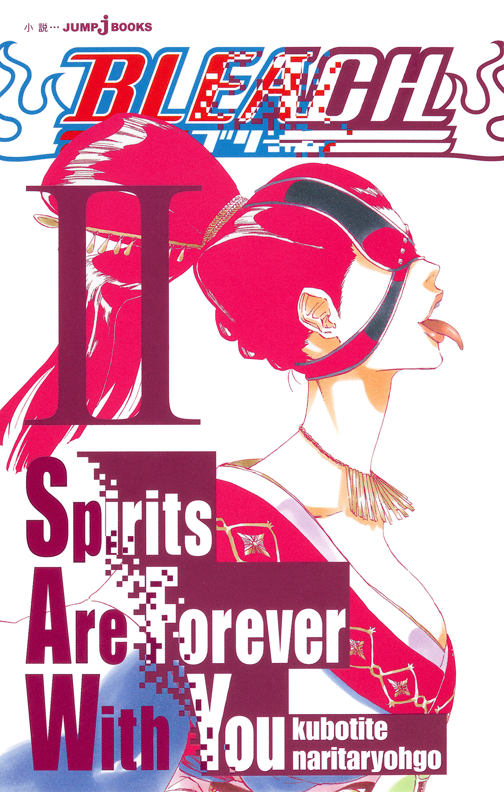
この本は縦書きでレイアウトされています。
また、ご覧になる機種により、表示の差が認められることがあります。
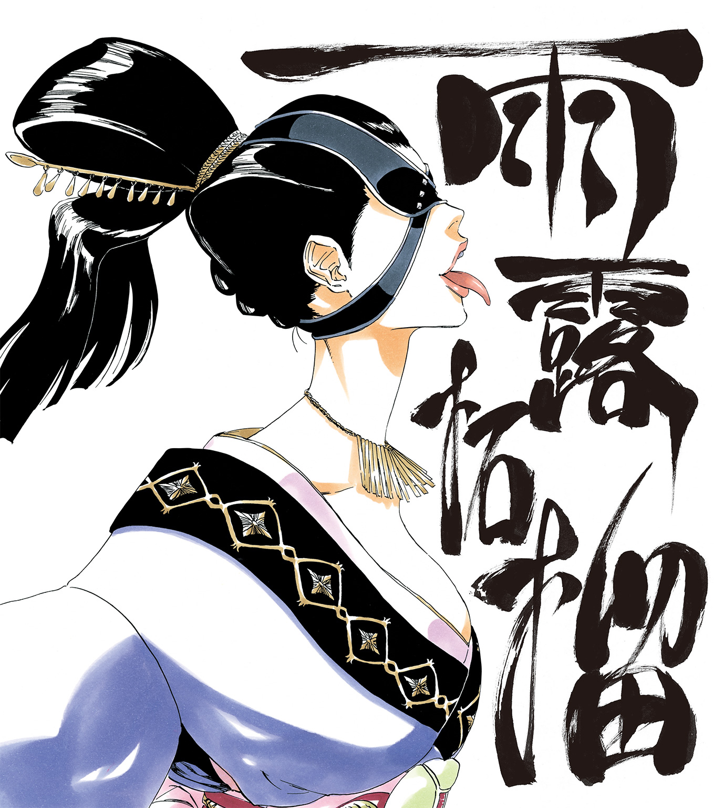
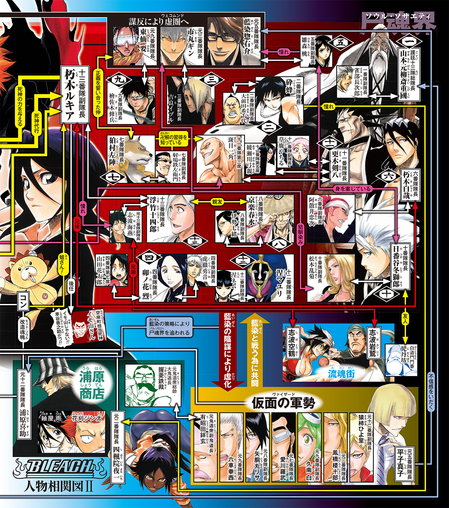
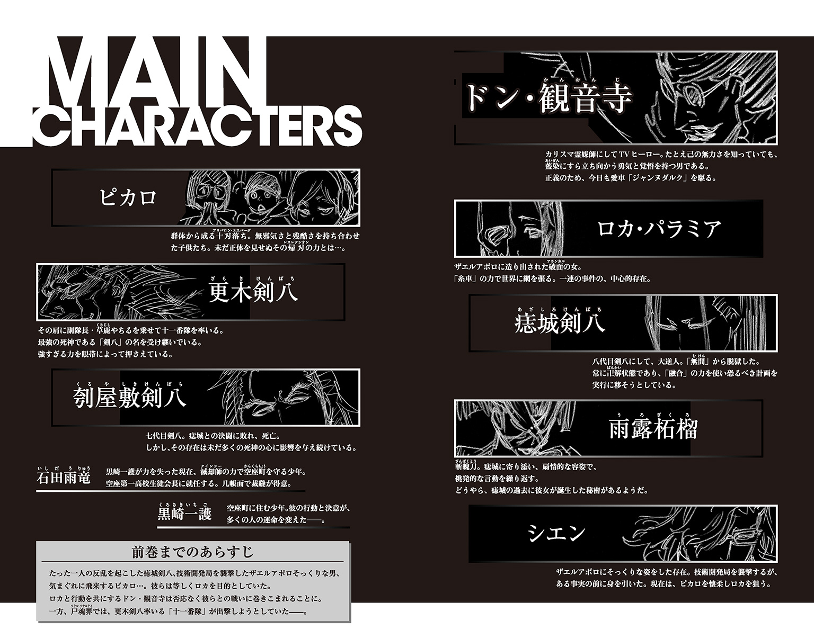
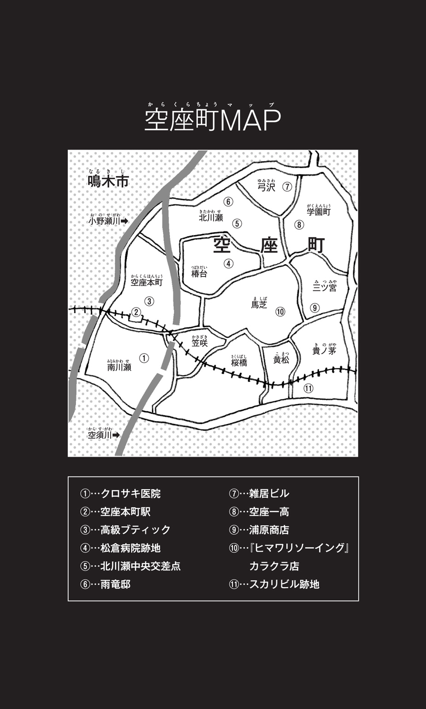
この作品はフィクションです。実在の人物・団体・事件などにはいっさい関係ありません。
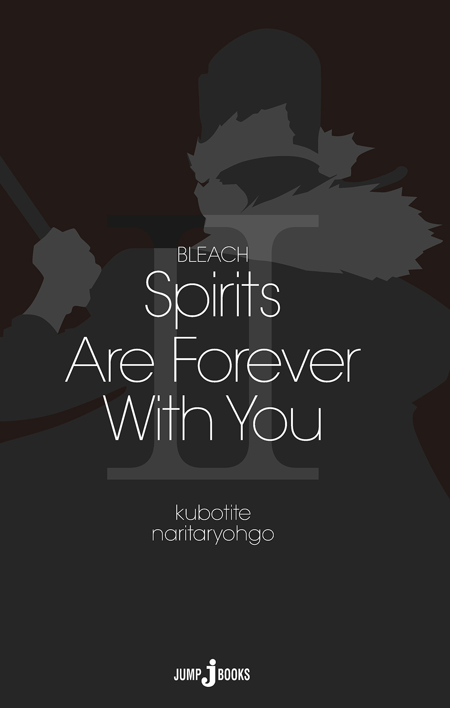
接続章
尸魂界内の治安において、瀞霊廷と流魂街の間には天と地ほどの差がある。
流魂街の中にも差異はあるが、七十番以降の区画となると、毎日のように斬り合いの音と血の臭いが鬩ぎ合い、常に死と隣り合わせの日々が続いているような状況だった。
一方、瀞霊廷は死神と貴族達の為に造られた一つの『都市』であり、多種多様な権謀と悪計が渦巻く事はあっても、暴力の臭いは殆ど感じられない。
だが――そんな瀞霊廷の中に、流魂街の一部と同じく、鉄錆の臭いが飛び交う区画が存在する。
自らを『更木隊』の一員と称した荒くれ者が跋扈する、十一番隊の縄張りだ。
貴族という単語とは程遠い、厳めしい顔の男達が蔓延る区画――『轡町』。
その中心には、鋸草を隊章とする十一番隊の隊舎が存在し、周囲の空気を強制的に荒々しい色に塗り替えている。
通常、他の隊では隊長の名を部隊名とする事は殆どない。過去に『六車九番隊』というものが存在した事もあるが、それとは些か趣が異なっている。
更木剣八は、一度たりとも自分の部下を『更木隊』などと称した事はないし、そもそも正式な名称というわけでもない。
十一番隊に所属する隊員達が、いつの間にか自分達の事をそう呼称し始めたのだ。
中には、虎の威を借る狐にならんとして、そう自称しつつふんぞり返る者もいたが、そうした死神が十一番隊に長く留まる事はない。
周囲の面々が決して狐などではないと気づき、ついていけなくなるからだ。
十一番隊の面々は、実力や人格に差異はあれど、一人一人が猛り叫ぶ虎だと言える。
中身は違えど、それぞれが己の我が儘を通す為に力を求め続けるような面々だ。他人の威を借る暇があるなら、ふんぞり返るような体勢から勢いよく敵に頭突きを喰らわせる。
そうした戦闘中毒者達だからこそ、鋸草を背負う事を許されるのだ。
彼らを威圧感のみで制する事ができるのは、山本総隊長や卯ノ花隊長のように、格の違う実力者ぐらいのものなのだが――そんな彼らも、更木剣八の前では驚く程に態度を引き締め、一つの生き物であるかのように纏め上がる。
更木を恐れているからではない。
中にはそういう面を持つ者もいるが、根本的な所は違う。
彼らは皆、更木剣八の下で、共に戦いたいのだ。
更木剣八を超えたいという者、憎しみを覚える者、純粋に強さに憧れる者など、いくつもの理由を携えながら、彼らの多くは、更木と同じ場所で闘いながら死ぬ事を望んでいる。
更木と共に戦場を駆けるのか、あるいは更木剣八本人と刃を交えるのかは解らないが――それは、彼らにとっては『同じ戦場に立つ』という意味で等しく価値のある事だった。
周囲に酒場などを構える住人達も、彼らを恐れる者ばかりではない。
拳闘の試合場に向かう猛者達に胸を躍らせる現世の人間と同じように、歴代の『剣八』が持つ圧倒的な強さを間近で見たいという者達が、先祖代々住み着いているのだ。
もっとも、住民達にも気性の荒い者が多く、ある酒場の女将など、暴れだした十一番隊下位席官の頭を酒瓶でかち割った事がある程だ。
そうした『戦を受け入れる』風潮があるからこそ、同じ鉄錆の臭いに満ちながらも、流魂街の乾いた空気とは異なる風が吹いているのだろう。
同区画に居を構える人々は、今日も変わらず店を開けるつもりだった。
旅禍の襲来警報と隊長緊急召集が相次ぎ、ただ事ではないという事は理解している。
だからこそ、彼らは最も身を削るであろう十一番隊の為に何かしたかったのだ。
あるいは、そういう口実で、十一番隊の武勇伝を直接見聞きしたかったのかもしれない。
しかしその日、住民達は明らかに異常な光景を目にする事となった。
一歩。
それは、強き男が何気なく踏み出した一歩から始まった。
「俺一人で十分っつったんだがな。爺も何を考えてやがんだか......」
面倒臭そうに呟きながら、男は更に歩を進める。
「何言ってんすか。隊長だけじゃ霊圧の弱い破面を捜すなんて無理じゃねえっすか」
剃髪の男が、そう言いながら自らの一歩を踏み出した。
「それに、隊長が来るなって言っても勝手について行きますよ」
艶のある黒髪の男が、剃髪の男とほぼ同時に歩み出す。
「言っとくが、斬り合いに割りこんできやがったら手前らごとぶった斬るからな」
そんな事を言って歩き続ける男の背を見ながら、厳めしい顔の男達が囁き合う。
「つーか、初めてじゃねえか？ こんなの」
「あぁ？ 寝ぼけてんのか。黒崎の野郎が来た時も、全員で駆けずり回ったろうが」
「そうじゃねえよボケが」「あぁん!?」「あんときゃ隊長は一緒じゃなかったろうが！」
各所で口喧嘩が始まりかけるが、隊長の姿が離れるのを確認し――前の者達の動きに合わせ、自然と口の動きを止め、多くの者が一歩を踏み出し始めた。
一歩。また一歩。
無数の者達の歩みが組み合わさり、やがて―――
最初に気づいたのは、先述の酒場の女将だった。
警戒段階の上がり下がりなど我関せずで、いつもと変わらず店の前を掃除していたのだが――
ふと視線を向けると、道の先で、十一番隊舎の大扉が開くのが見えた。
開かれた扉の奥に、見慣れた存在――彼女が力の頂点であると信じている、更木剣八の姿が見える。二年前に旅禍に敗れたという話は知っているが、それでもなお、彼女達にとって『力』の象徴は更木剣八に他ならない。
鞘と柄に幾重にもサラシを巻き付けた、更木固有の斬魄刀を腰に下げており、恐らくは今回の旅禍を斬りに行くのだろうと見て取れた。
更木剣八の出陣が見られるとは縁起がよい。
そう思った女将は、暫し扉を眺めていたのだが――
「.........？」
一つの『異常』に気づき、慌てて店内で準備をしていた従業員達を呼びつける。
「ちょッ、みんな、おいで！ なんかよく解らないけど、凄いよありゃあ！」
それが、始まりだった。
酒場の喧噪はあっという間に広まり、近隣住民達が窓や軒先から次々と顔を出す。
長く十一番隊の荒くれ者達を見てきた彼らにとって、大抵の事では驚かぬ自信があった。
だが――彼らの目に飛びこんできた光景は、別の意味で彼らの鼓動を速くする。
大路の先頭を歩くのは、この区画で知らぬ者のいない十一番隊隊長、更木剣八だ。
その肩にしがみつき、時折桜色の髪を覗かせているのは副隊長の草鹿やちるだろう。
住民達は一瞬、その二人が影の中を歩いているのかと錯覚した。
彼らの斜め後ろを歩くのは、斑目一角三席と、綾瀬川弓親五席だ。
更にその後に、二十席までの席官達が黒い死覇装を靡かせて歩んでいる。
だが、そこで黒い列が途切れる事はない。
隊舎の大扉からは止めどなく十一番隊の荒くれ者達が現れ、大路を黒い絨毯のように埋め尽くしていくではないか。
普段姿を現さぬ六番以下の席官から、荒巻真木造のように毎日隊舎に入り浸っている平隊員まで、十一番隊に所属するありとあらゆる死神達が剣八の後に続いている。
強大な【白】に引き連れられた、圧倒的な【黒】の群。
普段は絶え間なく怒声をあげている無頼漢達が、一言も発さぬまま瀞霊廷の大通りを蹂躙する姿は、異様の一言だった。
二百名を超える隊士達の行列を見て――住民達の多くは、自分がこれまでにないほど興奮している事に気づく。
「......かっこいい」
ただ歩いているだけの男達を見て、誰ともなくそう呟いた。
何故、そんな感情を抱いたのかは解らない。
特別な何かをしているわけではない。隊士達が大路を歩く姿など飽きるほどに見ている。
数十人単位の集団で走り回っているのを見た事も何度かあるが、騒がしく思っただけで感動した事などない。
それにもかかわらず、更木剣八という男の後ろについて、同じ空気を纏う男達が歩いていくのを見ただけで、まるで自分達が絵画の中にでも入りこんだかのような不思議な感覚に囚われたのだ。
混乱しつつも、その光景に見とれる酒場の女将達の後ろで、住民の中で一番長く十一番隊を見てきた老人が嬉しそうに呟いた。
「この光景を、また見られるとはなあ。長生きはするもんだ」
「なんなんだい、何が始まるってのさ！」
興奮しながら尋ねる酒場の女将に、老人が告げた。
「......出入りだよ。なんのこたぁない。ただ斬り合いに行くだけの話さ。隊長が大勢の部下を引き連れて戦場に向かうってのは、昔は十一番隊の名物だったんだ。ここまで見事なのは刳屋敷の時代で最後だと思ってたが」
そして、老人は虚空に杯を向け、何かに献杯した後、一気に呷る。
「やっぱ、更木も『剣八』って事だわなあ」
嬉しそうに言う老人は、目に薄く涙すら浮かべながら、十一番隊の行軍を見つめ続けた。
その光景を眺めていたのは、近隣住民だけではない。
遠く離れた屋根の上から、行列をひっそりと眺める赤毛の死神が一人。
十一番隊の隊士達は、別に整列して歩いているわけではなかった。
一人一人が違う歩き方で、ただ、隊長である更木に続こうとしているだけだ。
それにもかかわらず、彼らの歩みは一つの大きなうねりのように感じられ、見ている側の肌をピリピリと震わせる。
赤毛の死神は、そんな行軍を複雑な表情で眺めていたのだが――
「こがいな所でどうしたんじゃ、恋次」
背中にかけられた渋みのある声に、赤毛の死神――阿散井恋次は、背後を振り返りながら相手の名前を口にした。
「射場さんこそ、どうしてこんなところに？」
「ここが一番よう見えるけえのう。ちいと、更木隊の出陣を見物に来たんよの」
射場鉄左衛門は、穿界門へと向かって大路を歩く十一番隊に目を向け、恋次に問う。
「お前も加わりたいんじゃろう、あの列に」
「......俺はもう、六番隊っすよ」
恋次はそう呟くが、否定の意は含まれていなかった。
「射場さんこそ、更木隊の血が疼いてるんじゃないすか？」
「ほう言いたい所じゃがのう。隊なんぞ関係なしで、あがいなもん魅せられて血が疼かん漢などおりゃせんわい」
元々更木隊である二人は、過去の記憶を辿りながら十一番隊の行軍を眺め続けた。
普段は手のつけられない破落戸達が、更木剣八の持つ圧倒的な強さに引きつけられるように後ろを歩むのを見て、恋次は改めて、更木剣八という男の力を再確認する。
自らの隊長である朽木白哉とは別種の強さだ。そんな更木の力を知る恋次だからこそ、一つの疑問が湧き上がる。
これまでも度々思い浮かべた疑問ではあるが、更木剣八の荒々しく重い霊圧を感じ取った恋次は、恩人であり戦友でもある男の顔を思い浮かべながら改めてその疑問を口にした。
「つーか、一護の奴......卍解も無しで、どうやって更木隊長に勝ったんだ？」
十一章
むかしむかしの、おはなしです。
何年も、何十年も、何百年も前の事。
とある国に、二人の兄弟がいました。
兄は将軍で、弟は錬金術師。
二人は全く違う人生を歩んでいました。
戦場で敵を叩き潰して楽しむ兄と、自らの工房で動けぬ者を刻んで微笑む弟。
しかし、他者を蔑む目だけはよく似ていると言われていました。
兄が戦の敗北者を工房へと連れこみ、弟が『実験』の材料とする。そんな毎日。
弟が何の実験をしていたのか、それを知る者はいませんでした。
ただ、絶え間ない悲鳴と噎せ返るような血の臭いだけが、工房の周囲に漂い続けました。
何百、何千という人間の命が、同じ場所で弄ばれて消えていきます。
老若男女を問わず、様々な者達が、刻まれ、焼かれ、潰され、千切られ、手の爪の先端から足の爪先まで一寸刻みで解体され、組み直され、他の人間の身体と内臓だけ繫げられ、臓器と人工物を入れ替えられ、抜かれた歯髄を眼球に移植され、薄めた酸の浴槽にて全身を一日単位で徐々に溶かされ――生きたまま、ありとあらゆる『処置』を施されました。
たくさんの人達が、身体に生命反応を残したまま、魂魄を疲弊させていきます。
生きた屍と死んだ生肉が工房の地下を埋め尽くしかけた頃――
兄弟は、唐突に死んでしまいました。
長い苦しみと憎しみを募らせた魂魄達が鎖から解き放たれ、虚と呼ばれる怪物が生まれたのです。
怪物は、兄弟が揃ったところで、工房ごと押し潰してしまいました。
二人の身体から抜け出した魂魄を、じっくりと痛めつけてから喰らおうとしたのです。
しかし、身体から抜け出た弟の魂魄は、潰れた自分の死体と怪物を見比べ、言いました。
「すばらしい。これが僕の求めていたものだ」
狂気に満ちた微笑みを見て、怪物は恐れ、動きを止めてしまいます。
怪物の本能の中に、しっかりと刻みこまれていたのです。
自分よりも遥かに怪物めいた実験を生前の自分に施した男の、悪魔のような微笑みが。
次の瞬間、弟は自分が死んだ事に気づいていない兄の魂魄に近寄り――
「くそ......今、一体何があったんだ？」
「......なに、気にする事はないよ、兄さん」
「なんだと？ ......がッ!?」
霊体と化した彼の喉笛を、何の躊躇いもなく嚙み千切りました。
歓喜に満ちた笑みを浮かべながら、弟は怪物の目の前で、兄や疲弊した実験体の魂魄を喰らい啜ります。
まるで、即座に魂魄や虚の仕組みを理解したとでも言いたげでした。
興奮した弟の身体から延びていた鎖が勢いよく千切れ飛び、鎖のあった場所に大きな穴が広がります。
怪物が異常に気づいて動き始めた時には、もう遅かったのです。
自らも虚と化した弟は、あっという間に自分達を殺した敵を喰らい尽くし、いつまでもいつまでも笑い続けました。
そして、一昼夜が過ぎた頃、弟は異形と化した自分の手を見つめ、呟きます。
「成程成程。この先に、僕の求める完璧な生命があるというわけか」
まるで、生きていたとき、既にこのような事態を想定していたかのように――
弟は、新たな世界に踏み出しました。
死と生の循環を自らに組みこむ為に、弟は、死そのものに一歩足を踏み入れたのです。
すこしむかしの、おはなしです。
虚圏に、とある大虚がいました。
彼の名は、ザエルアポロ・グランツ。
他の虚達を喰らい続けた結果、人の姿を取り戻したその怪物は――『最上大虚』と呼ばれ、多くの虚達から恐れられていました。
普段は冷静な『学者』でありながら、ひとたび闘いとなれば、狂濤逆巻く暴力をもって、幾千もの虚を屠り去ります。
一方で、格下の虚達を率いて尸魂界を攻めさせたり、人工的に中級大虚を作成したり、様々な『実験』を行い続けました。
しかし、彼が自分から闘う事は滅多にありませんでした。一度戦闘状態になると、自分自身の力を制御できず、生け捕りにしようとした相手も粉々にしてしまうからです。
やがて彼はバラガンという王様に召し抱えられ、研究者として働きました。
そこに藍染という新しい王様が現れ、バラガン直属の『刃』を元に、新たに編成された『十刃』という組織の一員として選ばれます。
彼に与えられたのは、『０』の称号。
十刃の中で、一番強い存在という意味です。
元々は研究者として別の数字を身につけていましたが、一度暴れ出すと手がつけられない事から、本気を出した時だけ『０』の数字に切り替わるようになったのです。
しかし、その男は満足しません。
自分が求めているのは『完璧な生命』であり、『強さ』や『地位』ではなかったのです。
更に何年もの間、数え切れない程の虚や整、あるいは死神を解体し続けた結果――ザエルアポロは、一つの結論に辿り着きました。
自ら望む力、『受胎告知』を完成させる事は、人の姿を取り戻した今の自分では不可能だと。進化の過程からやり直す必要があるのだと。
動物的な要素を残した中級大虚に戻り、進化をやり直すという発想を経て――彼は、自らの身体を二つに分けました。
戦闘に際し、精神を余計に高ぶらせる厄介な欠片――一番最初に喰らった兄の魂を基礎として、そこに『戦士』としての素質を集めて自分の身体から分離させたのです。
中級大虚から最下大虚に退化した場合は理性を失い、二度と中級大虚に戻れませんが、最上級から理性と自我を保ったまま中級大虚へと退化する事で、もう一度進化をやり直そうと考えたのです。
これによって、戦士としての力は殆ど失われました。
「正気じゃねえな。好きこのんで弱くなるなんざ、俺からすりゃ頭がぶっ壊れてるとしか思えねえ」
『５』の数字を持つ男は、怪訝な顔をしてそう言いました。
実際、ザエルアポロは自らを中級大虚まで退化させた直後、性格の悪さや人望の無さも相まって、十刃から外される結果となりました。
しかし、彼は更なる実験と研鑽を続け――ついに、転生の秘術である『受胎告知』を完成させます。
科学者としての力だけで、彼は十刃として返り咲き、『８』の数字を与えられたのです。
兄は牛のような姿で放浪し、とある中級大虚の集団と行動を共にする事になりました。
やがてその集団に、豹の姿をした強き中級大虚が加わり、彼に引き連れられる形で藍染の下に戻りました。
ですが、ザエルアポロは、そんな兄に対して何の感情も抱きませんでした。
彼にとって、『兄』とは、既に捨て去った存在だったのです。
捨てたゴミが自分の見える所に戻って来たところで、何も思うことはなく――実際、兄が死神との闘いに敗れて死んだ時も、悲しみなどという感情は欠片も湧き上がりませんでした。
そして――ザエルアポロ・グランツもまた、科学者として死神との闘いに赴きます。
以前のように、闘いに陶酔し、我を忘れる事もありません。
力の比べ合いを楽しむなど、彼にとっては邪魔な感情でした。
自分は、霊圧や膂力といったものを超えた力を手に入れた。
死と生の循環すら取りこみ、『完璧な生命』になったと自負していたのです。
様々な手練手管を用いて、虚圏にやってきた襲撃者達を迎え撃ち、新たな実験材料を手に入れようとした結果――
彼は、地獄に堕ちました。
これで、ザエルアポロ・グランツの物語はお終いです。
すこしむかしの、おはなしです。
しかし、やがて彼と同じ姿をした破面が現れ――
舞台を過去から現在へと変え、新たな物語を紡ぎ始めようとしていました。
現在 虚圏某所
ザエルアポロ・グランツ。
その存在は、涅マユリによって葬り去られ、意識を司る魂魄の核は地獄へと堕とされた。
だが、現在――子供の姿をした破面の群体である『ピカロ』の前に立つ男は、確かにザエルアポロと同じ姿をしている。
眼球の一部に『１００』の数字を刻む男は、自らの過去を思い出す。
自分は、ザエルアポロ本人である筈だった。
生者として現世で過ごした時に感じた肉を刻む感触が、ハッキリと手に残っている。自分の死体の様子はおぼろげにしか覚えていないが、虚と化し、大虚へと進化した後の事も全て明確に記憶している。
あまりにも明確過ぎる事を、奇妙に思うべきだったのかもしれない。
涅マユリが指摘したように、自分がザエルアポロの魂の複製に過ぎないというのならば、本体が忘れてしまった記憶すらも『バックアップ装置』に蓄積されていた可能性がある。
――コピーか。
――この僕が、単なるザエルアポロ・グランツの知識が生み出した残像とはね。
自分の手の平を見つめながら、彼はクツクツと笑いだした。
――つまり......僕はもう、ザエルアポロに縛られる必要がないという事か。
１時間前までの自分では思いつく事すら不可能だった言葉を心中で唱える。
マユリに自分の正体を指摘されたところで、彼の心には様々な感情が湧き上がった。
戸惑い、絶望、虚無感。
衝撃の波が僅か数秒の間に怒濤のように押し寄せ、自我の崩壊すら訪れかけた。
だが、自我が崩壊しかけた事によって、彼を縛りつけていた『鎖』が先に砕けた。
自分がザエルアポロだという、太く強固な鎖の束。
それが砕け千切れた瞬間に訪れたのは――果てしない歓喜の嵐だった。
――僕が僕じゃなかった事がこんなにもすがすがしいとは。なるほど、確かに僕は僕ではなかったのだろうな。
その思いが示す通り――徐々にザエルアポロの人格や思想と差異が現れ始めている。
人格のブレ。
原因は多々考えられるが、バックアップ装置の頭部がヤミーによって潰されていた事も要因の一つかもしれない。
確かに、その時期からの記憶はそれまでに比べて格段に質が落ち、録霊蟲が捉えた客観的な情報によって補完されている。
だが、そうした事実は、マユリに指摘されるまで違和感を覚えさせる事すらなかった。
恐らくは、自分がザエルアポロである為に不都合な事は脳内で自動的に『調整』していたのだろう。そう考えてみると、バックアップ装置――ロカ・パラミアにそんなシステムを組みこんだような記憶もある。
見つめた手をグイ、と握りしめると、その表面が僅かな光を発するのを確認した。
『反膜の糸』によるバックアップ装置とのリンクが断たれた今、少しずつ霊子が崩壊している。このままでは、何日もしないうちに自分はただの塵に還るだろう。
自らの絶望的な状況を確認して、男は粘りけのある笑みを浮かべた。
どうすればその絶望から逃れられるか、既に理解していたからだ。
喰らい続ける。ただそれだけでよいのだ。
崩壊量を超える霊子を取りこみ続ければ消滅する事はない。最終的には、地獄門の奥にいるらしい『ザエルアポロ』の魂魄を取りこめば、標本と化している『肉体』と融合できる可能性は高い。
ザエルアポロを取りこむ。
決して、自分のコピー元である彼と一つになろうとは思っていなかった。
彼は、ザエルアポロという存在そのものを乗っ取ろうとしていたのだ。
もしも、彼が完全なるザエルアポロのコピーだったならば、普通に魂魄を融合させていたかもしれない。
だが、彼の中には――本物のザエルアポロには無い要素があった。
ロカという記憶と人格のバックアップ装置を作ってから、『兄』を分離させるまでの間の魂の記録。ザエルアポロが捨て去った気質が入り交じっている状態の彼にとって、『ザエルアポロ』は物足りない存在、自分よりも劣った存在なのだ。
「......何故、『私』は『私』を捨てようなどと思ったのだろうな？」
クツクツと笑い、男は手から目を離す。
そして、おもむろに視線を砂漠に向け、軽く虚閃を撃ち放った。
細く鋭い閃光が砂漠の果てめがけて伸び進み、一瞬遅れて、地平線上に半円状の爆発が巻き起こる。小さな村程度ならば、一撃で消し去る事ができる熱量だ。
虚閃が通った後の景色が僅かに揺らめいているが、それは陽炎や幻ではなく――確かに、空間そのものが歪んでいたのである。
『兄』の魂の複製が部分的に組みこまれている結果だが、当然ながら、破面二人分の霊圧を足しただけではここまでの威力は出ない。
スタークとリリネットのように、片方は『鍵』に過ぎないのだ。融合する事でそれまで閉ざされていた力の回廊が開き、数倍の力が解放される。
――こんなにも素晴らしい『力』を手放すとは。ノイトラが言っていたように、確かに正気ではなかったのかもしれない。
心中でそんな事を考える男の背後から、ピカロの無邪気な声が聞こえてきた。
「ねーねー、今の何！ 凄い！ 今のが『王虚の閃光』ってやつ!?」
「かっこいい！」「グリムジョーが前にやってたよね」「でも、グリムジョー、いけないんだよ？ 藍染様から、家の中で使っちゃいけないって言われてたのに使ったんだもん」
「オナカスイタ」「ていうか今、なんで撃ったの？」「Ｑｒｒｒｒｒｒｒ......」
騒がしい声に一瞬眉を顰めたものの、ザエルアポロの姿をした男はすぐに作り笑いを浮かべ、子供達に優しく答えた。
「いいや......今のはただの虚閃さ」
ピカロの事はザエルアポロの姿をした男もよく知っている。
無邪気で愚かな存在だ。
世界を騙すのが悪意とするならば、世界を壊すのは無邪気さだろう。
彼らを蔑むと同時に、自分自身の為に本物の笑みを浮かべた。
自らの中にもまた、『無邪気な一面』とやらがある事に気がついたからだ。
「これでも、ザエルアポロ・グランツの全盛期と比べれば......三割程度の力だけどね」
敢えて『僕の』とは言わず、『ザエルアポロ』と言い切る男。
違和感を覚えたのか、子供達の一人が問いかける。
「変なの。まるでお兄ちゃんが、ザエルアポロお兄ちゃんじゃないみたい」
「......ああ、その通りさ」
「え？」
「君達に『久しぶり』って言ったのも噓という事になるね」
あっさりと答えたザエルアポロに、子供達は不思議そうに首を傾げる。
「今はまだ、僕はザエルアポロ・グランツじゃあないんだ」
ドロリ、と、空間に毒を流しこむような不気味な笑みを浮かべ、男は言葉を続ける。
「これからなるのさ。ザエルアポロ......いや、彼すらも超えた存在にね......」
「よくわかんないや。じゃあ、お兄ちゃんは誰なの？」
ヘッドホンのような仮面の欠片を頭につけた少年の言葉に、男はどうでもいい、とでも言いたげに口を開いた。
「なんでもいいさ。そうだな。【１００】とでも呼ぶといい。いいから、君達はさっさとゲームの続きを始める事だね」
「シエン？ へんな名前ー」
そう言いつつも、ヘッドホンの少年は周囲の子供達を見回して声をかける。
「まあいいや。じゃあ、シエンお兄ちゃんと宝探しゲームをする子と、『糸』のお姉ちゃんを捜す子で半分に分かれるよー」
キャイキャイと騒ぎながらザエルアポロ嫌いの者も巻きこみ、グーパーを始める子供達。
そんな彼らを下らないと思いつつ、視線を再び手に向ける『シエン』。
今しがたの虚閃の威力は、恐らくザエルアポロの全盛期の三分の一程度だろう。
マユリと相対した後、黒腔から脱出する為に自らの内側から引き出した『力』の感覚。
半分無意識下での行動だったものの、あの瞬間は、確かにかつての力を取り戻していた。
だが、それでも一瞬が限界だ。恐らく斬魄刀を一振りする間すらないだろう。
恒久的に力を引き出すには、自分の霊圧と――過去の『情報』が圧倒的に足りない。
より完全に過去の自分を取り戻すには、兄と分離した後のザエルアポロ本人が虚圏各所に『捨てた』素材が必要となる。
それを収集し、自分に組みこむ事ができれば――
自分は、完全に力を取り戻す事ができる。
完全なる力を取り戻したら、その後に何をすべきか。
尸魂界への復讐や、藍染に代わり虚圏の王になる事も考えた。
ザエルアポロ・グランツであれば『研究の時間が減る』と言って真っ先に拒絶しそうな選択肢も、シエンにとっては心地よく胸に響く。
しかし、最初にやる事は既に決まっていた。
ロカ・パラミア。
ザエルアポロが生み出した、『記憶装置』を――二度と再生できぬ程に破壊する。
それが、彼にとって一番の優先事項だった。
『糸』のシステムは、地獄や尸魂界に侵入するには必要不可欠だ。一から構築するとなると時間が掛かりすぎる為、ロカを潰して取り出すのが手っ取り早い。
システムだけが目的ならば、ロカに命じればよいだけの話だが――
シエンにとっては、ロカを破壊しておきたい理由がある。
彼にとって、自分の崩壊を防ぐ方法はもう一つだけ存在していた。
だが、その方法は、彼にとって忌むべき手段だ。
ロカ・パラミアと再び『糸』で繫がり、彼女の『一部』として生き続ける。
格下に見ていた者の手で生かされる。それは、ザエルアポロのコピーとして生まれた彼にとっても――寧ろ、コピーとしての自我に目覚めたばかりの彼だからこそ、決して許されない屈辱の道だった。
更にもう一つ。
ロカ本人は気づいていない事だが、彼女が『糸』の力の真髄に辿り着いた場合――シエンにとって、実に恐ろしい存在になる可能性があったからだ。
彼女が自分に敵意を持つ可能性は薄いかもしれない。
だが、念には念を入れなければならない。
『完璧な生物』と称したザエルアポロでさえ、一人の死神にあっさりと敗北を喫してしまったのだから。
自分の模倣元と同じ過ちを犯さぬよう決意しながら、シエンは自分の手の平から少しずつ乖離していく霊子を見つめ、思う。
――やはり、虚閃を使うと崩壊が早まるな。
自身の消滅。
『無』への回帰を前にしても、シエンはさして焦る様子もなく、背後へと目を向ける。
――まあ、時間はまだまだあるさ。
「勝ったー！」「グーパーじゃん！」「もー、男の子は真面目にやってよー！」「あ、あの、くじ引きで決めた方が早いと思います......」「うるさいなあ」「俺 ま じめ に やる」「ハラヘッタ」「ＰＲＲＲＲＲＲＲＲＲＲＲＲＲＲＲ......」
相変わらずはしゃぎ続ける子供達を見て、シエンは小さく舌なめずりをした。
――霊子を補給する為の非常食は、ここに山ほど存在しているんだからね。
十二章
尸魂界
隊首会が終わって、暫く経った後の一番隊舎前。
扉を出た所で立ち止まり、京楽春水は笠を上げて虚空を見つめながら呟いた。
「面倒な事になってきたねぇ、どうも」
それは、京楽の口癖の一つとして周囲に認識されている言葉だったのだが――
実際問題、尸魂界は現在、『面倒』では済まないレベルの問題に直面している。
痣城剣八の脱獄。
それは、尸魂界を揺るがす大事件と言っても過言ではなかった。
何しろ、【無間】には藍染惣右介をはじめとする稀代の悪人が収容されているのだ。簡単に脱獄できるという事になれば、尸魂界の存亡の危機になりかねない。
だが、少なくともその心配はなかった。
【無間】が堅固なる牢獄という事に変わりはなく、痣城が例外中の例外だったからこそ起こりえた脱獄劇と言える。
周囲の霊子全てとの融合。
最初から常に卍解状態という稀有な斬魄刀の使い方をしており、彼は常時、殺気石と遮魂膜に囲まれた瀞霊廷の全てと同化しているのだ。
当然ながら【無間】の牢獄にも殺気石が用いられていたのだが、空気とすら融合する事ができる彼は、遮魂膜と殺気石が存在しない箇所――
恐らくは、内部を監視する為の霊具設備と同化して、【無間】から脱獄したのだろう。
問題は、刑務所の機構というよりも――彼の斬魄刀が持つ、常識外れなその能力だ。
京楽は、その能力の埒外さをよく知っていた。
一年程の間とはいえ、隊長の中では、彼が一番多く痣城剣八の力を見てきたのだから。
刳屋敷剣八との決闘の際に見せた不思議な力も、それならば納得が行く。
何も無い場所から唐突に現れた刃は、空気と融合させていた刀を相手の肺の中で具現化させるか何かしたのだろう。
そういう意味では、京楽は現隊長の中で一番痣城と深く関わっていると言える。
朽木白哉は、隊首会が終わった直後、
『兄にしては、些か言葉数が多かったようだな』
と、京楽に一言だけ残して立ち去った。
何か特別な過去がある事を見抜いていたが、敢えて踏みこむつもりはないのだろう。
確かに、知己の仲である刳屋敷剣八を目の前で殺されたのだ。因縁があると言えばある。
だが、彼に恨みや憎しみを抱いているかと言えば、答えは否だ。
どのような形であれ、刳屋敷剣八は果たし合いの末に、戦いの末に死んだのだ。それに難癖をつける事は、それこそ彼の生き様を穢す事になる。
痣城剣八が【無間】に相応しい奸賊であれば、京楽も今回の件に関してさほど口出しをする事はなかっただろう。しかし、痣城は、藍染とはまた違ったタイプの大逆人だった。
そんな事を思い返していると、京楽の背後から野太い声がかけられる。
「京楽殿」
「おや、狛村隊長じゃないのさ。どうしたんだい」
「貴公に、一つ問いたい事がある」
狼の瞳に鋭い眼光を満たし、痣城についての疑問を呈する狛村。
「痣城剣八という男は、一体何故、尸魂界に反旗を翻したのだ？」
「......やっぱり気になるかい、それ？」
「危険な思想を口にしてはいたが、私には、あの男が単なる悪逆の徒とは思えなかった」
「この会話も痣城君には丸聞こえだろうから、言うのは少し気恥ずかしいんだけどねえ」
溜息を吐いて返すが、狛村の目に揺らぎはなく、それを確認した京楽は目を僅かに下に逸らしながら口を開いた。
「今回脱獄した理由と同じだよ。彼が反逆を起こしたのは、正義の為さ」
「......なに？」
正義という単語に、狛村の耳がピクリと動く。
「尸魂界と現世の理......死神の使命に対して、彼ほど誠実だった死神を僕は知らない」
「......奴自身もそれは口にしていたが......。ならば、何故、反逆など......」
「尸魂界と現世の為の正義が......瀞霊廷や流魂街の為の正義とは限らなかった......っていうだけの話さ。正義には個人差があるってのは......キミなら、解るだろう？」
「............」
狛村の脳裏に、一人の親友の顔が思い浮かぶ。
目を細める七番隊隊長を前に、京楽はゆっくりと語り始めた。
遥か昔に起こった、痣城剣八による反逆劇の、あまりにも呆気ない幕切れを。
二四九年前 尸魂界 白道門前
尸魂界の西側にある、四大瀞霊門の一つ、白道門。
その門の前で、門番である豪傑、兕丹坊の声が木霊する。
「ぐははははは！ いいど！ オラの斧さ受け止めだのは、お前えが初めてだ！ だども、次の技は止められっこねえべ！」
言うが早いか、兕丹坊の必殺技、十本兕丹打祭が繰り出された。
ちょっとした屋形船ほどの重さである斧を、力任せに十回振り下ろす荒技だ。
門番が、門を護る。
巨斧の一撃が初めて防がれた事を除けば、いつも通りの光景なのだが――
不思議な事に、彼は瀞霊廷に背を向けて門を護るのではなく、流魂街を背にして闘っていた。
まるで、瀞霊廷から何者かが出る事を防いでいるかのように。
そして、数十秒後。
数え間違いも含めて、三十五回ほど斧が振り下ろされた後に残されていたのは――
クレーター状に砕き掘られた地面と、そこに舞う土煙だけだった。
「......どうすんべ。やり過ぎぢまっただ」
形もなくなるほど粉みじんにしてしまったと、虚しい勝利に浸る門番。
そんな彼の背を、遥か遠くからちらりと眺め――粉みじんにされた筈の男が、ゆっくりと歩を進める。
流魂街の住民達の視線を感じるが、男は気にする事なく、ゆっくりと地区の中心部へと進んでいった。
だが、その足が、不意に止まる。
次の瞬間、男――痣城剣八の前に、二人の男が立ち塞がる。
彼と同じ隊長羽織を纏う、京楽春水と浮竹十四郎だ。
「やれやれ、念の為、外で待っててよかったよ」
「白道門に向かう道に君が現れたと聞いて、先回りして正解だったな」
世間話のように語りかける二人に、痣城は淡々と最低限の言葉だけ口にした。
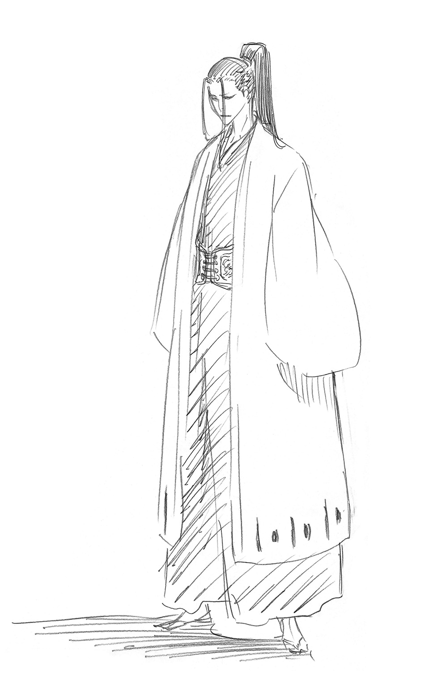
「私の考えに賛同するつもりがあるのなら、協力を頼む。否定するのならば、何もしない方がいい。無駄に霊力を消費するだけだ」
「賛同、ねえ。そりゃ無理でしょ」
京楽は笠を外し、真正面から痣城と相対する。
「流魂街の人間を、一人残らず虚圏侵攻の尖兵にしようなんて、そりゃ、無茶ってもんさ」
続いて、浮竹も声をあげる。
「四十六室が君の行動を否定してくれた事に、正直安堵しているよ。仮に四十六室や総隊長が君の計画を認めたとしても、やはり俺は、ここに立っていたかもしれん」
人形のように感情を消している痣城の顔を前にして、二人は気後れする事なく対峙し続ける。
『流魂街の住人全ての魂魄を改造し、虚を殲滅する力を与えて虚圏へと侵攻させる』
それが、痣城剣八が四十六室に上申した計画だった。
当初、四十六室はその提案を鼻で笑った。
霊力の無い流魂街の住民達。
虚の餌にしかならぬ者達を、どのようにしたら戦力にできるというのかと。
『やれるものならばやってみよ』という空気で、その計画は一度は承認された。
だが――流魂街から瀞霊廷に侵入しようとした罪人達の魂魄を実際に改造し、虚と戦う為の戦闘人形と変化させた瞬間から、四十六室の態度がガラリと変わる。
通常の虚を一分と掛けずに屠り去り、痣城に絶対的な忠誠を誓う罪人達を見た四十六室は――『人道にもとる非情な計画である』として、計画の即時中止を決定したのである。
改造された魂魄が持つ想定外の力に、彼らは恐れたのだ。
剣八の名を持つ者に更なる力を与える事で、自分達の地位が脅かされるのではないかと。
そして、痣城剣八はその命令を不服とした。
すると、四十六室は――『罪人の魂魄改造の許可を与えた』という事実を、文言の間隙を縫う形でねじ曲げた。『無許可で罪人の魂魄を改造した』という罪状を皮切りに、痣城剣八は様々な罪を着せられ――大逆人として追われる結果となった。
だが、痣城剣八はそんな四十六室の横暴を否定も恨みもしなかった。
全ては予想通りだと言わんばかりに、彼は口を開く。
――「四十六室に、『剣八』を止める事はできまい？」
――「全流魂街の住民を改造する準備はできている。協力が得られないのならば、時間はかかるが、私一人でやるとしよう」
まるで散歩にでも行くと告げるように、あっさりと呟かれた言葉。
その言葉をきっかけとして――全隊長を相手どる、痣城剣八の短い反乱が幕を開けた。
「四十六室は無駄な警戒心を抱き、自分達の保身の為に決断を覆しただけだ。私には、彼らにとって代わる野心などは無い。君達は、それを理解してくれると思ったが」
当の反逆者は、罪悪感の欠片もない声で二人の隊長に呼びかけた。
だが、当然ながら、彼らの返答は芳しくないものだった。
「ああ、キミに野心はないだろうね。野心があってくれた方が話しやすいんだけどさ。どっちにしろ、虚を倒すなら、もっと肩肘張らないで済む方法があるんじゃないの？」
「痣城......君の目的が問題なんじゃない。その手段が問題だと言っているんだ。四十六室の意志は関係ない。ここに俺達が立つのは、あくまで俺達の意志だ」
明確な拒絶の言葉。
痣城は何も言わないが――傷一つ無い彼の身体を見て、京楽が気だるげに口を開いた。
「しかし、まいったねぇ、結局、他の隊長達を全部振り切ってここまで来たわけだ。正直な所、ここでいつもみたいに消えられたら、僕らにはどうしようもないわけだけどさ」
嘆息混じりに、華やかな外套の裏から何かを取り出そうとした京楽だが――
彼が陶器製の酒瓶を握った瞬間、痣城は感情の無い声で言い放つ。
「酒の誘いなら、無駄だと先に言っておく」
「......まいったね。そんな事までお見通しかい？」
頰を搔く京楽の横から、浮竹が口を出した。
「確かに、俺達の使命は虚を討ち果たし、尸魂界と現世の調和を図る事だ。だが、その為に流魂街の者達を戦争の道具にする事が正しいとは思えない」
どうやら、彼は本気で痣城を説得するつもりのようだ。
だが、痣城も痣城で、浮竹を無視し、京楽を懐柔しようと口を開く。
「京楽春水。君は私に一番近い所にいる筈だ。君は態度こそのらりくらりとしているが、その実、自分が打ち斃すと決めた敵には非情に徹する事ができるし、それこそ、勝つ為ににありとあらゆる手段を使う」
「買いかぶりだよ。僕に使える手なんて、限られた数しかない」
「そうかな。私は、総隊長を除けば君が一番警戒に値すると見ているが......まあいい」
京楽自身の否定は聞かず、痣城は尚も言葉を続けた。
「私達が最優先とすべきは、尸魂界と現世の平衡を保つ事だ。地獄のクシャナーダ達が罪人を裁き続けるのと同じように、個々の意思を捨て、死神は単なる絡繰りの歯車となるべきなのだ。文化も感情も不要だ。過度の甘さも過度の嫌悪も、四十六室が慢心と共に語る尸魂界の歴史とやらも、我々の使命を邪魔だてする足枷に過ぎない」
「そこが違うのさ。僕らとキミじゃ、道義の根本がね。まあ、尸魂界の法と僕らも、いつかすれ違う時が来るかもしれないけれど......少なくとも、それは今じゃない」
「成程......ならば、これ以上無駄な問答はすまい」
痣城は軽く目を伏せ、二人の隊長達に向かって一歩足を踏み出した。
「......いつもみたいに、煙みたいに消えないのかい？」
京楽の言葉に、痣城は答えない。
彼が更に一歩進んだ瞬間――京楽と浮竹は、同時に刀の鞘に手をかける。
「花風紊れて花神啼き 天風紊れて天魔嗤う――『花天狂骨』」
「波悉く我が盾となれ 雷悉く我が刃となれ――『双魚理』」
刀を抜くと同時に解号を発し、相対する二人の隊長。
「......無駄な事だ」
痣城は軽く手を翳し、前方の二人に向けて鬼道の詠唱を織り紡ごうとする。
だが――彼の口から、詠唱が漏れる事はなかった。
僅かに目を見開き、京楽達を無視してゆっくりと背後を振り返る。
遠くに見える瀞霊廷の方角を見つめながら、独り言のように呟いた。
「そうか......霊王も、私の行動を否定したか」
「？」
「何を言っているんだ？」
京楽達はその瞬間、痣城の顔に僅かな感情の色が浮かんだのを確認した。
だが、一体どのような情念なのかを理解するよりも早く、痣城はすぐに顔からその色を消し去り、手を下ろした。
「......いいだろう。君達に投降する。大人しく四十六室の裁判を受けるとしよう」
唐突な申し出に、京楽と浮竹は始解状態の斬魄刀を構えたまま眉を顰めた。
「そりゃまた、どういう風の吹き回しだい？」
「無駄話をする気はない」
それ以降は口を閉ざし、無言を貫く痣城。
京楽と浮竹は互いに顔を見合わせつつも――斬魄刀を鞘に納め、そのまま痣城を連行する事にした。
「あんれ!? どういうごどだべ!? もすかすて、双子の弟だが!?」
自分が叩き潰した筈の男が京楽達に連れてこられるのを見て、目を白黒させる兕丹坊。
門は一部が破損しているだけで、これならば数日あれば簡単に直す事ができるだろう。
「いやあ、君の技が凄すぎたんだろうね。遠くまで吹き飛んでのびてたよ」
京楽が適当な事を言うが、痣城は特に否定もせず、黙りこんだままだ。
「なんるほど！ そうだったが！ 粉々にすちまったど思って、墓に入れてやるごともでぎねど心配すてただ！」
兕丹坊はホッと胸をなで下ろすと、連行される痣城に言い放った。
「お前えも、ごれに懲りたらもう、門の裏で大喧嘩なんがすんでねえぞ？ おがげで門がぶっ壊れちまっだがらな」
「......喧嘩？」
「まあ、相手の連中も大勢でごいつを袋だたぎさすようとすた田舎者揃いだで、大目に見てやってぐんろ」
門番の言葉に、京楽と浮竹は訝しげに眉を顰め――
開かれた門の内側に足を踏み入れ、絶句した。
「これは......」
そこに見えたのは、数百人に及ぶ死神達が、大路に倒れて呻いている姿だった。
命はあるようだが、誰もが立てぬような状態で、遅れて来たと思しき四番隊の面々に治療を受け始めているところだった。
「あの門番には、死覇装と隊長羽織の違いを教えておくべきだな。私だからよかったが、他の隊長格ならばあの門番は無駄に命を失っていたぞ」
淡々とした調子で、その光景とは直接関係のない事を口にする痣城。
だが、そんな言葉は、目の前の現状に絶句する二人の耳には入らない。
彼らが何より驚いたのは――呻く敗北者達の中に、隊長格の者も数名含まれていたという事だった。
「......君がやったのか？」
鋭く睨む浮竹に、痣城は淡々と答える。
「示威行動だ。私を追う事が如何に無駄な行為か、理解させておきたかったのでね」
何の罪悪感も無いといった口調で告げた後、僅かに眉を顰め、無念そうに呟いた。
「だが、ここに来る途中で、『銀蜻蛉』の店員を巻きこんで怪我をさせたのは私の不覚だ。怪我の程度がハッキリしたら、いずれ慰謝料を払う事としよう」
落ち着いて語る口調はまるで、自分がすぐに自由の身になるとでも言いたげだった。
京楽は一抹の不安を覚えたが、やがて彼は禁固一万九五〇〇年の判決を言い渡され、【無間】の闇へと葬られる結果となった。
彼の『魂魄を改造する』という計画が凍結された後、やがて由嶌欧許という男がその理念の一部を引き継いだ。零から魂魄を生み出す『改造魂魄』と『尖兵計画』の研究を推し進めたのだが、やはり四十六室の手によって凍結される。
最終的にそこで生まれた改造魂魄の一つが、処分を逃れて空座町の死神代行と出会う事になるのだが――それはまた、別の話として語られる事だろう。
そして、誰もが痣城剣八に対する不安を忘れ、二百年以上の時が過ぎ――
再び、その名が瀞霊廷を闊歩する。
瀞霊廷が既に彼の手中にあるという、俄には信じがたい情報を携えて。
現在 一番隊舎前
「......何故、それほどの男が、あっさりと縛についたのだ？」
狛村の疑問に、京楽は真剣な目つきで答えとなる単語を口にする。
「零番隊」
「！」
俗に【王属特務】と呼ばれる、霊王直属の護衛部隊の名に、狛村は目を僅かに見開いた。
「痣城を捕らえる為に、零番隊が動くって話が出たのさ」
「なんと......」
「夜一君の話の通り、痣城君が瀞霊廷を全て見通せるっていうなら......丁度、彼が僕らを無視して瀞霊廷を振り向いた頃だったんじゃないかな。零番隊が瀞霊廷に現れたのは」
つまり、痣城剣八は零番隊が動くという情報を察知して、即座に判断したのだろう。
自分の力では、護廷十三隊を相手どる事はできるが――零番隊を敵に回してまで戦い続けるのは、『無駄な行為』になるだろうと。
「まあ、彼らしいっちゃ彼らしいけどね。それだけ、零番隊は別次元って事かな」
その言葉の続きは、痣城に聞かれぬよう、心の中で独りごちる。
――でも、今思うと、その時点で消えて逃げなかった事は割と重要かもしれないねえ。
――本当に彼が万能なら、一瞬で流魂街と自分を同化させて、みんなを改造していただろうし、零番隊からも逃げ続ける事だけなら可能だったろうからね。
――彼の力にも、何かしらの制約はあるってわけだ。
言いながら考えこむ京楽に、狛村が別の疑問を口にした。
「しかし、それほどまでの力を持つ零番隊が、何故藍染の時には動かなかったのだ？」
「色々理由はあると思うよ。護廷十三隊で解決できる事案だと判断したのかもしれないし、藍染が王鍵を創る事まで想定して、霊王の護りに徹するつもりだったのかもしれない」
そこまで言って、軽く息を吐き、空を仰ぐ京楽。
「少なくとも、会った事も見た事もない霊王様の御意向なんて、僕らには想像もつかないさ。霊王と零番隊には、彼らなりの正義なり矜恃なりがあるんだろうしね」
「............」
「尸魂界の正義......四十六室の声に従って、僕らは一度、ルキアちゃんの処刑を納得しようとした。それが世界の正義なんだとね。一方で、誰よりも尸魂界と現世の天秤を調整する事を考えていた痣城君は、逆に四十六室から否定されたわけさ」
「......皮肉なものだな」
朽木ルキアの処刑に関しては、四十六室を装った藍染の指示だった。
だが、本物の四十六室ならば、ルキアの処刑を命じなかったとは言い切れない。
それが、四十六室という組織の性質だ。
「結局、尸魂界の正義っていうのは、人の積み重ね。歴史が造り上げた正義って事だよ。僕らはその手の平の上で、踊るか足搔くか迷うだけさ」
険しい顔をして黙りこむ狛村に、京楽は更に口を開く。
「もっとも、正義だのなんだの関係なく、全く別の歴史が造り上げた理もあるけどね」
半分は独り言のように、京楽は笠の先を下げながら呟いた。
「それが、『剣八』の名前って奴だよ」
十三章
「ボハハハハー！」
空座町の街並みを、一台の高級外車が珍妙な笑いと共に走り抜ける。
車だけで十分に人の目を引くのだが、運転席の男は、更に目を引く存在だった。
「ドン・観音寺だ！」「観音寺だ！」「俺、昨日の公開収録で見たぜ！」
「本物!?」「すげぇー！」「ガハハハハー！」「ちげえよ馬鹿！ ポハハハハーだろ！」
町ゆく者達が、彼の姿を見て驚きと歓びの声を上げる。
特に子供達が目を輝かせており、中には車を追って歩道を走りながら手を振る者もいる程だった。
だが――観音寺が目立ち過ぎるせいで特に気にかけられていないが、助手席に座る女性も、かなり人の目を引く格好をしていた。
なにしろ彼女は、ハリウッドスターの私服のような豪奢な服を纏っており、それでありながら頭部を帽子とマフラーで半分以上隠しているのだから。
すわ、観音寺が愛人を連れて町をドライブしているかと思われそうな雰囲気だが――
当の彼女にそのような不安はなく、寧ろ、今の自分の立場そのものが理解できずに困惑している状態だった。
彼女の名はロカ・パラミア。
とある事情により空座町に滞在していた、女性の姿をした破面だ。
人とは相容れないどころか、明確な敵対者である存在の彼女が、何故現世の服を着て観音寺の車の助手席に座っているのか。
時間は、暫し遡る。
一時間前 廃病院屋上
「やあ、美しいレディ。安心したまえ。私は君の味方だ」
「.........？」
「悲しい顔のわけを、このドン・観音寺に話してはくれないかね？」
突然そんな事を言う男に対し、ロカは暫し呆けた顔のままでいた。
一体、目の前の男は何者なのだろう。
ロカは一年以上現世を彷徨い続けた身ではあるが、テレビや雑誌などに触れた事はない。
そんな彼女からすると、明らかにドン・観音寺という男は『異質』だった。
もしかして人間ではないのかもしれない、破面でも死神でも完現術者でもない新種族なのではないかと疑いかけたが、彼から感じられる霊圧は、確かに人間のそれと同じである。
「あ、あの......どちら様でしょうか。私をどうなさるおつもりですか？」
こちらを傷つけるつもりがないのは理解できるが、あまりにも異常過ぎて、『敵意が無い』というだけではとても安心できなかった。
だが、そこで彼女が彼を無視して黒腔へと逃げこまなかったのは――あるいは、彼女自身が、現状に対して何らかの『変化』を求めていたからかもしれない。
「ふッ......私の正体が気になるかねレディ。確かに、このままではただのスーパースターにしか思えまい......。私の名はドン・観音寺！ 君達のようなソウルの声に耳を傾けるカリスマ霊媒師にして、共に救いへの道を探し歩む占い師でもあるのだよ！」
「は、はあ......」
ポカンとしながらも勢いに圧されて頷いてしまうロカ。
そんな彼女に、観音寺と名乗った男は派手なポーズを取りながら宣言した。
「私にできる事ならば喜んで協力しよう！ 私はユーの為に、夜より深き闇を越え、天を駆け抜け、魔王にさえ立ち向かおうではないか！ 何故なら、それが私の使命だからだ！」
黒崎一護達が相手なら、この辺りで誰かが観音寺に盛大なツッコミを入れたり、あるいは物理的に延髄斬りやシャイニングウィザードを決めているところだ。
しかし、徹底的に受け身の道具として生きてきたロカは、ただ目の前の男の勢いに気圧されるばかりで、どう反応してよいのかすら解らない。
――ザエルアポロ様に、お伺いを......。
そう思って、『糸』を通じて尸魂界にいる『主』と意思の疎通を試みる。
だが――そこで初めて、彼女は糸の向こう側の異常に気がついた。
何も、聞こえないのだ。
――ッ!?
――ザエルアポロ......様？
糸が、途中で何らかの力によって断絶させられている事は理解できた。
当然ながら、その糸の先で何が起こったのかまでは解らない。
実際の所、観音寺が現れる少し前に、彼女の主人へと繫がる糸は涅マユリの手によって断線させられていたのだが――こうして意識を向けるまで、彼女は全くその事に気づかなかった。
あるいは、彼女は敢えて必要があるまで目を向けたくなかったのかもしれない。
その証拠に、彼女は自分に命令を与える主と連絡が取れなくなったというのに、その場から姿を消し、尸魂界に向かうような素振りは欠片も見せなかった。
解放されたという歓びも、主の身に対する不安も湧き上がらず、ただ、戸惑いだけが彼女の心を支配する。
自分は、どうすればよいのだろう。
少なくとも、主人は自分に『道具』としての存在価値を与えてくれていた。
だが、それが正解だと信じる事も、間違っていると疑問を持つ事もできなかった。
目の前で手を差し伸べる謎の男を見て、彼女は再び長年の疑問に灯を点した。
――私は......何のために、生きているのだろう？
眼前の女性の顔が、更に暗鬱な表情に変化した事に気づき、観音寺は狼狽しながら声をあげた。
「な、何故さらに悲しい顔をするのだレディ!? もしや、私が何か不味い事を口走ってしまったのかね!? それとも、もしや私のゴールデン・シャイニング・オーラが眩しすぎたのか!? すまない、私が自らの溢れ出るオーラを抑えこむ術を持たぬばかりに！」
不覚と叫びながらあたふたする男を見て、ロカは慌てて言葉を返した。
「ち、違います！ 貴方は何も悪くありません！ 悪いのは私です！」
「ノー！ 簡単に自分が悪だなどと結論を出してはいけない！ 君はただ、自分のソウルに従って、ありのままの気持ちを話してくれればいい......。そのトークから、私が君のためにできる事を模索し、パーフェクトなハピネスをプレゼントしようではないか！」
そんな事を言う男に、ロカは暫し考えこむ。
――どうやらこの人は、私の手助けをする、と言ってくれているようだ。
――何故、この人はそんな事をするんだろう。
見れば、確かに異質ではあるが、自分よりも遥かに弱そうな存在だ。
自分より強い者が部下を庇護する事はあっても、弱い者が強者を救おうとするというのは、虚圏に生まれ育った彼女には理解しがたい感覚だった。
何の得があって、目の前の男はそんな事を言うのか。まずそれが解らない。
だが、そこでふとロカは思い出す。
自分も１日程前、虚圏で幼女化したネリエルとその従属官を助けたという事を。
ピカロに追われていた彼らの状況に気づき、敢えて姿を現して気を引いたのだ。
自分は、あの状態のネリエルはともかく、ペッシェやドンドチャッカよりも遥かに弱い存在だ。それなのに、何故彼らを助けようとしたのだろうか。
ロカはできる限り記憶の糸を辿ってみようとしたが、目の前の男が、かなり無茶なポーズを取ったまま自分の言葉を待っている事に気づき、慌てて口を開いた。
「すいません......私は、自分が何故こんな顔をしているのかも解らないんです」
「......どういう事かね、レディ？」
返事をすると同時に、男はやや楽な体勢にポーズを変える。
そんな彼の行動を不思議そうに見つめながら、ロカは少しずつ言葉を続けていく。
「私には......何も解らないんです。自分が何をしたいのか......何の為にここにいるのかすら理解できていません」
言葉として吐き出す事で、改めて自分の状況を思い知らされるロカ。
徐々に口調を重くしながら、悲しそうに自分の出した結論を口にする。
「だから、貴方に何をしてほしいのかも......解らないんです」
そして、『でも、こんな自分を気遣ってくれてありがとう』という趣旨の謝礼を口にしてから消えようとしたのだが――
一瞬早く、観音寺が自分の手を握りしめた。
「あッ、何を......？」
戸惑う女性に、観音寺は力強く頷きながら言葉を紡ぐ。
「安心したまえ、レディ！ 生前の記憶を無くすなど、君のような浮遊霊にはよくある事だ！ そういう時には、様々な体験をして自分の求める世界を探し出すのだよ！」
「えッ......あの」
自分は浮遊霊ではない。整のような立派な存在ではないのだ、と主張しようとするのだが、観音寺が自信に満ちた笑みで勢いよく言葉を並べ立てていく為、ロカにはその声を遮る事ができなかった。
「自分探しなどという、そこにあるものを探す小さい旅ではない！ 自分が立つべき世界を見つける......即ち世界探しの壮大なアドベンチャーが今始まるのだ！ 乞う御期待！」
自分でナレーションのような事を叫んだ後、観音寺は女性の服装を見て更に続けた。
「新しい自分を見つけるには、まずは心機一転、メンタル・レボリューションが必要だ！ 自分の中身が解らないというのならば、まずは外見で気分を変えてみようではないか！ それを契機に、君は自分自身を取り戻せるかもしれん！」
空座町 空座本町駅前 高級ブティック
豪華絢爛といった言葉が似合う服を多数揃える、空座町で観音寺が利用している服飾店。
「ボハハハハー！」
そんな声と共に、開きかけた自動ドアから観音寺が身をねじ込むと――中で開店準備をしていた筋骨隆々の店長が、オネエ言葉を口にした。
「あぁら、観音寺様じゃないのぉ！ うちのお店夕方からって知ってるでしょ？ あら、それともアタシに会いに来てくれたのかしら？ だったら嬉しいわぁ」
派手な服をマネキンに着せている店長のウインクをスルーしつつ、観音寺は背後にいるロカの手を引きながら声をあげた。
「ソーリィソーリィ、開店前にスマンが、こみいった事情があるのだよマスター。金に糸目はつけんので、一つこの可憐なレディの服をコーディネートしてくれたまえ！」
「レディ？ どこにいるの？」
店長の目からは、観音寺が何も無い空中相手に手を握るパントマイムをしているようにしか見えなかった。
「おっと、レディは姿を消しているのだったな。レディ、恥ずかしがる必要はない。このマスターは顔は怪しいがビューティーに関しては私と並ぶセンスを持っている！」
「は、はい」
言葉に流される形で、『糸』によって周囲の空気と融合し、自分の姿を浮かび上がらせるロカ。
徐々に浮かび上がるその姿を見て、当然ながら店長は驚きの声をあげる。
「あらぁ、あらあらあらぁ！ ちょッ、なによ観音寺様ぁ、この子、幽霊って奴!?」
驚いてはいるものの、悲鳴をあげて逃げ出すような事はしなかった。
理由の一つは、カリスマ霊媒師である観音寺が横にいた事と、彼に手を握られている髑髏面の女性が、あまりにも弱々しく見えたからかもしれない。
「あらやだ。アタシ、幽霊って初めて見たわぁ！」
目を丸くしている店長に、観音寺はマントを翻しながら力強く口を開いた。
「ボハハハハハー！ いつも言っているではないか！ スピリッツ・アー・オールウェイズ・ウィズ・ユーと！ まあそんなわけで、この子に一つ、ビューティフルにしてエレガンスなドレスのコーディネートを頼もうではないかマスター！」
無茶な事を言う観音寺に、店長は呆気にとられたものの――自信満々の観音寺のポーズに引きこまれるように、目を輝かせながらロカに向かって頷いた。
「解ったわ！ いらっしゃい幽霊のお嬢ちゃん！ 何がなんだか解らないけど、幽霊の子を着飾るなんて腕が鳴るわ！ 安心して、貴女に似合う服を見繕ってあげる！ ......あらやだ、お嬢ちゃんのサイズを測りたいんだけど、幽霊でも物って触れるのかしら？」
「え？ あ、は、はい！」
二人の勢いある会話を聞いて呆然としていたロカだったが、急に自分に話を振られた事に気付き、思わず頷いてしまう。
言われるままに流される。
それは、『道具』に過ぎない自分にとって、当たり前の事だった。
だが、この観音寺と名乗る派手な男の言葉に流されている今の状況は、彼女の心に不思議な感覚をもたらしていた。
このドン・観音寺という人も、この服屋の主も、私の事を道具ではなく、一人の女性として扱ってくれている。
観音寺に強引に病院から連れ出され、人前に姿をさらす事となってしまったロカは、困った顔をしながらも――
心の底では、自分の知らない『何か』に巻きこまれ、新しい世界を知る事に、少しだけ興味を抱き始めていた。
そして、現在――
ロカは、髑髏面を包む帽子やマフラーも含めてコーディネートされた衣服を身に纏い、観音寺の運転する車の助手席から町の様子を眺めていた。
道行く人々が、観音寺に笑顔で手を振っている。
両腕をクロスさせて、『ボハハハハー！』と笑う子供達の姿もあった。
『２』の数字を刻む十刃の部下に『ポハハハハ』と笑う巨漢の男がいたという、どうでもいい事を思い出していたロカだったが――
十刃の事を思い出した事で、自然と、虚圏と今の光景を比べてしまう。
藍染や『２』の男のように、『王』と呼ばれる者達には、誰もが畏怖し、敬意を抱いていた。
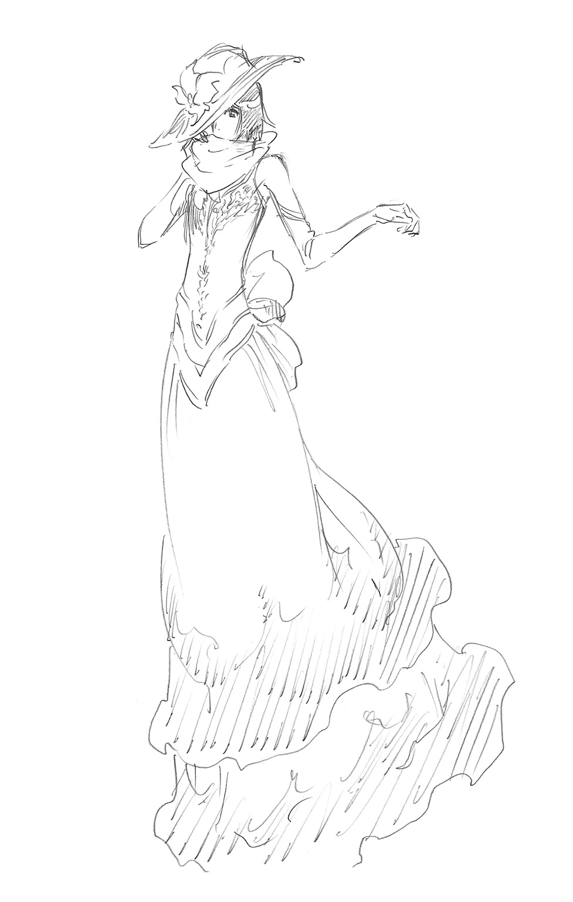
だが、今の観音寺のように多くの人々から笑顔を向けられている者など見たことがない。
もしかしたら、この観音寺という男は物凄い人物なのではなかろうか？
そんな事を思いながら、運転席の男に目を向けていると――
観音寺が、不意にロカに問いかけた。
「ところでレディ。君の名前は何と呼ぶべきだろう？ 記憶を失っているのであれば、何か仮の名前をつける必要があるが。ふーむぅ......伊集院エリザベス蝶々か......あるいはラピュタ空座か......」
なにやらとんでもなくややこしい名前を付けられそうになったロカは、恐る恐る助手席から声をかけた。
「ロカ、です」
「む？」
「私の名前は......ロカ・パラミアです」
「おお！ 名前を思い出したのかねレディ！ これはグレイトフルなワンステップだ！ それでは、今後はレディの事をロカ嬢と呼ばせて頂こう！」
自分の『服を着せる』という行為が彼女の名前を呼び起こしたとでも勘違いしたのか、観音寺は心底楽しそうに笑いながらハンドルを回す。
「とりあえずこのまま空座町を我が愛車『ジャンヌダルク』と共に一周してみようではないか！ 森羅万象をウォッチングする事で、何か新しい道が開けるかもしれん！ ゴー・トゥー・ザ・ビュゥゥゥティフルワァァールド！ といこう！ ハーハハハ！」
同時刻 ロケバス
「さて、そろそろミサオちゃんにも連絡とらないとねぇ。最終的な捜索範囲の決定はミサオちゃんの霊感任せって感じで行こうかー。ライブ感があるし、なにより、なんか起こりそうだからねぇー」
夕方から始まる『ドン・観音寺のぶらり霊場突撃の旅』の収録に備えて、プロデューサーが会議を進めていると――
「プロデューサー！ プロデューサー！」
と、ＡＤの一人が駆けこんできた。
「い、今、缶コーヒーの買い出しに行ってたら、観音寺先生が、町でドライブしてて......」
「ちょ、なに!? まさか事故ったんじゃないよね!?」
「い、いえ、助手席に女性を乗せて走っているんですが......」
「......なんだ、脅かさないでよお、モー！ いいよいいよ。ミサオちゃんはそういうのがゴシップネタになるタイプのアイドルじゃないんだから、ラブホテルとかなら不味いけど、彼女だか愛人だかとドライブぐらいなら別に、ほら。ねえ？」
「そ、それが......マフラーと帽子で、顔を隠してるんですが......」
息を整えながら、ＡＤは自分の携帯で撮影したと思しき写真を見せる。
するとそこには、帽子とマスクで顔の右半分を不自然に隠した女性の姿があった。
最初の数秒は、その女性が何なのか解らなかったが――何度も何度も視聴者投稿の検証ＶＴＲを作成していたスタッフ達は、すぐにその正体に気がついた。
「髑髏面の......女......」
刹那、プロデューサーは飲みかけのペットボトルの中身を全て飲みこみ、緊迫した声で部下に指示を出した。
「ロケ車を用意して！ すぐに！ ミサオちゃんの車はどこ走ってた!?」
ＡＤが『空座本町駅の側です』と答えると、プロデューサーは携帯電話など最低限の荷物だけを上着のポケットに突っこみ、自らもロケ車へと乗りこんだ。
そして、舌打ちをしながらも、実に嬉しそうに独り言を口にする。
「ったく、ミサオちゃんったら、先走ってくれちゃってまあ......」
昨晩のバス上のラップ音に続き、確実に『何か』が起こると予感したからだ。
「これだから、ミサオちゃんの番組はバラエティよりも報道寄りだ、なんて言われちゃうんだよねぇ。ほら、早くカメラ積んで！ ハリーハリーハリー！」
「どうかね、それが今、空座町で話題沸騰のスイーツ、『ジェイドアイス・イン・パンドラボックス』だよ！ 初江まり江嬢の描く国民的恐怖漫画、『翡翠のエルミタージュ』とコラボレーションした限定品！ 身も心もフリーズさせ、味は魂を捕らえて放さないというパーフェクトにしてテリブル・デリシャス・マーヴェラスな一品なのだ！」
そんな言葉と共に、助手席に座るロカに差し出されたのは、宝石箱のように美しい容器に入れられたアイスクリームだった。
最初は戸惑っていたロカだったが、恐る恐る一口食べ、そのまま黙りこんでしまう。
「む、も、もしや口に合わなかったか!?」
信号待ちになった所で、心配そうに顔を向ける観音寺。
そんな彼に、ロカは驚きにも似た表情で、目を大きく見開きながら一言呟いた。
「ええと......楽しい、です」
「はっはっは、そこは『楽しい』ではなく『美味しい』だろう」
「これが......美味しい......っていう、感覚なんですね......」
「なんと、君は生前の食事の記憶すら失っていたのか......！ だが、もう大丈夫だ。一つ一つ思い出していけばよいのだ！ ほら、早く食べないと溶けてしまうぞロカ嬢」
そんな事を言う観音寺の言葉に促され、彼女は更にアイスクリームを口にする。
彼女がバックアップしてきた知識の中に、当然ながら食事に関する事も含まれていた。味に関する情報もあった。だが、ザエルアポロに生み出されて以来、彼女は無理矢理霊子を注入される形で生きながらえてきた。『糸』の力を手に入れてからは、周囲と繫がる事で自動的に霊子を補給する事ができ、食事など必要もなかった。
虚圏で食事と言えば、他の虚や現世の浮遊霊等を喰らう事だ。人間と同じような食事は、知性を取り戻した一部の強者達が、戯れや特別な理由でとる程度だったのである。
かつてとある十刃に食事に誘われた事はあるが、ザエルアポロがそれを認めなかった。
だからこそ、彼女はこの世界に来て何かを食べるなど考えもしなかったのだが――こうして観音寺に促された事で、彼女はまた一つ、新しい世界を知る事ができた。
他にも観音寺は、聞いた事もない音楽をカーステレオから流したり、ナビゲーション画面で日本の広大な地図を見せてくれたりと、ロカがこれまで興味を持たなかった事を、興味を持ってはいけないと思っていた事を数多く体験させてくれたのだ。
道具として扱われてきたロカにとって、そうした経験は、夢見る事すら許されなかった事だ。
だからこそ、彼女は自分の心に湧き上がる感情の正体になかなか気づけない。
アイスを全て食べ終え、その容器の美しさに改めて気づいた時――
彼女はようやく、それこそが『楽しい』と呼ばれる感情だと理解した。
同時刻 空座町 馬芝
洋裁店『ヒマワリソーイング』からの帰路についていた石田雨竜は、北川瀬七丁目にある自宅へと向かう最中、微かな破面の霊圧を感じ取った。
この一年ほどの間に何度も感じている、『髑髏面の女』の霊圧だ。
「......またか」
いつも微小な霊圧しか感じさせない為、石田でさえ近くにいる時にしか認識できない。その上、こちらが近づくと向こうはそれを察して姿を消してしまい、後には髑髏面の女を目撃したと騒いでいる町民達だけが残されているという状況が何度も続いた。
今回も同じ事になるとは思ったが、無視するわけにもいかない。
昨夜現れた百体前後の破面の気配と何か関係している可能性もある。
そんな事を考えていると、石田はその霊圧の様子が、いつもと違う事に気がついた。
――ッ!?
――こっちに......近づいて来ている!?
普段殆ど動きを見せなかった髑髏面の女が、人間が走るよりも遥かに速い速度で移動しているではないか。
石田は手荷物を地面に置き、常に装着している滅却師十字を握りしめた。
いつでも霊子兵装の弓である『銀嶺弧雀』を造り出して戦闘態勢に入れるよう、周囲の霊子を全身に纏い始める。
――すぐ側に、普通の人間とは違う霊圧がある。
――もしかして、破面に追われているのか？
ただ待っているわけにはいかなくなったと、石田は静かに駆け出した。
人目のない道を選び、時には飛廉脚で屋根や電柱を飛び移りながら、破面の霊圧に向かって近づいていく。
――しかし、この破面の側にいる霊圧、覚えがあるような......。
そんな事を考えた瞬間、目の前に『答え』が現れた。
道の角を曲がってこちらに向かってきたのは、一台の派手な外車だった。
運転席に座るのは、車よりも遥かに派手な一人の男。
先程洋裁店のポスターで見たばかりの男が、視線の先で笑いながら車を走らせている。
横にいる女は、帽子とマフラーで顔を隠しているが、確かに破面の霊圧を発していた。
同時に、運転席の男の霊圧が、かつて椿台の廃病院でトラブルを起こした霊媒師のものだと気づき――石田は、思わず声をあげていた。
「どッ......ドン・観音寺!?」
「空座町は私の第二の故郷......、解らない事があればなんでも聞いてくれたまえ！」
楽しげに言いながら、観音寺はハンドルを切り続けた。
何度か交差点を通り過ぎて、北川瀬と呼ばれる地区を進んでいる。
そんな彼を見ながら、ロカは自分の中で徐々に罪悪感が膨らんでいる事に気がついた。
町の人の様子や先刻の服屋の店長との会話から考えるに、どうやら彼は現世で有名な霊媒師らしい。
――本気で私を浮遊霊だと思って、除霊しようとしているのだろうか。
――私を、本当に救おうとしてくれているんだろうか。
だとするならば、自分は彼を騙しているようなものだ。
ロカは自分が何のために生きているかは解らないままだが、自分が『虚』の側の存在――すなわち、現世の人間や魂魄達にとって害悪となる存在だという事は知っている。
このように、現世の人間に気遣われる資格などありはしないのだ。
――『あなた、肌が綺麗ねー、お人形さんみたいで羨ましいわぁ』
ふと、コーディネートの最中に、女性口調の男店長が口にした言葉がロカの中に蘇る。
人形と言われた事は過去に何度もあったが、肯定的な意味で言われたのは初めての事だった。確かに自分は人形なのだろう、道具に過ぎないのだろうと、人形としての運命を受け入れていたロカにとって、それは僅かに心を動かす結果となる。
純粋に――自分の存在が認められているようで、嬉しかったのだ。
だからこそ、こうして観音寺を騙し続けているような状況が、彼女には耐えられない。
――今なら。
――今ならば、まだ、私は消える事ができる。
――この人を悲しませる結果になるかもしれないけれど、後になってからこの人を裏切らずに済む。
もしもザエルアポロが急に戻って来たら、この観音寺という男に危害を加えるような命令を下すかもしれない。
それだけではなく、町の人々や整を喰らうと言い出す可能性すらある。
――だから、今、私がこの人から離れれば......誰にも迷惑を掛けずに......。
ロカはそんな事を考えつつ、改めて運転席の男を見た。
観音寺が自分を救う事に、何の得があるのかは解らない。
もしかしたら、自分のような存在を除霊するとお金が貰えるのかもしれない。
そんな、テレビスターとしての一面だけを見れば的を射ている推測をしつつも、ロカは純粋に感謝の意をこめ、観音寺を見つめていた。
金銭目当てだろうと、他の何かが目当てだろうと、目の前の男は、確かに自分のような救われる価値の無い存在に手を差し伸べてくれたのだ。
――ありがとう、ございました。
その淳朴な思いを、消え去る前に口で伝えるべきか、それとも黙ったまま消え去るべきか、そんな事で悩んでいたロカだったが――
受け身な彼女ならではの悩みは、次の瞬間にあっさりと搔き消される。
ギチリ、と、遥か遠くにある自分の一部が軋むのを感じ取ったからだ。
「......ッ!?」
「む？ どうしたのかね、ロカ嬢？ もしや車酔いを......!?」
突然表情を変えたロカに、観音寺が心配そうに声をかける。
「......大丈夫です。少し目眩がしただけですから......」
苦悶の表情を消して呟くロカ。
彼女は、改めて自分の身に何が起こったのかを確認する。
――今......私の『糸』に......何かが......。
断界、あるいは黒腔を越え、虚圏から尸魂界まで張り巡らされている自分自身の一部分が、何者かによって侵食された。それが、彼女の出した結論だった。
小指の先が誰かの意思によって勝手に動かされているような感覚が、『糸』の一部に急速に広がり始めたのだ。
――これは......。何......？
侵食された『糸』からは、何の情報も入ってこない。
ただ、侵食されているのは尸魂界の瀞霊廷内に繫げた糸だという事は理解できる。
少しずつではあるが、確実に糸を辿ってこちらに近づいてくる『何か』。ロカの心には、急速に不安が芽生えた。
正体すら解らない謎の存在が、ジワリジワリと自分の身体を這い上ってくる。
未知の侵略者に対する根源的な恐怖に、ロカの心を黒い霧が覆い尽くす。
――私は......どうすれば......。
自分の望みすら解らぬ中、彼女は観音寺の顔を見た。
――この人を巻きこむわけにはいかない。
どのみち、姿を消してここから去るつもりとはいえ、万が一にでも巻きこまぬよう、『糸』を謎の侵略者から切り放そうと試みた。
だが、その瞬間、全く別方向からの脅威が、彼女の頭上から声という形で振りかかる。
「みーつけたッと！」
信号待ちの最中、突然気分の悪そうな顔をしたロカを見ていた観音寺だったが――そんな彼の頭上から、聞き覚えのある声が木霊した。
「む？」
観音寺が何事かと見上げると――
そこには、昨夜バスの上で『競争』の約束をした、一人の少年の姿が。
信号機の上に立つ少年を見て、ロカはビクリと身体を震わせた。
一方、少年はそんな彼女を見下ろしつつ、無邪気な言葉を口にする。
ロカは、その言葉が、無邪気であるがゆえに何よりも残酷だという事を知っていた。
「ねえねえ、これから僕達と一緒に......遊んでくれる？」
十四章
数分前 断界
無数の地獄蝶に導かれ、断界内に存在する『道』を進む十一番隊。
互いにぶつからぬように舞う蝶達のはばたきに合わせているため、通常時と比べて、移動速度は少し遅くなっている。
断界の拘流を停止させれば、地獄蝶の案内が無くとも現世への移動は可能だ。しかし、旅禍による襲撃を受けたばかりの技術開発局では、流石に二百人を超える数の隊士を一斉に送り出す準備は間に合わなかったようで、補助として地獄蝶を伴い、纏まって現世へと移動する事になったのだ。
地獄蝶の群の速度に合わせて進む事が不満なのか、更木剣八が舌打ち混じりに呟いた。
「とろくせぇ話だ。こいつを摑んで走りゃいいんじゃねえのか？」
「ダメだよ剣ちゃん！ 剣ちゃんの力で蝶々を摑んだら、羽が取れちゃうよ！」
「ったく、これだから脆い奴は嫌ぇなんだ」
やちると会話をする剣八の言葉に、後ろを進んでいた一角が呆れながら告げる。
「いや......そもそも摑んだら案内にならねーっすよ」
そんないつも通りの会話を続ける面々に、一角の横にいた弓親も加わろうとした。
だが、口を開きかけたところで、弓親の表情が固まった。
弱々しい薄もやのような霊圧が、自分達の周囲に満ちているのを感じ取ったからだ。
隊長や一角も含め、他の隊員達がそれに気づいている様子はなく、やちるはキョロキョロと周囲を見渡しているが、気づいたうえでの行動なのかどうかは解らない。
弓親が特別に霊圧感知に秀でているわけでもないのだが――その霊圧の持ち主と目の前で相対した事がある彼だからこそ、いち早くそれに気づいたのかもしれない。
すると――視界の前方に、現世への出口が見え始めた。
「お、やっと出口かよ......あん？ どうした、弓親」
相棒の目つきが変化した事に気づいたのだろう。一角が眉を顰めて問いかける。
「......あいつの霊圧だ」
「ほお、早速来やがったってか。なんだよ、破面の女だかなんだかを探す手間が省けたな」
一体どこから襲撃してくるのかと、霊圧の元を辿ろうとする一角。弓親は、恐らく霊圧の元を探っても無駄だと考え、一角に忠告しようとしたのだが――
前を進んでいた更木が足を止めたのを確認し、二人は視線を前方に戻す。
すると、そこには一人の男が立っていた。
現世に通じる門と、十一番隊の群の合間。
まるでその門の番人であるかのように立ち塞がったのは、白羽織を纏う優男だった。
更木と同じ十一番隊の隊長羽織を纏う男を見て、十一番隊の平隊士達が一斉に神経を高ぶらせる。
「んだこらぁ！」 「手前が隊長のパチもんかぁ？」 「パクリ野郎がぁ！」
「無茶苦茶弱そうだぜこいつ！」 「っらぁ！」 「だらぁッ！」
「死ぬか？ ぁあ？」 「生皮剝がして酢漬けにすんぞゴルァ！」 「ヒョォ！」
席官達が相手の様子を窺う背後から、二百人を超す平隊士の怒声が木霊した。
だが、現れた男――痣城剣八は涼しげな顔をしており、断界の空気を震わせる死神達の怒気を完全に無視している。
一方、更木剣八は、暫し痣城を無言で睨めつけていたが――
身体は前に向けたまま、背後の隊士達に向かって静かに呟いた。
「......静かにしてろ」
囁くような言葉。
だが、まるでブレーカーが落ちるような勢いで、喚き続けていた隊士達の声がピタリと止んだ。更木の声を聞いたというよりも、彼の放つ異常な量の霊圧を感じ取って、肺や気管ごと声帯が固まったという方が正しいだろう。
実際、荒巻をはじめとする数名は、自分が呼吸を止めている事に気づかず、危うく窒息しそうになった。
針のように鋭い静寂が支配する空気の中、周囲に沈黙をもたらした更木があっさりとそれを打ち破る。
「よう。痣城とかいったな」
隊士達は、その声に合わせ、チリチリと周囲の霊子が焼け焦げているかのような錯覚に囚われた。
同じ羽織を纏う者を前にして、更木はただ、名乗る。
「更木剣八だ」
そして、これでもかというほど明確に、己の目的、欲望、存在意義――そうしたものを全てひっくるめた言葉を口にした。
「手前を......ぶった斬りに来た」
「......痣城剣八だ」
そう言葉を返しつつ、痣城は僅かに目を細める。
今の更木の言葉に、妙な違和感を覚えたのだ。
見ると、十一番隊の面々にも、何人か戸惑った顔をしている者が見える。
そこで、痣城は思い出す。
黒崎一護という旅禍と対峙した時に、更木が吐き出した言葉を。
彼は、黒崎一護と更木との戦いも、全て五感と魂に刻みつけていたのだ。
「......『殺し合いに来た』、とは言わないのだな。命の削り合いに快楽を見いだす君が」
隊士達の疑問を代弁する形となった痣城に、剣八は面倒臭そうに言葉を返す。
「まともな殺し合いになるなら、それに越したこたぁねえさ。うちの五席が言うにゃ、手前は強いらしいからよ。割と期待もしてんだぜ？ だがな、手前が仮に毒気を抜かれる程に弱かろうが、一応は斬る必要があるんだとよ」
軽く息を吐きながら、半分どうでもよさげに言葉を続ける更木。
「そうしねえと、俺の『剣八』って名が掠れちまうらしいからよ」
「......たかが名だ。そこまで固執するものではないだろう」
そこまで言ったところで、痣城は思い出したように言葉を付け加えた。
「すまない。『剣八』以外の名を持たず、無名を苦痛と捉えていた君にとっては、事情が違ったかもしれないな。私にとっては、双也という生来の名すら無用の長物なのだが」
無遠慮に過去に踏みこんでくる痣城に対し、特に怒りも見せず、淡々と言葉を紡ぐ更木。
「覗きが趣味たぁ聞いてたが、俺は手前の辻説法にまで付き合うつもりはねえぞ？」
「いや、私も無駄話は嫌いでね......こちらは、いつ開始めても構わない」
痣城は目を細めながら、視線の先に広がる十一番隊を観察する。
――なるほど、私が刳屋敷に挑んだ時を思い出す。
恐らく、山本総隊長が十一番隊を総出で出陣させたのは、『二百人以上の隊士の前での果たし合い』という、『剣八』の名を受け継ぐ儀式を再現させる意味合いもあるのだろう。
――本当に、山本総隊長は変わられたな。
――......いや、ある意味、伝統と規律を重んじる昔のままとも受け取れるが......。
――どのみち、私にとっては徒爾の一策としか映りませぬよ。元柳斎殿。
――貴方が、どれほどこの男の力を買っているのかまでは、預かり知らぬ事ですが。
徐々に緊迫していく空気に、十一番隊の中でも頭の切れる部類に入る数名が考える。
痣城が、弓親の話や裏挺隊による伝令通りの能力を持つならば、わざわざこうして目の前に姿を現す理由がない。
周囲の空間全てと融合できるのならば、この場で全員を拘束するなりできるのではないだろうか？
――やはり、何か能力に制約があると見るべきだね。
弓親はそう推測するが、その制約が具体的にどのようなものなのかが解らなければ意味がない。十一番隊の者達ならば、互いに能力を完全に明かし合って決闘する事もあるかもしれないが、痣城という男は、自分の手の内を明かすような死神には見えない。
どのみち、隊士達にできるのは、ただ二人の闘いを見守る事だけだ。
「それじゃ、頑張ってね剣ちゃん！」
やちるが更木の肩から下り、嬉しそうに跳ねながら地獄蝶の群の下へと移動する。
二人の『剣八』の間から言葉が消え、徐々に断界内の霊子が煮詰まっていく。
緊迫感が身を焦がし、隊員達の背に冷や汗が滲み始めた頃――
「邪魔が......入りそうだな」
痣城が、微動だにせぬまま小さく呟いた。
次の瞬間、周囲の霊子が歪み破れ、その隙間から破面の霊圧が漏れ広がる。
「!?」
十一番隊の面々が慌てて周囲に気を巡らせると、緊迫していた空気をあっさりと打ち破る声が、断界内の通路に木霊した。
「あれー、変な人達がいる」
それは、お下げ髪の少女型破面だった。
彼女はお下げの髪留めになっている仮面の欠片に触れつつ、その場にいない者達に呼びかける。
「ねえねえ、ロカお姉ちゃんの糸を手繰ってたら、変な人達がいたよー？ なんかみんな集まってるけど、お祭りか何かじゃないかなあ？」
すると――数秒後、空間内に無数の亀裂が生じ、内部から数十人程の白い子供達が姿を現した。
死神達にとっての敵である、『破面』の濃密な気配を纏いながら。
「本当だ！」 「なあにこれ、お祭り？」 「死神さんがたくさんいる！」「楽しそう！」
「みん な あそん で くれ る？」 「Ｑｒｒｒｒｒ」 「タベタイ」
「こ、怖そうな人達が......たくさんいるよぅ......」 「面白そう！」
現れた個体は、勝ち気なタイプのお下げ髪の少女から、眼鏡状の仮面をつけた気弱そうな少女、何も考えず空腹だけを訴える異形型まで様々なタイプが混在している。
当然ながら、十一番隊の者達はその来客者達を歓迎する筈もない。
単なる虚ならば、決闘に添える華として自分達で始末する事もできるが、敵意すらない者達を斬ったところで、興醒めの風に揺られる徒花にしかならない。
「ちッ......こんな時に出てくんじゃねえよ！ 邪魔だ手前ら！」
怒鳴りつける一角に、子供達は怯えたり笑ったり、様々な反応を見せる。
「ひッ」「怒られたー！」「アハハハ！ ピカピカした人がなんか言ってる！」
「この人、今朝のハゲ魔人だー！」 「本当だ！」
「違うよ、ハゲ魔人じゃないよ、つるりんだよ！」
「つるりん？」 「そうだよ？ パチンコ玉みたいだから、つるりん！」
「へんな名前ー！」 「アハハハハハハ！」
「てぇめぇえぇらぁ......」
剃り上げた頭部に血管が浮かび、顔面をひくつかせていた一角だが――
今しがたの子供達の会話の中に、聞き慣れた声と単語が混じっていた事に気づく。
そして、散在している子供型破面達の集団を見渡すと――自然な形で会話に加わっている、黒装束の上に桜色の髪を乗せた少女の姿が確認できた。
「こ、このドチビ！ なんで手前、そっち側に普通に混じってんだゴラァ！」
上官に対して今にも飛びかかりそうな一角をスルーし、やちるは何の躊躇いもなく子供型破面達と会話を紡いでいく。
「あのねあのね、あたしが後で一緒に遊んであげるから、今は剣ちゃんの遊びを邪魔しちゃダメだよ！」
「えー」「一緒に遊んじゃダメなのー？」「ずるい！」
「邪魔すると、剣ちゃんすっごく怒るよ？ あと、あたしも遊んであげないんだからね！」
「ええー」「それじゃあ、我慢しとく？」
「あのツンツン頭の人、なんだか怖そうだし......」「つるりんって人も怒ってるし......」
「ザエルアポロに聞いてみようか？」「今はシエンだってば」「あ、そっか」
やちるの我が儘めいた言葉に、子供達は顔を見合わせて相談を始めていた。
そんな中、全く関係の無い言葉を紡ぐ破面が一体。
「オナカスイタ」
「金平糖、食べる？」
「......アマイ。アリガトウ」
「おいしいよねー、金平糖！」
空腹を訴える小さな球形の破面に金平糖を一粒差し出した後、自分も手の平いっぱいの金平糖をボリボリと食べ始めるやちる。
だが、そんな彼女の視線は更木の後ろ姿から外れておらず、目を輝かせながら『剣八』同士の闘いを待ち侘びている様子だった。
「空気を......読んでんだか読んでねえんだか......」
そんな上官の姿を見て、一角は怒る気も失せたのか、苦虫を嚙みつぶしたような顔で頭を振る。
「あの......死神のお兄ちゃん、顔色が悪いけど......大丈夫？」
仮面の名残である眼鏡をかけた少女型破面に気遣いの言葉すらかけられ、一角はますます毒気を抜かれてしまった。
自分も隊長の方に目を向けつつ、少女を追い払うようにシッシと手を振る。
「やる気が失せた。見逃してやるから、手前らマジでとっとと虚圏に帰れ」
しかし、次の瞬間――
その手の先に、ビチャリ、と、生温かい液体が触れる。
「あん？」
視線を眼鏡の少女へと戻すと――
そこには、喉元から刃を生やし、傷口から血飛沫を噴出させる少女型破面の姿があった。
「あ......か......」
彼女自身も、己の身に何が起こったのか理解できていないのだろう。見開いた目を首から生えた刃に向けつつ、全身を小刻みに震わせている。
「なに......？」
驚きはしたが、そこで呆然とするような一角ではない。
すぐに少女の背後に視線を向けるが、そこから刃を刺す者の姿はなかった。
だが、さらに数本、少女の身体から鋭い刃が突き出て、並の死神では傷一つつけられない筈の、破面特有の『鋼皮』を次々と切り裂いていく。
大量の血液を傷と口から吐き出しながら、少女型の破面は、不思議そうに首を傾げ――そのまま断界の通路に斃れ伏した。
ピクピクと身体を痙攣させる少女型破面の前で、血飛沫を浴びた一角は何が起こったのか必死に理解しようとしていたのだが――
彼が自ら辿り着くよりも先に、答えとなる言葉が一角の鼓膜を震わせた。
「......死神にとって不倶戴天の敵たる破面を前に、『見逃してやる』とは、随分と度し難い言葉を吐くのだな、君の部下は」
痣城剣八。
彼は、更木と相対したまま、その場から一歩も動いていない。
だが、事態を直接目にしていた十一番隊の前の方に並んでいた面々は、誰もが即座に理解した。
破面を斬り伏せたのは、間違いなく更木と対峙しているあの男であると。
更木は、痣城の言葉に合わせ、視線をチラリと背後に向ける。
そして、如何にもひ弱そうな破面の少女が死にかけているのを見て、不思議そうに口を開いた。
「度し難ぇのはこっちだ。肩慣らしにもならなさそうなガキを斬るのに、何の意味があるってんだ？」
皮肉でも非難でもなく、心底疑問に思っているといった様子の更木を見て、痣城は一際目を鋭く細め、声に僅かに嫌悪を含めて言葉を返す。
「......やはり、君は......いや、君たち現役の十一番隊は、死神として無駄なものに囚われすぎているようだな」
刹那――別のピカロの個体が同じように切り刻まれ、血塗れになりながら霊子の地面に転がった。
「死神は、ただ戦い、虚を効率良く殺す事だけを考えるべきだ」
さらに一人、別のピカロが血の海に沈む。
「その戦いに愉悦など見出す必要はない」
また一人、さらに一人。
「虚にかける情けも、闘えぬ者を無視する矜恃も必要ない」
更木に向かって語りながらも、それ以外の者達に向かって『力』の行使を続ける痣城。
十一番隊を取り囲む、子供の姿をした破面達が次々に切り刻まれていく姿を見て、一角と弓親が顔から一切の表情を消して口を開く。
「言ってる事ぁ解るが......手前は、気にくわねえな」
「朝も言ったろ？ 機械的な美の存在も認めはするけど、僕の趣味じゃないね」
それを皮切りに、呆気にとられていた十一番隊の顔に、痣城に対する明確な感情が湧き上がった。
ある者は嫌悪であり、ある者は苛立ちであり、ある者は激しい怒りを燃え上がらせる。
だが、それでも、激情に任せて痣城に躍りかかる事はしなかった。
これは既に、更木剣八の戦だからだ。
始めるのが更木隊長ならば、終わらせるのも更木隊長。
その理をねじ曲げる事は、十一番隊である自分達の存在を否定するにも等しい行為だ。
同時に、彼らは理解していた。
痣城をどうにかできるのは、更木剣八をおいて他には存在しないのだと。
隊士達のそんな信頼に応えたのか、あるいは、単に待つ事に飽きたのか――
「いまひとつ手前の霊圧が読めねぇからよ、先に斬らせてやろうと思ったが......」
更木は、鞘から斬魄刀を抜き放ち、片手で大上段に振りかぶった。
「手前の敵が誰なのか......こうすりゃ、ちったぁ思い出すか？」

轟音。
振り上げた刀を振り下ろす。
更木がしたのは、ただそれだけの事だった。
しかし、その単純な行為も、更木の彊梁なる霊圧が加われば、それだけで必殺の一撃と称するに相応しい威力に膨れあがる。
霊圧が前方へと飛び、断界通路に隕石でも通り抜けたかのような烈風が吹き抜けた。
そして、その霊圧の激しいうねりは、空座町に通じる出口にまで達し――
同時刻 空座町
「ねえねえ、これから僕達と一緒に......遊んでくれる？」
信号機の上から観音寺達を見下ろす少年型破面。
そんな彼を、さらなる高みから観察する者が存在した。
――あの破面......確かに、夕べ感じた霊圧と一緒だ。
――今は、一体しかいないようだな。
すぐ側のビルの屋上に身を置いた滅却師、石田雨竜だ。
――しかし、てっきりドン・観音寺が破面に追われていると思ったんだが......。
信号で止まる前の車上の様子を思い出し、石田は考える。
――あれじゃ、まるで観音寺が破面を連れ回しているみたいじゃないか。
実際その通りなのだが、石田は二人の事情など知る由もなく、直後に現れた別の破面の姿を見て、すぐに攻撃に移れる体勢を取りつつ、周囲に他の破面の気配が無いか確認した。
だが、彼が感じたものは、少し離れた場所の空に湧き上がる、全く別の気配だった。
場合によっては、石田が破面よりも警戒する気配――
すなわち、死神の霊圧だった。
――なんだ？
「あッ、鈍感おじさん!? ......え、噓、僕達、もしかして競争に負けちゃった!?」
「ボハハハハー！ すまんなボーイ！ 私は勝負事には手を抜かないタイプなのだよ！ しかし落ちこむ事はない！ 可能性はインフィニティだ！ ボーイ達ならば、敗北を糧にして新たな第一歩を踏み出せると信じて......ん？」
石田とほぼ同時に、観音寺も空の異常に気づいたようだ。
彼が空を見上げるのに少し遅れて、信号機上の少年が耳を澄ませながら同じ方向を仰ぎ見る。
如何なる仕組みなのか、遠くの誰かと『通信』を行っているようで、少年は時折相槌を打ちながら言葉を紡ぎ続けていた。
「えッ、そっち、そんなに面白そうな事になってるの......？ いいなあ、そっちに行きたいなあ。......じゃあ、シエンがここに着いたら、僕もすぐにそっちに向かうね」
そして、彼はコン、とヘッドホン型の仮面片を叩き、その場にはいない別の誰かに語りかける。
「あ、僕だよ。現世で、ロカお姉ちゃん見つけたよ！ うん......うん......あ、本当に？」
少年は、ロカをゆっくりと見下ろし、無邪気な笑みと共に呟いた。
「シエン、すぐ来るって」
「......シエン？」
知らぬ名を耳にし、首を傾げるロカ。
そんな彼女に、少年は全く悪気の無いまま、残酷な一言を口にした。
「シエンが来たらね、ロカお姉ちゃんを潰して遊ぶんだって。楽しそうだよね！」
断界 通路内
「......手応えがねえな」
更木剣八が呟くと同時に、剣圧によって巻き上がっていた霊子の塵が晴れていく。
そこに現れたのは、半壊した門と――その前に立つ、無傷の痣城剣八だった。
「無駄な事だ。君に私は斬れない」
淡々と、感情の薄い言葉で言い放つ痣城。
同時に、再び通路の隅で血飛沫が上がり、子供型破面のうちの二人が力無く倒れこむ。
凄惨な光景が続き、血の臭いが通路内に満ち始めた頃――
「お、おい、お前ら、マジで逃げた方がいいんじゃねえか？」
本来敵である相手にもかかわらず、荒巻が冷や汗を頰に垂らしながら子供型破面にそう問いかけた。彼は破面という存在の根本的な恐ろしさを実感していないという事もあるが、流石に子供の姿をした者達が一方的に惨殺されていく光景に思う所があったのだろう。
だが――破面達は、そんな荒巻に逆に問う。
「ねえねえ、これ、僕達、誰にやられてるのかなあ？」
「............」
全く恐れる様子もなければ、切り裂かれた仲間の心配をする様子もない子供達の表情を見て、荒巻は背筋に寒気を走らせた。
「い、いや、あそこにいる隊長のパチモン......あ、痣城とかいう野郎だろうがよ」
「ふーん」
荒巻が指さした先にいる、扉の前の男を全員で一斉に見つめ――
子供達は、笑う。
破面の群を代表するかのように、まだ無傷である、お下げ髪の少女型破面が、無邪気に、無垢に、そして無意味に相好を崩し、楽しそうに愉しそうに呟いた。
「それじゃあ、あの人は......私達と遊んでくれるってわけね！」
「十一番隊の諸君に告げる」
子供型破面の呟きが聞こえたのか聞こえていないのか、痣城は、更木も含めた十一番隊の隊士全員に語りかける。
「私を追っても無駄だ。私は君達の矜恃に付き合う気は欠片もない。だが、邪魔立てせずにこの場で引き返すというのであれば、私から君達に危害を加えるつもりもない」
大声ではないが、大気そのものが震え、一人一人の耳に強制的に響き渡った。
それは即ち、痣城がこの空間の大気を全て『支配』しているという事に他ならない。
周囲に転がる破面の惨殺体を見れば、次は我が身と思うのが普通だろう。
しかし、彼らの大半は、そうした常識を超えた先の事を考えていた。
自分自身が同じように斬られた場合、『そこから、何度刀を振るえるか』という事だ。
更木隊は、自分が傷つく事を恐れない。彼らにとって絶対的な存在である更木と同じ戦場に立っているのならば尚更の事だ。
誰も逃げ出さない様子を見て、痣城は小さく溜息を吐き、言葉を続ける。
「私とした事が、無駄な警告をした」
そして、無感情な目を更木に向け、静かに告げた。
「君はどうする？ 今の一撃で、私を斬れぬ事は解ったろう？」
対する更木は、自分の刃と痣城を見比べ、答える。
「なるほど、手前が空気になれるっつーのはマジな話らしいな」
「理解できたのならば......」
「まあいいさ。空気をぶった斬るってのも、それはそれで面白そうだ」
そのまま改めて剣を振り上げる更木に、痣城は小さく頭を左右に振った。
「......理解できていなかったようだな。空気だけではない。私は既に瀞霊廷内の生物を除く全ての物と融合している。命令を受けた際に、山本総隊長からも聞かされていたと記憶しているが？」
そのやり取りすらも観察していたと断言する痣城に、剣八は至極単純な言葉を口にする。
「ああ。つまり、瀞霊廷にあるもんを全部ぶった斬りゃ、手前は死ぬんだろ？」
冗談か皮肉にしか聞こえない言葉だが、十一番隊の面々は知っていた。
――『この人は、本気でやる』
瀞霊廷が空気ごと粉みじんになるまで叩き斬られ、風すら吹かぬ更地と化している光景を想像し、嫌な汗を搔く隊士達。具体的に空気を斬る方法など解らないが、隊長の手に掛かれば、決して不可能ではないように思えた。
「つーかよ、俺が先に斬ったんだ。次は手前の番だろ？」
「......やはり、君達の存在は尸魂界にとって害悪でしかないな」
諦めたように目を閉じる痣城。
彼はゆっくりと口を開き、小声で鬼道の詠唱を開始した。
「散在する獣の骨 尖塔・紅晶・鋼鉄の車輪」
その呪言を聞いて、隊士達が訝しげに眉を顰める。
「あぁ？ あの野郎、鬼道で隊長とやり合おうってのか？」
「あの詠唱、雷吼炮だね」
「動けば風 止まれば空」
「君臨者よ 血肉の仮面・万象・羽搏き・ヒトの名を冠す者よ」
一角と弓親がそう呟いた瞬間、彼らの足下で、ムクリと白い影が起き上がった。
「い、痛かったぁ......」
それは、先刻最初に切り刻まれた筈の、眼鏡の少女型破面だった。
「!? おいガキ！ 手前、生きてたのか!?」
驚きの声をあげる一角だが、弓親が別の異常に気づき声をあげる。
「待った、一角！ 何か妙だ！」
「槍打つ音色が虚城に満ちる」
「蒼火の壁に双蓮を刻む」
「散在する獣の骨 尖塔・紅晶・鋼鉄の車輪」
詠唱。
それは単なる鬼道の詠唱の筈だったのだが――
いつの間にか、痣城の声の中に、別の詠唱が割り込んでいる。
雷吼炮の詠唱とは別に、いつの間にか双蓮蒼火墜の詠唱が加わり、さらに別の方向から、輪唱のように二つ目の雷吼炮の詠唱が響いてくるではないか。
「大火の淵を遠天にて待つ」 「鉄砂の壁 僧形の塔」
「散在する獣の骨 尖塔・紅晶・鋼鉄の車輪」 「動けば風 止まれば空」
「滲み出す混濁の紋章」 「自壊せよ ロンダニーニの黒犬」
声は徐々にその数を増やし、いつしか、周囲を『詠唱の群』に囲まれている事に気がついた十一番隊。
一体何が起こっているのか、周囲を見渡し――彼らは気づく。
断界の中に作られた、死神専用の通路。
その壁から、床から、天井から――鬼道の呪言を唱える口腔と、印を結ぶ為の手だけが植物のように生まれ伸びているという事に。
それを見た瞬間、弓親は、ゾクリと背中を震わせる。
――こいつ、まさか......。
――技術開発局にあった、全ての義骸を......この空間に同化させたのか!?
死神が現世で活動する時に肉体の代わりとして魂魄を入れる義骸や、改造魂魄の実験用に作られた霊骸と呼ばれる義体の数々。
廃棄されたものも含め、何百体とあったその義骸が、全てこの空間に集結し――痣城に支配された口と腕の群となって、鬼道を一斉に詠唱しているのだ。
――無茶苦茶だ！
「灼鉄熒熒 湛然として終に音無し」 「動けば風 止まれば空」
「君臨者よ 血肉の仮面・万象・羽搏き・ヒトの名を冠す者よ」「滲み出す混濁の紋章」
「槍打つ音色が虚城に満ちる」 「雷鳴の馬車 糸車の間隙」
「千手の涯」 「不遜なる狂気の器 湧きあがり・否定し 痺れ・瞬き 眠りを妨げる」
「一読し・焼き払い・自ら喉を搔き切るがいい」 「滲み出す混濁の紋章」
そして、十一番隊の面々は、知る事になる。
どのような思想や性格だろうと――
『剣八』の名を手にした者達には、確かに大きな共通点があるのだと。
それは即ち――道理を無視できる程の、圧倒的な『強さ』に他ならぬのだと。
―― ―― ――「槍打つ音色が虚城に満ちる」
―― ――「動けば風 止まれば空」 「滲み出す混濁の紋章」
―― ――「爬行する鉄の王女 絶えず自壊する泥の人形」 「千手の涯」
―― ――「届かざる闇の御手 映らざる天の射手」「結合せよ 反発せよ 地に満ち己の無力を知れ」 「散在する獣の骨 尖塔・紅晶・鋼鉄の車輪」「届かざる闇の御手 映らざる天の射手」「不遜なる狂気の器 湧きあがり・否定し」「自壊せよ ロンダニーニの黒犬」「痺れ・瞬き 眠りを妨げる 爬行する鉄の王女」「大火の淵を遠天にて待つ」「光を落とす道」「滲み出す混濁の紋章」「滲み出す混濁の紋章」「不遜なる狂気の器 湧きあがり・否定し」「滲み出す混濁の紋章」「火種を煽る風 集いて惑うな我が指を見よ」「槍打つ音色が虚城に満ちる」「光弾・八身・九条・天経・疾宝・大輪・灰色の砲塔」「千手の涯 届かざる闇の御手 映らざる天の射手」「湧きあがり・否定し 痺れ・瞬き 眠りを妨げる 爬行する鉄の王女」「君臨者よ 血肉の仮面・万象・羽搏き・ヒトの名を冠す者よ」「弓引く彼方 皎皎として消ゆ」「結合せよ」「結合せよ」「反発せよ」「反発せよ」「地に」「地に」「満ち」「満ち」「己」「己」「の」「の」「無」「無」「力」「力」「を」「を」「を」「を」「を」「」「」「」「」「」「」「」「」「」「」「」「「」「」「「」「「「「「」」」」「「「「「――――
呪言に呪言が重なり、遂には地響きのような轟音となって断界内を埋め尽くした。
既に詠唱が終わっている筈の鬼道は発動されず、全ての詠唱が終わるまで空間内に力を溜め置いているかのようだった。
だが、次の瞬間――破道と縛道が複雑に入り交じった霊圧の奔流が、断界の周囲の壁を破壊するかの勢いで膨張を開始する。
そして、数百の鬼道が一斉に十一番隊に襲いかかった。
破道の九十番台である『黒棺』と『千手皎天汰炮』が、五十を超える重唱となって――更木剣八ただ一人の身に重ねられる。
剛暴極まりない霊子の乱気流に晒され、断界の通路の方が耐え切れなくなり――
ついには空座町へと繫がる門が破れ飛び、膨大な量の霊子と爆風が現世へと流れ出た。
空座町
「ハッハッハ、ボーイ、言葉の使い方が間違っているぞ？ 潰して遊ぶなどと言っていいのは粘土とプチプチシートぐらいのものだ。そして、ロカ嬢は粘土でもエアパッケージでもないのだよ！ ......いや、待て、ロカ嬢が粘土の九十九神という可能性も......」
単なる言い間違いと思ったのか、観音寺は笑いながら少年の言葉を否定する。空から漏れる謎のオーラも気になるが、ロカの事を知っているらしい少年と話す方が今は有益と考えたのだ。
暫くブツブツと独り言を呟いた後、考えるよりも訊く方が早いと、
「そもそも、君はロカ嬢とどういう関係......ぬおぅ!?」
しかし、観音寺の言葉は、空に膨れあがった激しいオーラによって遮られた。
恐らくは、先ほどと同じ場所――ここから１キロ以上離れた地点の上空だろう。
その空に突然亀裂が走り、膨大な霊子が溢れ出したのだ。
「なんだ!?」
空に穿界門が開くと予想していた石田は、想定外の出来事に目を丸くする。
今すぐそちらに向かって飛廉脚で飛ぶべきかとも考えたが、観音寺や破面を放っておくわけにもいかない。
――......とりあえず、ドン・観音寺を連れてこの場から退避するべきか？
そんな事を考えていた石田だったが――
彼の高い霊圧察知能力は、その場に現れる新たな気配を感じ取った。
――......ッ！ また破面か！
霊圧は、眼下の信号機の周囲に開きかけている黒腔から漏れ出しているものだった。
信号機の上の少年と同じ霊圧が、十人前後感じられる。
すぐに戦闘が始まる事も想定して、石田はビルの屋上の縁に立ち、滅却師の武器である霊子弓『銀嶺弧雀』を顕現させようとする。
しかし、彼の全身は再び硬直する事となった。
最後に開いた、一際大きな黒腔の裂け目。
そこから現れた男の姿を見て、石田の全身に冷たく鋭い痛みが走った。
体中の臓器を潰される痛みが、一瞬のうちに蘇ったのである。
「なん......だと......？」
霊圧こそ僅かに違っていたものの、最後に黒腔から現れた男は、石田もよく知っている破面――ザエルアポロ・グランツとしか思えない姿をしていたのだから。
十五章
尸魂界 技術開発局
修復作業中の霊波観測室に、警報音が鳴り響いた。
「空座町に虚の反応複数！ 破面です！」
壺府リンの言葉に、周囲にいた開発局員の面々が顔色を変える。
「あのガキどもか？」
阿近の言葉に、リンは一瞬頷きかけたのだが――
「はい......あ、いえ！ 一体だけ、違う反応が......今朝、ここを襲撃した個体です！」
そして、観測された破面の霊圧数値を見て、リンは一層顔を青くした。
「なんだ......これ......今朝よりもずっと......」
慌てるリンを落ち着かせるように、阿近は淡々と指示を下す。
「増援を送るかどうか、まずは山本総隊長に報告だ。それと、空座町一帯の空間凍結の処理を急げ。ランクＡの広範囲型記換神機も念の為に数台用意しとけ」
敢えて大量の指示を周囲に与え、仕事に集中させる事で動揺を消そうとしたのだろう。
だが、彼自身もまた、手の平にジットリと汗を滲ませながら、心中で呟いた。
――ったく、あんな奴と二人の『剣八』がぶつかったら、どんな事になるか......。
――......最悪、藍染の時みたいに町ごと空間転移させるか......。
――空座町の記憶ごと、現世の人間から消す必要があるかもな。
空座町 北川瀬中央交差点 信号機前
「やあ、元気そうだな。......なんだ、その格好は？」
黒腔から現れた男の声を聞いて、ロカは全身を凍らせる。
「ザエルアポロ......様......」
「ああ、一応は告げておくべきか。今の僕は、ザエルアポロじゃあないんだ。便宜上、シエンと名乗っているけれどね」
「......？ あの、どういう事でしょうか......」
車の助手席から恐る恐る尋ねるロカに、ザエルアポロの姿をした『影』――シエンは、酷薄な笑みを浮かべながら吐き捨てた。
「これ以上は、道具の君には関係ないことだ。ましてや、これから廃棄される君にはね」
「え......？」
「聞こえなかったか？ 最後の命令だ、そこを動かないでくれ。壊し方を間違えると、『糸車』だけ取り出すのが厄介になるからね」
戸惑うロカに向けて、シエンはスゥ、と手を翳し、手に虚特有の霊圧を凝縮させていく。
そして、まさに虚閃が撃ち放たれようとしたその瞬間――
シエンの右手に、衝撃が走る。
凝縮された霊子の矢が、彼の右手に激突したのだ。
「............」
傷ひとつつかなかったものの、シエンは虚閃の発動を解除し、矢の飛んできた方向に目を向ける。
「そうか......確か君もこの町の人間だったな......滅却師」
些事だとばかりに素っ気なく呟く破面を睨みつけ、石田は呻くように言葉を漏らす。
「ザエルアポロ......お前は死んだ筈だろう！ 涅マユリの超人薬とやらでな！」
石田にとって、ザエルアポロ・グランツは強敵だった。
斬魄刀の力で自分のクローンを生み出され、挙げ句の果てに内臓をいくつか潰された思い出が蘇る。
「物事は正確に語ってくれないか？ 直接の死因は薬ではなく、心臓を貫いた奴の刃だ。それに、死んだのは私ではなく、ザエルアポロの話だろう？」
「なに......？」
「百年の苦痛か。味わいたくはないものだな」
――別人......なのか？
石田はザエルアポロと同一人物にしか見えない破面を改めて凝視した。
確かに顔は同じだが、霊圧の質に僅かに差異がある。まるで、元のザエルアポロの霊圧に、別の破面の気配が濃密に塗りこめられているかのようだった。
霊圧を探ってみて、石田は思う。
確かに、この男はザエルアポロではないのかもしれない。
――なんだ......この霊圧は......？
まだ全力を出してはいないようだが、その表層から感じられる霊圧を探り、石田は思わず身を強ばらせた。
虚圏において目にしてきた、ザエルアポロよりも序列が上の十刃達。
彼らが纏っていた気配よりも、遥かに濃く凶暴な霊圧を内包しているように感じられたからだ。
石田には興味がないとばかりに、シエンはロカに向かっての言葉を再開する。
「まあ、死に難いというだけならば、君の力を自分に移植すればそれで済んだのだろうね」
「何を......仰っているのですか？」
「だけど、ザエルアポロ・グランツは、死からの再生こそが完全なる生命であり、死なないというだけでは不完全だという矜恃を持っていたのさ。今の僕の立場からすると、理解しがたいプライドだけどね」
クツクツと笑う男に、ロカは背中をゾクリと震わせる。
――この霊圧......。
――昔の......イールフォルト様と分離する前の......ザエルアポロ様に似てる......。
一体彼の身に何が起きたのか解らず、ロカはシエンと名乗る男を怯えた目で見る。
「ところで......ロカ、君の横にいる道化師は何者かな？」
「......っ！」
恐れていた事を指摘され、ロカはなんと誤魔化すべきか思案したのだが――
それよりも早く、運転席の男が何の躊躇いもなく反応を見せた。
「ノー！ そこのインテリメガネボーイズその１！ 私は道化師ではない！ だが、人々を笑顔にするという目的においては、道化師は志を同じくする同志と言えよう！」
わざわざシートベルトを外して、オープンカーの運転席に立ち上がる観音寺。
「宮廷道化師達が王や貴族を笑わせる間に、世界の子供達に笑顔をもたらす私は何者か？ 答えは一つ！ 世界は同じ！ アンサー・イズ・スモールワールド！ そう、私は世界の縮図たるカリスマ霊媒師......ドン・観音寺！」
言葉が終わるのと同時に、赤だった信号が青へと変わり、沈黙がその場を支配した。
幸いにも後続の車はなく、クラクションを鳴らされる事はなかったが――それ故に、無情な静寂が交差点の時間を悲しく停止させ続けた。
そんな彼を見て、石田の頰が軽く引きつる。
――......あの霊能者は、今の状況がどれだけ危険か気づいていないのか......？
――......というか、インテリメガネボーイズその１って......もしかして、その２は僕か？
観音寺に対して、虚圏で出会ったペッシェ達と同じ印象を抱いたが、そんな事に心を乱している暇はない。
石田は素早く銀嶺弧雀を構えると、更なる攻撃を加えるべく、周囲の霊子を自分の手に収束させ始めた。
周囲を賑やかしている子供の姿をした破面か、ザエルアポロと同じ顔をした破面か、あるいはドン・観音寺の隣にいる、ロカと呼ばれていた女性型破面か――どの破面に攻撃を加えるか、一瞬だけ迷いに囚われる。
――女性型破面は除外だな。少なくとも、周囲への敵意は感じられない。
他の破面達に怯えている様子のロカから狙いを外し、その他の破面達への波状射撃を試みる。まともなダメージは与えられないだろうが、『鬱陶しい』と思わせる事で破面達の気をこちらに逸らせれば十分だ。
一瞬だけ、死神の霊圧が漏れる空の『穴』にも目を向けたが、今のところ、変化はない。
――この破面達を引き連れて、この場を離れるしかない。
そして、無駄の無い動きで霊弓を引き絞ったのだが――
ある異常によって、強制的に攻撃を中断させられる結果となった。
彼の立つ屋上の手すりが唐突に歪み、まるで生き物のように石田の手元に絡みつこうとしてきたのである。
「なっ......」
驚きに目を見開き、手すりから飛び退る石田。
ザエルアポロが何かしたのだろうか？
彼のテリトリーだった虚夜宮とは違い、ここは現世の空座町だ。短期間のうちに何か仕込んだとは思えない。
――奴の新しい能力か!?
――近づくと、何をされるか解ったものじゃないな。
まだザエルアポロと『シエン』と名乗っていた破面が別人だと割り切れない石田は、過去にザエルアポロが使った能力を警戒しながら距離を空けるのだが――
当の破面も、不思議そうな顔をしてこちらを見ている。
「......へえ。僕の中でも、随分と古い知識の中にある霊圧だよ」
「.........？」
相手が何を言っているのか解らず、石田が何か問いかけようとすると――
第三者の声が、石田の鼓膜を震わせた。
「石田雨竜......最後の滅却師、だったな」
その声を聞いた瞬間、石田の全身の神経がギチリと歪む。
声がどこから響いたのか、全く推測できなかったからだ。
まるで、自分の鼓膜に接する空気が直接声をあげたかのような、生まれて初めて味わう不気味な感覚。
頭の中に直接喋りかけられたのではないかとすら思ったが――
声の主は、さして間を置かず、彼の視界の中に現れた。
高さは、ビルの屋上にいる石田と、信号機下にいるシエンの丁度中間あたり。
ドン・観音寺の車の真上に、隊長羽織を纏った一人の死神が姿を現した。
「......？ 君は......誰だ？」
それは、石田の知らない男だった。
尸魂界に滞在した期間は短いが、隊長の顔は全て覚えている。だが、眼前にいる優男は、石田の記憶にある副隊長やその他の席官のいずれとも一致しない。
戸惑う滅却師に、死神は淡々と告げた。
「後に甲論乙駁になるのも無駄手間なのでな、予め、君に敵対する理由を述べておく」
「なんだと？」
「滅却師である君が、ここにいる破面を滅ぼせば、通常の魂魄数万体分のバランスが崩れる事になる。それを止めるのは、死神としての義務だ」
「......まさか、この状況でそんな杓子定規な事を聞かされるとはね」
皮肉を口にしながらも、石田の頰には薄く汗が流れる。
目の前にいる死神が、今まで見た者達と全く異質な空気を放っていたからだ。
一方で、シエンは謎の死神に対して、嬉しそうに語りかける。
「おやおや、無駄が嫌いだと言っていた君が、随分無駄な心配をするんだな」
「............」
「その滅却師が僕やピカロを滅ぼす？ 杞憂にも程がある」
「私を知っているのか？ 技術開発局を襲った虚よ」
禍々しい霊圧を放つ男を単なる『虚』と言い切り、淡々と問う死神。
「知ってはいるが、はじめまして、と言うべきかな。名前は確か、痣城だったか？」
矛盾ともとれる言葉を口にし、シエンは口元を愉しそうに緩めながら言葉を続けた。
「君には感謝しなければいけない。ザエルアポロ・グランツが君と刳屋敷剣八の決闘を観測しなければ、その女の『糸』が生まれる事はなかったわけだからね」
「............」
その言葉を聞き、死神は暫し沈黙していたが――
ロカの方を見ながら、無表情のまま呟き始める。
「なるほど。その女の力は、偶然ではなかったわけだ。まさか、雨露柘榴の力が虚の技術として応用されるとはな。......甚だ不愉快だ」
口では不愉快と言いつつも、表情や口調が変わる様子はなく、ただ淡々と事実だけを並べたてた。
「君達は滅ぼすが、その女の力は無駄にはすまい。虚を殲滅する為に、有効に利用するとしよう」
事務的に語る死神の視線を見て、ロカは思う。
――同じだ。
――この死神が私を見る目は、ザエルアポロ様と同じだ。
単なる道具としてロカを見ているのみならず、彼は、あくまで自分の中にある『部品』が必要なだけのようだ。ロカはそう判断して、悩みあぐむ。
死神の声には敵意も憐憫もなく、純粋に『作業』として自分を殺すだろうと推測させる。
シエンと名乗った男は、敵意と蔑みをもって自分を『廃棄する』と告げた。
どちらにせよ殺されるのならば、シエンと死神、どちらの手で消されるのがマシなのだろうか？
自分の存在意義を求め彷徨う彼女には、そんな事すら選べない。
なんとしてでも生き延びる、という選択肢は、思いつく事すらできなかった。
一方、運転席で立ち上がっている観音寺は、首を傾げながらロカに問う。
「むう......話が吞みこめないのだが、彼らは君の知り合いなのかね？」
しかし、ロカは答えない。
答える事ができない。
彼女自身もまた、彼らとの関係が何なのか、完全には理解できていなかったのだから。
そんな彼女から石田に視線を移し、死神は一つの忠告を口にする。
「さて......この件は、君には無関係な話だ、滅却師。その装備を捨て、普通に生きるというのならば、君は我々死神の敵にはならない」
無感情に上から目線で告げる痣城に、石田は久しぶりに心の底から『死神への敵意』を湧き上がらせた。
「悪いけれど、この状況を無関係だと投げ出せる程、僕は死神を信用していないんでね」
「そうか。では、君が死神から奪った称号だけでも返して貰うとしよう」
「.........？」
眉を顰める石田だが――
答えよりも先に、彼の右手に鋭い衝撃が走り、銀嶺弧雀が形を崩す。
「なに......!?」
切り裂かれた右手から血が噴き出し、滅却師十字が零れ落ちた。
「ぐっ......！」
思わず拾おうとするが、右手の指が思うように動かない。
指や骨が切断された形跡はない。だが、指を動かす筋肉の腱だけに必要最低限のダメージを与えられたようだ。
遠距離からの正確無比な攻撃に、石田は痛みに顔を歪めつつも、驚愕に目を見開いた。
――今......何をされたんだ？
――刃も......破道も観測できなかった......！
そんな滅却師に対して、死神は淡々と続きを口にする。
「......『鎌鼬』の称号は、最強の飛び道具使いに与えられると言われているが......そもそもは、私に付けられた渾名の一つに過ぎない」
痣城は、目に見えぬ力で石田の滅却師十字を手元に引き寄せ、奪還しようと宙を蹴った石田の突進をヒラリとかわす。
「滅却師十字は、私が預かろう。後で返すゆえ、安心したまえ。廃業してくれるのが一番だが、魂魄量の微細な調停に、君のような滅却師の力も必要となるかもしれないからね」
彼の目には、滅却師の力すら単なる道具としか映っていないようで――石田に向けられた目には、ロカに向けられたものと全く同じ色が湛えられていた。
沈黙する死神――痣城剣八は、キヒキヒと嗤う女の声を耳にする。
「キハハハハハ！ やっと取り戻せたねー、その称号！ なんだっけ？ 剣の字、言ってたよね？ 『鎌鼬の称号は、千本桜の力を持つ朽木白哉が受け継ぐだろう』ってさ！ 渾名の一つに過ぎないとかカッコつけてっけど、結構『最強の飛び道具使い』って称号になってから、気にしてたじゃん！ その渾名の行き先をさ！」
「............」
彼の斬魄刀である『雨露柘榴』の戯れ言に、痣城は沈黙をもって応える。
だが、彼女は無視されている事を全く気にかけない。雨露柘榴は地面と水平になる形で、ビルの側面に立ちながら痣城を笑い続けた。
「なのにさ！ なんだっけ？ ほら、兕丹坊の弟！ 一貫坂慈楼坊！ あいつが襲名しちゃってたじゃん！ 『劈烏』の奴が最強の飛び道具！ あんたと私の後継者！ 賢い賢い朽木白哉様は、あんたなんかの手垢がついた称号なんざいらなかったって事だよねー！ キハハハハハ！」
「......鎌鼬の名について、そこまで無駄な執着を覚えたつもりはない」
「噓つけ！ で、最後は滅却師に持ってかれちゃって、瀞霊廷からなくなっちゃったよね剣の字の渾名！ っていうか、あんたが瀞霊廷から出られなかったのに、称号だけ現世に行っちゃったって、こりゃちょっと笑えない小咄だよね!! キハハハ！ 超笑える！ え、もしかして今の滅却師虐め、腹いせだったりしないよね？ ね？ ね？ キハハハッ！」
けたたましく笑い続ける雨露柘榴を見て、痣城剣八は辟易していた。
彼女の無駄口には慣れたと思っていたが、【無間】の外に干渉を始めてから一際酷くなっている。
他の卍解の使い手達のように彼女を完全に『支配』したとすれば、黙らせる事ができるのだろうか？
一瞬そんな事を考えかけたが――
彼は、とある霊圧を察知し、その思考を強制的に中断させられる結果となった。
時は、10秒ほど遡る。
シエンは、空で何かの攻防を繰り広げていた石田達を見上げていたが――
「ねーねー、シエンー。これから、どうやって遊ぶの？」
という、ピカロの一人が呟いた言葉で、ゆっくりと視線を正面に戻す。
「そうだね。死神と滅却師のいがみ合いも見物だが......こちらは、先に『遊び』を終わらせるとしようか」
シエンは、暗い微笑みを浮かべてロカを見つめる。
ロカは、死の恐怖というよりも、事態を把握できない不安といった表情を浮かべてシエンに問いかけた。
「どうして......私を......？ 私の『糸車』を......？」
「君に疑問を持つ許可など与えた覚えはないが？」
あっさりと彼女の言葉を斬り捨て、シエンは小さく手を翳し、停車中の車に虚弾を打ちこもうとした。
と、その刹那――
ゾワリ、と、冷たい手がシエンの肉を擦り抜け、頸骨を直接鷲摑みにした。
「!?」
その感覚が何者かの霊圧を錯覚したものだと気づき、視線を十字路の一方に移す。
『何か』が来る。
こちらに迫る霊圧を感知した瞬間、シエンの頭の中に浮かんだイメージは、圧倒的な『黒』だった。
霊圧に含まれるあらゆる要素が限界まで煮詰まったかのような、色濃い気配がこちらに向かって近づいてくる。
そして、その霊圧は、シエンにとっては覚えのある霊圧だ。
――これは......。
――ノイトラを斬った奴か。
半日前に尸魂界でその霊圧を感知した時は、斬り合いは得策ではないと判断し、技術開発局から退避した。
だが、あの時の自分とは、あらゆる意味で違っている。
ピカロ達に虚圏を漁らせ、過去にザエルアポロが捨てた情報の残滓を集めた結果、今は最盛期の六割ほどまで力を再現できていた。
『０』の数字を冠する帰刃状態のヤミー・リヤルゴを二人がかりで倒した程度の男ならば、特に問題はない。
そう考えかけたシエンだが、霊圧が近づくにつれ、その計算を修正せざるを得なくなる。
――......？
――なんだ......？ 半日前と比べて、大分霊圧が濃くなっているが......。
シエンと同じ疑問を、痣城剣八も感じていた。
――先刻よりも霊圧が上がっているな......。
――......なるほど、さては眼帯を外したか。
更木の眼帯は十二番隊に作らせた特別製であり、常に更木の霊圧を喰らい続けるようになっている事は知っている。片目を封じる上に霊圧まで抑えこみ、自分より弱い敵との殺し合いを愉しむ為の負荷としているのだ。
それは、痣城剣八が更木を強く嫌悪する理由でもある。
殺し合いを愉しむなど、無駄以外の何ものでもない。力を抑え、己を危機に陥れる事など無駄を通り越して病弊の一種としか言いようがない。手加減する暇に一体でも多くの敵を斬っていれば、どれだけ虚の数を減らせていた事だろう。
先刻の破道連唱は、眼帯ごと更木の身体を打ち砕くには十分だと判断していたのだが、どうやら見積もりが甘かったらしい。
――私が最後に奴の戦いを見た時より、それなりには霊圧を上げていたというわけか。
苛立つ痣城の横から、雨露柘榴の声が飛ぶ。
「キヒヒヒっ！ 甘く見ない方がいいと思うよー？ あんた今、割と危うい状態ってのは解ってるよね？ 私の力だって万能じゃないんだからさ。一旦今回は諦めておいて、瀞霊廷で万全の状態で殺した方がいいと思うよ？」
「黙れ......。あまり瀞霊廷内では力を使いたくないと言っているだろう。この機を逃せば、技術開発局の人間が貴様の力への対抗策を練り上げる可能性もある。そもそも、破面共もあの女を処分するつもりのようだからな。この機を逃す道理はない」
破面の女の紡いだ『反膜の糸』と融合する事で瀞霊廷の外部に出る事ができた痣城としては、一度戻るというのは危険な賭けでもある。
無制限に『融合』できるとはいえ、本体を殺気石で完全に分断されれば、より融合量の多い方が本体となり、そこに意識を閉じこめられてしまう。
融合した『反膜の糸』を発見され、何らかの方法で遮断されれば、自分の意識は再び瀞霊廷の中に閉じこめられる事になるが――そこからまた破面の女が『反膜の糸』を伸ばしてくれるのを待つ程、痣城は楽天家ではなかった。
「だったら、涅マユリも技術開発局の連中も、一緒に皆殺しにすればいいじゃん！ キハハハハハっ！ 簡単だろ？ あの開発局の中にある毒薬を、空気と一緒に連中の肺の中に盛っちまえばいいだけなんだからさ！ 空気を全部水と入れ替えて溺れさせるってのもいいよな？ 剣の字にはそれができるんだぜ？ 私が力を貸してやればさあ！ キハっ！」
底抜けの明るさで、残忍極まりない事を言う雨露柘榴。
だが、痣城はそんな雨露柘榴に、嫌悪をこめて小声を返す。
「何度も貴様には伝えたが、私の目的は殺戮でも支配でもない。必要以上に死神を殺す事は、私の本意ではない。仮に殺すとしても、部下の命を無駄に散らせる涅マユリだけだ」
「キハハハハハ！ 何言ってるのさ！ ちゃんちゃらおかしいよ！ 最初に私を使った時、あれだけの大殺戮をぶちかました奴がさ！ キッハハハハハハ！ ヒハハハハハハハ！」
「............」
けたたましく笑い続ける斬魄刀の言葉に、痣城はそれ以上答えなかった。
だが、そんな斬魄刀に煽られたかのように、彼は一つの事を決意した。
――確かに、殺した方が合理的な相手も存在はする。
――更木。
――やはり、奴だけは念入りに息の根を止めるべきだな。
痣城がそんな事を考えつつ目を細めている一方――
ロカと観音寺も、当然ながら迫り来る霊圧は感知していた。
「ぬう......何だ......このデンジャラス＆バイオレンスなスピリッツのスメルは......」
「これは......死神の霊圧だと思いますけれど......こんなに強い霊圧なんて」
二人がそう言葉をかけ合った直後、凶猛なる風が交差点を吹き抜ける。
観音寺の愛車である『ジャンヌダルク』の後方に現れた男は、身に纏う霊圧に見合う、凶悪な面構えだ。
「ヌオオオォォオオ!?」
瞬歩で現れた男の風貌を見て、思わず観音寺は声をあげた。
粗暴な眼帯に、逆立てられた頭髪。空に突き刺さるその頭髪の先端には、それぞれ小さな鈴が括りつけられている。
鬼神という者が存在するならばまさに斯様な風貌だろうという男が、全身の傷から血を滴らせているではないか。
満身創痍ともとれる男だったが、彼は観音寺とロカをチラリと一瞥した後、興味なさげに視線を移動させた。
そして、空中に立つ死神を確認し――ただ、笑う。
「よう。痣城」
「............」
「正直、鬼道ってもんを舐めてたが......、さっきの手品は、中々楽しかったぜ」
更木剣八。
彼が相好を崩した姿を見て、観音寺とロカだけではなく、彼の事を知る石田までもが、背筋に冷たい汗を伝わせた。
かつて、ここまで凶悪な笑顔など、この世に存在した事があるのだろうかと。
笑顔と共に滲み出る霊圧を浴び、石田の顔に一人の男の姿が浮かぶ。
――黒崎は......こんな男と斬り合って生き延びたのか......？
護廷十三隊の隊長格。
自分もかつて十二番隊の隊長である涅マユリと相対し、その実力は知っていた筈だった。
だが、目の前の男の霊圧はあまりにも異質だ。
溶岩にも純度があると仮定するならば――あらゆる不純物を取り除いて『熱量』のみを極限まで濃縮させたマグマの塊。それが、石田が今の更木に対して抱いた印象である。
周囲の全てを凍りつかせるかのような兇笑を浮かべながら、更木は信号機の下にいる破面にも目を向ける。そして、一際凶暴な色を笑みに加え、歓喜の言葉を吐き出した。
「こいつぁどうだ......。爺に酒でも奢ってやりてぇ気分だぜ」
現世への出向命令を出した山本総隊長への感謝。普段ならば絶対に出ない言葉だ。
それ程までに、現在の状況は、更木にとって歓天喜地の極みだったのである。
彼が呟き終えるのと同時に、後ろに数名の死神達が辿り着いた。
更木ほどではないが、やはり傷を負っている死神達。彼らは臆することなく痣城を睨めつけ――同時に、車を挟んで隊長の正面に位置する破面達の存在に気づく。
眉を顰める一角に、更木が背を見せたまま声をかけた。
「よう、一角。手前、今日はツイてねえとか吐かしてたが......どうやら、俺が手前のツキを喰っちまってたらしい」
「......みたいっすね」
上機嫌な隊長を見て、追いついた席官達が一角と共にニヤリと笑う。
ここまで上機嫌な更木を見るのは、黒崎一護と闘った後、狛村や東仙達と対峙した時以来の事かもしれない。
空中からこちらを見下ろす男の力は、先刻見た通りだ。そして、正面にいる子供型破面達の中央にいる男――一人だけ青年の姿をした破面もまた、斑目達が闘った破面よりも遥かに強靭な霊圧を放っているのが解る。
剣を交えてもいないのに、一目で『強い』と思わせる程の霊圧。
「つまり、手ぇ出すな、って事でしょ」
一度に二人もの強者と斬り合えるという状況に、更木隊長の機嫌がよくならないわけがない。それを理解している死神だけが、更木剣八の兇笑に心を合わせる事ができる。
できる事ならば、自分達もその強者達と剣を交えたかったと羨みながら。
――眼帯を......つけたままだと......？
現れた更木の姿を見て、痣城は僅かに訝しむ。
――そこまで霊圧が上がっているとはな。虚圏で何があった？
疑念は抱いたものの、彼は同時に破面の群にも意識を向ける。
――まずは、破面の男から始末しておくか。
そして、いつもと同じように、空気中に刃を顕現させて、相手の心臓や喉を切り裂こうとする痣城。
しかし、破面の男の周囲に妙な霊圧の流れがあり、上手く刃が具現化できない。
――......？ これは......。
そんな様子を察知したのか、破面がこちらを見上げながら言葉を紡ぐ。
「君の力を見て、ロカを作ったと言っただろう？」
目を見開き、シエンは愉しげに語り続けた。
「同時に、君と敵対した時の対策も練っているとは思わなかったのかい？」
だが、痣城は全く焦った様子も見せない。
――なるほど。確かに、その通りだ。
無駄な返答をすることもなく、心中だけで呟く。
――ならば、少しばかり別の手を思案する事にしよう。
ロカの心は、震えていた。
恐怖ではなく、果てしない罪悪感にだ。
――巻きこんでしまった。
――何の関係もない人を。
――私なんかを、助けてくれようとした人を。
前門のシエン、後門の剣八。さらに、上空には別の死神と滅却師も控えている。
絶望的な三竦み、もしくは四竦みの中心に囚われたロカは、全身に汗を滲ませつつ、運転席の観音寺に目を向ける。
自分が車を降りて気を引きつければ、観音寺はそのまま逃げられるかもしれない。
このまま『糸』を使って黒腔に逃げこんでしまう事も考えたが、何故かシエンと名乗っているザエルアポロやピカロ達が、残された観音寺に何をするか解らない。
だからこそ、自分がここに残って、その間に観音寺が車で逃げれば、まだ彼が無事に済む可能性は大きい。
そう考えた彼女は、運転席の上に立っていた男になんとか意見しようとしたのだが――
観音寺は、ストンと座席に戻りながら、先に口を開く。
「ロカ嬢よ......どうやら君は、私のイマジネーションを超える複雑なお年頃のようだな」
何がお年頃なのかは解らないが、一人で頷きつつ、ハンドルを握る観音寺。
「私には、周囲にいるスピリッツ達が何を話しているのか、何一つ理解できん......。恐らくは、彼らだけに通じるスピリチュアルワードのようなものだろう。ぬう......私もまだまだ修行不足という事か。痛恨の極み！」
「いえ、あの......」
「だから、このドン・観音寺に言える事は一つだけ......そう、たった一つだけだ、レディ」
「えっ？」
サングラスの奥で瞳を輝かせた後、観音寺は――笑った。
背後の死神が浮かべている鬼神めいた笑顔とも、前方でシエンが浮かべている蔑みの笑みでもない。
ただ、見ている者を安堵させんとする、強がりとも言える笑みだった。
――君は何も心配する事はない。すべてはこのカリスマヒーローに任せたまえ！
そんな声が聞こえてくるかのような笑顔を浮かべながら、観音寺は勢いよく愛車のアクセルを踏みこんだ。
「振り落とされぬよう、しっかりと摑まっていたまえ！ ホァーッタタタタタぁー！」
何のかけ声なのか判別し辛い奇声を放ちながら、観音寺は愛車を勢いよく発進させる。
タイヤがアスファルトを一瞬削った後、急激に膨れあがった摩擦が車体を爆発的に加速させ――エンジンのトルク音と共に、『ジャンヌダルク』はシエンの横を擦り抜けた。
「あッ、逃げた、逃げたよ！ シエンー！」「あ の車 かっ こい い」
「あーあ、逃げちゃったー」「どうするの？」「Ｑｒｒｒｒｒｒｒｒ......」
ピカロ達が口々に叫ぶが、シエンは焦らない。
ただ、彼はゆっくりと走り去る車を振り返ると、狂気に満ちた笑みを浮かべた。
その笑みの前方に、軋みを伴って霊圧が膨れあがり――
腰の横で広げた両手と口の三箇所から、鋭く細い虚閃が放たれる。
トライアングルを描いた虚閃は捻れながら収束し、霊圧の槍となって逃げ去っていく車を貫かんとした。
だが――その直前、虚閃の軌道が上空へと逸れていく。
「.........!?」
直進する筈の虚閃が空に向かってねじ曲がり――上空を覆っていた雲が消滅し、円形の綺麗な青空が広がった。
その虚閃は瞬く間に宇宙空間まで達し、稼働を終えて宇宙ゴミと化した人工衛星の一つに、まるでチーズを刳りぬいたかのように綺麗な穴を穿ち広げた。
丁度女性の上半身ぐらいの穴だったが――それは本来、ロカの上半身を車ごと抉り消す一撃となる筈だったのである。
シエンは目を細め、次の角を曲がろうとしている車に探査神経を放ち――
車の後方に、無数に束ねられた目に見えぬ『糸』の存在を察知した。
ロカは自らの手から伸ばした『反膜の糸』を縒り合わせ、周囲のビルと繫げながら一本の『レール』を設置し、虚閃の一撃を滑らせる形で方向転換させたのである。
外側からの干渉が一切不可能と言われる反膜。その性質を持つ糸を利用して、ロカがこちらの攻撃を防いだ事に気づき、シエンは、顔から表情を消し去った。
「......防いだ？」
呆けた言葉を呟くシエンだが、それは、強力無比な自分の攻撃を逸らされた事に対して驚いているわけではない。
彼は、知っていたからだ。
『反膜の糸』の力を使えば、その程度の事は十分に可能だろうと。
彼の想像を超えていたのは――むしろ、ロカがその力を行使した事だった。
――ロカが、何故防ぐんだ？
――僕は、動くなと命じた筈だ。
――解体する、とも事前に宣言してやった筈だ。
純粋な疑問。
彼の顔は、安物の消しゴムを使用した時、余計に紙が汚れるのを見た子供のようだった。
そして、原因が『道具』にあると解った瞬間、その感情は驚嘆から苛立ちへと変化する。
「ねえねえ、どうしたの、シエン？」
ピカロの一人である少年型破面が、固まったシエンの顔を覗きこんだ瞬間――
彼の喉がシエンの右手によって鷲摑みにされ、片手の力だけで強く強く締め上げられる。
「予想しなかったわけじゃない。寧ろ、恐れていた事が起こったと見るべきだろうね」
「......かッ......あッ......ッ......」
「だが、実際に体験するまで、これほど苛立つものとは思わなかったよ」
苦しみの声をあげる少年型破面を一瞥し、シエンは問う。
「なあ、君はどう思う？」
「......ぁッ......え......？」
「信じられるかい？ 道具が、僕に逆らったんだ。僕が壊れろ、と言ったのに壊れない」
ギチギチと骨が歪む音を手の平に感じながら――シエンは苛立ちと恍惚を混ぜ合わせた笑みを浮かべ――鬼気に満ちた吐息をゆっくりと吐き漏らす。
「......君達はどうかな？ 僕に逆らったりはしないだろうね？」
ゆっくりと問うシエンに、ピカロ達は顔を見合わせる。
仲間の一人が殺されかけているというのに、彼らの顔は相変わらず笑ったり泣いたりと十人十色だ。
「また始まったよ、ザエルアポロー」 「私達、あなたの道具じゃないんだからね！」
「だからザエルアポロ、嫌われるんだよ」 「なんで笑いながら怒ってるの？」
「シエンだってば」 「どっちでもいいよ」 「Ｑｒｒｒｒｒｒｒ......」
「僕は好きだよ？ 遊んでくれるし」 「実験ごっこ、面白かったよね！」
「解剖されるの、楽しかったね！」 「俺はあれ、注射が痛いからイヤ」
「なになに？ 次は殺し合いして遊ぶの？」 「首を締められるのって楽しい？」
「首の骨を折られるのって、楽しい？」 「面白そう！」 「そうかなあ......」
そんなピカロ達の反応を見て、シエンは笑顔を歪め、少年型破面の首を摑む手に更に力をこめていったのだが――
頸骨が折れる寸前、シエンは背中に別の『死』の気配を感じ取り、勢いよく振り返る。
すると――そこには、眼帯姿の死神が立っており、シエンとは別の方向であるが、常軌を逸しているという点では共通する笑みを浮かべていた。
狂笑を浮かべるシエンに対し、兇笑を貼りつけた更木剣八が口を開く。
「痣城といい手前といい、餓鬼をいたぶるのが趣味か？」
「......正義でも振りかざすつもりかい、死神」
「正義だぁ？」
シエンの皮肉を、更木は鼻で笑い飛ばした。
「そんな鈍で手前らが斬れるたぁ思ってねえさ。そもそも、手前らがどんな性癖もってようが、俺の気にする事じゃねえ」
刃の先でアスファルトを削り切りながら、更木は眼前にいるシエンと上空にいる痣城、双方に意識を向けて言葉を紡ぐ。
「手前らがどれだけ強ぇか。俺の興味はそれだけだ」
餓えた野獣さながらの殺気を纏う剣八に、シエンもまた、楽しげに告げた。
自分が『ザエルアポロ』だと思っていた時には味わえなかった高揚感が、シエンの全身に湧き上がる。
「君は、ノイトラと同類らしいな。なるほど、奴も君に斃されたのなら満足だろう」
『５』の数字を刻んだ十刃の事を思い出したシエンは、右手に摑んだピカロを投げ捨て、己を構成する霊子を一際強く震わせた。
――やはり、この程度ではダメだ。
「ピカロ......お前達は、遊びを続けていろ。せいぜい手早くロカを捕まえるんだね」
――ピカロ程度の死を浴びたところで、この不快感は収まらない。
――力を......力を振るわなければ......。
身体の奥底からの疼きを感じつつ、シエンは目の前の男に告げる。
「そうだな......ノイトラと同類の君なら、今の僕の苛立ちを搔き消してくれそうだ......」
不可解な事を呟くシエンに、剣八は一歩近づきながら笑う。
「ノイトラか。あいつとの斬り合いは楽しかったぜ」
周囲の空間がひりつき、大気中の霊子がチリチリと音を立て始める。
「手前も、同じぐらい楽しませてくれんだろうな？」
刃そのものであるかのような鋭い霊圧の塊を前に、シエンも余裕の顔を崩さない。
「僕は、ノイトラのように最強を求めるわけでも、君のように命の削り合いだけを楽しむわけでもない。だが、この高揚の理由は知っている」
腰から斬魄刀を抜いたシエンは、自分を構成する複製の記憶の中から、グランツ兄弟の根源に残る要素を探り出し、現在の感情の昂ぶりに理由をつけた。
「......『死』そのものが僕の周囲に満ちるのが......好きなだけさ」
掠れきった情報の中にある、大量の死と、生者達の怨嗟の声がシエンの心に木霊する。
「そして、強大な者であればあるほど、その『死』の味は素晴らしい。たとえそれが、僕自身を包む死であろうともだ」
濃縮されていく霊圧は、既にザエルアポロ・グランツとは遠くかけ離れつつあった。
だが、シエンの纏う死の形もまた、『狂気』という一点において、確かにザエルアポロと同じものと言えるのかもしれない。
シエンは恍惚とした表情を浮かべたまま――手にした刀を自分の口腔へと差しこんだ。
「――啜れ......『邪淫妃』」
空座町 学園町 空座一高前
猛スピードで移動を続けた『ジャンヌダルク』だったが、春休み中の高校の前まで来た所で、一旦速度を緩めていく。
そして、学校の裏手にある来客用の駐車場に辿り着くと、観音寺は車を停車させた。
「うむ、この辺りまでくればセーフティだろう」
観音寺はそこでやっとロカの方を向き、真剣な表情で口を開いた。
「君はここで降りたまえ、レディ」
「あ......」
彼の言葉を『拒絶』と受け取り、ロカは静かに安堵する。
――よかった。
――気づいてくれた。
――私が危険な存在だと。
拒絶された事にマイナスの感情が全く無いと言えば噓になるが、ロカにとっては、『これ以上巻きこまなくて済む』という安堵の方が遥かに大きかった。
「本当に、すみませんでした......。私なんかの為に怖い思いをさせてしまって......」
最後に、ほんの一時でも自分の相手をしてくれた事に対して礼を言おうと口を開く。
「このまま町の外まで逃げれば、あの人達も貴方にまでは危害を加えないと思います。許しては貰えないかもしれませんけれど、本当に私は......」
そこで、彼女の言葉が止まる。
――本当に私は......何だろう。
――これでいい筈なのに。
目の前の奇妙な霊媒師に別れの言葉を告げる。
それだけの筈なのに、言葉が上手く出てこない。
――......たくない。
ロカは、同時に、自分の中に一つの感情が生まれつつある事に気がついた。
――死にたく......ない。
僅か１時間ほどではあるが、彼女の世界は、目の前の男によって確かに広げられた。
着た事のない服を着て、生者と会話し、アイスを食べ、音楽を聴き――
そしてなにより、道具ではなく一人の女性として扱われた。
生まれて初めて『楽しい』と感じ、もう、思い残す事は無いと思った。
だが、人生に楽しいと思えるだけの何かがあると知ってしまった事により、逆に、道具として理不尽に解体される事が恐ろしくなったのだ。
こんな事ならば、楽しみなど知らない方がよかったのかもしれない。そう思いかけたが、そこで観音寺を恨む事ができる程、彼女は器用な性分ではない。
言葉を詰まらせるロカ。彼女は、それでもなんとかして観音寺への礼だけは告げなければと、顔を上げたのだが――
「ロカ嬢よ。町の外まで逃げるだの私に危害がどうだの......君は何を言っているのだ？ さては新たなスピリチュアルワードかね!? まあよい、君はとりあえず、このハイスクールの体育用具倉庫にでも隠れていたまえ」
「......え？」
隠れるのは、自分ではなく観音寺の方なのでは？
首を傾げるロカに対し、観音寺はとんでもない事を言いだした。
「そして、あとは私に全て任せるのだッ！ あの悪辣なバッド・スピリッツ達を蹴散らし、ロカ嬢が安心して成仏できる手助けをするとしよう！」
「え......あの......えええッ!?」
観音寺の言っている事を理解し、ロカは驚愕の声をあげる。
彼が口にした「ここで降りろ」というのは、保身のために彼女を拒絶したのではなく、彼女を安全な場所に隔離しようとしての言葉だったのである。
そして、彼はなんと、これからあの交差点へ一人で戻るつもりらしい。
「私には彼らの言っている事は何一つ解らなかった。だが、ユーが怯える目をしたのを見て確信した！ 彼らこそが、ロカ嬢の成仏を阻むバッド・スピリッツ達であると！」
「いえ、あの」
「未熟だった以前の私ならば、あの場で彼らに戦いを挑んでいた事だろう！ だが、私はかつて、マイ一番弟子に教えられたのだ。たとえ歓声などなくとも、人知れず誰かを護り続ける......その覚悟を背負える者こそが、真のヒーローなのだと！」
観音寺はかつて、廃病院で初めて『虚』と対峙した際、観衆達の前で闘おうとした事がある。だが、黒崎一護によってそれを諫められ、誰の視線もない廃病院の中で、彼と共に虚に立ち向かったのだ。
「ヒーロー......ですか？」
虚圏に長く暮らした彼女にとっては、かろうじて知識として脳裏に残る単語だった。
力こそが全てである虚圏の理の中では、他者を護るという行為自体が物珍しい。
ネリエルやハリベルのような強者が部下達を庇護するのを見た事はあるが、それは、彼女達が他者を護っても有り余る力を持ち合わせていたからだ。
ロカの目から見て、観音寺はどう見ても『強者』には見えない。
ましてや、あの三竦みの中に割りこんでは、１秒と保たずに粉みじんになるのではないかとすら思えた。
それとも、やはり彼は力を隠しているだけで、物凄い強者なのだろうか？
町の人々が彼に手を振っていた事を思い出し、ロカは目の前の男を改めて観察する。
「はっはっは、まあ、任せておきたまえレディ！ 我が観音寺流超究極最終奥義、二連観音寺弾の前にあらゆる敵はひれ伏し、犬は私を吠え讃えキャラバンは無事にガンダーラへと辿り着くであろう！」
わけのわからない言葉を自信満々に告げる観音寺。全く気後れする事の無い、自分という存在に１００パーセントの自信と誇りを持っている男に、ロカはまぶしさすら感じ始めていた。
自分に無い物を全て持ち合わせている男を羨む一方で、彼女の中に、再び罪悪感が蘇る。
「......ごめんなさい。観音寺さん」
「むう!? 何故謝るのだレディ!? もしや、ガンダーラ派ではなく天竺派かね!?」
ハイテンションで叫ぶ観音寺に、ロカは自分を責め続けながら言葉を紡ぎ出した。
「私は、貴方に護って頂けるような存在ではありません......。私は、本当は現世に存在する事すら許されないんです......」
「？」
「私と一緒にいれば、それだけで観音寺さんは死神達に狙われるかもしれません......」
そして、彼女の言葉を証明するかのように――
「お、いやがったぞ」
「案外近くにいたね」
と、二つの影が駐車場に降り立った。
「ややッ、何者かッ!?」
背後に現れた霊圧に、観音寺が振りかえると――
そこには、黒装束の男が二人。
一人は、眉毛と睫の一部をカラフルに伸ばした美形の男。
もう一人は――先刻の眼帯の男程ではないが、十分に凶悪な面構えをしたスキンヘッドの男だった。
十六章
二五〇年前 尸魂界 流魂街某所
「刳屋敷......たい......ちょう......？」
最初に呆けた声をあげたのは、十一番隊の副隊長だったろうか。
虚達を殲滅した後の、八番隊と四番隊を交えた酒会。
そこに現れ、十一番隊の隊長に決闘を申しこんだ若い貴族。
十一番隊の誰もが、刳屋敷剣八の勝利を信じていた。
四番隊の誰もが、一方的に斬り刻まれるであろう貴族の末路を案じていた。
八番隊の隊長だけは、嫌な予感を胸に渦巻かせていた。
結果として――果たし合いが始まると同時に、勝負はついた。
七代目の『剣八』である刳屋敷剣八が、突然血飛沫を上げて地面に倒れたのである。
まるで、身体の内側から刃の竜巻が巻き起こったかのように。
一体どうやって、一歩も動かぬまま七代目剣八の身体を切り裂いたのか。
そもそも、この男は何者なのか？
どうして、突然『剣八』の名を欲したのか？
何もかもが解らない中で、隊員達が理解できたのは、一つだけだった。
七代目の『剣八』は敗れ――
この瞬間から、『男』は八代目『剣八』の座を手に入れたのだと。
そして――十一番隊の隊員達は、その『理解』を否定する。
全く動いていなかったにもかかわらず、挑戦者である貴族の青年は何故か息を荒らげて冷や汗を顔に浮かべていた。
それを確認した時、傍観者達は徐々に現実へと引き戻され、感情の歯車が回り始める。
「......貴様ぁぁぁあッ！」
呆けていた席官の一人が、震えながら激昂したのが皮切りだった。
百人を超す十一番隊の隊士達が一斉に己の斬魄刀を抜き、始解状態に解放させて痣城に襲いかかる。
当然ながらそんな大人数で斬りかかったところで、互いが邪魔になって身動きが取れなくなるだけなのだが、中心にいる痣城がタダでは済まないのは確かだった。
京楽はその暴威を止めようと、誰よりも速く刳屋敷と貴族の青年の間へと跳躍する。
だが、最初に地を蹴った席官達には追いつく事ができない。
――今のは決闘などではない。
――何か卑怯な真似をしたに違いない。
――隊長が負ける筈がない。
――あの男は、存在してはいけない。
――こんな現実は認めない。
隊士達の様々な激情に合わせるかのように、多種多様な形と能力を持つ斬魄刀が一斉に貴族へと襲いかかる。
ところが――
次の瞬間、彼らは聞き慣れた言葉を耳にした。
「――瑞祥......屠りて......生まれ出で......」
その言葉は、血だらけになり、大地に倒れる男の口から吹き漏れている。
紛れもなく、刳屋敷剣八の声として。
「――暗翳......尊び......老いさらばえよ......――『餓樂廻廊』」
刹那、周囲を漆黒の光が包み込み――現場に殺到していた十一番隊の面々が、激しい衝撃に弾き飛ばされていた。
側にいながら、その『攻撃』を受けなかった京楽の目に映ったのは、致命傷と思しき傷を受けながら、自身の斬魄刀、『餓樂廻廊』を始解の状態にして立ち上がる刳屋敷の姿。
『餓樂廻廊』の姿はかなり特異なものであり、四番隊の卯ノ花隊長が扱う『肉雫唼』と同じ生物タイプの斬魄刀だった。
生物というよりは怪物という単語が似合う、羆ほどの大きさの白い物体。
目も鼻も耳も、手足すら存在していない、口だけの妖怪といった姿をしている。
鮫を思わせる巨大な牙に、申し訳程度に球形の身体が付随しているという形の斬魄刀。
それを身体の前後左右に三十体ほど浮かばせつつ、刳屋敷剣八は、傷など存在せぬかのように、堂々と佇立している。
『卍解だ』と言われても信じざるを得ない状態の『餓樂廻廊』の始解を前に、周囲の者達は固唾を吞んで刳屋敷の様子を見守った。
彼の目に浮かぶのは、普段の刳屋敷からは想像もつかぬ、深く激しい怒りの色。
しかし、その怒りは敵である貴族の男ではなく――周囲で腰を抜かしている、己の部下達に向けられていた。
「今......手前ら......何しようとした？」
地獄の底から響いてくるかのような声。
刳屋敷に睨まれた者達は、それだけで自分の魂魄がズタズタに切り刻まれたという錯覚に囚われる。
そんな彼らに向けて、刳屋敷は傷口から血が噴き出すのも構わず怒号をあげる。
「十一番を背負った手前らが......サシの果たし合いを穢すんじゃねぇ！」
空気が凍りつき、十一番隊の隊士達は何も言えなくなる。
「俺はこいつに斬られた、それが全てだ！ その理を、十一番隊の道理を否定するな！ これからは、こいつが『剣八』だ！」
奇妙な言葉。
怒声を部下達に浴びせる彼の姿と、貴族に殺到する部下達を弾き飛ばした斬魄刀の威力を見れば、誰もがまだ戦えると思っただろう。
だが、次に彼は、顔から怒りを消し去ると、京楽の方に向かってニカリと笑いかけた。
「悪ぃな、京楽。山本の爺様に、この小僧を頼むって伝えといてくれ」
「......刳屋敷」
「おめえや浮竹とも、一度......戦り合って......みたかったけどな......」
京楽は、複雑な瞳を刳屋敷に向ける。
彼は、理解していたのだろう。
既に、刳屋敷は死んでいるのだと。
最後に残った霊圧を振り絞り、無理矢理身体を動かしているのだろうと。
そして、京楽の推測が正しいと証明するかのように――
斬魄刀は一瞬で始解前の状態に戻り、力無くその場に膝をついた。
「た、隊長......」
声を震わせる隊士達とは対照的に、痣城はいつしか呼吸を整え、刳屋敷を見下ろす形で前に立つ。
「今の一瞬、卍解を使われていたら、相討ちか......私の負けだったな」
「そうかも......な」
刳屋敷の卍解は、当時の尸魂界で最も有名と言ってもよい能力だった。
『半径数霊里にも及ぶ巨大な顎が地に出現し、範囲内にあるもの全てを喰らい尽くす』
生物と非生物の区別すらなく、まさしく大地そのものを喰らい砕く、凶悪無比な能力。
巨大な牙と化した世界の一部が蠢き、口内の中心にいる刳屋敷以外の全てを嚙み千切り、磨り潰す。
まさしく、『戦場で敵の群を喰らい尽くす』と噂された刳屋敷に相応しい力だ。
だが、その絶大な力を持つ卍解の代償が、二つあった。
一つは、一度卍解を行うと、その後半年は始解すらできなくなるという点。
もう一つは、彼自身にもその力をコントロールする事ができず、仲間の死神だろうと、救出すべき人質だろうと、等しく肉片へと変えてしまうという事だ。
断界内で行った卍解の検証により、四十六室が『如何なる事態であろうとも、刳屋敷剣八の瀞霊廷内における卍解を禁ずる』という勅令を下した程である。
それでも刳屋敷が瀞霊廷の人々から恐れられなかったのは、卍解を使わずとも済む圧倒的な強さと、彼自身の人柄の良さのせいだろう。
「流魂街ならば卍解する事はできた筈だが。......周囲の部下達を巻きこまぬ為に卍解しなかったのだとすれば、それが君の敗因であり、弱さだ」
冷たく言い放つ貴族の若者に、刳屋敷は力無く笑う。
もはや身体の感覚は無く、ただ口と肺だけを動かしているような状態だ。
卯ノ花ならばともかく、現場にいた四番隊では手も足も出ないだろう。
そもそも、刳屋敷が『果たし合い』を受けた以上、治療を拒む可能性が大きい。
「違いねえ......。悪いな......手前に......俺の果てを見せてやれなくてよ......」
「あの傷で生きていた事は驚きだが、私を助け、部下達を叱責する事で生き延びる可能性を捨てるとは、無駄死ににも程がある」
「............」
「矜恃などに囚われた時点で、君は『剣八』に相応しくなかった。それだけだ」
刳屋敷の矜恃にも、実質的に助けられたという事実にも心を動かす事はなく、淡々と死にゆく男を侮蔑し続ける貴族の男。
しかし――消えゆく命を振り絞り――刳屋敷は、尚も笑う。
「お前、名前、なんだ」
「......痣城双也だ」
「じゃあ、痣城剣八よぉ......手前に......先達として一個、言っとく事がある」
刳屋敷はそう言って、嬉しそうに口を開き――
「――――――――――――――」
何かを呟いた後、痣城は部下達や京楽に意識を向け――嗤う。
「安心しろよ。俺が、死ぬだけだ......『剣八』、は......死な、ねぇ、さ......」
そして、そのまま前に斃れ伏し――
今度こそ、起き上がる事はなかった。
最後に、自分に向けて何を言ったのか、痣城には確かに聞こえていた筈なのだが――
無駄な意見だと思ったのか、すぐに忘れてしまい、未だに思い出す事はなかった。
そして、時は流れ――
現在 空座町 北川瀬中央交差点
「............」
痣城は、無言のまま眼下の光景を見下ろしつつ、心に一瞬だけ昔の景色を過ぎらせた。
強大な力を持つ二人の男が対峙したのを見て、何故か、よく夢として現れる『過去』の景色が思い浮かんだのである。
しかし、やはり刳屋敷が最後に残した言葉を思い出す事はできず――思い出に囚われるのは時間の無駄だと、改めて眼下の状況を確認した。
シエンと名乗った男が何かを呟きながら斬魄刀を吞みこんだ瞬間、彼の姿が爆発的な変化を遂げたのである。
――ほう......これが記録にあった、帰刃という奴か。
そして、次の瞬間――新たな姿となったシエンが、円状に時空の入口を広げ、更木を黒腔内へと取りこんでしまったのである。
その穴は痣城の周囲にも広がり、彼を取り込もうとしたのだが、無駄な試みだった。
傍目には吞みこまれたように見えたのだが、黒腔の口が閉じると同時に、空気中から霞が湧くように現れる痣城の姿。
――......なるほど。
――あの女虚の『部品』が必要なわけか。
巻きこんでその部品ごと破壊するのを恐れたとするならば、あの姿は、相当な破壊力を持つと見ていいだろう。仮に更木と同等だとすれば、周囲一帯の建物が倒壊してもおかしくはない。
――そういう意味では、私にとって都合がいい展開だな。
「何の都合がいいって？」
こちらの心を見透かした斬魄刀の声が、痣城の真下から聞こえて来る。
「......この町を、無駄に破壊せずに済んだという事だ」
「キハハハ！ そっかそっか！ お優しいねえ剣の字は！」
空中に立つ痣城と足の裏を合わせる形で、逆さまに宙に立つ雨露柘榴。
彼女は楽しげに笑い、下からこちらを見下ろしてくる。
「キハッ！ さっきは惜しかったね、剣の字！ もう少しで、あの気の弱そーな破面子ちゃんまで私の世界が『届いた』のにね！ あの女が瀞霊廷の中にいる間に殺っとくべきだったんじゃないの？ このノロマ！ キヒヒヒヒヒ！」
「......構わん。あのシエンとかいう虚と、更木を打ち斃す事の方が先決だ」
「そうだよね！ その方がいいよねぇ！ 生き物と融合するのって、アンタにとってかなりリスキーな賭けだもんねぇ！ 刳屋敷の時で散々懲りたもんねぇ！」
雨露柘榴の言葉に、痣城は僅かに目を伏せる。
生物――特に自我を持つ死神や虚、動物との融合は、万能とも思える痣城にとってもかなりリスクのある事だった。空気や鉱物と融合するのと違い、強い拒絶反応が現れるのだ。
刳屋敷剣八を斬った時は、通常時のように、空気中に刃を顕現させただけでは斬れないだろうと予想はついていた。刳屋敷の霊圧の高さから判断して、無駄に自分の能力を知らせるだけだと考えた痣城は、最初の一撃でリスクを負う事を決意したのである。
すなわち、刳屋敷の肉体の一部――筋肉組織や心臓と融合する事で、その霊圧を強制的に緩めたのだ。
結果だけを見れば、刳屋敷が見えない刃に切り刻まれ、あたかも痣城の圧勝であるかのように見えた。
だが、その裏では痣城も、反動による深刻なダメージを負っていたのである。
――志波家の者が、虚と融合された上に死んだという話は聞いていたが......。
――その手の技術は、虚の方が上というわけか。藍染。
そんな事を考えている痣城に、雨露柘榴は手を叩きながら叫び続ける。
「キヒッ！ でも、どんだけ危ない橋ぃ渡ろうが、あの女と『融合』したいんだよな？ 剣の字は！ ったく、とんだスケベ野郎だよ！ あの女の大事なトコに自分をねじこんで、突き上げて裏返して捏ねて伸ばして搦め捕って、自分の物にしたいんだろ？ しかも、女の私に協力させて！ キハハッ！ とんだ変態だ！ ヤバ、私、興奮してきちゃったよ！」
逆さまになったまま艶めかしく身体をくねらせる雨露柘榴。そんな彼女に視線すら向けず、痣城は淡々と言葉だけを返す。
「勝手に囀っていろ。あの女の『糸』は、侵食性においてお前の力を超えている。如何なる代償を支払おうと、無駄にはならない」
「キヒヒッ！ 代償！ 代償ねぇ！」
『代償』という単語を耳にした雨露柘榴が、笑みを更に意地悪く歪め、言った。
「そりゃ当然、力には多かれ少なかれ代償は必要さ。どんな強い卍解でもね！ 半年に一回しか使えない上に、敵味方の区別すらもつけられない『餓樂廻廊』！ 始解を見せた相手にしか幻術を見せられない『鏡花水月』！ 的のデカい卍解武者が受けたダメージが自分に跳ね返る『黒縄天譴明王』！ のんびり屋で本気出すのが遅い『龍紋鬼灯丸』！」
いくつかの例を挙げた後、逆さまになったままクルリと回り、核心の言葉を口にする。
「藍染を倒した誰かさんの最終奥義にいたっちゃ、死神の力そのものが代償なんだもんねぇ！ それに比べたら、アタシがアンタに求めた代償なんざ、まだ軽い方なんだぜ？」
「............」
無駄な会話には乗らないとばかりに、痣城は黙りこんだ。
自分自身の力。
無敵とも思える『雨露柘榴』の融合能力にも、当然ながら代償はいくつか存在する。
一つは、ある特殊な部類に属する攻撃に弱いという事。
一つは、『卍解を使っている間は、自分の身体が一切鍛えられない』という事。
ゲームで例えるならば、強力な特殊技能を得る代わりに、筋力や頑健さといったステータスの成長を全て捨てたと言っても良いだろう。
実際、痣城から斬魄刀の能力を取り除けば、後に残るのは外見通りの優男だ。流魂街の荒くれ者の一撃で致命傷を受ける可能性も考えられる。
もっとも、雨露柘榴の力を手にした痣城は、膂力の類は無駄なものと割り切っていた為、代償と言う程に苦痛とは感じていない。
その代わり、これは明確な代償というわけではないのだが――痣城という死神の性格からすれば、斬魄刀である『雨露柘榴』の人格そのものがマイナス要素であると言えた。
「......私としては、貴様が能力を四楓院夜一と浦原喜助に明かした事が、最大の代償なのだがな」
冷たい調子で紡がれた痣城の言葉に、雨露柘榴はパン、と手を打ち鳴らし、笑う。
「そう？ じゃあ、それも正式な代償って事でいいや！ いいね、それ！ キハハッ！」
「............」
雨露柘榴の口からは、これ以上は無駄口しか漏れてこないだろう。
そう判断した痣城は、黒腔が閉じた後の空間を含め、街の風景を静かに見渡した。
遅れてやってきた十一番隊の隊士達が、満身創痍の身体を引き摺りながらこちらに近づいて来るのが解る。
――死なぬ程度に加減はしたが、逃げ帰る者は無し、か。
――解らんな。
――何故、あの更木という男にそこまで求心力がある？
一瞬考えかけたが、その考察に時間を費やすのは無駄だと判断し、痣城は姿を空気に溶けこませながら空座町を観察し続けた。
そして、二十秒ほど眺めた後、心中で満足げに声をあげる。
――確かに、重霊地として、藍染が王鍵の贄としようとしただけの事はある。
様々な種類の霊子が色濃く溶ける町の空気と少しずつ混じり合いながら、痣城は自分の行動が間違っていなかったと判断した。
――ここならば、可能だ。
「キヒッ、本当にやるの？ また零番隊が出てくるかもよ？」
雨露柘榴の声に、彼は心中で答えを返す。
――その為に、あの女虚の『糸』の力が必要なのだ。
――お前にはない力を、補完してくれるからな。
「確かにね！ 私の力じゃ殺気石と遮魂膜は越えられないし、侵食の速さも、あの糸に比べりゃノロマの極みだからね！ でもでも、あれだよ？ あの糸の小娘は、繫がって『共有』する事はできるけど、融合して『支配』する事はできないぜ？ だから、私の事を捨てちゃやだよ？ キヒッ！ なんだったら三人で絡み合っちゃう？ キハハハハハ！」
――性欲などとうに捨てた。お前も知っているだろう。
「冗談の一つも通じないよコイツ！ 本当につまんないよなー剣の字って！ ま、いっか。とにもかくにも、あの『糸』の力を手に入れれば、剣の字に敵はいなくなるってわけだ。猛スピードで世界と融合して、零番隊の手からも逃げ切れる。それで、まずはどうするんだっけ？ もう一回、お前の口から聞かせろよ」
キヒキヒと笑い続ける雨露柘榴の声に苛立ちを覚えつつ――
痣城は、空気と融合したまま雨露柘榴に向けてハッキリと『声』を響かせる。
「この空座町に存在する生者と魂魄を全て『改造』すれば、この地は虚圏侵攻の良い拠点となるだろう。『反膜の糸』の力を使えば、一度に大人数の『魂魄改造』が可能だ」
とんでもない事を口にする痣城を、雨露柘榴はただニヤニヤと笑いながら見つめ続けた。
「虚という存在を消し去り、現世に遍く生きる生者達から、無駄なものを全て消し去る」
世界そのものを変革する。
大それた手段を口にしながら、彼の望む結果は、実に実にささやかなものだった。
「そうすれば......少しは現世と尸魂界の魂を調整しやすくなるからな」
痣城剣八という男にとって、虚を滅ぼす事も、空座町を消し去る事も、全人類から虚を生む原因となる『心』を奪い去る事も――植物栽培の為の雑草毟りと同じ感覚に過ぎなかったのである。
空座町 東部
三ツ宮地区と馬芝地区を区切る通りの一つ。
駄菓子屋などが散在し、あまり交通量の多くない道を一台の外車が疾走していた。
そして――法定速度をオーバーした外車を何の駆動機器も用いず、己の足だけで追う黒い影が複数。
斑目三席をはじめとする、十一番隊の隊士達だ。
彼らは、更木がシエンに向かって歩いていく直前、『手前らは一応あの女を捕まえとけ』と言われた為、こうして女破面を乗せた車を追い続けているのだ。
「待ちやがれコラぁ！」
「フハハハハハ！ 答えはノーだ！」
背後から叫ばれる怒声を聞き、外車のオーナーであるドン・観音寺はアクセルを一層強く踏みこんだ。
高校の駐車場に車を駐めていたところ、突然ヤクザとしか思えない風貌をした霊体が現れ、『女を寄越せ』と言ってきたのである。
答えの代わりとばかりに車を急発進させ、こうして愛車『ジャンヌダルク』と共に逃亡を開始したのだが――
「手前、俺らが見えるって事ぁ、まじない師かなんかだな！ その女ぁどうする気だ！」
と、ヤクザ風の死神達は、車に匹敵する速度でこちらを追跡してくるではないか。
平均速度では劣っていないように思えたのだが、時折瞬間移動のような加速を見せ、車との距離をあっという間に縮めてくる黒装束の男達。
その服装に見覚えがある観音寺は、スキンヘッドの男に向かって叫ぶ。
「どうするも何も......。む......？ そのユニフォームは、一護ボーイのバトルスタイルではないか！ だとするならば、君達は私の味方ではないのかね!?」
と、口にした瞬間、一護という単語に反応し、眉を顰めるスキンヘッドの男。
「ああん!? 一護だぁ？」
ついには運転席の横に並走しながら、一角は逆に問いかける。
「手前、一護の知り合いか？」
「ハッハッハ！ 何を隠そう、黒崎一護はこのカリスマ霊媒師、ドン・観音寺のマイ一番弟子なのだ！ 私は彼の師であると同時に戦友でもある憎めないアイツというわけだ！」
「............」
その言葉に、一角は眉間に更に深い皺を刻んで考えこみ――
数秒後に、青筋を立てながら怒鳴り声をあげた。
「噓つけこの野郎！ 手前みてえなヘンテコが一護の師匠なわけねえだろが!!」
「ハッハッハ、どうやら君も記憶が混乱しているようだ。そういう場合はヘンテコではなくカリスマと言うのが正しいのだよボーイ！ ......いや、もしやヘンテコとヘンドリックスを勘違いしたのかね？ むう......確かに、溢れ出るオーラを見て私をジミ・ヘンドリックスと間違えるのも無理はないが......」
ジミヘンファンに石を投げつけられそうな事を呟く観音寺。
一角は単語の意味がよく解らないものの、『挑発された』と受け取ったのか、青筋を更に数本顔面に浮かべて斬魄刀を振り上げた。
「わけわかんねえこと言ってんじゃねえ！ 第一、一護の剣の師匠は浦原の旦那だ！ 手前の名前なんて一護から一ッ言も聞いた事ねえぞ！」
「それは彼がシャイなだけだ！ そもそも私はマーシャルアーツの師匠ではない！ それよりも、もっと大切なもの......ヒーローとしての魂の師匠だ！ 心の隙間を押し広げてそこにヒーローのヒートなソウルを埋めこんだのだよ！ トウッ！」
高らかに叫びながら、大仰にハンドルを切る観音寺。
車に合わせて方向転換しながら、一角は背後にいる同僚に声をかけた。
「......おい、弓親。あいつが何言ってんのか解らねえのは、俺の頭が悪いからか？」
「いいや、僕にも解らないから安心していいよ一角。僕が気になってるのは、体格や顔のパーツそれぞれは美形と言ってもいいのに、全部集めるとなんだか微妙な事になってる彼を美しいと言うべきか醜いと言うべきかって事さ」
「そうか......コンビニとやらの握り飯といい、現世ってのは本当に解せねえ事ばっかだな」
しみじみと呟いた後、一度大きく息を吸いこみ――顔に喧嘩屋特有の笑みを貼りつける。
「んじゃあ、仕方ねえな。飛び乗って引きずり下ろすのも面倒臭ぇ。あの自動車だかなんだかをぶっ潰して止めちまうか」
そして、彼が鬼灯丸を始解させる為、解号を口にしようとした瞬間――
走り続ける彼の頭に、トン、と軽い衝撃が走る。
一角の頭を踏み台として、白い服の子供が、女破面の乗る車へと跳躍したのだ。
「......ッ！ またか、てめぇら！」
そう言っている側から、別の子供型破面が頭を蹴る。
「おい......」
ビキリと青筋を立てる一角の頭に、更に別の子供が続き――つるりと滑って道の前方に転げ落ちた。
「大丈夫ー？」「ダメだよ、あんなの踏み台にしちゃ」「つ るつ る」
次々と現れた二十名程の子供型破面が、スピードを殺さぬまま転がり続ける仲間を引き起こす。
すると、一角の頭で転んだ子供は、転がる状態から器用に立ち上がり、同じ速度で走りながらぐずり始めた。
「うぇぇ......ハゲ魔人が虐めたぁぁあぁあぁ」
プチン、と、小さく響いた何かの音を、弓親は確かに聞き取った。
彼は敢えて一角に何も声をかけず、走り続けながら己の耳を両手で塞ぐ。
「てぇめぇえぇらぁ......全員しばき倒すから、ちょっとそこ並べぇコラァッッ！」
ビリビリと周囲の霊子を揺らす絶叫が響き渡り、周囲の子供達が一斉に一角の方を振り返った。
その怒声に気づいたのか、車の運転席にいた男もこちらに目を向け――子供達に向かって高らかに叫ぶ。
「なんと!? ボーイズ＆ガールズよ、ついてきていたのか！ 私のサインが欲しいのは解るが、ここは危険だ！ すぐにそこのヤクザスピリッツから離れるのだ！ 捕って喰われてしまう！」
「誰が喰うか！」
解放された怒りの矛先が運転手の男へと向かう。だが、一角は激怒しつつも、かろうじて我を忘れてはいなかったようで、とにもかくにも女の確保を優先すべく――
瞬歩を用いて、オープンカーの真上へと移動した。
「とりあえず、無理にでも停まって貰うぜ......」
車を地面に串刺しにして停めようとする一角。
しかし、彼の前に子供型破面の一人が現れ、自らの斬魄刀で一角の刃を受け止めた。
「ダメだよ、お兄ちゃん。僕達が先にお姉ちゃんと鬼ごっこで遊んでるんだから！」
「......おい、やめとけ」
瞬時に一角の顔からそれまでの怒りが消え失せ――冷たさと熱さを同居させた目で眼前の子供型破面を睨みつけた。
「斬魄刀を抜いて邪魔するってんなら、流石に餓鬼だろうと敵とみなすぜ」
「それって、僕達と遊んでくれるって事？」
目を輝かせながら首を傾げる少年に、一角は言葉を返す。
「まあ、十一番隊風に言うなら遊びだがな。俺達の遊びってのは......互いに全力で潰し合うってことだぜ、坊主」
一角にとって、それは脅しであり警告でもある言葉だった。
しかし、それはピカロを喜ばせる結果にしかならない。
「面白そう！ やるやる！」
そして――破面達もまた、己の纏う空気を僅かに塗り替えた。
「それだったら、僕達も全力出すね？」
あっさりと。
あまりにもあっさりと告げた後――
数十人のピカロ達が、一斉に口を開いた。
全力で潰し合う遊びと言われた事によって、彼らは彼らなりに、遊びの『ルール』に従おうとしたのだ。
ただそれだけの事で、他に何も意味はなく――彼らは、帰刃の為の解号を口にする。
そして、これは一角達のあずかり知らぬ事だったが――
時を同じくして、その場にいなかった他のピカロ達も、総じて新たな動きを見せていた。
尸魂界 技術開発局 解剖室
「............」
ムクリ、と、麻酔を掛けられていた筈の『実験体』が起き上がったのは、技術開発局員の面々にとって全く予想外の事だった。
捕獲科長の采絵が捕まえてきた、子供型破面の群の一体。
破面用の麻酔で深い眠りにおちていて、霊波などを計測しても、目覚めるような兆候は何一つ見て取れなかった。
だが、まるでタヌキ寝入りをしていたと言われても信じそうになるほど、少年はハッキリと目を開く。
そして――現世や断界にいる仲間の破面達と合わせ、言葉を紡ぐ。
「......遊べ――」
空座町 東部
「遊べ......」 「遊べ」 「遊べ！」 「あそ......べ......」
「アソベ」 「遊べ」 「遊べッ！」 「遊べ」
「あっそべーッ！」 「遊べ！」 「あ、あそ、べ？」
「遊べ」 「遊べ！」 「遊べ......」 「Ａａｓｓｏｂｂｅｅ......」
複数の子供達が、一斉に口を開く。調子こそ違うものの、誰もが同じく『遊べ』という単語を口にしていた。
だが、その後に紡がれた単語は、口調もタイミングも完璧に一致しており、まるで周囲の空間そのものが声をあげたかのようだった。
「「「「「「「「「「――『戯擬軍翅』！」」」」」」」」」」」
周囲に、冷たい風が吹き荒ぶ。
「ぬおおおお!? 一体何事なのだ、これは!? もしや、私の力が大宇宙のフォトン・ベルトに共鳴したというのか......!?」
オープンカー故に風をもろに浴びてしまい、思わず車を停めて背後を振り返る観音寺。
そして、同じく背後を振り返ったロカが、目を見開いて観音寺に叫んだ。
「......すぐに、ここを離れて下さい！ 危険です！」
「なに!? ならば、子供達も連れて逃げねば......」
ロカの言葉の意味が解らず、車をバックさせようとギアを入れ替えかけた観音寺だが――彼の手を、ロカが強く摑んで引き留める。
「その子供達が危険なんです！ あの子達の内側に入ってはいけません！」
風切り音を響かせて、一斉に少年少女、あるいは小動物の姿をした破面達の外観が僅かずつ変化し――背中から、バッタやコオロギ、トンボを連想させる半透明の翅が生えた。
外見そのものが別人に見えるという程の変化ではないが、一人一人の霊圧が、先刻とは比べものにならない程に上昇している。
そして、巻き起こる風に乗って、子供型破面達は大通りの各所に飛び広がった。
恐らくは鋼皮の強度も跳ね上がっているだろうし、特殊な攻撃方法を行う可能性も高い。
帰刃状態の破面達と闘った経験のある一角と弓親は、背後に追いついてきた他の席官達に、視線で警戒するように合図した。
「じゃあ、お兄ちゃん達と遊びながら、お姉ちゃんを捕まえる遊びするね？」
「上等だ......そこまでの霊圧出されちゃ、手加減なんて不躾な真似はできねえな」
相手の力が自分と同等か、破面同士の連携攻撃の仕方によっては自分以上であると認識した一角は、彼らに対して初めて戦意らしい戦意を湧き上がらせる。
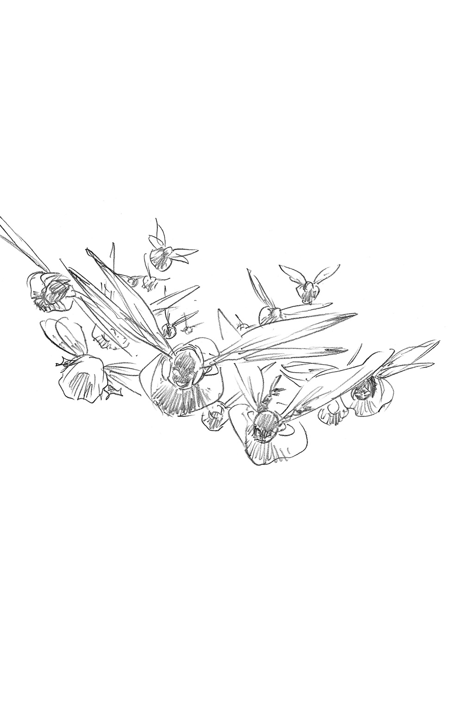
「手前ら、名前はなんだ？」
「僕達は『ピカロ』だよ。一人一人の名前は無いや」
「そうか......じゃあ、俺達は......『更木隊』だ」
後ろにいた弓親が、一角の言葉の意図を理解し、告げた。
「集団戦なんて、十一番隊席官の柄じゃないんだけどね」
「なに、楽しめりゃ関係ねえさ。つーか、お前、斬魄刀ねえのにどうすんだ？」
「死神の戦いは斬拳走鬼が基本だよ。一つが欠けただけで逃げるのは美しくないだろ？」
剣に拳、体術と鬼道。その全てを駆使するのが死神の戦いだ。鬼道が軽んじられる十一番隊とはいえ、拳と体術だけでも闘うには十分だと弓親は言う。
彼の言葉が強がりではない事は、一角に向けた笑みが証明している。
そして、ピカロ達と十一番隊士達による戦いの幕が開こうとしていた。
だが、その火蓋を切って落としたのは、ピカロでも死神達でもなく――
平穏だった筈の空座町に鳴り響く、けたたましい銃声だった。
空座町 弓沢 雑居ビル
「せやから、ワシはヤクザ屋さんちゃう言うてるやろ！ 保父や、保父！」
如何にも『組事務所』という雰囲気をただよわせるビルの一室で、ブタのヌイグルミに似た強面の中年男性が、手足を縛られ転がされている。
そんな男に、一目で筋者と解る男がドスをちらつかせながら詰問した。
「黙れこの野郎！ 手前みてえな保父がいるか！ そこの児童公園でウロチョロしやがって、挙げ句は組長のお孫さんを誘拐しようとしてただろうがコラ！」
ドスを床に突き立てられ、ブタ肉さん（仮称）は泣きそうになりながら首を振る。
「ちゃうがな！ ワシはただ、あの子が無くしたっちゅうヌイグルミを探すのを手伝......」
何か言い訳を口にしようとしていたところで、突然事務所の扉が開かれた。
「捜査令状だ。大人しくしろお前ら！」
大量の警官が扉から入りこみ、事務所内は騒然となる。
「や、やべえ！ 家宅捜索だぁーッ！」
しばしの喧噪が続いた後、刑事の一人が事務所の隠し扉を暴き出した。
「ったく、今時、預け屋使わねえで、手前らの事務所に得物を置いてるたぁな」
鼻で笑いながら、隠し部屋の奥に置かれたロッカーを開き――
刑事の笑顔が凍りつく。
タレコミによると、このロッカーには数十丁の銃器が置かれている筈なのだが――そこには何も入っておらず、もぬけの空となっていたのである。
ハメられたか、と背後を振り向いた刑事の目に映ったのは――同じように、呆然としている組員達の姿だった。
どうやら、武器が消えている事は彼らにとっても想定外の事態だったようだ。
そのうち一人が我に返り、刑事に詰め寄る。
「お、おう、なんも出てこねえじゃねえか！ どう始末つけんだ？ おぉ？」
すると警察は、部屋の中央に転がるヌイグルミ似の男と、その横に刺さっているドスを指さし呟いた。
「じゃあ、まあ、とりあえず拉致監禁と傷害未遂で、お前らの組長を逮捕するから」
「げえぇぇーっ！」
そこから始まった大捕物をきっかけに、空座町で浅野啓吾や小島水色も巻きこんだ壮大なクライムアクションが繰り広げられる事になるのだが、それはまた別の話。
ただし、消えた武器に関してだけは、些か事情が違っていた。
空座町 東部 ロケ車内
「お、あれだあれだ！ ミサオちゃんの車！」
観音寺の自家用車『ジャンヌダルク』を見て叫んだのは、『ぶら霊』のプロデューサーである男だった。
彼らはロケに使うワゴン車にカメラを積みこみ、髑髏面の女を乗せてドライブしているという観音寺を探し続けていたのである。
取り急ぎスタッフだけで乗りこんだ為、いつも番組の司会をしている太ったメガネの男はおらず、プロデューサー達のダイレクトな声がカメラのマイクに収まっていく。
「おいおい、随分飛ばしてるな。スピード違反だと放映できないよー？ ていうか、助手席に確かに誰か乗ってるね。もっと近づけて！」
ロケに使うワゴン車を近づけ、助手席に乗車している者を確認しようとしたのだが――
それよりも早く、乾いた破裂音が町の中に響き渡り、ほぼ同時に、観音寺の車の後部が火花を散らしたではないか。
報道にも携わった事のあるプロデューサーは、その音と火花を見て、即座に何が起こったのかを理解する。
「今......ミサオちゃんの車、銃で撃たれなかった？」
空座町 東部 路上
「なに......？」
――火縄の音だと？
聞き慣れない音を耳にした一角達は、構えを解かぬまま周囲に耳を澄ませる。
銃声などを聞いたのは、まだ席官になる前、戦時中の現世へと来た時以来だ。
尸魂界に帰還した後に調べたところ、その資料が些か古かったのか、一角は銃全体を『火縄銃』として認識している。
だが、どのみち死神と虚の戦いにおいては異質なものだ。
十刃の中には銃を用いて虚閃を連射する者もいたようだが、その場合は当然ながら火薬の音などする筈もない。
そして、二発目の銃声が響き渡り――一角の視界の隅で、破面の一人が胸から血を流して地上に落ちた。
「なんだぁ!?」
更に銃声が続き、破面達の身体に弾痕と思しき穴が穿たれていく。
帰刃を行った事で硬度が上がっているにもかかわらず、軽々と鋼皮を撃ち抜く銃弾。
現世の物質でありながら破面に効率よくダメージを与えている所を見ると、何かしらの細工がしてあるのだろう。
一角は、更に集中して周囲に意識を向け――銃声の元を発見する。
人影。
ライフルを構えた人型の何かが、道の端に現れつつあった。
まだ個人に合わせた顔や体格が出来上がっていない状態の、目と鼻と耳と口の部分にかろうじて穴だけあいている『義骸』が、手に銃を携えて地面から生えてきたのである。
墓場から蘇るゾンビのように、次々と地面から湧き上がる義骸の群。
中に義魂丸が入っている様子もなく、ぽっかりと開かれた目や口の穴には、ただ漆黒だけが広がっていた。
そんな不気味な群を見て、一角は眉を顰め、横にいた弓親は即座に理解する。
「これは......多分、痣城の仕業だね......」
と、彼の言葉に応えるかのように、周囲に痣城剣八本人の声が響き渡った。
「虚の殲滅ならば、助勢しよう」
隊士達の背後に姿を現した男に、一角は明確な殺意をこめた視線を叩きつけた。
「......今度は人の喧嘩の邪魔か......とことん苛つかせる奴だな、テメェ」
「既に乱戦となっているのだ。私が手を加える事に何の非があるのかな？」
「こいつは十一番隊の喧嘩だ、っつってんだよ。......部外者の手前が出る幕じゃねえ」
一角の言葉に同意するかのように、十一番隊士達が痣城を睨みつける。
ピカロ達は、新しい遊び相手が来たと喜んでおり――不思議な事に、撃たれた個体の傷が、何も治療した様子もないのにみるみる塞がり始めていた。
その理由について推測ができているのか、痣城はさして驚かず、最終的に二十体ほどの義骸を戦場に顕現させる。
――こいつらの矜恃は、刳屋敷によく似ているな。
そんな事を考えつつ、痣城は冷めた目で隊士達に伝える。
「君達に構っている暇はないのだがな......。やはり君達は排除すべき存在かもしれない。更木と共に、消えて貰おう」
「隊長から逃げてきた野郎が、随分とでけえ口たたくじゃねえか」
「逃げたわけではないのだが、無駄な討論はすまい」
痣城は、自らの姿を消しつつ両手を広げ、薄らぐ口で隊士達に通告した。
「私は私の意志で破面達を滅ぼすとしよう」
次の瞬間、現場に霊子と物質、双方の性質を備えたアサルトライフルの銃声が響き――
同時に、ピカロ達が楽しそうに『遊び』を開始した。
彼らの囲んでいる空間に、先刻よりも霊圧の濃い風が吹き始めたかと思うと、十一番隊の一人は、その風に赤い色が混じっている事に気がついた。
そして、その色の正体が自分の腕から流れる血だと確認し――彼は気づく。
彼らの間を吹き荒れる風こそが、ピカロにとっての刃に他ならないのだと。
尸魂界 技術開発局
「やれやれ、だからとっとと瓶詰めにしろと言ったんだがネ」
捕らえていた子供型破面の一人が突然起き上がり、帰刃を行うと同時に黒腔を開いて強引に脱出した。
その話を涅マユリに報告した時、その場にいた研究員達は自分が瓶詰めにされるかもしれぬと怯えていたのだが――意外な事に、涅マユリはさして怒った様子も見せず、淡々とイヤミを言うに留まっている。
「小僧の解析は、一通り解剖した時点でほぼ完了したからネ。あとは特に興味を引くものは残っていない。帰刃の状態も観測機に残ったデータで確認したが、完全に予想の範囲内だったヨ」
マユリは自分の霊子演算器の鍵盤を叩き、一つのデータを画面上に呼び出した。
そこに書かれていた内容を見て、研究員達は目を見張る。
「奴らは、命を共有している。個体の一つが死にかければ、他の連中が微量に自らの霊圧を分け与えるのだヨ。その伝達方法は――我々の耳には聞こえぬ『音』に他ならない。つまり奴らは、自分達だけが共有できる体内の通信機構で、霊圧のやりとりをしていたという事になるネ」
「そ、そんな事が可能なのですか？ 霊圧を離れた場所に送るなど......」
平局員の問いに、マユリは呆れた目を向けながら言葉を返した。
「そう驚かれても、君が無能だと確認するようで困るんだがネ。現に、滅却師に感染させた監視用の菌も、断界を飛び越えてこちらにかなりの重量のデータを送信しただろう？ 我々が研究を進めれば、そのうち伝令神機で霊圧を共有する時代も来るだろうネ」
マユリの場合、そんなシステムを造り上げたら供給よりも先に奪う事に使用しかねない。
局員達はそう考えたが、口に出す者はいなかった。
そんな部下達の心を知らぬまま、マユリは現世に放っている監視蟲の映像を画面に映し出し、空座町の様子に目を向ける。
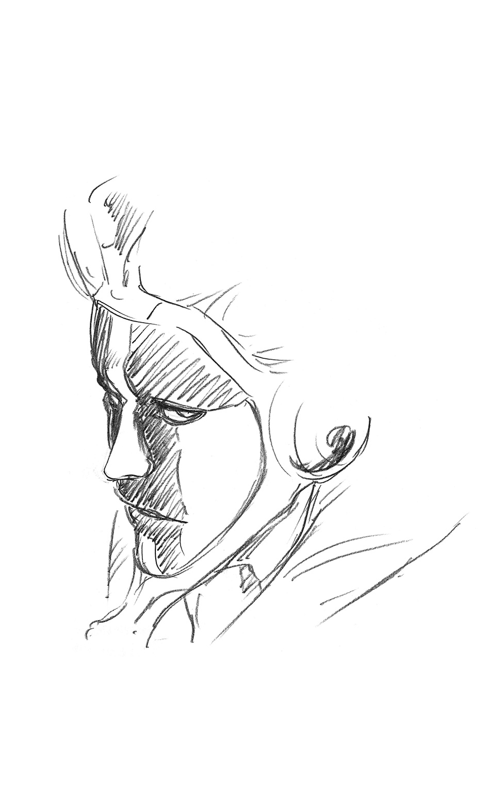
「その『音』のやり取りを攻撃に転じる事も、当然可能だろう。私の計算通りなら、十体程が一定範囲内に集まれば、ちょっとした鎌鼬ぐらいの威力になるヨ。二十体以上なら、確実に殺傷能力が生まれるネ」
不気味な笑みを浮かべながら自分の解析結果を確認していくマユリに、たまたま側で作業をしていた阿近が、興味深げに問いかけた。
「百体全部が集結したら、どうなりますかね？」
「ふむ、百体の距離と位置関係にもよるが......まあ、仮に隊舎の修練場の広さを基準とすると......ほう、丁度比較しやすい例があるじゃあないかネ！」
計算結果を演算器ではじき出し、あっさりと結論を口にする。
「朽木白哉の『千本桜』の卍解状態と、ほぼ同規模の破壊力といった所だヨ」
「それに、私の推測が正しければ......。奴らの技には、もう一段階裏の顔が存在するネ」
空座町 東部 路上
身体を少しずつ刻まれる十一番隊の隊員達は、己の身をもって涅マユリが発見していた事実に辿り着く。
徐々にその『風の刃』が鋭くなっている事を理解し、同時に、銃弾が十一番隊の隊員達のいる方向にも飛び交い始めるのを確認した。
身体を刻まれ、銃弾に穴を穿たれ、既に深手を負い始めるものが出てきた席官達だが、彼らもまた、一角や弓親と同じような笑みを零す。
子供の姿をした相手に、盗まれた義骸と現世の武器。そんな異質なものを前にピンと来ていなかった者達も、一角達と同じ答えに到ったのである。
ここは、確かに戦場だと。
更木剣八と共に出陣した自分達に与えられた修羅の巷なのだと。
自分達が命を張るに値する戦いであると理解し――
鋸草の哄笑が、空座町の空に高々と鳴り響いた。
ロケ車内
そんな死神達の笑い声は、現世の人間であるテレビスタッフ達には届かない。
彼らに見えるのは、現世の物質として顕現している義骸と銃器類のみである。
「なに、あの連中......マネキンのコスプレ......？ 金粉ショー......？」
一瞬呆けていたプロデューサーだが、流れ弾の一つが近くの塀を砕いたのを確認し、慌ててスタッフに指示を出す。
「まずいまずい！ 逃げて逃げて！ 一旦離れよう！ カメラはあっち向けて、車はミサオちゃんの方に逃げて！ ......って、ミサオちゃん、どっち行った!?」
慌てて逃げ出しつつも、カメラに『何か』を収めるのは忘れないプロデューサー。
彼は身を屈めて冷や汗を搔きつつ、観音寺に対して独り言を呟いた。
「ミサオちゃん......あんたさぁ......一体何に追われてんの......？」
空座町 貴ノ茅 スカリビル跡地
空座町の子供達の遊び場になっている、少し高台になった空き地。
そこへ上る階段の前に車を停め、観音寺は背後の様子を窺った。
だが、車を追う者の姿はなく、どうやら無事に撒くことができたようだと安堵する。
「最後に銃で車を撃たれたが......もしかしたら、ヤクザスピリッツが本物のヤクザに取り憑いたのかもしれん。だとすると、この空座町そのものが危機に陥っているのでは......？」
ブツブツと独り言を呟いていた観音寺だが、ふいに気づき、助手席のロカに声をかけた。
「大丈夫かねロカ嬢？ 流れ弾が掠ったりはしていないか？」
自分の車についた弾痕よりも先にこちらの心配をする観音寺を見て、ロカは顔を悲しげに歪めながら口を開いた。
「どうしてですか......？」
「え？」
「何故、この状況で貴方は......私の事を心配する事などできるのですか......？」
責めるような問いかけだった。
「全部私のせいなのに......貴方は私に巻きこまれてしまっただけなのに......！」
だが、観音寺を責めているわけではなく――彼女の怒りは、この期に及んでも『命令が無ければ何をすればよいのか解らない』自分自身へと向けられていた。
生きたいという僅かな情動に心を動かされ、シエンの攻撃を逸らしてしまった。
初めて、命令を無視した。
『道具』としての役目を、自分から捨てたのだ。
そこまでして生きようとしたのに、やはり、彼女は自分の存在の意味すら解らない。
こんな自分に何の価値があるのか、ロカは悔しさに握った拳を膝の上に落とし、俯きながら声を漏らす。
「だから......私なんかの為に、これ以上自分を犠牲にしないで下さい......」
観音寺は、そんな彼女に何か声をかけようとしたのだが――
それよりも一瞬早く、階段の上から若い男の声が響き渡った。
「すまないが......その言葉の意味を、詳しく聞かせてくれないか」
観音寺とロカが顔を上げると――そこには、高校生と思しき少年が一人立っていた。
「むむ？ 君はさっきビルの上にいた、インテリメガ――」
「石田雨竜です」
「そ、そうか。どうやら生者のようだが、さては私のサイン――」
「いりません」
眼鏡の位置を直しながら、観音寺の言葉を遮ってピシャリと言い放つ石田雨竜。
彼は、階段を一段ずつ下りながら、ロカに問いかけた。
「何故、破面の君が人間の観音寺氏と共に行動しているのか......君を狙っている死神や、あのザエルアポロと同じ姿をした男の目的は何なのか、順を追って説明してくれないか」
上から目線で問う石田に、観音寺が言う。
「ボーイ、ミステリアスな女性に憧れを抱き、一時のパッションに囚われるのは致し方ないが、そう質問攻めをしてレディを困らせるものではない。女性とは、心に秘めたる花を持つからこそ、美しい棘で我々の心を搔き乱すデンジャラス・スウィートなのだから」
「......どちらかというと、貴方の方が困った状況に陥ってると思いますが」
一応年長者への敬意を表す石田だが、心の底では既に『この男に敬語を使うべきかどうか』と悩み始めていた。
「そもそも、貴方はその女性がどういった存在か、御存知なんですか？」
「ハッハッハ、せっかちボーイめ。その答えを探す為に、我々は旅をしていたのだよ」
何を解り切った事を、と首を振る観音寺に、石田はあっさりと『答え』を突きつける。
「貴方は昔、あの廃病院で、黒崎の奴と一緒に悪霊と闘ったでしょう？」
「おお！ もしや、あの時の光景を見ていてくれたのかね!? やはり私のファン――」
「違います。......ともあれ、彼女は、あの悪霊......虚と同じ側の存在です。本来なら、霊力の高い貴方は、彼女に襲われていてもおかしくはありません」
「......何を言っているのだ!? 彼女が私を襲うならば、とっくにそうしているだろう！
レディに対して、憶測で勝手な事を言うものではない！」
強い調子で否定する観音寺の言葉が石田の心に僅かに引っかかる。だが、敢えてその違和感は指摘せず、石田は言葉を続けた。冷たく映るかもしれないが、町の状況が状況であり、回りくどい訊き方をしているわけにはいかなかったのだ。
「だからこそ、その理由を彼女に聞きたいんです」
「ボーイ、言っているだろう。レディを困らせるものでは......」
観音寺は運転席から降り、ロカを護るかのように石田の前に立ち塞がったのだが――
「いいんです。観音寺さん」
そんな彼を引き止める言葉が、車の助手席から聞こえてきた。
「全部......その人の言う通りですから......」
そして、彼女はゆっくりと話し始めた。
観音寺と石田に向けて、自分が如何なる存在であるのかを。
10分後
「......これが、今の私に言える全てです。ザエルアポロ......シエン様が何故私を壊そうとするのかは想像もつきませんが、私の体内の『糸車』を取り出すと仰っていました。恐らく、私の『糸』の力を再利用なさるおつもりなのだと思います」
自分の知る事を語り終えたあと、沈黙する観音寺達に対して己の推測を聞かせるロカ。
「死神の人達が私を狙うのは解ります......。私のせいで、瀞霊廷を危険にさらしたのですから......始末されて当然です」
死神達の実情を知らない彼女の推論は的外れだったのだが、自分自身の心を納得させるには十分なものだった。
ロカは落ち着き払い、観音寺に頭を下げる。
「浮遊霊だと騙していた事......本当に、申し訳ありませんでした」
「待ちたまえ、ロカ嬢がいつ私を騙したというのだ。私が、憶測で勝手な事を言っていただけだ。君が謝る必要などあるまい！ それに、本当に私を騙していたとしても問題はない......噓と涙と裏切りと寝顔とうなじは、女性の美しさを彩るハーモニーだ。アポロチョコのイチゴ部分のようなものなのだよ、レディ！」
言葉の意味の半分も解らないが、尚も自分を庇う発言をする観音寺に、ロカは言う。
「本当に......貴方は優しくて......不思議な人ですね。町で多くの人に手を振られる理由が、少しだけ解る気がします」
彼女は、噓をついた。
自分は道具であり、主人に逆らう事で道具ですらなくなった。
そんな自分が、生者達の行動の理由など解る筈がない。ただ、そうであればよいと願っているだけだ。
ロカはそんな事を考えながら、ゆっくりと目を閉じ――
顔から表情を消して、滅却師の少年に向き直る。
「滅却師の貴方がここに来てくれたのは、運命だったのかもしれません」
「.........？」
「貴方のお陰で、覚悟ができました」
「何の話だ？」
訝しむ石田に、彼女は問いかけた。
「今......『魂を切り裂くもの』を......お持ちでしょうか」
「......なんで君が、その名前を？」
『銀嶺弧雀』とは分離されている特殊な武器の名前を出された事に驚く石田だったが、彼女の語った事を思い出して自己解決する。
「なるほど、ザエルアポロの観測した記録は、君の中にも残されているという事か。......だけど、これをどうしようっていうんだ？」
服の裏側から細い柄状の機具を取り出し、それを握りこむ石田。
――あの妙な死神、これは奪っていかなかったな。
――尸魂界に行った時はまだ持っていなかったから、存在を知らないのかもしれない。
そんな事を考えつつ手の平から霊圧をこめると、握りこんだ柄から、光り輝く霊子の刃が生み出された。
「なッ......ビームソードだと!? なんとヒーローっぽい武器だ......なるほど、さては私に憧れ、自らもヒーローになろうと......」
「すいません、ちょっと黙っていてください」
観音寺の話の腰の折りっぷりに、虚圏のペッシェを改めて思い出す石田だが――
逆に、そんな二人の会話の腰を折る形で、ロカが真剣な言葉を口にした。
「滅却師さん......。その武器で、私を斬って頂けないでしょうか」
「なんだって......？」
「とッ......突然何を言いだすのだロカ嬢!?」
驚く二人に、彼女は続ける。
「事情は解りませんが、あの人達の狙いは私にあるようです。ですから、私がここで消滅すれば、彼らがこれ以上この町に留まる理由はなくなる筈です」
「悪いけれど、僕の武器は、自殺の手伝いをする為にあるわけじゃない」
「私はただ、道具として作られた――虚です。虚の消去は、滅却師の仕事としてなんの問題もない筈です」
「......」
石田は、小さく溜息を吐いた。
確かに、滅却師という一派の成り立ちは虚への復讐だ。
だが、彼自身に虚への強い恨みがあるわけではない。師でもある祖父を虚に殺された時の自分ならば、死神の次に虚を恨んでいたかもしれないが――
虚圏に行き、戦士としての矜恃を持つ十刃落ちの少女や、人間に対して害意を持たないネルやペッシェ、ドンドチャッカという破面と出会った今は、別の事を思う。
祖父ならば――
師である石田宗弦ならば、破面の女にこんな提案をされた時、どうするのだろうかと。
――師匠なら、やむなく彼女を始末しなければならないとしても――自分の手ではなく、死神の斬魄刀で『浄化』させる道を促すかもしれない。
死神を信頼していた師の事を思い出し、石田は自分が信頼する死神の姿を想像した。
もっとも、その男は、今は死神の力を失っているのだが。
たとえ彼女を虚圏に帰らせても、彼女を追う者達はそこまで追っていくだろう。
そしてなにより――彼女をどうにかするという目的を達成した時点で、あのザエルアポロと同じ姿の男や謎の死神が、ろくでもない利益を得る可能性はある。
――顔見知りの死神達に話を聞ければいいんだけど......。
――朽木さんや阿散井君ならともかく、なんでよりによって十一番隊が来てるんだ？
更木とは会話にならないとしても、一角や弓親ならば知らない仲というわけでもない。問題は、彼らが彼女をどうにかする前に、なんとか話す隙を作れるかどうかだ。
――......ここからなら、浦原さんの店も遠くないな。
――この霊圧の異常だ。もう何か動いているかもしれない。
浦原喜助が留守とは知らず、彼に相談すべきかどうか考察する石田だが――
難しい顔をする彼と、答えを待つロカの顔を交互に見ていた男が、思いついたように声をあげた。
「なるほど！ ボーイの剣は一護やカラクラピンク達の武器と同じで、虚の魂を浄化して成仏させる事ができるのだな!?」
「............」
珍しく核心をついてきた問いかけに、石田は一瞬だけ目を泳がせる。
滅却師の力では、魂を浄化して尸魂界に送る事はできない。ただ、存在を消滅させ、霊子を霧散させるだけだ。
滅却師の目的は虚達の滅却であり、決して救いではないのである。
「......違う......ようだな」
真剣な表情になる観音寺に、石田は何も答えなかった。ここで堂々と「その通りさ」と噓をつける程に、彼は老練でも残酷でもなかった。
観音寺はその沈黙を答えと受け取り、ロカの方に向き直る。
「ユーはそれでいいのかね!? 成仏ではない、消えてしまうのだぞ！」
「覚悟は......しています」
「覚悟など、どうでもよい！ ロカ嬢がそれで良いかどうかを聞いているのだよ！」
それまでになく真剣な観音寺に、ロカは思わずたじろいでしまう。
だが、勢いに押し切られる寸前で踏みとどまり、薄い笑顔を作りながら答えた。
「これで......いいんです。私は、虚という事をさしおいても......存在しているだけで貴方達に迷惑をかけてしまうようです。そうまでして生きるぐらいなら、ここで消えた方が......幸せなんだと思います」
「ならば、何故悲しい顔をする！ 悲しみに満ちた願いなど希望ではない、諦めだ！」
「でも！ そうしないと観音寺さん達が......ッ！」
思わず叫んだ後、彼女は気づく。
これでは、自殺の理由を観音寺に押しつけているだけではないかと。
――ああ、やっぱり私は、最低だ。
――この期に及んで、私は自分が解らない。
――他人の中に、答えを求めてしまうなんて。
「......ごめんなさい......私、貴方達を理由にする......つもりじゃ......」
カタカタと震えながら言う女の肩に、観音寺は優しく手を置いた。
「ユーが希望を抱くためならば、私やそこのボーイをいくらでも踏み台にするといい。だが、諦める事の言い訳にする必要はない。たとえユーが諦めようとも、我々空座防衛隊は、決してユーの命を諦めたりはしない！」
「さりげなく変な組織に入れないでもらえますか」
石田は小声で否定するが、空気を読み、大声で観音寺の言葉を遮る事はしなかった。
観音寺は意味もなくマントを翻しながら、ロカというよりも、自分を含めた世界の全てに言い聞かせるように語り続ける。
「大勢を救う為に一人を殺し、自分一人が泥を被る覚悟を選んだ者は確かに勇者だ。だが、両方を救う道を探さず、ただ覚悟をしただけならば、その者は、勇者ではあってもヒーローではない！」
ヒーロー。
ロカには馴染みの薄い言葉が、再び観音寺の口から吐き出される。
そして再び、人々から手を振られる彼の姿を思い出し、ロカは観音寺に問いかけた。
「あなたは......ヒーローと呼ばれる存在なのですか？」
真摯な瞳で見つめられ、観音寺は力強く答えた。
「ザッツライッ！ 確かに、私はカリスマ霊媒師であると同時に、日本の25パーセントが認める正義のヒーローに他ならない！」
「それなら、なおさら私を消し去って下さい！ それが正義です！」
「なッ......何を言うのだ!?」
「私が消滅すれば......この先、多くの人達が助かる事になります！ そもそも私は虚の側の存在......消滅させる事が現世の正義ではないんですか!?」
まるで、見捨ててくれと懇願するかのような言葉だった。
だが、観音寺はそんな彼女の空気を読まず、自分のヒーロー観を語り始める。
「......レディ。君には直接関係のない話をするが......。私の事をヒーローと呼んでくれる者の殆どは、まだ幼い子供達なのだよ」
「え......」
「合理的な大人達ならば、君の願いを聞くのが正しい選択だと言うだろう。だが、まだ幼く、全ての事を割り切れぬ子供達は、我々が君を殺してしまう悲劇の一体どこに希望を抱けばよいというのかね！」
「............」
黙りこむロカに、観音寺はテンションを上げながら更に続けた。
「私が君を救おうとするのは、ヒーローとしての我が儘だ。我が儘ついでに言うならば、もしここで君が生きる事を諦め死んだとすれば、私は憎むだろう！ 君を救えなかった自分自身をだッ！ そして、君をそこまで追い詰めた者達をだ！ 私はたとえ力及ばずとも戦いを挑み、君が恐れた以上の戦禍が世界を包みこむ事だろう！」
ミュージカル役者のように、大仰なポーズをとりながら声高く唱いあげる観音寺。彼の目には、強大な敵と戦う自分の姿が実際に見えているのかもしれない。
少なくとも、その場しのぎの噓や冗談ではない。この観音寺という男は、たとえ自分が無力であろうと、本気でシエンや死神達に戦いを挑むだろう。
「だが、私は本来、争いを好まぬ博愛の徒......。私を気遣ってくれるというのならば、私に世界を憎ませないでくれたまえ。私の世界から、君というファンを奪わないでほしいのだ、レディ」
言葉を落ち着けながら恭しく一礼し、手を差し伸べる観音寺。
ロカは、『ファン』という言葉を否定しようとはしなかった。
目の前の男は、肉体的には、自分よりも遥かに弱い存在かもしれない。
だが、それ以外の全てを持ち合わせており、ロカの目にはとても眩しく映りこんだ。
憧れを抱いた時点で『ファン』と呼ぶのならば、確かに彼女はこの瞬間――ドン・観音寺という奇妙な人間のファンになったと言えるだろう。
一方、石田は半分呆れつつも、観音寺の言葉を否定せず、最後まで聞き入れる。
果たして、ヒーローらしく振る舞おうとしての妄言なのか、あるいはロカを安心させようとしての発言なのか、石田には読み切れなかった。
あるいは、その両方なのかもしれないと判断した石田は、観音寺の言葉の中に出てきた『合理的な大人』という単語に、父親の存在を思い出す。
滅却師の仕事は金にならないからと、絶大な力を持ちながら祖父の後を継がなかった父ならば、あるいは顔色一つ変えずにロカを消滅させるかもしれない。
そんな事を数秒考えた後――石田は、ロカに声をかけた。
「確かに、君が消滅したところで、僕にも闘う理由はある。ザエルアポロには借りがあるし、あの妙な死神からは滅却師十字を取り返さなくちゃいけない」
石田は、改めて状況を整理しつつ、考えの一部を口に出した。
「今、シエンというザエルアポロめいた奴とは、更木剣八が闘っている。あの更木って男は危険な存在だけど、彼がシエンやあの妙な死神の二人に勝つのが、一番話がまとまりやすいだろうね。あの子供型破面も問題といえば問題だけれど、後回しでいいだろう」
しかし、自分で口にした言葉を、即座に否定する石田。
「ただ......それは希望的観測に過ぎない。更木剣八は、恐らくシエンには勝てない。相性が悪すぎるんだ」
「相性......ですか？」
「奴がザエルアポロの技を全て使えるとすると、力押しタイプの死神ではどうにもならない。奴は敵のクローンを生み出して同士討ちさせる。更木剣八が何人も暴れるなんて、想像したくもないけどね」
そして、自分の体験を元に、更に推測の言葉を吐き出した。
「それに......奴は僕らのミニチュアを作って、内臓を遠隔破壊する技術も持っている。いくら隊長格といえども、内臓を潰されれば終わりだろう。涅マユリのように、対策が練れる死神なら話は別だけれどね」
考えれば考えるほど絶望的に思え、石田は、『更木が勝つ状況』は希望的観測だとして考えから排除して作戦を練り始める。
しかし、石田雨竜は、確かにザエルアポロの能力を身をもって熟知していたが――
彼は、知らなかった。
『剣八』という名が、『最強の死神に与えられる称号』であるという事を。
そして、最強の死神が、一体どれほどデタラメな力を持ち合わせているのかも。
十七章
断界 黒腔内
更木剣八は、黒腔内に生み出した霊子の足場に立っていた。
彼の荒々しい霊圧を表すように、彼の手で生み出された足場は、まるで岩山の一部としか言えないのだが――その凹凸は、現在全て覆い隠されている。
足下に転がる、無数の死体の山によって。
転がる死体は、全て更木と同じ格好をしていた。眼帯はなく、顔には独特の紋様があったが――一目で更木剣八の姿を模造したと解る無数の身体が、全て斬り伏せられていたのである。
そして現在。彼の目の前では、解放状態となって帯状の触手を纏うシエンが、更木剣八のミニチュアと思しき人形を手にしていた。
シエンはマトリョーシカのように腹で割れた人形の中から、内臓の名前が書かれた粒を摘み上げ、指で潰そうとする。
上手く潰れれば、名前に対応した更木本人の臓器が破壊される筈なのだが、鋼鉄のように硬くなったその粒は、指の力では壊れそうもない。
感触から硬度を計測してみたが、恐らく、これを斬る程の斬撃が放てるならば、直接更木の身体を斬った方が早いだろう。
結論として――更木剣八という男に対し、ザエルアポロ・グランツの編み上げた技術は全く通用していなかった。
想定していた霊圧を遥かに超え、完全なクローンを生産するには周囲の霊子供給が追いつかず、内臓のミニチュアについても、遠隔破壊できる霊圧を遥かにオーバーしてしまっていたのである。
無論、それでも自分に近い力を持つクローン数十体と斬り合ったため、剣八も無傷というわけではない。痣城の鬼道重唱によって負った疵の上から、新たな刀傷が何本も刻みつけられていた。
それでも更木は疲れた様子すら見せず、寧ろ先刻よりも更に霊圧を濃くしてシエンの前に仁王立ちしているのだ。
しかし――シエンの顔に、焦りの色は見られない。
「君が虚圏でノイトラを斬った時のデータ通りなら、クローンも内臓潰しも問題なく発動した筈だが......これは、純粋に僕の技術がザエルアポロに劣っているという事かな？」
「んなこた知らねえよ。ところで、手品は今ので終わりか？」
相手を試すような更木の言葉。
シエンは絶対的な力を持つ死神を前に――笑っていた。
「ザエルアポロ・グランツなら......ここで絶望していただろうね。小細工が一つも通じず、怒りと恐怖に打ち震えたかもしれない」
「あぁ？ つーか、誰だ、そいつぁ？ この程度でビビる奴なんざどうでもいいだろ」
剣八の言葉に、シエンは楽しそうに嬉しそうに言葉を返す。
「ああ、その通りだ。ザエルアポロなど、もはや僕にとってはどうでもいい」
手にしていた剣八のミニチュア人形を投げ捨て、クツクツと笑うシエン。
「正直、君の強さを目の当たりにして興奮しているよ。ザエルアポロの真似事を続けていたならば、永遠に味わえなかった感覚だ」
そして、首をゴキリと鳴らし、恍惚とした表情で両手を広げた。
「感謝しよう、死神。そう......感謝だ！」
細布状の群として広がるシエンの触手が鋭さを増し、それぞれの先に霊圧が満ち始める。
「君がそこまで強くあってくれたお陰で、僕は今、完全に僕になれたんだよ！」
数十の刃が霊子を纏い、更木に向かって構えられた。
「感謝と歓喜をこめて、質問に答えよう。......手品は、さっきので終わりだ」
触手の先に圧縮された霊圧は、いつでも虚閃を撃てる事を示している。
だが、数十発の虚閃を留め続け、まだ撃ち放つ様子はなく、シエンは更木に宣言する。
「ここからは、なんの種も仕掛けもない、力押しの殺し合いさ」
「ほお......」
ズグリ、と、剣八が笑うと同時に周囲の空間が重く歪む。
「断言しておくよ、死神。力押しとはいえ、僕は勝つためにありとあらゆる手段を使うとね。正面から斬り合う君の流儀には付き合わないかもしれないが、恨まないでくれよ？」
シエンも頰を歪ませ、更に邪悪な霊圧を収束させていく。
「俺だって、隙がありゃ上からだろうが背中からだろうが斬るぜ？ 殺し合いでどんな手を使おうが、恨むも糞もねえだろ。確認すんなよバカバカしい」
「......それもそうだね、つまらない事を言ってすまなかった」
シエンは僅かに頷き、改めて口を開く。
何故そうしようと思ったのかは解らない。
ただ、完全にザエルアポロという呪縛から解き放たれたシエンは――新たな自分自身を楽しむ為に、心の衝動のままに自らの名前を告げた。
「僕の名前はシエン・グランツだ。名字は適当だけれどね」
「気が合うな。俺も名字は適当だ」
更木もまた、殺し合いの最中の名乗り合いが当然だとでも言うように言葉を返す。
「十一番隊隊長......更木剣八だ」
「......ハハッ」
「ハッ......」
更木とシエンは、睨み合いながら、更に笑った。
笑い、嗤い、凶い――――
次の瞬間、衝撃が黒腔内を支配する。
シエンが数十の触手から放った『王虚の閃光』と、更木の振り下ろした斬魄刀が真正面から衝突したのだ。
並の虚や死神ならば消滅しかねない爆風に晒されながら――
少し離れた場所で、笑う者がもう一人。
「楽しそうだね、剣ちゃん！」
やちるは、二度、三度と続く衝撃を浴びながら、その中心に立つ男達を見守り続けた。
一騎当千ではまだ例えるに足りぬ、箆棒な力と力のせめぎ合いを――
まるで、故郷の森で砂遊びに興じる子供達を見るかのような笑顔で見つめ続ける少女。
もっとも、彼女の故郷である『草鹿』には、森も砂遊びも存在していなかったのだが。
空座町 貴ノ茅 スカリビル跡地
「......なにやら、空が震えているような気がしないかね？」
観音寺が何気なく呟いた言葉によって、石田も周囲の空気の異常を感じ取る。
十一番隊の面々が破面と暴れていたことによるものとは別に、町の空気に含まれる霊子そのものが震動しているかのような違和感があった。
この世界を一枚の紙とするならば、その裏側で何かが暴れているような空気だ。
「まさか、藍染の時みたいに町を空間転移させるつもりなんじゃないだろうな......」
その霊子の震えが、隣接した黒腔内で二人の男が闘っている影響などとは気づかず、石田は手早く行動を起こさねばと考える。
とりあえず、観音寺とロカには、町から一度離れて貰うのが一番良いかもしれない。
そう判断した石田は、二人にそれを告げようと振り返った。
と、視界の奥で、何かが動くのが見える。
道の向こうからこちらに迫ってくる、数台のバイクだ。
異様なスピードで接近する現世の物体を見て、石田は暴走族か何かかと思いかけたのだが――上に乗っている者達を見て、即座に精神状態を戦闘態勢に移行させる。
「まずい......逃げろ！」
「ど、どうしたのだボーイ!?」
石田の叫びに、観音寺とロカも背後を振り返った。
すると、そこに見えたのは、何台ものバイクに跨る、貌の無い義骸の群だった。
それぞれの手には現世の武器――すなわち銃器類が握られており、ハンドルを握っていないにもかかわらず、バイクは勝手に駆動している。
「......ッ！」
シエンという破面の仕業なのか、あるいはあの妙な死神の仕業なのか、咄嗟には判別できない不気味な光景だった。
そして、手にしていた武器の種類を確認して目を見張る。
軍事に明るいわけではないので正式名称までは解らないが、それが何であるかぐらいは知識として知っていた。
――グレネード......ランチャー!?
何故、そんなものを破面もしくは死神が用意できたのかは解らない。
ただ一つ確かなのは、現在の状況が至極危険だという事であり――石田は観音寺の車の後部座席に立ちながら、迫るバイクの群を迎え撃つ姿勢を取った。
「何をしているのだボーイ！ 座らないと振り落とされるぞ!?」
「問題ありません。車を出してください」
――全く。銀嶺弧雀があれば、車に乗る必要もないんだが。
謎の死神に忌々しさを覚えつつ、腰のベルトに仕込んでいた銀筒を何本か取り出す石田。
「だが......」
「いいから早く！」
「わ、解った！ 落ちそうになったらすぐにこの観音寺の名を呼ぶのだぞ！」
鋭い石田の怒声に気圧され、アクセルを踏み込む観音寺。
彼はクラッチを切り、大仰ではあるが鮮やかな手並みでギアを切り替え、愛車『ジャンヌダルク』を加速させる。
急加速による加重がかかるが、飛廉脚で高速移動に慣れている石田にとって苦になる程ではない。足下の霊子を調整して身体を安定させつつ、彼は銀筒を指に二本挟んだ。
バイクで先頭を走っていた義骸が、手にしていたグレネードランチャーを発射する。
空気が弾けるような発射音と共に、撃ち出された擲弾がこちらに向かって来た。
「――盃よ、西方に傾け！」
滅却師特有の呪言を唱えながら銀筒を投げる石田。
すると、衝撃波が銀筒の周囲に巻き起こり、擲弾をはじき返した。
バイクの群の中心に落ちた擲弾が爆発し、数台が吹き飛ばされる。
「これで少しは時間を稼げる！ 角を曲がって奴らの視界から離れて下さい！」
「ＯＫだボーイ！ 私の華麗なるドライビング・テクニックに酔いしれるがいい！」
観音寺はそのまま何度も角を曲がりつつ、西へと車を進めていく。
黄松地区と桜橋地区を通り過ぎ、笠咲地区にさしかかった辺りで、観音寺が後部座席の石田に問う。
「ハッハッハ、どうかねボーイ！ あの謎のテロリスト達も、流石についてはこれまい！」
「だといいんですけどね......」
警戒しながら周囲に視線と霊知覚を巡らせる石田。
数秒後、路地の角からバイクのエンジン音が響いてくるのを感じとり、そちらに意識を向けた瞬間、観音寺の声が響いた。
「うおおッ!? いかん！ 前から来たぞボーイ！」
「！」
――挟み撃ちか！
前の道からも数台のバイクが向かってくるのを確認し、石田は銀筒でどちらを先に排除すべきか思索する。
すると、周囲にカンカンと踏切の音が木霊した。
見ると、前方のバイクとの間に踏み切りが存在し、遮断機のランプが点滅し始めている。
「よし、任せるのだボーイ！ 私に妙案がある！」
「ちょっと待った、まさか――」
「そのまさかだボーイ！」
観音寺は勢いよくハンドルを切ると、車体を右に向けて90度にしてドリフトさせる。
「ヒーローに不可能はない！」
そして、線路の上に重なった時を狙い、そのまま車を再加速させた。
『ジャンヌダルク』は爆発的な加速を見せ、線路の上を走り出す。
「どうするんだ！ 列車が来るぞ！」
あまりの行動に思わずタメ口になった石田だが、観音寺は気にせず親指を立てた。
「安心したまえ！ この先は空座本町駅だ！ 踏切が閉まりたてという事を考えても、まだそんなにスピードは出ていない！ 十分避ける事は可能なのだよボーイ！」
「映画の知識とかで適当に語ってるんじゃないだろうなそれ!?」
すると、確かに観音寺の言葉通り、駅に停車している電車が見える。
観音寺は列車の横を擦り抜けようとハンドルを切ったのだが――
石田は、気がついた。
――今、停まってるのって......僕達から見て奥に進む電車じゃないか？
遠目に見える駅の掲示板に目を向けると、そこには赤ランプと共にこう書かれていた。
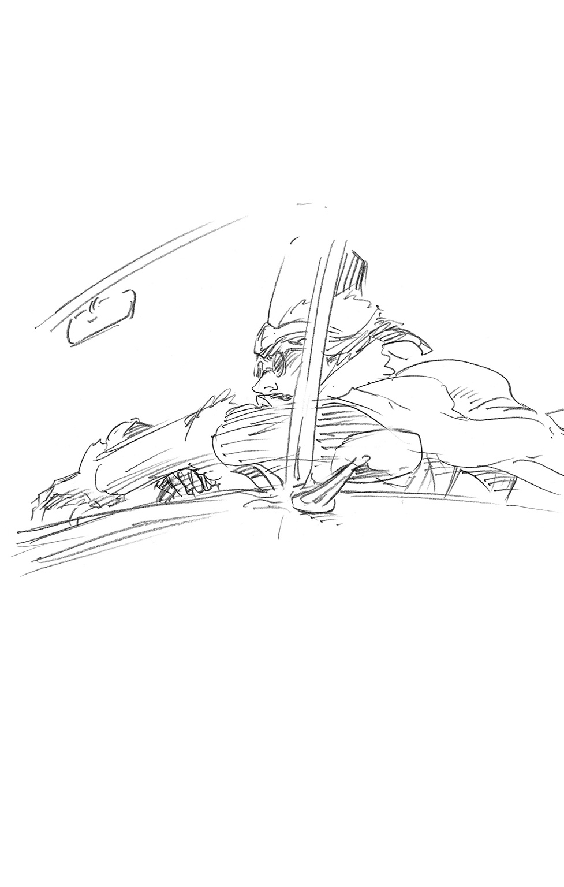
『特急 通過』
声をあげる暇もなく、『ジャンヌダルク』の目の前に、猛スピードの特急列車が現れる。
「ぬおおおおおおおおおおおおおおおおッ!?」
観音寺の悲鳴が駅の中に轟き、哀れ彼らは駅の真ん中で列車と正面衝突、ホームの人々をも巻き込んだ大惨事になるところだったのが――
「身を低くして下さいッ！」
一瞬早く、ロカが動いた。
彼女が何かを念じると、周囲の空間に軋みが生じ、車の前方に黒腔への入口が開く。
そして、『ジャンヌダルク』ごと観音寺達が吸いこまれると同時に入口は閉じられ、その場を何事もなかったかのように特急列車が通過していった。
目の前に車が一瞬現れて消えたのを見た運転手と、ホームでその光景を見ていた一般人達の心に衝撃的な記憶だけを残して――
彼らは、現世から完全に姿を消してしまったのである。
黒腔内
一体、どれだけの時間が過ぎ去っただろうか。
黒腔内は外と時間の流れが違う為、現世ではまだ殆ど時間は経過していないかもしれないが――
更木剣八とシエン・グランツは、既にこの黒腔内で、一時間以上もの間にわたって『殺し合い』を続けていた。
「ハハ......ハハハハハハハハハハ！ ハハハハハハハハハ！ 楽しいな！ 楽しいよ更木剣八！ この世界に、こんなにも楽しい事があったのか！」
そう嗤い叫びながら、鋭い刃と化したシエンの触手が剣八の脇腹を抉る。
そして、先端が突き刺さったままそこに霊子を集中させ、虚閃の一撃を叩きこんだ。
だが、剣八は内部を突き抜ける虚閃の爆発に血を吐きつつ――その触手を摑んで、握力だけで千切り潰し――やはり、嗤いながら叫ぶ。
「あたりめえだ！ これ以上に楽しい事なんざあるわけねえだろうが！」
純粋に殺し合いを楽しむ二人だが、全く同じ歓びに身を浸しているわけではない。
更木は強者との命の削り合いで生じる魂の熱に重きを置いており、シエンは強大な敵と共に死に向かう事、すなわち死を身近に置くことに重きを置いていた。
同じく殺し合いを楽しみながら、ある意味表と裏となっている二人の血戦。
互いに血を浴びているが、もはやどれが返り血でどれが自分の血なのかも解らない状態となり、相手と自分を更に紅く染めんと刻み合う。
このまま、血煙が黒腔を埋め尽くしてしまうのではないかと思った矢先――
やちる以外の部外者が、空間の中に無数に現れた。
「あったよ、シエンー」 「見つけたよ！」
「あれ、なんか遊んでる！」 「いいなー」
黒腔の口が開き、ピカロ達が近くに現れたのを確認するシエン。
彼は目眩ましのように虚弾を放ち、剣八から一時的に遠ざかる。
「ああ、丁度よかった。そろそろ呼ぼうと思ってたんだよ」
更木からは目を逸らさず、言葉はピカロ達に向ける血みどろの破面。
「なんだぁ？ 休憩する暇なんてやらねえぞ。勿体ねえ」
そのまま剣を振り上げて突進してこようとする更木に、シエンが言った。
「焦るものじゃないよ。もっと戦いを楽しみたいだろう？」
「あぁ？」
するとシエンは、ピカロの一人から奇妙な物を受け取り、手の平の上に載せる。
「これで......ザエルアポロの捨てたデータは完全に回収した事になる」
半透明の球体の中に、別の色の球体が揺らめいている謎の物質。
シエンはそれを握り潰し――溢れ出る『データ』の塊を手の平から吸収し、己の全身に巡らせた。
これは、誰も観測できなかった事だが――
データを吸収したのと同時に、彼の眼球に刻まれていた『１００』の数字が削れ――入れ替わりに、『０』の数字が禍々しく刻み直された。
次の瞬間、霊子の波動が爆発的に広がり、ピカロ達を吹き飛ばす。
キャッキャと嗤いながら飛ばされるピカロには興味を持たず、更木はシエンに言った。
「なんでぇ。手品は終わりなんじゃなかったのか？」
「これは手品じゃない。......魔法さ」
更木の問いに答えつつ、シエンは先刻までとは異なる霊圧を全身に奔らせる。
「......一つ聞くが......君の眼帯は、何かの封印か？」
恐らくはミニチュアやクローンを解析したのだろう。大方の推測はつけつつ、確認の為に更木に問いを返した。
「あぁ？ ......おぉ、そういやまだ外してなかったな」
「外してはくれないか？」
死の臭いを含めた霊圧を纏い、シエンは穏やかな顔で微笑む。
「......楽しい時間を、一瞬で終わらせたくないだろう？」
「......ハッ！ 外させてみろよ」
相手の霊圧の変化が解ったのだろう。更木は獲物を前にした悪鬼の如き笑みを顔に貼り付け、霊子の足場を強く蹴った。
と、その背後にシエンが現れる。
「！」
――疾ぇな。
響転を用いて後ろに回りこんだと思しきシエンに、剣八は前を向いたまま背後に向けて刀を振るう。
関節が外れたのかと思うような角度で振り抜かれた腕。しかし、その殺傷能力は微塵も欠けてはいない一撃だ。
しかし――シエンは、それを避ける事すらしなかった。
ガキリ、と、破面の皮膚によって斬魄刀の刃が受け止められる。
強化された鋼皮が、剣八の刃を完全に防ぎ切ったのだ。
そして、無数の触手が剣八の頭部を薙いだかと思うと――逆立てられた髪の先端にあった無数の鈴が千切り取られた。
「この鈴は、ハンデのつもりなんだろう？ 自分より弱い相手と闘う時の為のね」
相手を見透かした言葉を吐きつつ、シエンはその鈴を全てひねり潰す。
「喜ぶといい。僕に対してはもうハンデなど必要ない」
すると、更木は一瞬黙った後――
小さな哄笑を漏らし、自らの眼帯に手をかける。
「眼帯だけじゃねえ、鈴の事も今の今まで忘れてたな。......気分が良すぎてよ」
「だろうね」
「手前の望み通り、外してやってもいいが......俺からも一つ、注文をつけるぜ」
そして、更木は眼帯を千切るように投げ捨てる。
「簡単に......くたばんなよ！」
爆発。
まさしくそれは、マグマの如き勢いだった。
巨大な火山噴火のエネルギーを、人間一人にまで圧縮したかのような霊圧が、シエンの身体を震わせる。
先刻までの戦いで受けた傷が再び開き、今しがた鋼皮で受け止めた箇所にすら新たな疵痕が浮かび上がりそうな錯覚を覚えた。
「素晴らしい......」
シエンはその膨大な霊圧に感嘆し、それは更木にとって絶好の隙となる。
銀の一閃が煌き、一瞬遅れて赤が空間を彩った。
破面の左肩から右腰にかけて、更木の斬魄刀が深くその身を切り裂いたのである。
だが、それでも、シエンは笑い続けた。
――やはり、やはりだ！
――録霊蟲が記録していたデータとはまるで違う！
――本当に、この男はノイトラと闘った更木剣八と同一人物なのか!?
――ああ、だが......もうそんな事はどうでもいい！
恍惚ともいえる表情で、自分の身体から噴き出る血を眺め、賞賛する。
「ハッ......最高だ！ 最高だよ死神！ 君程の強者ならば、バラガンの呪いを斬り裂き、スタークの牙さえ臓腑に届く事はないだろう！」
両手を広げ、黒い霊子の乱気流に覆われた空を仰ぎ――
「改めて感謝するよ。生まれて間もないこの身に、君は意味を与えてくれた」
「あぁ？ 何言ってやがんだ？」
「何を？ 決まってるだろう」
敵の問いに合わせて、シエンは動きをピタリと止める。
「......もっと素敵に、死を分かち合おう......って事さ！」
そのまま勢いよく身体を前に倒し、返す刀で無数の触手を撃ち放つ。
触手の一本一本に霊子を纏い、虚閃と斬撃を組み合わせた無限の連撃。
更木はそれを正面から迎え撃ち、自らが傷を負うのも構わず相手の身体を斬りに行く。
シエンの触手が切り落とされ、更木の肉が削がれ、互いに傷を与え合う。
並の死神や虚ならば消滅し、席官クラスの死神や破面ですら致命傷になりかねない一撃の応酬が、黒腔という空間そのものを揺るがし続けた。
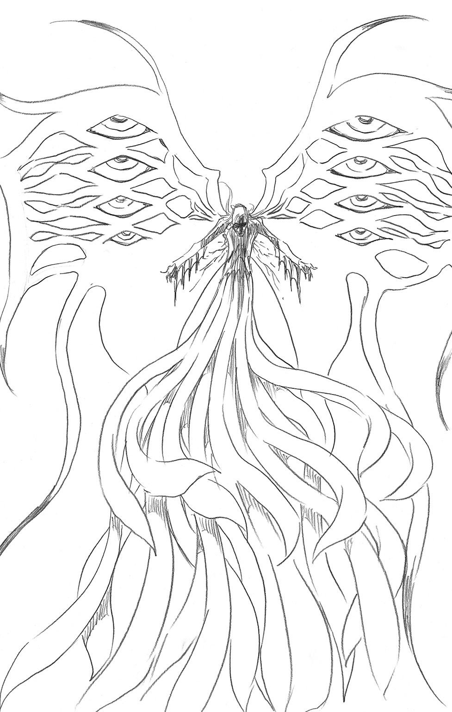
そんな二人の殺し合いを、ピカロ達は羨ましそうに眺めていた。
「楽しそうだなー、シエン」
「まざっちゃダメかな？」
「でも、あのピンク色の髪の子、こっち見てるよ？」
そんな事を呟き合う仲間達に、先刻まで穿界門前で痣城と相対していた『お下げ髪』のピカロが声をあげる。どうやら、ロカが見つかったのでこちらのグループに混じる事にしたようだ。
「あー。あのツンツン頭さんの邪魔しちゃダメなんだって。でも、邪魔しなければ後であの子が遊んでくれるらしいわよ？」
「本当に！」「じゃあ、見てる？」「つまらないよう」「他の子達の所に戻ろっか？」
「あっ、そうだ！ あの髪の長い死神さんは、私達と遊んでくれたわよ？ ええと、ほら、アザシロって人！」「へー」「斬られて遊んだの？」「燃やされて遊んだの？」「羨ましい！」
さして意味もない会話を交わしていたピカロ達だが、そのうちの一人が、黒腔の宙に舞う黒い物体を見つけ、軽く跳び上がりながら手に取ってみる。
「なんだろう、これ」
見ると、それは先刻死神が外した眼帯だ。
その裏側には無数の口のようなものがあり、周囲の霊子を喰らい続けている。
「気持ち悪いッ」
少年は、それを他のピカロに投げつける。
それを皮切りに、鬼ごっこのように眼帯の投げつけ合いが始まったのだが――
彼らの動きは、一斉に止まる事になる。
黒腔の下方。霊子の乱気流から数本の触手が現れ、ピカロ達の身体を搦め捕ったのだ。
「わッ？」「なにこれ!?」「これ、シエンの鎧じゃん！」
触手の正体に気づいた子供達は、死神と剛撃の応酬を続けるシエンに目を向けた。
すると、シエンは相手の攻撃を防ぎながら、こちらに向かって残酷な笑みを浮かべた。
次の瞬間――ピカロ達は、自分の身体から力が抜けていくのを感じ取る。
霊子がシエンに吸い取られているのだと気づいた時にはもう遅く――
ピカロ達は、いつものように楽しいと声をあげる暇すらなく、意識を闇の中に落としていった。
「悪いね......この力を使い続けたら、すぐに僕を構成する霊子が枯渇してしまう」
独り言を口遊みつつ、シエンは更木との戦いを続ける。
あのピカロ達の霊圧が枯渇しても、すぐに他のピカロ達が彼らに霊圧を補充する。
破面百体分の霊圧をゆっくりと喰らいつつ、シエンはそれ以上子供型破面達の事を気にする事はなかった。
「さあ、もっとだ、もっと派手に殺し合おうじゃないか、更木剣八！」
霊圧の枯渇を心配する必要が無くなったシエンは、更に攻撃の手を速めていく。
「言われるまでもねえ、ちったぁ黙って楽しめや！」
その一方で、更木の攻撃の威力が上昇しているのも感じ取っていた。
――面白い。
言葉は不要と考えたのか、シエンはそれ以上何も喋らず――
更木との殺し合いに己の全てを捧げ、戦いの悦楽に己の力を全て委ねた。
過去も、現在も、未来さえも。
彼の心の中に蘇る、ザエルアポロ・グランツとイールフォルト・グランツの記憶。
死の臭いを周囲に漂わせる、戦場と工房。
果たしてこの高揚感は、兄弟どちらの影響なのか。果たしてこの歓びの根源は生前のものか、あるいは虚と化してからのものなのか、シエンは考えようとしたが――
自分と更木の間に満ちる死の臭いを嗅ぎつけ、すぐにどうでもよくなった。
今の彼を動かすのは、自分の死すらも楽しむ、狂気に満ちた欲望だけだった。
力を行使し、行使され、戦場と墓場の狭間で死の淵を覗きこむ。
ザエルアポロとは質が違うが、彼の司る死の形は『狂気』。
狂気ゆえに生まれ出で、狂気ゆえに死に向かう。
敵も味方も、全て等しく巻きこみながら。
空座町 東部
「......オナカスイタ。オナカスイタ！ ペコペコ！ ペコペコ！」
ピカロの一人。球形の異形破面がそんな事を叫ぶと同時に、乱戦の中でピカロ達だけが動きを止めた。
「ああん？ どうした？」
痣城が操る義骸の頭を鬼灯丸で貫きながら、一角がピカロ達の異常に気づく。
一角の身体にもいくつか銃創が穿たれ、普通ならば立って歩けるのもおかしい重傷を負っているのだが、戦い自体に疲弊している様子はない。
十一番隊の矜恃なのか、集団戦においても、他者が闘っている敵を後ろから斬る真似をする者はいなかった。
一方で、痣城にはそういう矜恃が存在しないらしく、一体が囮になっている間に効率良く周囲から銃弾を撃ちこんでくる。
圧倒的に不利な状況にもかかわらず、一角達は三つどもえの戦いの中で優勢を勝ち取りつつあった。
そんな最中、ピカロ達が動きを止めたので、十一番隊士達は何かするつもりなのではと訝しんだのだが――
耳にヘッドホン型の仮面片をつけた少年が、両手を合わせて頭を下げる。
「ごっめーん、おじさん達！ 御飯の時間だから、ちょっとお休みするね！」
「......あぁ？ ......って、はぁあぁ!?」
青筋を立てながら叫ぶ一角を余所に、子供達は手を振って戦場から離脱していく。
「じゃあね！」「楽しかったよ！」「ま た 遊ん で」「Ｑｒｒｒｒｒｒｒ......」
そんな事を言いながら、猛スピードで離れていくピカロ達。
「ちょ、待てコラ！ っざけんな！ 何しに来たんだ手前らはよぉ！」
一角は自らも飛んで追いかけようとしたのだが――
義骸の放った銃弾がかすめ、鼻先から血を滴らせる。
「子供の我が儘に怒ってる暇は無さそうだよ、一角」
弓親の言葉に一角が周囲を見ると、集団戦の構図は一変しつつあった。
ピカロを重点的に狙っていた義骸達が、死神達だけに狙いをつけ始めたのである。
「......しょうがねえ」
頭部の青筋は消さぬまま、斑目一角は隊長である更木と似た笑みを浮かべて鬼灯丸を構え直した。
「この苛立ち、全部ひっくるめて手前が引き受けるって事だよな？ 痣城先輩よぉ......？」
空座町 南川瀬上空
痣城剣八は、一角の言葉を聞いていたが、それに答えようとはしなかった。
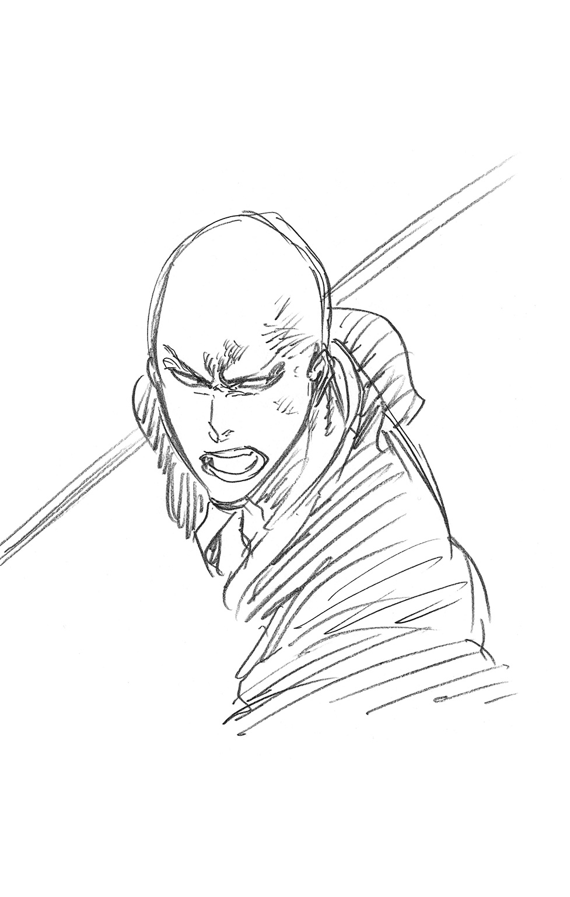
少しずつ町の上空の空気と『融合』しながら、独りごちる。
「......黒腔の中に逃げるとは、厄介な」
彼自身は、黒腔を開く術は持ち合わせていない。技術開発局や、浦原商店という場所から用具を盗めば可能だろうが、空間を安定させる鬼道を扱える者の協力が無ければ、すぐに閉じてしまうだろう。
完全に遮断されれば、痣城の意識は強制的に霊子の総量が多い方に引き戻され、切り放された側の『融合』の力が解除される事になる。
そもそも、瀞霊廷内では黒腔が開いた時点で観測所に動きを察知されてしまうため、瀞霊廷からの脱出手段の選択肢に含めていなかったのだ。
――こんな事ならば、独力で黒腔を開く術を身につけておくべきだったな。
断界への道は開けるが、黒腔は虚達だけが使う特殊な空間だ。
その場所に逃げこまれてしまっては、現状では手が出せない。
――それにしても......ドン・観音寺とかいったか......。
――あの女虚と共に行動していた、無駄に派手な男は何者だ？
――一般人よりは霊力があるようだが、死神でも滅却師でも、先代の死神代行のような完現術者でもなさそうだ。
とはいえ、取るに足らない力であり、痣城は悩むだけ無駄と判断した。
――ならば、今のうちに『融合』の範囲を広げておくとしよう。
一度融合してしまえば、バイクや義骸のように遠隔操作する事もできるが、最初の『融合』を行うには、ある程度近づく必要がある。
力の届く範囲は、雨露柘榴が融合範囲を広げれば広がるほど大きくなる為、今は雨露柘榴と空気の融合に力を注ぎこんだ。
――だが、やはり少し時間はかかるな。
――霊子だけの尸魂界と比べ、器子と融合するのは手間がかかるようだ。
尸魂界と現世の物質構成の差を感じつつも、落ち着いて力を広げ続ける痣城。
と、彼の意識の端が、妙な動きを感じ取った。
集団戦から離れたピカロ達が、空に集結しつつあるのだ。
てっきり虚圏に逃げるつもりだと思っていた痣城は、彼らの奇妙な動きを追ったのだが――空中に次々と黒腔が開き、百人近い子供達が集まり始めたではないか。
そして、彼らが、空座町の上空の半分ほどを覆った時点で、彼は寒気を感じた。
人の姿をとっていたならば、確実に背中に汗を滲ませていたであろう悪寒が、警告音と化して意識そのものを震わせる。
――鬼道で......あの連中を焼き払わねば。
そう判断した時には――既に遅かった。
空座町 上空
「何人か足りないよ？」
「シエンの所。その子達がすっごくお腹すいてるみたい」
「たくさん遊んで貰ってるのかなぁ......」
「ていうか、この町で一番霊子が濃いのって、あそこらへんの空だよね」
「なんで空なんだろう？ 普通はお寺とか神社なのに」
ピカロ達は異常なスピードで百体前後の人数を集めると、同じぐらいの速度で空座町の空に拡散した。
彼らは知らぬ事だが――その『霊子の濃い部分』というのは、まさに痣城が融合している部分だった。
「でも、ここより、さっきの死神さん達の方がよくない？」
「ダメだよ、遊び道具を壊しちゃ」「えー」「でも死神さんの方が美味しいよきっと」
彼らの中で議論が巻き起こりかけるが、眼鏡をかけた子供型破面が呟いた。
「わ、私......あの人達、食べたくない」
「なんで？」
「何人か......庇ってくれたから」
眼鏡型の仮面片をかけたピカロは、確かに覚えていた。一度死神に喉を裂かれて復活した後、何か膨大な力が周囲に襲いかかったのだが――別の死神達の中の数名が自分の前に立ち、炎や雷による波状攻撃を受け止めたのだ。
あるいは、それは偶然だったのかもしれないが――少なくとも、ピカロの中にはそうした結果が情報としてすりこまれる。
ピカロはピカロで、死神を敵とは考えない。
彼らにとって世界とは、自分達の基準で『いい人』か否かに分かれるだけなのだ。
「ふーん。じゃあ、『いい人』達なんだね」
「それじゃ、食べない方がいいね」「もったいないもんね」
「ネルも、生きてるといいな」「あー、こいつ、絶対ネルのこと好きだぜ！」
「ち、違うよ！」「て れ てる」「Ｗｒｒｒｒｒｒｒｒｒｒｒｒｒ......」
そんな子供じみた会話を紡ぎながら、霊圧の濃い宙域を外側から取り囲むピカロ達。
痣城の刃も届かぬ位置から、痣城と融合した空気そのものを包囲し、彼らの持つ、もう一つの力を覚醒させた。
彼ら以外には聞こえぬ『音』を互いに交わし合い、中心に霊圧のこもった声を通過させる。音は中心部で重なり合い、打ち消し合い――その場に高密度の『何か』を造り上げようとしている。
そして、それが形を成そうとする瞬間、子供達は仕上げとばかりに一際強い霊圧のこもった声を、まだ姿を現さぬ『何か』に向かって響かせた。
「「「「「『――菓菓楽土』！」」」」」
そして、彼らに囲まれた範囲から、完全に空気の流れが止まり――
一瞬の間を置いて、中心に黒い球体が生み出される。
ブラックホールと呼ばれても違和感がない、光を反射しない漆黒の『それ』は、凄まじい勢いで回転しつつ――己の中に、ありとあらゆる霊子を吸いこみ始めた。仮に浮遊霊や虚などがいれば、霊圧を全て『それ』の中に吸いこまれて消滅していたかもしれない。
対照的に、ピカロに囲まれた範囲以外では、何一つ変化は起こらず、平穏そのものといった空気が漂っていた。
自分達を境目として、現世を隔絶してその内部を食い尽くす。
まるで、子供が鋏で紙工作をする要領で、空間を自分達の好きな形に切り取っているかのようだった。
尸魂界 技術開発局
現世からのデータを見ながら、涅マユリがつまらなそうに呟く。
「推測通りか。やはり、もうあの破面の群を優先して研究する必要は無さそうだネ」
「ありゃ、霊子を吸ってるんですかね」
興味深げに映像を眺める阿近達に、マユリが淡々と答えた。
「霊子を送信できるなら、当然ながら奪う事も可能だヨ。霊子の吸収に関しては、尸魂界の斬魄刀にも、退紅時雨をはじめとしていくつか例があった筈だがネ」
そんな事を言った後、涅マユリは別のデータに目を通し、口元をニイ、と歪ませた。
「さてさて、痣城剣八とやらが今の『食事』でどうなったのか、じっくりと観察を始めるとしようじゃないかネ」
子供型破面達の中心、空座町の上空に黒い球体が出現した瞬間――彼の悪寒が、現実となって目の前に現れた。
――なんという不覚だ。
――まさかこいつらが、このたぐいの能力を―――
雨露柘榴の力に付随する『代償』の一つ。
融合した霊子そのものを強制的に吸収される類の攻撃を喰らうと、通常の者が喰らうよりも数十倍の痛手となって、痣城の魂魄全体を蝕むという点。
その代償が不安要素だったからこそ、痣城は弓親から『瑠璃色孔雀』を奪ったのだが、この場で新たな吸収系能力に鉢合わせした事は、慢心による油断以外の何物でもなかった。
しかし、痣城には、それを後悔する暇すら与えられない。
ブツリ、と、彼の世界が暗転する。
まるで操り人形の糸が切れたかのように――
痣城剣八の意識は、一瞬で闇の奥底へと引きずりこまれた。
十八章
それは、何百年前の事だったろうか。
尸魂界において、貴族同士の権力争いが今以上に激しい時期があった。
権力争いに負けた者達は、様々な罪を着せられ――『処刑場』にて、捕らえていた虚にいたぶり殺される運命が待っていた。
虚に勝てる力を持った者達の場合、地獄蝶無しで断界に追放される事もあったという。
痣城家の一族も、本来ならば、そうした追放刑を受けていたのかもしれない。
十数代前に、剣術と鬼道に優れた一族として、その力のみで貴族の地位を手に入れた痣城家だったが――地位に安寧した一族は堕落し、次第に鬼道や斬魄刀の力も薄れていった。
高い力を持つ武闘派の貴族として恐れられていたのも遠い昔。やがて斬魄刀の始解すらろくにできなくなった一族の『力』自体を恐れる者は誰もいなくなっていた。
だが、痣城家は、力と引き替えに、過去に手にした遺産を元手に不動産業や金貸しとしての事業を興し、貴族としての地位は頑として護り続けたのである。
『力』の代わりに、痣城家の『財力』に怖れをなす人々。
その怖れを利用し、痣城家の人間達は更に事業を拡大し、ますますその力を蓄えた。
死神の矜恃を忘れ、他人を蹴落として金を稼ぐ事にのみ勤しむ日々。
まだ幼い少年は、それが自然な事だと思っていた。自分が何を成さずとも世界は回り、両親が使う様々な権利が、やがて自分にも巡ってくるのだと。
だが、少年には、姉が一人存在した。
彼女だけは、そうした一族とは異なる気質を持ち――優しく、そして痣城の名に誇りを持っていた。
過去に一族が打ち立てた武勲の話を少年に何度も繰り返し、一緒に護廷十三隊を目指そうと言う姉が、少年は少し疎ましかった。
危険な虚と闘わずとも、自分達の代わりに誰かがやってくれるだろうに、何故彼女はわざわざ自分から死神になろうとするのだろう。しかも、こちらまで巻きこんで。
そんな事を直接訴えた少年に、姉は言った。
――「お金はいつか無くなっちゃうかもしれないけど、誇りは無くならないよ」
――「あなたは、私よりもずっと強い力がある」
――「だから、双ちゃんはきっと、強い死神になれるよ」
――「ご先祖様みたいに、強くて立派な死神に」
姉はそんな事を言いながら、少年に笑いかける。
金汚く生きる一族の中で、彼女だけが異質であり、清廉たろうとしていた。
少年は、そんな清廉さを自分にも求めてくる姉が嫌いだったが――彼女の笑顔だけは、家族の誰よりも好きだった。
その笑顔が見続けられるなら、死神とやらになってやってもいいかもしれない。
幼い少年は、そんな生意気な夢を抱き、見よう見まねで剣の振り方を学んでいく。
――「しょうがないな。僕も死神になってやるから、姉さんは足手纏いにならないでよ」
強がる少年に、姉は優しく微笑んだ。
――「双ちゃんなら、ご先祖様よりも強くなって、みんなのお手本になれるよ」
姉の微笑みが心に刻みこまれ、木刀を振るうのもおぼつかない年頃の少年は、幼いなりに更に努力を続けていった。
姉が望むような、誰よりも強く、高潔な死神になろうと。
しかし、その努力は水泡に帰す事になった。
痣城家の財を狙った複数の貴族が結託し、尸魂界に対する反乱という罪をでっちあげたのだ。
死神としての純粋な力を失い、鍛錬を怠っていた痣城家の面々はあっさりと捕らえられ――真央霊術院に通っていた姉もすぐに捕縛された。
無論、少年も例外ではなく――裁判の結果、一族郎党の処刑が決まった。
処刑の為の穴に連れこまれ、虚と闘わされる痣城の一族。
空を見上げると、穴の上では痣城の一族を嵌めた貴族達が、ゲラゲラと笑いながら罪人達が苦しむ様を見物している。
少年が穴に連れこまれるのは最後のようで、処刑場に隣接する牢の中で、震えながら家族が処刑されていく様を見せつけられていた。
虚は一匹だけだったが、金勘定ばかりやっていた一族が一対一で勝てる筈もなく――一人、また一人と虚の餌食になっていく。
そして、いよいよ残されたのが少年と姉の二人だけになった時――何故か、二人同時に牢の中へと連れこまれた。
手錠と足枷が外され、二人にはそれぞれ浅打の斬魄刀が手渡される。
まさかこれで姉と殺し合えと言われるのではないかと思い、少年は全身を凍らせた。
実際、貴族達からは、最後に残った兄弟を殺し合わせて賭けをしようという案も出ていたのだが――真央霊術院の優秀な生徒と、刀もろくに持てないような少年では賭けにならぬと却下されたのだ。
その代わりとなる『余興』の内容を、執行人の男が穴の上で高らかに唱う。
――「かつての英雄と呼ばれた痣城家には、既に我々が尊ぶべき力は残されておらず、継続させるに値せぬ血筋と、ここに実証致しましょうぞ」
――「痣城の血の結集にして最後の血脈でもある二人の姉弟。二人がかりでも虚一匹滅する事ができず、怠惰な日々を送った己と祖先を呪いながら死んでいく様こそが、痣城の力が没落した証明に他なりませぬ！ とくと御笑覧あれ！」
何を言っているのか、少年には理解できなかった。
執行人の男も、痣城家を嵌めた貴族の一員。
この場に味方などおらず、奸賊の群の下卑た笑みが、少年と姉を見下ろしていた。
笑いながら、見物人の貴族達が痣城の一族を、自分達姉弟を罵る言葉を吐きかける。
裁判の時も、散々『醜く汚れた一族』と糾弾され、実際に、一族が行ってきた後ろ暗い悪事も公開された。
――違う。
――姉さんは、姉さんだけは違うんだ。
――気づけよ、気づいてくれよ、姉さんだけは違うって、なんで解らないんだ。
金絡みの汚濁に塗れた一族の中で、姉だけは清廉潔白だった。それを少年は誰よりも知っている。だが、彼にはそれを弁舌で否定する力も、彼女を武によって助け出す力も無い。
しかし――絶望に満ちた顔をして震える少年に、姉は振り向き、笑った。
――「大丈夫だよ、双ちゃん」
――「私が、絶対ここから出してあげる」
次の瞬間、少女は顔から笑みを消し、真剣な表情で穴の上の執行官に問い質した。
――「なれば、私達が虚を打ち斃せば、一族に祖先と同じ力が宿り続けるという証となりましょうぞ！」
――「貴殿の述べた『継続するに値する血脈』たる証を立てたその暁には、何卒我らの延命を聞き入れられたし！」
頭上からの嘲笑を全て跳ね返し、黙らせる程の――強い言葉だった。
執行人の男はしばし沈黙した後、『よかろう。虚を滅ぼした暁には、我ら一族の名において、四十六室に助命を進言しよう』と、表情を消して呟いた。
結果として――少女は、よく健闘したと言ってよいだろう。
少年の眼に映るのは、身体に無数の傷を負った巨大な虚。
そして、そんな虚の大顎に腹を咥えられ、身体をくの字に折り曲げる姉の姿だった。
助けに行こうと浅打の刀を握ろうとするが、恐怖に全身が搦め捕られる。
そんな少年の方を、まだ息のある姉が振り向いた。
見ないでくれ、と、少年は心の中で叫ぶ。
死神になると姉と約束したのに。
強い死神になれると期待されたのに。
足一つ動かせない自分を、どうか見ないでくれと少年は泣きながら首を振った。
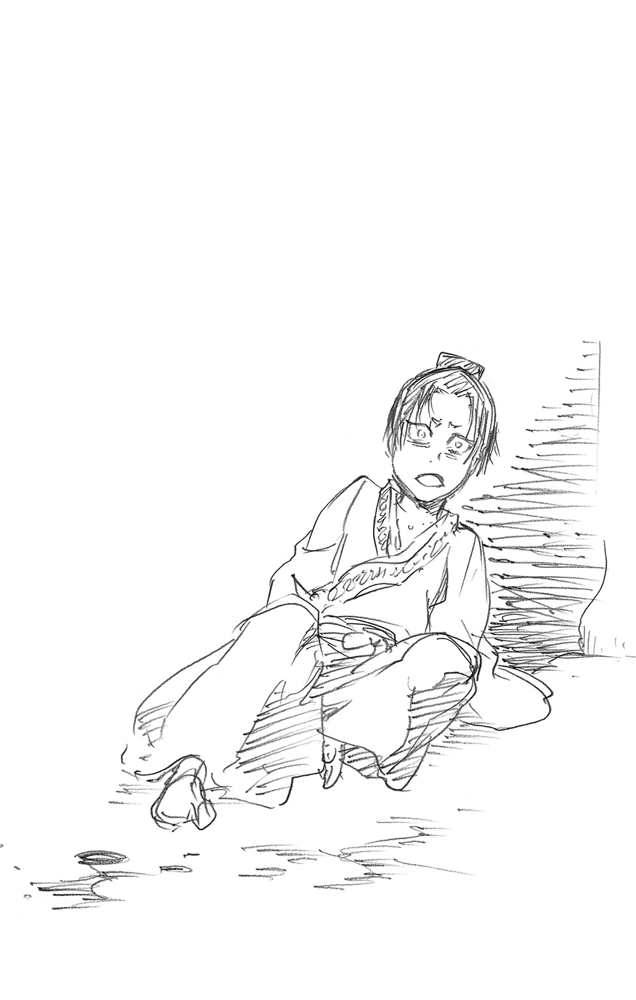
しかし、残酷な姉は、少年の顔を見て、また笑った。
いつもと同じような笑みで、少年を一言も責める事なく――
――「強い死神になってね、双ちゃん」
と、ただそれだけ呟いた後、両手で力無く印を組みつつ、口元で何かを詠唱した。
次の瞬間、少女の身体と虚の顔面が激しい業火に包まれる。
少年の絶叫は喉の奥で潰れ、声にすらならなかった。
姉は、自分が本来扱えぬ鬼道、『双蓮蒼火墜』を詠唱する事で暴発させ、自らの身体ごと虚を破裂させたのである。
暴発の威力は凄まじく――姉の身体も、虚の上半身も消し飛び――少年の脳裏に、最後の微笑みだけが焼きつけられた。
どれだけの時間が過ぎたのだろうか。
長い長い少年の絶叫が終わり――脳髄が、ようやく人としての思考回路を取り戻した。
だが、膝を落とした少年は、姉の死を受け入れる事ができず、ただ、考える。
――噓だ。こんなのは噓だ。
――姉さんが死んで、僕だけが生き残る筈がない。
――姉さんだけは、汚れてなかった。綺麗なままだった。
――なんでだよ。なんで僕じゃなくて、姉さんが......
そんな事を考える少年に、現実は残酷な言葉を突きつけた。
――「最後に残った少年が、泣くのを止め、闘う事を決意したようだ。賞賛を！」
進行役の男の言葉の意味が理解できない。
虚はそこで半身を失って消滅しかけている。超速再生が起こる気配もない。
闘うとはなんの事だ？ 虚との闘いは終わった筈だ。もっとも自分の望まない形で。
そんな少年の疑念と、生存への希望を打ち砕く形で、執行役の男が笑いながら告げた。
――「さあ、次の虚を穴に放て！」
少年は、その時どんな顔をしたのか、自分でも解らない。
ただ、こちらを指さして笑う観客達の笑顔だけが目に映る。
一族郎党、使用人に到るまでの三四二名を処刑した後でもなお、偽りの罪を痣城の名に被せた貴族達は、飽きたらずに嗤い続けている。
絶望した自分を笑う貴族達の顔は、少年に一つの事実を押しつけた。
姉は、無駄死にをしたのだと。
命をかけて少年を護ろうとした姉の笑顔は、全ては、貴族達の無駄な余興の一つとして消費されたに過ぎないのであると。
新しく穴に連れこまれた巨大虚の牙が、呆けた少年の顔に迫り――
その瞬間、少年の中で何かが千切れる音がした。
――「おい、あの小僧はどうなった？」 ――「あの虚が顔を上げんから、解らんな」
――「いないぞ」 ――「一口で食われちまったらしい」
――「なによ、つまらない」 ――「悲鳴はどうした！」
数分後――貴族達は、姿を消した少年が虚に食われたものと判断した。
呆気ない幕切れだと、貴族の一人が肩を落とした瞬間――
落とした肩と腕はそのまま止まる事なく、観覧席を転がって穴へと落ちた。
――「え？ あ？」
穴の途中に張られた遮魂膜が二本の腕を蒸発させ、何事かと見上げた虚の顔が見える。
だが、その口元には少年の返り血一つ見られない。
両腕を失った貴族は、自分の身に何が起こっているのかも理解できぬまま、バランスを崩して穴へと落ち、絶叫を響かせる暇すらなく遮魂膜で蒸発した。
悲鳴が貴族達の間に広がり、我先にと見物席から逃げだそうとする貴族達。
だが、足が動かない。
見ると、自分達の足に、床の石がまるで生き物のように絡みついているではないか。
執行人は何が起こっているのか解らず、斬魄刀を抜いて周囲を見る。
すると、処刑場である深い穴の中に目をやったとき、一つの事に気がついた。
穴の底近く。壁の一部に穴が空いており、その穴の淵が生き物のように蠢いているという事にだ。同時に、殺気石を避けるかのような形で、遮魂膜の少し上に別の穴が空いているのが見える。
更に周りを見渡し――動けずに悲鳴をあげている貴族達の側に、喚きも騒ぎもしていない少年が一人で立っている事に気がついた。
執行人は、その少年が先刻まで穴の底で泣いていた痣城家の人間だと気づき、慌てて斬魄刀を構え、始解せんとしたが――
解号を紡ぐ声の代わりに出てきたのは、舌を切り裂く刃だった。
そして、貴族達にとって、懺悔と後悔の時間が訪れる。
短くとも永い苦しみと痛み、果てしない絶望を味わいながら――
彼らは、決して最後まで許される事はなかった。
処刑完了の報告がない事を訝しんだ当時の隠密機動総司令は――自ら確認に出向き、その結果として、信じがたいものを見た。
拷問や処刑など、尸魂界の暗部を司る隠密機動総司令。その彼が、後に『もっとも理解しがたく、凄惨な現場だった』と語る光景がそこにあった。
血と臓物の臭いが周囲を支配し、命の火を残している者は、穴の底で蠢く一匹の虚だけ。
貴族達の凄惨な死体は、人の形は疎か、正確な被害者の人数を数える事すら困難に思え、既に何人かの遺体は霊子の塵と化し、尸魂界の大気の中に拡散しつつある。
一人一人が全く異なる方法で殺されたかのように、死体に統一性が無かった。
いったいここで何が行われたのか、推察する事さえ憚られる。
隠密機動総司令は事態を即座に四十六室に報告。結果として、『処刑に使用した虚が、なんらかの方法で罪人達もろとも貴族達を殺した』という形に落ち着き、体面を保つ為に、生き残った虚は即座に処分された。
そして、四十六室はこの処刑場の廃棄を決定し――忌まわしき遺跡として、遠い未来まで瀞霊廷に残り続ける事となる。
一方――流魂街を歩く少年は、両手で顔を覆いながら、思う。
考えつくあらゆる方法で見物人の貴族達を殺し尽くしたが――心に救いは訪れない。
復讐は何も生まないと瀞霊廷の伝奇草紙に書かれていたが、あれは真実だったのだ。
あんなに殺したのに、あんなに苦しめたのに、全ては無駄な行為だった。
もしかしたら、あの貴族達の中に、一人は自分達を笑わなかった者がいたかもしれない。なんとか救う手はないかと考える貴族がいたかもしれない。そう思うと心が痛むが、心を痛めたところで誰も生き返りはしない。少年の姉が帰ってくる筈もない。
――僕は、どうすれば、どうすればいいんだ。
全てを失った少年は、引き替えに手に入れた一つの力と、『強い死神になれ』という姉の言葉だけを手に、尸魂界を彷徨った。
数十年後、刳屋敷剣八に『決闘』を望むその日まで――
彼は、己の存在を隠しながら、ただひたすら世界を彷徨い続けた。
心の内から湧き上がる、手に入れた力の忌々しい嗤い声を聞きながら。
現在 断界 穿界門内
「キヒヒヒ！ そろそろ起きなよ剣の字！ キハハハハッ！」
身体の内側から聞こえるような笑い声が、痣城の頭上から響き渡る。
目を開けると、そこは穿界門の中だった。
先刻、痣城自身が鬼道の重唱を行って破壊しつくした場所だ。
自分の身に何が起こったのかは覚えている。
あの忌々しい虚達が、自分と融合した霊子の一部を奪い去っていったのだ。
常に自分が満ちている瀞霊廷の中ならば問題なかったが、こうして意識を瀞霊廷の外部に集中させているまさにその部分を強制的に排除された事で、生身でいう脳震盪に近い状態に陥っていたのである。
空座町の上空に融合させていた部分は根こそぎ吸い取られ、穿界門の内側まで強制的に戻されたのである。
自分が現世に降りたってから行った『融合』が無駄になったという事に苛立ちを覚えたものの、すぐに気持ちを切り替え、無表情に雨露柘榴に問いかける。
「......どれだけ、意識を失っていた」
「現世の時間で言うなら、三十秒ってとこかな！ キヒヒヒッ！」
「......貴様の仕業か。今の夢は」
痣城は、脳震盪を起こしている間に過去の夢を見ていた。過去の記憶そのものと言ってもよいだろう。あれだけハッキリとした長い夢を三十秒で見たとするならば、それは特殊な力が働いたからに他ならない。
「なんのつもりだ？」
「キハハ！ 別に？ 私のやる事に意味なんかないって解ってるでしょ？ キヒヒッ！ ていうか、あの頃は剣の字もやんちゃだったよねー。私に『お前がもう少し早く助けてくれればッ......！ 姉さんは......姉さんは！』......って、凄い形相で摑みかかってきた事もあったっけ！」
虚によって『処刑』されかけた瞬間――彼は、強制的に斬魄刀の世界へと引き入れられた。己の心の内側だという話だったが、時間すら隔絶した空間で、少年は雨露柘榴の力を彼女本人の手によって与えられたのだ。
過去の自分を思い出しつつ、忌々しげに吐き捨てる。
「......昔の話だ」
「私はアンタなんだからね。私が早くアンタを助けなかったのは、アンタのせいだよ？ キハハハハッ！」
「......その話は、前に一度しただろう」
睨みつける痣城に、雨露柘榴は尚も語り続ける。
「心の何処かでは、思ってたんでしょ？ 姉ちゃんがなんとかしてくれるってさ。この期に及んで、あんたの大事なお姉ちゃんが全部全部虚をやっつけてくれるなんて、淡い希望を抱いちゃってたんでしょ？ あんたにムダに闘う勇気があれば、私ももうちょっと早く顔を出してたかもね！ 私、ムダが好きだからさ！ キハハハハ！」
痣城は、挑発とも取れる女の言葉を無視した。
三十秒程度ならば、いくらでも取り返せる。
だが、軽く見て更に時間を失うわけにはいかない。
彼は再び感情を消し去り、壊れかけた穿界門の扉を修復しながら開け広げた。
すると、そこには――三十秒前とは、全く違う光景が広がっていた。
空座町 馬芝
それは、何の霊力も持たぬ一般人から見れば、雲が所々に散在している青空にしか見えなかっただろう。突然丸い波紋と共に消え去った雲が一つあり、先刻よりも幾分多く青空が広がっている。
だが、霊力のある者からすると、それは全く違う空に見えた。
空の所々に亀裂のように穴が開き、そこから黒い霊子が漏れ出している。
何らかの自浄作用だろうか、穴はすぐに塞がろうとするのだが――
新たな衝撃音が亀裂の中から聞こえてきて、別の空に新たな亀裂が生まれる始末だ。
「な、ななななな、なんなのだこの空は!?」
空座町担当の死神である車谷善之助は、胸ぐらを摑まれながら変わり果てた空を見上げていた。
胸ぐらを摑んでいたのは、十一番隊の平隊士である荒巻だ。
彼は他の十一番隊とはぐれてしまい、手近にいた死神を捕まえて道案内をさせようとしたのである。
「お、俺が知るか！ つーか、手前この町の担当だろ！ なんでどこで何が起こってんのか把握してねえんだよ！」
「馬鹿を言うな！ 突然穿界門が爆発したと思ったら、貴様ら十一番隊がワラワラと出てきて、その、怖かったから隠れてたに決まっているではないか！ 大体この町に何の用なのだ貴様ら！ 私の担当地区を荒らす気ならば容赦せんぞ！」
「なんで担当なのに俺らが来るって話ぃ聞いてねえんだよこのイモ野郎！」
「なにを!? だ、黙れこのチョビ髭め！ うっかり伝令神機を落としただけだ！ そもそも、なんで誰も彼も私の顔を見てイモという単語を思い浮かべるのだ!?」
「知るか！」
そして、この日一番どうでもよい争いが起こりかけたのだが――更に大きな衝撃音が空から響き、荒巻は冷や汗を搔きつつ、アフロヘアを毟ろうとしていた手を止めた。
「つーかよ......俺としちゃ、解るのは一個だけだ」
「あの空のヒビを作ってる、とんでもねえ霊圧はよ......片っぽは、うちの隊長だ」
空座町 上空
「......なんだ......これは」
穿界門を抜けた痣城が見たのは、現世と黒腔の境界が崩壊しかけている光景だった。
自分が意識を失っている間に、何があったというのか。
確認しようとした痣城の顔に、僅かに表情が浮かぶ。
驚愕の色が、ほんの僅かに彼の瞳を過ぎったのだ。
「この霊圧......馬鹿な」
彼はただ、自分の霊圧知覚能力に疑念を抱いた。
空のヒビから漏れる霊圧は、確かに更木と、シエンと名乗った虚のものだろう。
だが、その霊圧の濃さが桁外れであり、とても、先刻出会った時と同一人物だとは思えない。更木が眼帯を取ったのだとしても、推測を遥かに上回る霊圧だ。
痣城は小さく歯嚙みをした後――己の身体を空気に溶けこませ、ゆっくりと空のヒビへと『侵食』を開始する。
先刻見せられた『夢』の影響か、心の中に、僅かなブレを抱えながら。
そして、そんな彼の背に、雨露柘榴は『キヒッ』と耳障りな哄笑を漏らす。
心情を歪んだ笑みの裏側に隠しつつ、彼女は尚も変わらず、痣城剣八の刀としてその力を貸し与え続けた。
痣城双也の向かう先が、勝利だろうと破滅だろうと構わないとでも言いたげに。
黒腔内
時間は、剣八が眼帯を外すより少し前に遡る。
仄暗い空間の中を走る、一台の高級外車。
その上には、特急電車と正面衝突する寸前だった観音寺一行の姿があった。
「こッ......ここは一体!? ピンチを前にして、ついに私の眠れる力が目覚め、トワイライトゾーンへの扉が開いてしまったとでもいうのか!? アンビリーバボー！」
騒ぎ立てる観音寺を無視しつつ、石田がロカに対して口を開く。
「礼を言わないといけないな。助かったよ」
淡々と告げる石田だが、礼もそこそこに状況を確認した。
観音寺の車は現在、虚達が使う移動用の空間――『黒腔』の中を走行している。
普通ならば霊子の乱気流に吞まれて、この中を半永久的に彷徨う事になるのだが――
ロカが『糸』を幾重にも束ね合わせ、ハシゴ状に作った道の上を走っている状態だ。
「生身でここに来るのは、あまり良い気分じゃないね」
「申し訳ありません......」
「ああ、いや、君のせいじゃないよ。悪かった」
霊体にならない限り、尸魂界などの異界には辿り着けない。この断界にいるだけでもあまり良い影響があるとは思えなかった。
すると、落ち着きを取り戻した観音寺が、車の速度を落としつつロカと石田の顔を見る。
「......もしや、我々が助かったのは、ロカ嬢のお陰なのか？」
「いえ......助かったとは言い難い状況ですが......」
ロカが申し訳なさそうに俯くと、観音寺は車を停め、彼女の手をガシリと握りながら礼を言った。
「ファンタスティック......！ 感謝と共に謝罪をしなければならんな、ロカ嬢よ！ 助ける側の立場である私が、逆に助けられてしまうとは......ヒーローとして最大の不覚......」
「そんな、私は何も......」
「つまり......君もこれで、助けられるだけではない、誰かを助ける力を持つヒーロー、いや、ヒロインの仲間入りというわけだ！ 時空を移動する能力......素晴らしい！」
「え、ええッ!?」
予想外の言葉に、ロカは驚き、石田は無言のまま眉を顰める。
「大丈夫、空座防衛隊はいつでもウェルカムだ！ 君はその黄金の糸にちなんで......いやまて、ゴールドは既に先約があるのでな......うむ！ 君のその白い仮面と黄金の糸を組み合わせ、カラクラプラチナムという称号がぴったりだ！ 君も今日から、空座防衛隊の一員として共に闘おうではないか！」
「えッ......は、はい！」
「はい、って......よく解ってないだろ君」
勢いに圧されて返事をしてしまうロカを、石田が窘める。
そんな石田に、観音寺は告げた。
「はっはっは、ボーイ。拗ねるな拗ねるな。安心したまえ、君にもちゃんとカラクラスカイブルーの称号を用意してあるとも」
「だから、勝手にいかがわしい組織に入れないで頂けませんかね！」
「馬鹿な!? 私がリーダーを務めるのだ、いかがわしさなど皆無だぞボーイ！ 何が不満だというのだ!? もしやネイビーブルー派かね!?」
「違います！ 大体、いかがわしくないというには貴方の服のカラーコーディネートは派手過ぎる！ もっと清廉さをイメージさせる青や白を多用すべきです！」
売り言葉に買い言葉が、何故かずれた方向に流れ始める。
「ノー！ 君のセンスは尊重するが、その類の色だけを使っては、迷える子供達が私を見つける事ができんではないか！」
「......反論したらこっちが悪者になりそうな理由をあげないで下さい！」
電車の恐怖が頭から離れたのか、緊張がほぐれると共に冗談にしか思えない内容で言い合う二人だったが――やがてどちらともなく収まり、観音寺は改めてロカに向き直った。
「と、こうして無事にトークバトルをヤングボーイと繰り広げられるのも、全てロカ嬢のお陰だよ。本当にサンクスだ。これからも、空座防衛隊の仲間として頑張ろうではないか」
「......なか、ま」
心の底からの言葉を伝える観音寺を見て、再びロカは言葉を詰まらせる。
そんな彼女の微妙な変化には気づかず、観音寺は尚も言葉を続けた。
「安心したまえ、とりあえず、君があのバッドスピリッツ達から狙われないように、私がこう、ビシっとだな......」
「いえ......もう、大丈夫です」
「何が大丈夫だというのだ!? まだあのバッドスピリッツ達の気配は消えていないぞ！ この謎の空間内でも感じられる程だ！」
何故か立ち上がり、マントを翻しながら左右を確認する観音寺。
そんな彼に、ロカはどこか悲しげに微笑みながら言葉を紡ぐ。
「もう、いいんです......私の事で、これ以上貴方達を危険にさらすわけにはいきません」
「またその話か、レディ。気にする事はない。何度も言うが、これは私の我が儘で......」
言葉を紡ぎかけた観音寺は、途中で口を閉ざす。
俯いた彼女の目に、薄く涙が浮かんでいる事に気がついたからだ。
「そんなに......優しい言葉をかけられているのに......色々な事を......私に教えてくれたのに......私には貴方に返せるものがないんです」
そして、心底悔しそうに肩を震わせ、膝の上で握った拳に涙が落ちる。
「こんなに嬉しいのに......生きていてよかったなんて思えたのは初めてなのに......それでも私は......やっぱり解らないんです。自分が結局何をすればいいのか......。どうやってこの恩に報いればいいのかも......」
その言葉を聞いて、観音寺は真剣な表情で、一人の女性に向かい合う。
「君がやりたいことをやりたまえ、レディ。そして、私に恩を返してくれると言うのなら、その寂しげな顔を笑顔に変えてくれれば、それで十分だ」
「......私は、貴方達にとって敵のようなものです。空座防衛隊というのも......私達のような虚から町を護る機関なのでしょう？」
「誤解だ。確かに町で暴れるバッド・スピリッツを撃退する事はある。だが、ユーのように何もしていないスピリッツを退治するわけではない」
やはり――観音寺の言葉は、どこまでもロカにとって優しかった。
観音寺は決めポーズを取りながら、テレビでよく使うフレーズを口にする。
「......『スピリッツ・アー・オールウェイズ・ウィズ・ユー』......私の隣に君達がいるように、君達の隣にはいつも私のスピリッツがあると思ってくれたまえ。つまり、君も私も一人ではないのだよ！」
自分だけが特別なのではなく、彼は、自分と同じような境遇の者を見れば、同じように救おうとするのだろう。だからこそ、そうした他のまともな誰かと、自分のような存在を同列視される事がロカには辛かった。
「それでも、私は虚なんです......！ 貴方達にとっては害悪なんです！」
「さっきも言った筈だ、ロカ嬢。自分を簡単に悪だなどと決めつけるものではない」
「でも！ 私のやりたい事が......人を殺して、魂を喰らう事だったらどうするんですか！」
矛盾を突きつけるロカに、観音寺は一瞬だけ眼鏡の奥の目を伏せ――それでも、彼は真摯に答えを返し続ける。
「もちろん、人々を救う為に、私は君を止めるだろう！」
ハッキリとした答え。
しかし、それは決して、諦めでもなかった。
「だが、止める事と、全てを拒絶し滅ぼす事は違う！ 私は確かにヒーローだ！ しかし、悔やまれる事にゴッドではない！ 餓えたライオンを前にして、草食獣になれなどと傲慢な言葉を吐く資格などないのだよ......」
「観音寺さん......」
「しかし、しかしだ！ 人を傷つけずとも生きられる術があるのならば、私はあらゆる協力を惜しまないと約束しよう！ ユーが何かに操られているのならば、最後までユーの心を取り戻す事を諦めはすまい！」
運転席からステッキを取り出し、その柄で帽子の縁をクイ、と持ち上げながら黒腔内に声を響かせる観音寺。
「ヒーローたる者、たとえどんな困難な道だろうと、助けを求める者の前から逃げる事だけはできないのだよ！ ......だから、どうか重ねてお願いだレディ。『自分を見捨てろ』などという願いだけはしないでくれたまえ」
観音寺の顔を見て、ロカは暫し沈黙する。
実際、『糸』を虚圏に繫げている限り、霊子の補給は可能だ。
人や整を喰らう必要などないのだが、それでも、彼女は罪悪感を払拭できずに観音寺に問いかける。
「どうして......ですか。どうして虚の私に、そんな言葉をかけられるんですか......？」
ロカの言葉に、観音寺は珍しく表情を暗くした。
だが、それでも彼は、問いから逃げずに答えを返す。
「私は......かつて多くの虚を生み出した」
「えっ......？」
語られるのは、普段の彼には似つかわしくない、懺悔と後悔の言葉だった。
「自分勝手な浄霊法で、ソウルを救っていると信じながら、多くの虚を生み出したのだ」
「......」
「そんな事も知らず、マイ一番弟子の一護が虚を斬った時、『モンスターを退治した』などと一人で浮かれていたのだ......」
――あのテレビ収録の時か。
石田には心当たりがあったが、敢えて観音寺の言葉に口は挟まなかった。
「愚かな道化と笑われて当然の私を、それでもマイ一番弟子は『ヒーロー』と呼んでくれたのだ。彼の心意気に報い、過ちを償う為にも、私は本当のヒーローで在り続けなければならんのだ！」
「観音寺さん......」
「いいかねレディ！ ヒーローとは、人間の味方でも、バッド・スピリッツの味方でもないのだよ！ ヒーローとは！ 全国の子供達と、悲しい顔をしている者の味方なのだ！」
そこまで力強く言い切った後で、観音寺は先刻までと同じように、相手を安堵させる為の笑みを浮かべながら頷いた。
「そして、ユーは悲しい顔をしていた。私が君を守るのに、他に何か理由が必要かね？」
自分が万能ではないという事を、そして自分の犯した過ちを告白した観音寺。そして、それでも尚、他人の為にヒーローで在り続けようとしている彼を見て、ロカは、目の前の男が本当に強い人間なのだと理解した。
暫く沈黙した後、彼女は涙を止め、ゆっくりと顔を上げる。
「私も......貴方のように、笑顔で自分を受け入れられるんでしょうか」
「当然だ！」
「道具として生み出された、私がですか？」
「君が自分を道具だと思いたいと言うのなら、私はそれを尊重しよう！ だが、どうせなら世界一グレイトフルなツールを目指そうではないか！ ユーザーが君を選ぶのではない、君が持ち主を選び、面白おかしく生きるのだ！ 道具だろうとなんだろうと、意思がある限り、可能性はインフィニティなのだよ！」
何の根拠もなく妄言めいた事を叫ぶ観音寺。ロカも、彼の言葉が全て正しいと思っているわけではなかったが――ただ、自分の為に言葉を紡いでくれる事が嬉しかった。
だが、そんな幸せな時間を壊すかのように――黒腔内を激しい衝撃波が走り抜ける。
「きゃッ......？」「のおおおぉぉ!?」「なんだ!?」
三者三様の悲鳴をあげ、車にしがみついて吹き抜ける風に耐えた。
衝撃は断続的に続き、恐ろしい霊圧のぶつかり合いがどこか近くで起こっていると想像できる。
「この霊圧......更木剣八と......シエン......いや、まさか」
石田が、驚愕に目を見開いた。
二人とも、つい先刻交差点で見た時とは、比べものにならないほど霊圧が高まっている。
「こんなデタラメな霊圧......暴走した黒崎並みじゃないか......」
悪魔のようなツノ付き仮面をつけた戦友の姿を思い出し、石田の背筋に寒気が走った。
激しく移動しながら闘っているようで、空間そのものを切り裂く勢いで、あちらこちらから霊圧の衝突が続いている。
そして、その衝撃の動きを推測した瞬間、石田が大声を張りあげた。
「......まずい。こっちに来るぞ！」
彼の叫びと同時に――
霊子の乱気流を突き破り、二人の悪鬼がその場に姿を現した。
周囲に岩のような霊子の塊を振りまきつつ、それを足場として殺し合いを続ける二人。
外見も戦い方も全く違う二人だが、最高に楽しそうな笑顔を貼りつけているという点だけは共通していた。
虚閃と剣圧が重なり合い、反発し合うその力は周囲の霊子を歪め、空間の壁そのものに亀裂を生み出していく。
衝撃波が『ジャンヌダルク』を襲い、車体が勢いよく横転する。
だが、ロカが生み出した糸で車体と乗員のバランスを取る事で、かろうじて三人とも無傷で済ませる事ができた。
宙に空いたひび割れから青空の色がのぞき、黒腔の闇を不自然に彩っていく。
二人は周囲の事など眼中にないようで、観音寺達にも気づいていないようだったが――
そのまま遠くへと去っていく魔人達に目を向け、観音寺達は気がついた。
シエンの纏う触手の鎧の一部が伸び――
その先端に、数人のピカロ達が囚われているという事に。
「......ッ！」
観音寺の顔色が変わったのを見て、同じ事に気づいていた石田の脳裏に嫌な予感が走る。
そして、その予感はすぐに当たる事となった。
「ぬうッ......いかん！ 子供達がバッド・スピリッツに喰われかけている！ 何とかして助け出さねば！」
『あの子供達も虚の仲間だ』と言ったところで、観音寺は止められないだろう。
それを理解していた石田は、大きく溜息を吐き出したあと、如何にして観音寺の言う『子供達の救出』を成すべきか考える。
――どのみち、彼らをああして捕らえているからには、何か意味があるんだろう。
――破面の子供達を切り放せば、弱体化するかもしれない。
考えを巡らせて沈黙する石田とは対照的に、ロカは車を安定させた後、観音寺の言葉に力強く頷いた。
「私にも......手伝わせて下さい」
空の亀裂から黒腔に侵入する事ができたのは、痣城剣八にとっては僥倖だった。
一時的に黒腔と現世が繫がった事で、時間の流れの差異は無くなっているのだろう。現世と殆ど同じ感覚で、高い霊圧同士の激突による衝撃波が走り抜けていく。
その霊圧を改めて感じ取り――痣城の心中に、僅かな焦燥が走り抜けた。
――馬鹿な。
――やはりこの霊圧......更木か。
にわかには信じがたい霊圧の変化に、空気と同化していた痣城は心の中で歯嚙みする。
――信じられん。
――この短期間に、霊圧がここまで上昇するなど......。
まさか、敵との戦いを経て更木の斬魄刀が卍解に到ったのではなかろうか？
そんな推測さえする痣城だったが――
心の中では、とある過去の記憶も思い浮かびつつあった。
無駄な回想だと必死に抑えこもうとするが、衝撃波と共に伝わる更木の霊圧が、痣城の心を搔き乱し、ある男との『会話』を記憶の中から引きずり出した。
半日前 瀞霊廷地下監獄最下層 第八監獄 【無間】
果てしない暗闇の中、一箇所だけ光の灯った特異点。
柔らかい明かりが揺らめく空間の中で、痣城が一人の男と相対していた。
全身を特殊な縛道によって封印されている、稀代の大逆人――藍染惣右介。
瀞霊廷の『外』の話を聞くため、彼の片目と片耳、口の縛道を解除した痣城だったが、暫く相手の話を聞きいれた後、確認するように問いかけた。
「それでは、報告書通り......黒崎一護は、既に死神の力を失っているという事か」
痣城の問いに対し、藍染は薄く微笑みながら目を伏せる。
「完全に失ったとは言い難いがね。回復させる方法は複数あるが、力を取り戻したという報告は、まだ瀞霊廷に入っていないのだろう？」
雨露柘榴を持つ痣城とは違い、【無間】の外の様子は一切解らぬ筈なのだが――まるで見て来たかのように推測を語る藍染。
やはり侮れない男だと思いつつ、痣城は別の事を問いかけた。
「単刀直入に聞こう。君は......何故、井上織姫を攫い、虚圏に幽閉した？ 崩玉の解放が独力で成せる事は解っていた筈だ。それとも、あの女には、まだ隠された力でもあるというのか？」
「理由のいくつかは、君にも解っている筈だが？ 私としては、そのうちの一つが達成された時点で、彼女を『解放』したつもりだよ」
まるでこちらを試すかのように、問いを返す藍染。
痣城が沈黙を返すと、大逆人は薄い笑みを貼りつけたまま、言葉を続ける。
「無駄を嫌うなら、問いかけはもっと直接的にするべきだな、痣城剣八」
表情を変えない痣城の心を見透かす形で、藍染は楽しげに言葉を紡ぎ続けた。
「君は、井上織姫を警戒して今の問いかけをしたわけではないだろう？ 君が気にしているのは、『剣八』の名を受け継いだ男の事だ。違うかい？」
「......否定はしない。正直、黒崎一護に負けた筈の男が、虚圏で十刃を斃したという報告が不可解だったのでな」
あっさりと肯定した痣城だが、心情の全てを吐露したわけではない。
「黒崎一護に敗れて以来、人知れず鍛錬に明け暮れていた朽木白哉ならばともかく、更木はただ、いつも通り十一番隊の隊舎で乱取りを行っていただけだ」
だが、そんな彼を挑発する形で、藍染は『更木』について語り始めた。
「更木か......。確かに、井上織姫の存在がもたらした最大の『効果』は、更木剣八を虚圏に隔離できたという事かもしれないな」
「何を......言っている？」
「解らないかい？ 黒崎一護が独断で虚圏に乗りこめば、尸魂界が隊長格を送りこむ段取りも早まると踏んでいた。そして、私の目算通り、真っ先に派遣された更木を隔離する事ができたわけだ。他の三人については、副次的な効果に過ぎない」
淡々と語る言葉に、痣城は目を細めた。
藍染の言葉が真実なのか、それとも自分を惑わす為の挑発なのか見定めるかのように。
「はっきりと言おう。私が隊長格の中で真に障害になると判断したのは、山本元柳斎重國と更木剣八の二人だ。特に更木剣八とは、私が崩玉の力を覚醒させ、不滅の肉体を得るまでは闘うべきではないと判断した。それ故に、隔離策を取ったというだけの事さ」
「下らない冗談を聞きにきたわけではないのだがな」
無表情のまま、痣城は相手の言葉を否定する。
「私は、更木剣八の力を知っている。彼は卍解すらできぬ黒崎一護に敗北した。そして、君は卍解を得た後の黒崎一護を一蹴した。この事実だけを見ても、君が更木を警戒する理由など存在しない筈だ」
すると、彼の横から雨露柘榴が顔を出し、余計な言葉を投げかけてきた。
「キヒヒッ！ あれあれ？ 剣の字、なーんかお喋りになってるよ？ ちょっと焦ってる？ 更木剣八が自分より強いかもしれないとか思っちゃった？ キハハハハ！」
「黙れ......」
小声で誰かと会話する痣城を興味深げに眺めつつ、藍染は妙な事を言い出した。
「いつでも構わなかったのだよ」
「......？ 何の話だ？」
訝しむ痣城。だが、藍染は構わず自分の言葉だけを続ける。
「私は、黒崎一護を好敵手として成長させる為、機会に合わせ、その時点の彼と最も力量が近い相手と闘うように仕向けた。だが、阿散井恋次から朽木白哉では、些か一足飛びに過ぎると判断してね。だから更木剣八と黒崎一護を、あの時点でぶつけた。全て見ていたんだ。私が小細工をして更木と黒崎を巡り合わせたのは、君も理解しているだろう？」
「それは、更木の実力がその程度という事だろう。さっきから何を言っているのだ」
「君は、全てを見通せるにもかかわらず、万物の皮相と結果しか見ようとしない。それは美徳でもあるが、いつか君を破滅に追いこむだろうね」
死期を告げる予言者のような目を向けながら、藍染は薄く微笑み、痣城に告げた。
「私の推測を言おうか、痣城剣八」
推測など聞くだけ無駄だと断ろうとしたのだが、藍染の言葉は、抗えぬ圧力を伴って痣城の臓腑に絡みつく。
「君は『剣八』であるが故に......『剣八』の名に敗北するだろう」
――下らないな。
――私を惑わすための、意味の無い謎かけに過ぎない。
記憶に蘇る藍染の言葉を鼻で笑いつつも、頭の中から消し去る事ができなかった。
「どうしたのさ！ 難しい顔しちゃってさ！ 負ける覚悟、できちゃった？ キハハハ！」
雨露柘榴の声を無視しつつ、痣城は黒腔内を進み続ける。
「キハッ！ 無視かよ！ だからさー、言ってるだろ？ 大人しく瀞霊廷まで引っこもうってば！ あそこに籠もっている限り、アンタに負けはないよ！ 山本のお爺ちゃんが瀞霊廷を全部焼き尽くすとか言わない限りはね！ キハハハハ！」
「......ありえないとは言い切れん」
斬魄刀の言葉に冷静さを取り戻し、彼は黒腔内の霊子流との融合を続けていく。
同時に、彼は自分の『手駒』の数を確認し始めた。
――町を走らせていた義骸は、意識を失っている間に、十一番隊にやられたか。
痣城は、瀞霊廷に存在する現世についての資料は一通り目にしている。
空座町は一度技術開発局に『複製』されている為、町の何処に何があるかは完全に頭に入っている。暴力団の事務所から銃器類を手に入れると同時に――
女破面をバイクで追い回す間、彼は断界を通って、空座町から遠く離れた『ある場所』にも顔を出していた。
そして、そこから拝借し、現在は空気に溶けこませている物体を確認する。
――時間さえあれば、もっと持ち出せたのだがな。
意識を研ぎ澄ませつつ、痣城は断界内に走り続ける衝撃に意識を向けた。
衝撃の中心にいる、恐ろしい霊圧を携えた者達を――徹頭徹尾、冷徹に葬り去る為に。
痣城は静かに呼吸を整え、自分の意識を『調整』し始めた。
彼は雨露柘榴の心象世界を、感情を廃棄する為の道具として利用している。
心に生まれた無駄な感情を、全て雨露柘榴の世界に『置いてくる』のだ。
黒崎一護が、心象世界で心の一部を虚として無意識の内に『隔離していた』のと同じ事を、彼は意識的に行っている。
更木とシエンの霊圧に、焦燥が生まれた。
――排除する。
不可解な更木の霊圧上昇に、不安を覚えた。
――排除する。
藍染の言葉に、自分の心を見透かされる恥を覚えた。
――排除する。
自分は更木に勝てないかもしれないと、僅かな可能性に恐怖した。
――排除する。
痣城一族を滅亡させた貴族達への恨みを思い出した。
――排除済みだ。
雨露柘榴に、改めて苛立たしさを覚えた。
――排除する。
自分の心情を取捨選択し、『無駄な感情』を消していく。
徐々に自分の心が研ぎ澄まされていくのを認識しながら、瞑想めいた作業を心中で繰り返していたのだが――
虚に対する同情の意識は欠片も無い。
――問題ない。
ドン・観音寺と名乗っていた男に、謎の苛立ちを覚えた。
――ん......？
一人の人間の姿を思い浮かべた時、疑問が頭の中を駆け巡る。
――なんだ？
――先刻まで、なんとも思っていなかった筈だが......。
――何故、ただすれ違っただけのような男に、私は苛立っている？
ほんの数秒だけ、彼は自分の心の変化について分析するかどうか迷ったが――
どのみち無駄な事だろうと、観音寺への苛立ちを心象世界の片隅に投げ捨てた。
だが、排除する事ができなかった。
観音寺の事を忘れようとしても、僅かな苛立ちと憎しみが心の奥に湧き上がる。
「.........？」
「キハハハハ！ 私は要らないね、要らないよそんなもの！ 剣の字が持っとけ！」
雨露柘榴の声に、痣城は心中で言葉を紡ぐ。
――何を言っている。
「剣の字も知ってるだろ？ あんたと私は表裏一体だ！ あんたが捨てた無駄なもんは、無駄好きの私が宜しく頂いちゃってるってわけさ！ だけどね、私だって好き嫌いぐらいするって知ってるだろ？」
――この期に及んで、無駄な選り好みで私の邪魔をするか。
「キハハハ！ 無駄な選り好みだと思う？ だったらいいけどね！ 最後にもう一回だけ忠告してあげる！ キヒッ！」
――忠告、だと？
訝しむ痣城に、雨露柘榴は楽しそうに言葉を並べ立てた。
「肩肘はるなよ。遊ぼうぜ？ もっとダラリとさぁ、京楽春水みたいに女の子のケツおっかけ回して、大前田日光太郎右衛門美菖蒲介希千代みたいに油菓子バリボリ喰ってぶくぶく太って、吉良イヅルみたいにクヨクヨして、檜佐木修兵みたいに瀞霊廷でバイク乗り回して怒られたりしようっての！ キハハハハハ！」
――こんな時まで私への嫌がらせか。
「違うね。全部今の剣の字に必要なものさ！ 噓！ 本当は必要無いけど、私の言いたい事ぐらいは解ってくれるかな？ キハハハハハ！」
――力の代償と割り切らねば、貴様の無駄話など必要ないものを......。
「いいね、私に対するその苛立ち、ナイスだよ！ でもね、一個だけ言っておいてあげる！ あのピエロみたいなオッサン、カリスマ霊媒師ドン・観音寺に対する苛立ちは、まだ取っておいた方がいいよ？ それで更木に勝てるようになるわけじゃないけど、勝ち負けとはもっと別の所で大事になるかもよ？ キハハハハハハ！」
――黙れ。強き死神である事に、あんな妙な男への苛立ちなど無駄なだけだ。
「私はその苛立ちの正体知ってるよ？ 剣の字が無駄だっつって捨ててきたもんを、全部持ってるからね！ イラツク理由が解らないのは、あんたが無駄に捨て過ぎたからさ！ 無駄嫌いのアンタが『無駄に捨て過ぎた』って、なんか因果応報だよね！ キハッ！」
――言葉遊びはもう十分だ！
――とっとと失せろ！
「うん、解った！」
――......なに？
今までにない反応に、痣城は訝しんだ。
雨露柘榴はいつもと変わらぬ調子で、この数百年で一度も言わなかったような事を口にしていく。
「じゃ、暫く私は消えっからさ！ アドバイスもなんも無し！ アンタの力だけで、見事更木と破面を斃してみな！ 出来たらキスしてあげるよ！ キハハハハハハハハハハハハハ！ キヒヒヒハハハハハハハ！ キヒハハハハ 」
ブツリ、と。
先刻脳震盪を起こした時と似た感覚で、痣城の耳から唐突に声が途切れた。
――......。
――おい？
問いかけるが、雨露柘榴の返事はない。
望んでいた筈の沈黙に、痣城は何故か背筋が寒くなった。
――まさか......。
ある不安に思い到り、彼は自分の『力』を確かめる。
断界の中に義骸を数体生み出し、自在に操ってみたのだが――
何の問題もなく動かせた事で、痣城は大きく安堵した。
そして――そんな自分に激しい苛立ちを覚え、再び精神を『調整』する。
『融合』の力を失ったのではないかと、恐怖を覚えた。
――排除する。
雨露柘榴がもう二度と戻ってこないのではないかと、不安を覚えた。
――排除する。
そんな事を暫く繰り返しながら、彼は黒腔との『融合』を続け――
更木と破面の姿を視認した時には、八代目剣八としての鉄面皮を完全に取り戻していた。
姿を具現化させた痣城は、まるで、『雨露柘榴など最初から存在せず、全て弱い自分が生み出した幻覚だったのだ』と割り切ったかのように――
自らの双眸に、いつも以上に冷たい空気を孕ませていた。
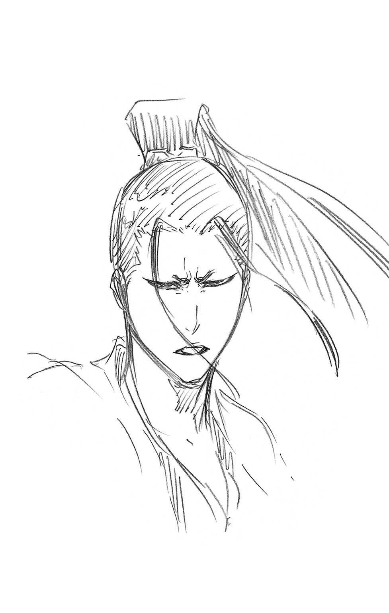
空座町 三ツ宮 浦原商店前
「なんと......痣城剣八が【無間】から脱獄しておりましたか......！」
「ああ、まあ、うちの隊長が来てんだ。すぐに片づくさ」
浦原商店のエプロンを纏ったテッサイの言葉に、一角が頷いた。
「しかし......、浦原の旦那はこんな時に限って留守かよ。ったく、今日はマジで隊長に運を全部かっ喰らわれちまったみてえだな」
「隊長に運気を取られたなら、諦めるしかないね」
弓親の言葉に、一角は頭を搔く。
「ってもよぉ。あのガキどもが斬り合いすっぽかしてどっか行っちまったと思ったら、そのすぐ後に、義骸が全部動かなくなっちまうってのはどういうわけだよ！ いいところで冷める真似しやがって痣城の野郎......」
ブツブツと文句を続ける一角に、ジン太が巨大な鉄棍棒をビシリと向けて叫ぶ。
「つーかハゲ！ てめえ、だからって義骸をここに持ってくんじゃねえよ！ 近所の連中がスッゲー変な目で見てっだろうが！」
ジン太が指さした先には、十一番隊が運んできた義骸が積み上げられ、ウルルがヒョイヒョイと店の中に運びこんでいた。
「ハゲじゃねえ！ 剃ってんだよこの赤毛チビ！」
激昂する一角に代わり、弓親が事情を話す。
「ま、義骸は現世の連中にも見えるから、放置するわけにもいかなくてね。ここしか置く場所が思い当たらなかったのさ」
「ふむ。ご近所には上手く説明するか、最悪の場合は記換神機を使用するので御心配めされませぬよう。しかし......ただ事では済みそうにありませんな」
テッサイが空を見上げると、未だに激しい霊圧の衝撃波が繰り返され、空にヒビを生み出し続けていた。それ以上広がる事はないものの、塞がる側から新たな亀裂が生み出され、まるで空全体が、黒い雷光を光らせる青い雷雲と化しているかのようだった。
「ああ、俺らもすぐに見物しねえとな。あんな楽しそうな隊長の霊圧、久々だからよ」
一角はニヤリと笑いつつ、自分達が次に向かうべき空へと目を向けた。
そして――奇妙なものを視認する。
「あん？ なんだありゃ？」
空に走る亀裂の周囲を飛び回っていた『それ』は、現世に殆ど足を運ばない十一番隊の面々にとっては、見慣れぬものだった。
同時に――『それ』は、現世の人間達にとっても、些か奇妙に映る飛び方をしていた。
黒腔内
「......凄いな。これだけ殺してもまだ死なないのか」
感嘆の声をあげるシエンの言葉に、全身に血化粧を纏った剣八が答える。
「何か困んのかよ？」
「ハッ！ 困るわけがないさ！ これだけ壊し尽くしても、まだ死なず、倒れず、僕に死の刃を向けてくる！ 君一人を相手にしているのに、まるで百万の兵士が蠢く戦場を一騎駆けしている気分だよ！ 蹂躙しても蹂躙しても、やり過ぎてしまう事がない！」
子供のように目を輝かせ、感情を声高く唱いあげるシエン。
完全に戦闘に陶酔している彼を見て、もはやザエルアポロと同一人物だと思う者はいないだろう。兄であるイールフォルトの影響か、髪型も些か変化し、薄紅色の髪にところどころ金色の毛が混じっていた。
「五月蠅ぇ野郎だ。さっきから、言わなくてもいい事をクドクドと......」
言葉では呆れながらも、剣八は上機嫌な調子で刀についた血を振り払う。
「少しは大目に見てくれないか？ まだ生まれたばかりなんでね。溢れ出る歓喜をできるだけ多く叫びたいんだよ」
数度の激突ごとに繰り返される短い会話を終え、再び力と力のぶつかり合いが行われようとしたその瞬間―――
彼らの耳に、奇妙な音が響き渡る。
細かい爆発が連続しているような、空気を切り裂く衝撃音。
剣八には聞き慣れぬ音だったが、シエンは、現世の知識として音の正体を知っていた。
彼らが音の方向に目を向けると――そこには、黒腔の空間に開いた亀裂と、その奥に覗く青空があり――
空を飛ぶ巨大な絡繰りが、二人の前にその姿を現した。
空座本町駅前 ロケ車内
「ミサオちゃん、いた？」
プロデューサーの言葉に、周囲を見ていたスタッフ達が首を振る。
観音寺を追っていたテレビクルーは、バイクに乗ったテロリスト達に追われ、踏切を曲がっていく姿まではカメラに捉えていた。
あわや大事故かとキモを冷やしたが、その後、列車事故があったという様子はない。
だが、観音寺の足取りはそこでぷっつりと消えてしまい、彼らとしても打つ手がない状態が続いていた。
「前に来た時みたいに、ヘリ出して貰う？」
以前の廃病院のロケでは、ヘリコプターも使用して撮影したのだが、今回は特にチャーターしていない。
と、タイミングよく、空からヘリの音が聞こえてくる。
「お、噂をすれば、どこのヘリかね？」
そもそも銃撃戦が行われているような状況では、とっくに報道班が出動しているかもしれないと、プロデューサーは携帯電話で局の番号を押して空を見上げようとしたのだが――ふと、違和感に気づく。
――ヘリの音......いつからしてた？
――遠くから近づいてきたんじゃなくて......今、空に急に......。
そして、プロデューサーは窓から空を見上げ――
「......ええッ!?」
手の平から、携帯電話がポロリと零れ落ちた。
彼の視線の先には、確かに空を舞うヘリがあったのだが――
それは決して報道用のヘリではなく、軍事演習でしか見かけないようなたぐいの武装ヘリコプターだった。
青空の一点に向けてホバリングする攻撃ヘリだが、具体的に何の機種なのかは判別できない。
「......ちょ、何だい何だいありゃ。あんな形のヘリ、見たことないよ？」
少し詳しい者が見れば解る事だが、それは、確かに一目で軍用ヘリと解るものの、本来存在しない形状の機種であり、通常とは全く違うデタラメな火器を装備していた。
早い話が、地上用のガトリング砲などが、弄くり回された機体に無理矢理括りつけられていたのである。
それどころか、ヘリはまるで水飴のように機体の一部をグニャリ、グニャリと変化させており、とてもではないが、現実の光景とは思えなかった。
一体あれは何なのかと、スタッフにカメラを向けさせた、その数秒後――
攻撃ヘリに搭載された機関砲が、爆音と共に毎分１２００発の弾丸を吐き出した。
断界 黒腔内
それが何なのか、更木が理解するよりも先に――
マズルフラッシュが断界の亀裂を輝かせ、痣城の霊圧と融合した弾丸が黒腔内を蹂躙していく。
器子と霊子で構成された通常の弾丸ならば、霊子の乱気流に吞みこまれるだけだったろう。だが、その弾丸に含まれた痣城の霊子が、弾丸の一つ一つに歪な変化を与えていた。
弾丸は半分霊子化しており、細かい刃がチェーンソーのように表面を滑っている。
霊子の乱気流を切り裂きながら、殺意の固まりが二人の悪鬼にその矛先を向け――
弾幕の風が更木の足下に届くと同時に、黒腔内に激しい爆発が巻き起こった。
霊子と霊子がぶつかり合い、互いを食わんと絡み合う。
結果として、衝撃波は立ち上る風となり、周囲のすべてを吞みこみながら空間を暴れ回った。
黒腔内に常時渦巻いているのが霊子の乱気流だとするならば、その爆発はまさに霊子の竜巻か、あるいは猛り吼える巨大な竜を感じさせる。
「............」
その光景を確認しながら、痣城は己の姿を黒腔内に具現化させた。
空座町から離れた場所にある軍事基地。
断界のショートカットを使いながらその基地に侵入することで、中から効率的な「武具」をいくつも拝借してきた。
戦闘機なども目についたものの、あえて個人を制圧するのに向いた軍用ヘリをベースに選び、様々な武装を融合の力で無理矢理組み合わせ、対死神、もしくは対虚用の歪な兵器を作り上げたのである。
もっとも、軍用ヘリも決して「個人」を制圧するための物ではないのだが。
吐き出される弾丸は、徹甲弾と榴弾の二種類。通常は同時には撃てない弾を、雨露柘榴の力で無理矢理交互に発射できる形にした。
融合することで兵器の仕組を理解し、短時間にもかかわらず手探りでその改造を成し遂げた痣城。彼は刀という概念を超えたすさまじい威力の現代兵器を前に、特に感嘆する事もなく、ただ巻き上がる霊子の竜巻に向けて、さらなる弾幕を放ち続ける。
姿が見えなくなっても、なおも無人のヘリは弾幕を吐き出し続ける。バイクと違って武装と一体化しているため、義骸を利用する必要は無い。それでも、無理に武器を融合させている為、照準にやや問題があるのだが――痣城は、意識の全てをこちらに集中させることでその不安要素を排除した。
いかなる種類の弾であろうと、武装ヘリの機銃掃射を受けて無事に済む人間はいない。徹甲弾は通常建築のコンクリートなど軽く抉る威力であり、榴弾が当たれば人間などそれこそ肉片を通り越して単なる血煙と化すだろう。
さらに、痣城と融合した霊子の刃も加えられ、その威力は現世の法則を遥かに超えた物へと進化している。弾丸にこめられた破壊力を全て『爆発』に変換したならば、一発でビルを粉々にできる事だろう。『斬撃』に変換したならば、小さな丘ぐらいは紙のように断裁する事ができるかもしれない。それ程の破壊力を、敵の身体に穴を穿ち、内部から破壊する為だけの力として無理矢理、弾丸内に圧縮しているのだ。
実際の話、仮に十一番隊の隊士達や並の虚がこの掃射をその身に受けていたら、一部の特殊な斬魄刀を持つ者以外は悉くミンチと化し、塵に還っていたことだろう。常人を凌駕する死神の頑健さをもってしても、痣城が紡ぎ出した死の弾風を受け切ることなどできはしないのだ。
だが――その場にいたのは、死神や虚さえ凌駕する、名状しがたき力を持った魔人達。
竜巻が――霊子の激しい奔流の一部がひしゃげ、グゥ、と内側に引きこまれる。
次の瞬間、ひしゃげた部分の風が切り裂かれると、中から強大な霊圧の刃が現れ、竜巻を強制的に霧散させた。
霊圧の刃はそのまま直進し、弾幕を張り続けていたヘリを豆腐のように両断する。
さらに、それに続く形で無数の虚閃が打ちこまれ、空間を切り裂きながら、まっぷたつとなったヘリを完全に包みこんだ。
光が消えた時には、ヘリの姿はなく――先刻まで竜巻の中心にいた男達が、痣城に視線を投げかける。
「現世の兵器と融合したのか、面白いマネをするじゃないか」
シエンの身体は、今し方の弾幕の影響か、所々で触手がちぎれかけており、いくつかは完全に分断され、黒腔の底に広がる闇へと吞みこまれてしまっていた。
「なるほど、なんだと思ったが、今のが現世の連中の得物ってわけか」
剣八もまた、体のあちこちを抉られていたが――悪鬼の笑みはそのままに、首をごきりと鳴らして独りごちる。
「あんだけのもんをぶっ放せるのに、直接斬る感覚を味わわねえたあ......随分ともったいねえ事しやがんだな、現世の連中はよ」
無傷ではなかったものの、更木もシエンも笑みは崩していない。
一方の痣城も、致命傷を与えられなかった事にショックを受けた様子は欠片も見せていなかった。
僅かに目を細め、痣城は二人を観察する。
――......やはり、卍解に到った様子はないな。
――だが事実、霊圧は上昇している。
思案する痣城に、シエンが言った。
「まさかの不意打ちだったよ。さっきまでの僕なら、確実に死んでいた事だろうね。......非礼を詫びよう。僕は、君の底を見誤っていたようだ」
さっきまで、という言葉を聞き、痣城は確信する。
シエンという虚に関しては、確かに何かがあったようだ。
だが、痣城はその過程に興味を持たない。
彼にとって重要なのは、現在目の前にある結果だけだ。
――だが......この程度か。
何故、二人の霊圧が急激にあがったのかという疑念を排除し、痣城は一つの確信をもって、己の力を行使した。
――ならば、まだ私の有利は動かない。
痣城は二人に何も言葉を返さぬまま、黒腔の奥――二人の死角となっている場所に、再び攻撃ヘリを具現化させる。
自らを空気と同化させてあらゆる攻撃を防ぐのと同じように、更木の剣圧が届くと同時に、ヘリが真っ二つになったかのように見せかけ、虚閃の爆発に合わせてその姿を空気の中に霧散させていたのだ。
黒腔内に突如響き渡ったプロペラ音に、更木とシエンが同時に振り向く。
それを合図として、痣城は鬼道の詠唱を開始する。プロペラ音を響かせたのは、その声を隠す為だ。
背後に数十、数百の義骸を具現化させ、一斉に重唱を行わせる。
今回は、先だって行った重唱と違い、全ての義骸が同じ文言を口にしていた。
それは、彼の姉が生涯の最期に使用した破道の詠唱だったが――
暴発の可能性など皆無の、流麗な霊子の流れを全ての義骸に行き渡らせる。
眉一つ動かさず、自らも淡々と詠唱を続けるその姿は、感傷も義憤も全て等しく無駄なものと割り切っているかのようだった。
そして、やはり表情を変えぬまま、ヘリの機銃から無数の弾丸を吐き出させた。
轟音が空間を支配し、それ以外の空気の囁きを一切合切消し去る。
降り注ぐ銃弾の防ぎ方は更木とシエンで対照的だ。
避ける事なく、疵を負いながらも剣を振り下ろし、剣圧で銃弾を押し弾く更木。
一方のシエンは、『邪淫妃』形態特有の触手を重ね合わせ、弾幕の衝撃を自らの濃い霊圧で包みこみ、衝撃を上手く受け流している。一度受けた攻撃のせいか、先刻よりも触手へのダメージを軽減できているようだ。
霊圧供給の元を断たれるわけにはいかぬと、数名のピカロを捕らえた触手は限界まで伸ばされ、霊子の足場から霊子の乱気流の最中へと釣り下げている。
更木は背後にて行われている痣城の鬼道詠唱に気づいていなかったが、シエンは振り向かぬまま、背後に膨れあがる霊圧の胎動を認識していた。
――鬼道か。
――ものによっては厄介だな。
無数の触手で銃弾を受け止めつつ、痣城が具現化させる無数の義骸の動向にも集中する。
当然ながら、更木から意識を逸らすわけにはいかない。時折、銃弾の嵐ごとこちらにも剣を向けてくる為、少しでも油断をすればこちらの命を完全に持っていかれる事だろう。
機銃の轟音と共に、『死』の空気が肌を通して自分の中に染みこんでくる。
そのヒリつく時間を楽しみながら、シエンは防御を薄くする代わりに半分の触手を攻勢に回す事にした。
触手を蠢かせ、剣八と痣城の義骸達、その両方に『王虚の閃光』を撃ち放とうと、己の意識を二人の敵に対して最大限に研ぎ澄ました。
それ故に、彼は気づけなかった。
シエンだけではない。
更木も、痣城も――自らの敵たりえる強大な力に意識を向け過ぎていたからこそ、黒腔内にいた些末な霊圧に気づく事ができなかったのだ。
ヘリのプロペラと機銃が織りなす音の衝撃波。
三人の魔人が生み出す霊圧の嵐。
その二つに紛れた『それ』に、気づけという方が無理だったのかもしれない。
シエンと更木が固めた霊子の足場。
その遥か下をくぐる形で――エンジン音を響かせながら、囚われのピカロ達に向かって猛スピードで走る車の存在になど。
霊子の乱気流が一際濃くなる下層ギリギリに張られた『糸』の上を、限界までアクセルを踏みこまれた『ジャンヌダルク』が疾走する。
「むうっ......あのヘリは一体!? テレビ局の取材ではなさそうだが......」
「......ただのヘリじゃありませんね。運転席から人の気配が感じられない」
後部座席に乗った石田の手に握られていたのは、いつもと少し色が違う『銀嶺弧雀』だった。
滅却師十字が奪われている現在、彼は銀嶺弧雀を生み出せない筈だったのだが――
――「貴方がチルッチ様と交戦した際のデータがありますので、再現できると思います」
ロカがそう呟き、銀嶺弧雀と似た形に紡ぎ合わせた『糸』に、滅却師と同じ形で霊子を巡らせ、光輝く弓を再現する事に成功したのだ。
使えぬ筈だった武器を構えながら、石田は思う。
――なるほどね。こういう形で再現できる程に細かいデータを取られていたのか。
――確かに、これならザエルアポロに技を無効化されたのも納得できる。
――それにしても、この『糸』の力......想像していたよりも万能だ。
無論、一時的な措置であり、彼女の『糸』から霊子が供給される間しか使えないし、一年以上前のデータという事もあって、流石に１００パーセント今の石田に合わせた弓を生み出すには到らなかった。
だが、涅マユリをして『天才』と言わしめた石田雨竜にとって、その程度のハンデなど狙いを外す理由にはならない。
車の速度などを計算し、弓につがえた『魂を切り裂くもの』を迷い無く撃ち放つ滅却師。
青白く輝く刃は、霊子の風を斬り、凄まじい勢いで突き進む。
ピカロ達を吊す触手の根元近く。謎のヘリや更木の攻撃で生み出されていた傷を、更に深く抉る形で突き刺さり――傷の内部から更に周囲を切り千切った。
「......なに？」
触手が千切られた事を確認し、ようやく自分が不意打ちを受けたと気づくシエン。
何事かとダメージを受けた所に目を向けると、霊子の足場の隙間から、千切れた触手の先端ごと、ピカロ達が落下していくのが見えた。
そして、その下に走りこむ形で、黒腔に似つかわしくない存在――派手なオープンカーが現れ、ピカロ達と『魂を切り裂くもの』を受け止めた。
シエンが完全に動きと思考を停止させたのは、ピカロ達を柔らかくキャッチする白い糸を確認した時だった。
「......」
全てを拒絶する『反膜の糸』とは別の、単に敵を縛りつける時などに使用する霊子の糸。
どちらにせよ、シエンの知る限り、その糸を使える者は一人しかいない。
「......ロカ」
シエンは、弾丸の嵐に身を削られつつ、その女の名前を呼んだ。
そこに怒りも驚きも歓びも無く、感情の欠片も無い、ただ確認するだけの作業。
口に出す事で、確かに自分の目に映っている光景が現実であり、ロカが道化師のような男や滅却師と共にピカロを奪っていった事を理解すると――
この瞬間まで彼の中に満ちていた狂気と驚喜が、一瞬のうちに消え去った。
沸騰していた水が一瞬で凍りついたかのように、シエンの殺気そのものが急速に冷え切っていく。
それを感じ取ったのか、更木は弾幕を薙ぎ払いながら訝しげな目を向けた。
「あぁ？ どうした。なに寝ボケてんだ、てめぇ」
痣城も異変を訝しんだのか、一度ヘリの機銃を停止させ、空気の中に溶けこませる。
既に全ての鬼道の詠唱は終わっているが、無駄撃ちをする事を回避し、いつでも発動できる状態で義骸達を待機させたようだ。
「............」
先刻までの轟音が噓のように、周囲の空気が静寂を取り戻す。
それにより、遠くに離れつつある車のエンジン音がかすかに聞こえ、痣城はようやく観音寺達の存在に気がついた。
破面の女と滅却師が見えるが、今はそちらに気を割いている暇はない。
しかし、運転席にいる男の後ろ姿を確認した瞬間、再び痣城の心に苛立ちが過ぎる。
――......？
疑問がふくらみかけるが、痣城は強制的にその感情を排除し、冷静さを保ったまま数百体の義体の制御を続ける事にした。
すぐに鬼道を発動させるべきか否か、慎重に見極めようとしている痣城を無視し――
シエンは心の底からの悲しみと未練をこめた表情を浮かべ、謝罪の言葉を吐き出した。
「......すまない。本当に心苦しいのだが......君との殺し合いは、一時お預けだ」
「あぁ？」
眉を顰める更木に、彼は目の前の御馳走を逃した子供のような目を向けながら、泣きだしそうな声で続ける。
「本当に......本当に口惜しいが、君はそこにいる痣城と遊んでいてくれ」
「......それで納得すると思ってんのか？ ここまで興が乗ってきたところだってのによ」
露骨な苛立ちを交えた更木の言葉に、シエンは先刻までの笑顔が噓のように、断腸の思いをこめた叫び声をあげた。
「納得するわけがないだろう！ 誰よりも僕が納得しない！ ああ、僕の全存在をかけて誓おう！ 君とまた、必ず殺し合うと！ 死の歓びを分かち合うと！」
殺し合いを止めるのが一秒でも惜しいとばかりに、血涙すら流しかねない勢いで叫んだシエン。彼は痣城をちらりと一瞥した後、歯嚙みしながら首を振る。
「だから、更木剣八よ......君も、その程度の奴に殺されてくれるなよ......？」
そしてシエンは再び感情を消し去り、猛スピードでその場から離脱した。
既にかなりの距離を離されている、観音寺の駆る車を追う為に。
「おい、待てよ！ 納得しねえっつってんだろ！」
更木はそんなシエンを追おうとしたのだが、再び具現化された武装ヘリが立ち塞がる。
「その程度の奴、か。私も随分と軽く見られたものだ」
「ちっ！」
数秒間だけ撃ちこまれた弾幕に、更木は足止めされる。
更木は背後に具現化していた痣城をギロリと睨みつけ、嘆息しながら呟いた。
「......しかたねぇ。今一つ解せねぇが、逃げてる奴を斬るよりゃ、手前の方がマシか」
不満げな更木の声には答えず、痣城は一方的に尋ねかける。
「何故、この短期間でそこまで霊圧が上がった？」
「？ 眼帯の話か？」
素で何の事か解っていない様子の更木に、痣城は暫し沈黙した。
そして、更木とシエンを攻撃する裏側で、自らが融合を完了させた周囲の空間内に――ヘリとは別の、無数の武装を生み出した。
無数、というよりも、無限、と言った方がしっくりとくるかもしれない。
尸魂界と現世の違いは問わず、『融合』の力を用いて自らの内に取りこんでいた武装の大半を解放させた。
刃の間に刃が詰めこまれ、更には現世の銃器や尸魂界の特殊霊装も見受けられる。
更木の周りをグルリと取り囲む形で、人間や死神が生み出してきた攻撃性そのものが『壁』となって立ちはだかった。
「君自身が気づいていないのならば、無駄な問いだったな」
痣城は無表情にそう呟くと、義骸達の鬼道を更に深く練り上げつつ、その一方で刃の壁を狭め始める。
『融合』の力の一片か、武具は蜃気楼のように刃や銃身を蠢かせ、魔物の牙のように獲物を包みこもうとしていた。
「また手品見物の時間ってわけか。さっきよりも楽しめんだろうな？」
軽く笑う更木に対し――隙間無く積み上げられた殺意の塊が、巨大なうねりとなって襲いかかる。
同時に、意図的に空けられた隙間から、先刻同様のヘリ機銃による攻撃も再開された。
銀色と鉛色のパレードを、機銃のマズルフラッシュが怪しく照らし、黒腔の背景と合わさって世界の終わりを想起させる。
確かに卍解らしいと言える大仰な光景を生み出した痣城だが、それすらも、彼にとっては『目眩ましの囮』に過ぎなかった。
――黒崎一護と闘った時の更木ならば、この攻撃だけで殺し尽くせていた筈だが......。
刃の竜巻の中で弱まる様子の無い更木の霊圧を確認し、痣城は覚悟を決め――
義骸達の間で最大限の威力まで練り溜めた鬼道を、一斉に発動させる。
「「「「「「「「「「――破道の七十三 『双蓮蒼火墜』――」」」」」」」」」」
数百の義骸の口が一斉に詠唱を完了し――
黒腔内が、蒼い炎に染め上げられた。
時は、数十秒ほど遡る。
観音寺達は、車の後部に五人のピカロを乗せ、黒腔内をひた走っていた。
「子供達は無事かね、ボーイ!?」
車を走らせながら、石田に呼びかける観音寺。
「最初は死んでいるかと思いましたけど、少しずつ霊圧が回復しています。すぐに目を醒ますでしょう」
石田としては、破面達が目を醒ました後に敵となるか味方となるかが心配だったが、とりあえずはこの場を離れる事が先決だと判断する。
あの馬鹿げた霊圧同士の闘いに巻きこまれれば、観音寺どころか、自分やロカの命すら保証できない。
「とりあえず、シエンとやらが更木剣八と殺し合いを続けている間に、現世へ......」
そんな事を呟きつつ、背後を振り返った石田だが――
視線の先で、禍々しい光が放たれるのを認識し、叫んだ。
「ハンドルを切って！」
「な、なにっ!?」
強い剣幕に気圧され、訳も解らぬまま車のハンドルを急回転させる観音寺。
と、１秒前まで車が走っていた所を、『王虚の閃光』が通り抜けた。
通った後の空間そのものがひしゃげ、その歪みに車が引き寄せられる。
「ぬおおおっ!?」
再び横転した車だが、ロカが再び『糸』で調整して着地させた。
ちょっとしたジェットコースターと化していた『ジャンヌダルク』の車上から、ロカは背後に迫るシエンの姿を確認する。
まだ距離は大分離れているものの、ロカの視力はその顔をハッキリと確認し、彼が自分の事を凝視している事に気がついた。
ゾワリ、と、背中に嫌な汗が滲む。
シエンの双眸にこめられていたのは、いつものような蔑みの色ではなく――純然たる憎しみだった。
更木剣八に向けていた、驚喜と混じり合わさった殺意ではない。
どこまでも純粋な、存在そのものが邪魔だという敵愾心がロカの心に突き刺さる。
先刻の虚閃も、恐らくは車ではなく、自分の頭を吹き飛ばそうとしていたのだろう。
それを確認したロカは、暫し無言でその憎しみの視線を受け止め――口を開いた。
「......観音寺さん」
「むぐぐ......ど、どうしたのかね!?」
ようやく回転した衝撃から立ち直ったのか、アクセルを踏みこみながら上半身をふらつかせている観音寺。
「スピードを緩めて、いつでも止まれるようにしておいて下さい」
「なんと!? だ、だが......それでは追いつかれてしまうのでは!?」
「大丈夫です。私を......信じて下さいますか？」
「もちろんだとも！ 何を確認する必要があるというのか！」
１秒と考えずに答える観音寺。
恐らくは、熟考しても答えは同じだろう。
ロカはそんな観音寺を見て、心に思うままの表情を浮かべて呟いた。
「色々と......ありがとうございました」
「？ 何を言っているのだ？」
観音寺はそう言って車の速度を落としながらロカの方を振り向き――
彼女が、悲しそうに微笑んでいる事に気がついた。
「......ロカ嬢？」
悲しみも、笑顔も、どちらも本当の感情だろう。
何故そんな表情をするのか、観音寺が理解するよりも早く――
ロカは、その顔のまま助手席に立ち上がり、一言告げてから椅子を蹴った。
「あのアイスクリーム......とても、美味しかったです」
次の瞬間、ロカは目の前に現世への道を開き――
「今度は......皆さんと一緒に食べたいです」
『ジャンヌダルク』ごと観音寺と石田が通り過ぎるのを確認すると、その出入り口を一瞬で閉じてしまう。
「レディ、何をっ......」
最後に叫ばれた観音寺の言葉も、黒腔の口が閉じると同時に完全に聞こえなくなった。
一人黒腔に残った彼女は、自分の足で黒腔内を走りながら、背後に視線を向ける。
迫り来るシエンの姿を確認し、彼女は深く安堵した。
あの男が、観音寺達を追って現世に向かわず、自分を追い続けている事を。
シエンが前方に再び虚閃を撃ち放とうとしたのに合わせて、彼女は安堵を一つの覚悟に塗り替える。
心に浮かぶのは、観音寺の言葉。
――「覚悟など、どうでもよい！」
――「ロカ嬢がそれでよいかどうかを聞いているのだよ！」
そして、彼女は自らの生み出す『糸』に、決意を強く漲らせた。
自分がよいと思う事と覚悟が、初めて一致した事を歓びながら。
彼女は、死ぬ事をよいと思ったわけでない。死を覚悟したわけでもない。
観音寺を護り、自らも生きる為に――
ロカ・パラミアはこの瞬間、シエンと闘う事を覚悟したのだ。
シエンは、虚圏に繫がる暗がりへと向かって走るロカを無言のまま追い続ける。
心に満ちるのは、混じりけの無い憎しみ。
その憎しみの理由は、シエン自身も理解している。
自分という存在が、あの女によって生み出されたという事実。
道具に過ぎない筈のものから創製されたという事が、シエンは堪らなく不快だったのだ。
もしも本当に自分がザエルアポロ本人だったのならば、寧ろ何の感情も抱かなかった事だろう。自分が再誕する為に生み出した道具が、その役割を果たしただけなのだから。
だが、シエンは違う。
シエンは、もはや自分がザエルアポロではないと認識してしまっている。
別の存在である以上、自分に、ロカの内側から生まれる『以前』は存在しない。ロカの体内に仕込まれた莫大な情報の渦こそが、シエン・グランツにとって原初の海なのだ。
ある日突然、『君の母親だよ』と言われて古びたパソコンを見せられた人間はどう思うだろうか。それを頑なに否定する者。受け入れてパソコンを愛する者。自分は自分だと、なんとも思わぬ者。自分がこんなボロい道具から生み出されたのかと嘆き苦しむ者。
反応は様々だろうが、シエンは、無言でそのパソコンを叩き壊すタイプなのである。
同時に、彼は恐れていた。
ロカが持つ『糸』と『記憶装置』の真髄は、いつまでも情報を共有し続けられるという事に他ならない。
シエンは恐れていたのだ。
彼女の内から、第二、第三の自分が生み出され、シエンという『個』をたんなる記号に変えてしまうのではないかと。
ピカロ達よりも始末が悪い、邪淫妃の能力で生み出したクローンの群のような存在に貶められてしまうのではないかと。
そして、そんな忌々しい存在が――
初めて『生きる歓び』を実感していた時間――更木剣八との殺し合いの邪魔をした。
信じられる事ではなかった。
看過してよい事でもなかった。
彼がザエルアポロのように冷静な男だったならば、ここまでムキになって追う事はしなかっただろう。黒腔を開いて、現世に移動したであろう彼女の仲間を捕らえ、人質にする事を考えたかもしれない。
だが、今の彼の中に渦巻くのは、果てなき憎しみと、臓腑にあまねく広がる空腹感だ。
霊子が足りなくなった、というワケではない。
シエンは、どうすればその空腹感がおさまるのか理解していた。
原初であり生みの親でもあるロカ・パラミアを殺し、彼女の根幹たる『糸車』を貪り喰らう。
自らが生まれ出た情報の海そのものを喰らう事で、自分を更なる高みに押し上げようとしていたのだ。
それはもはや、ザエルアポロのような『研究に基づく実験』などではなく、何の根拠もない、生まれたばかりの彼が生み出した歪な信仰に過ぎなかったのだが。
周囲の空間が更に薄暗くなり、黒腔の門を虚圏各所に接続できる座標に辿り着いた事を確認し、シエンは再び両手と口の前に霊圧を渦巻かせる。
――ああ、更木剣八。安心してくれ。
――どうやらすぐに、殺し合いの誓いは果たせそうだ。
彼女を殺して『糸車』を喰らえば、霊圧は半永久的に補給でき、ピカロを取りこむ必要も無くなる。
ロカへの憎しみの中に、ほんの僅かな希望を煌めかせながら――シエンは、口と両手の三箇所から同時に放たれる特殊な虚閃を撃ち出した。
その様子を見ていたロカは、先刻と同じように『反膜の糸』を生み出してその一撃を逸らせようとする。
――馬鹿め。
彼は手と口から放たれる霊圧をそれぞれ調節し、絡み合う三本の光を自らの意思でねじ曲げた。
うねる光はロカの糸の横を擦り抜け、一瞬で彼女まで辿り着き――
驚きに目を見開いた彼女の頭を、見るも無惨な形で貫いた。
その筈だった。
しかし、彼女の姿が揺らめきながら消えたかと思うと、すぐ横の場所に同じ姿が現れ、その一瞬の隙に黒腔の口を開くのが見える。
何が起こったのか、一瞬戸惑うシエンだったが、すぐに答えに思い当たった。
――あれは......ゾマリの......。
『７』の数字を冠していた男だけが使用する、『双児響転』と呼ばれる分身技。
実際に二体になるわけではなく、スピードによる錯覚を利用した攪乱技なのだが――破面でそれを使えるのは、十刃最速を誇るゾマリ・ルルーただ一人だけの筈だ。
ロカが黒腔の口を閉じて虚圏へと消えるのを確認し、ギリ、と、歯を軋ませるシエン。
「どうやら、本気で道具風情が夢を見てしまったらしいな」
そして、自らも黒腔からの脱出口を開き、虚圏の闇の中へと軽やかに身を躍らせた。
もはや、彼の中にロカを蔑む心はあっても油断の心は欠片もない。
シエンは知っていたからだ。
ロカが持つ道具としての力を、彼女自身の為に最大限活用すれば、どれほどまでに厄介な存在になりうるのかを。
現世 空座町 椿台 廃病院屋上
黒腔から吐き出された『ジャンヌダルク』は、気づけば病院の屋上に着地していた。
「ぬおおおお!?」
反射的に急ブレーキを踏み、柵に激突する直前に停車する。
呼吸を荒らげる観音寺だが、彼は車から慌てて降りて周囲を見渡し、ロカの姿がないか確認した。
だが、周りに彼女は見当たらず、黒腔への出入り口も完全に閉じてしまっている。
「ここは......」
屋上を見て呟く観音寺に続いて、石田も自分達の立っている場所を確認し、言葉を紡ぐ。
「恐らく、座標を指定する暇がなかったんでしょう。だから、こんな場所に......」
「ノー。それは違うぞ、ボーイ。恐らくは意図的なものだろう」
「えっ？」
「この屋上は......今日の昼、ロカ嬢と私が初めて出会った場所なのだ」
自分で呟いてから、今日の出来事を走馬灯のように思い出し、無念に拳を握る観音寺。
「何故だ、ロカ嬢......。何故、一人であそこに残るような真似を......！」
「......自分を囮にして、僕達を逃がす為でしょうね」
下手に誤魔化しはせず、石田は、はっきりと言い切った。
観音寺は何か言いかけたが、呼吸を整えながら俯き、愛車のドアに身体を預ける。
「私の......せいか？」
「そんな事は......」
「いいんだボーイ。私に力が無いばかりに、ロカ嬢はそんな決意を抱いたのだろう......。私が、彼女を安堵させられる程のヒーローであるならば、こんな悲しい経過には到らなかっただろう......！」
本気で自分の無力さを呪うかのような言葉を聞き、声をかける事を躊躇った石田だったが――ふと、今の言葉の中の違和感に気づく。
――経過？
――結果、ではなく？
その単語が示した通り、観音寺は顔を上げ、強い瞳でもって声をあげた。
「ゆくぞボーイ！ 彼女を救いにあの暗い道へとリターンマッチだ！ 私にはまだ、ロカ嬢の知らぬ最終奥義があるのだから！」
「どんな奥義か知りませんが、どのみち無理です！ あの道への扉を開けられるのは、彼女だけなんですから！」
――この期に及んで、まだ助けようとするのか。
観音寺にとって、一縷でも望みがある限りは、決して終わりなど訪れないのだろう。
石田は小さく息を吐き、観音寺にゆっくりと語りかけた。
「あとは僕に任せて下さい。なんとか手を探します」
「ユーまで何を言うのだ!? もちろん私も一緒に方法を考えるに決まっているだろう！」
そんな観音寺に対し、石田ははっきり『足手まといだ』とは言えなかった。彼もまた、銀嶺弧雀を失った状態であり、あの面子を前にしては、観音寺とさして変わらない状態だと知っていたからだ。
石田は小さく溜息を吐き、あっさりと滅却師十字を奪われた自分を恥じながら口を開く。
「......本来、この事件は貴方が関わるような話じゃない。確かに貴方には霊力がある。しかし、闘う事に秀でているわけではありません。彼女達の住む世界......そもそも、虚とも関わりを持つべきではないと思います」
相手に言い訳を与える為の言葉だが、観音寺はそれをやんわりと否定した。
「気遣いは痛みいるよ、ボーイ。......だが、そう割り切れるのならば、最初から彼女に声などかけなかっただろう」
その言葉に、石田は、これまで感じていた観音寺への違和感の正体を理解する。
「やはり......最初から知っていたんですね。彼女が虚の側の存在だと」
「ハッハッハ、私を誰だと思っているのかね？ このカリスマ霊媒師にかかれば、霊の判別などお手の物なのだよ！」
「だったら何故！ どうしてそこまでして彼女を救おうとするんですか！」
自分よりも遥かに霊力の強い少年からの問いかけに、観音寺は空を見上げ――微笑んだ。
「ボーイ。確かに私は、ユーやマイ一番弟子の一護には力が及ばんかもしれん。だが、逃げる事だけはできんのだよ！」
「何が貴方をそこまで......」
「私は確かに君達より弱い。私がユーに勝っているのは、せいぜい生きた年月だけだろう」
車の後部座席に乗せられていたピカロ達に絡まる『糸』を解きながら、観音寺は石田に己の心の一部を語り始めた。
「だが、だからこそ、私は君よりも少しだけ長く、あるいは広くこの世界を見てきたのだよ。海外でショウモデルとして過ごした時期もあるが......その時にも、様々なものを目にしてきた」
巻き取った霊子の糸を手に束ねていきながら、自分の無力さを悔やむ言葉を口にする。
「先に言ったように、私はゴッドではない。戦争を止める事すらできない、単なるカリスマ霊媒師だ。世の中にあまねく理不尽な死を、絶望を、私一人で抑えこむ事はできない」
「......観音寺さん」
「だからこそ！ だからこそだボーイ！ 私は私に誓ったのだ！ せめて、この手が届く所にある手は、全て握りかえそうと！ 助けを求める手から、決して逃げはすまいと！」
自分自身の手にある、ささやかな力。
現世に存在する死者達の霊を認識し、干渉する事ができる。
それは常人には無い力であり、観音寺という英雄を構成する重大な要素でもあった。
「この世の理不尽を消す力はなくとも、理不尽に死んだ者達の魂を救う事はできる......それが、私に与えられたヒーローとしての使命なのだと信じている」
観音寺はただ、心に渦巻く自分の心を言葉にする。後悔も。
「確かにロカ嬢は、我々とは違うルールに囚われた存在なのかもしれん。住む世界も違うのかもしれない！」
そして、自分が未だに拳を握り続ける理由をハッキリと告げた。
「しかし、しかしだ、ボーイ！ 彼女は、私の手の届く所にいたのだ！」
「............」
「一度は繫がった手を振り払い、その感触をなかった事にするなど......私にはできない！」
サングラスの奥に強い光を湛えつつ叫ぶ観音寺を見て、石田は思う。
――......呆れたな。いい大人が、ここまで子供じみた理想を堂々と叫ぶなんて。
――黒崎とは別方向だが、同じぐらい途轍もない愚か者だね、まったく。
だが、観音寺を蔑む事もなく、己も十分愚かだと思いながら、一つの答えを口にした。
「......今の僕達に、彼女を追う方法はありませんが......その方法を知っている人なら、心当たりがあります」
滅却師の本分は虚の滅却だ。その虚を助けに行くなど、普段の石田ならば友人の頼みでも断るところだが――今回の件に関しては、既に深く関わってしまっているし、ロカの力が他の勢力に渡った時のデメリットが大きい。そう自分に言い聞かせ、石田は観音寺への協力を続ける事にしたのである。
石田の言葉を聞き、観音寺はサングラスの奥の目を輝かせた。
「なにっ!? 本当かねボーイ！」
「ええ、ですから少し、ここで待っていて下さい」
――浦原さん......破面を助けに行きたいなんて言ったら、どんな顔をする事やら。
滅却師としては進んで関わるべき相手ではないのだが、石田は多大に恩のある、一人の駄菓子屋店主の顔を思い浮かべた。
――また、カラクライザーだかなんだかの衣装を作れと言われるかもしれないな。まあ、あれはあれで面白い仕事だったけれど。
そのカラクライザーにも観音寺が関わっているとは知らぬまま、石田は『ジャンヌダルク』から降り、東の方角に目を向けた。
――待てよ、それより先に、あの子供の破面達を......。
思い出したように車の後部座席を振り返ると、丁度、ピカロ達が目を醒ました所だった。
「あれ？ 僕達どうなってたのかな？」
「よく思い出せないや」
「えっと、シエンにギューって捕まっちゃって、腕を嚙まれて......」
「食べられそうになってたってこと？」
それぞれ背伸びや欠伸などしながら、状況を確認し合い――グルリと観音寺の方に目を向け、問いかける。
「ねえねえ、えっと......鈍感音痴さんが助けてくれたの？」
「ノー！ 二重の意味でノーだ！ 私は鈍感でも音痴でもない！ ドン・観音寺だ！ そして、君達を助けたのは私だけではない！ ここにいるマイ二番弟子と、カラクラプラチナム......すなわちロカ嬢とのチームワークあってこそだ！」
「すみません。知らない間にスカイブルーから弟子に格下げされてるのにはもうツッコまないから、黒崎の下というのだけは撤回してもらえませんか」
顔は冷静なまま、薄く青筋を立てて呟く石田。
そんなやりとりを余所に、ピカロ達はキャッキャと笑いながら語り合っている。
「そっかー、ロカお姉ちゃんが助けてくれたんだ」
「そういえば、ロカお姉ちゃんってどこ行ったのかな？」
「探しにいこう」「そうしよう」「それじゃー、ありがとね！ 鈍感音痴さん！」
「あと、えーと、メガネさん！ バイバーイ」
礼もそこそこに、次の遊びを求めて空に飛び立っていくピカロ達。
「ま、待て！ 君達にはまだ聞きたい事が......」
引き留めようとする石田を見て、ピカロ達は「鬼ごっこ？」「やったー！」「じゃあ、逃げよう！」と、話もろくに聞かずに響転を用いて逃げ出してしまった。
「僕はその知り合いに連絡を取りながら彼らを追うから、とにかく観音寺さんはここで待っていてください！」
石田はそう言って、懐から携帯電話のような妙な機械を取り出し、自らも屋上から飛び立っていった。
残された観音寺は、ロカが車に残した『糸』を巻き取りながら、車を眺める。
「しかし、『ジャンヌダルク』をどのように地上に降ろすべきか......。これではロカ嬢やピンチの子供達を見かけても、駆けつけるスピードが足りずにタイムロスを......」
観音寺はそんな事を呟きながら、ロカへの手がかりが他にも残っていないかと、車の中を覗きこみ――
後部座席の下に、あるものを発見する事となった。
黒腔
『双蓮蒼火墜』の炎が収まった黒腔内。
周囲には何かが焼け焦げたような臭いが広がり、更木が不可解そうに眉を顰めた。
「てめぇ......」
既にボロボロになっている隊長羽織だが、今しがたの双蓮蒼火墜で燃えた様子は欠片も無い。
「どういうつもりだ？ わけわかんねえ真似しやがって」
更木が不可解な顔をするのも当然のことだろう。
なにしろ、痣城は義骸の群に一斉に鬼道を発動させ――
義骸同士にその炎を放ち合い、お互いの身を全て焼き焦がさせてしまったのだから。
「君に、敬意は表しよう。理由は解らないが、短い時の中でそこまで霊圧を上げた才には、羨望の念すら抱きかけた」
「あぁ？ なに言ってやがんだ？」
「私に君ほどの才覚があれば、更に効率良く事を成せていたかもしれないな」
素直な感想を口にする痣城だが、彼にとって内容はどうでもよかった。
「だが、これから消え去る者を羨む必要はあるまい」
彼はただ、時間を稼いでいただけだ。
鬼道の残り火が、魂魄と融合させた義骸を完全に焼き尽くす為の時間を。
「さっきからごちゃごちゃと......始めちまってもいいのか？」
待ちくたびれたというように、剣を肩に担ぎ上げる更木。
「君に警告が無駄だという事は理解している」
痣城は、完全に義骸が焼け焦げた事を確認すると――彼は、眼前の男に言い放った。
「さらばだ、更木。死神としての理念すら無い君に『剣八』の名は重すぎる」
痣城は僅かに目を伏せ、焼け焦げた義骸を宙に浮かせ、剣八の周囲をグルグルと回らせ始める。
「なんだぁ......？」
黒く爛れた義骸の群が、メリーゴーラウンドのように更木を取り囲んで踊り廻る。
そして、高速回転する影が残像を生み出し、巨大な黒い半球状となった瞬間――
痣城はただ、焼け焦げた死体の群に唱えさせた。
己の全てと引き替えに、万物に純粋なる終焉をもたらす為の一言を。
焼け焦げた口がカサカサと震え、義骸の群は、おぞましくも美しい重奏を唱いあげる。
「「「「「「「「「「「破道の九十六――『一刀火葬』」」」」」」」」」」」
次の瞬間、数百の義骸の身体と、それに融合した痣城の魂魄の一部が贄として捧げられ――更木剣八を中心として、この世の終末を感じさせる火柱が辺り一帯を包みこんだ。
虚圏 虚夜宮
黒崎一護達との戦いで、大部分が崩壊した虚夜宮。
その中でも、特に激しく損傷している区画の一つ。
かつてはザエルアポロ・グランツが任せられていた夜宮の瓦礫だけが残る区画。既に瓦礫の大半も風化し、砂漠の中に溶けこみつつある。
ロカは、そんな白砂と瓦礫の中心で、周囲に無数の『糸』を張り巡らせていた。
色濃い霊子の影響だろうか。『反膜の糸』は夜の闇の中で淡い光を放ち、一つの幻想的な光景を生み出している。
と、その『糸』の一本が異常を察知し、ロカは無表情のままそちらに目を向ける。
次の瞬間、視線の先で黒腔が開き、そこからシエンがゆっくりと姿を現した。
「......やっぱり、ここだったか」
まだ帰刃による刀剣解放状態のままで、滲み出る霊圧と『殺意』が糸を伝わり、ロカの皮膚をピリピリと震わせる。
「黒腔の時空の歪みから考えると、君が虚圏に来てから５分、といったところかな？」
「ザエルアポロ様......いえ、シエンさん、でしたよね」
「おやおや、僕のことは『様』づけで呼んでくれないのかい？」
言葉だけを聞くと、昨日までと変わらぬように思えた。
だが、霊圧にこめられた圧倒的な負の感情が、夜の砂漠を一際強く冷やしこむ。
ロカは背中の寒気と戦いながら、真正面からその殺意を受け止め、言葉を返した。
「貴方は、御自身の事を『ザエルアポロではない』と仰いました。私を生み出した主人は、ザエルアポロ様です。シエンさんではありません」
「なら、そのザエルアポロが死んで地獄に堕ちた今......君は主人の後を追って自壊すべきだと思わないのかな？ それが道具として在るべき姿だろう？」
「私は......そうは思いません」
「あの道化のような男か、それとも石田雨竜の方か？ どちらの人間にたぶらかされたのか知らないが、まるで鎖から解き放たれた奴隷のような目をしているじゃあないか」
一歩足を踏み出し、身に纏う霊圧を蠢かせるシエン。
「希望を抱いてしまったのかい？ 自分が『何か』になれると。だから、その為の一歩として、あの人間達を助けようとした。自分が意思ある存在だと、自分自身に示す為に」
「............」
「自己犠牲に酔えば、聖女になれるとでも思ったのか？」
次の一歩を踏み出すと、周りにあった瓦礫のいくつかが霊圧によって崩壊し、砂に還る。
「だが、余計な事をしたね。もはや僕の怒りは、君を殺すだけでは収まらない。あの滅却師を殺し、あの道化師を殺し、空座町に住まう全ての人間を殺し尽くし、その魂魄を喰らい尽くそう。君はただ、火に油を注いだ大マヌケとして僕の心にだけ刻まれる」
更に一歩。
踏み出された足の底で砂が沸騰し、崩壊した霊子が大気中に放出される。
「それとも、君と同じように僕の『道具』にされていたピカロ達に同情したのかな？」
更に一歩。
シエンの頭上を通り過ぎた小さな鳥型虚が、もがき苦しみながら落下する。
「ああ、そうか。もっと単純に......『僕に逆らえば、自分の意思というものを持てたという証明になる』......そう考えたのかもしれないね」
更に一歩。
落ちてきた鳥型虚の首を右手で摑み、そのままベキリとへし折るシエン。
「いずれにせよ、君は夢を見たんだ。希望に満ちた、輝かしい未来をね」
そして、次の一歩足を踏み出した瞬間――
「未来か......」
彼は笑顔を消し去り、瞳の中に露骨な怒りを湛えて叫ぶ。
「......巫山戯るな......。そんなものの！ その程度のものの為に、君は僕を殺したのか！」
「？ 何を......言っているんですか？」
「あの瞬間こそが僕の生きていた唯一の時間だ！ 削られる命の先にある死の闇を、削った命の中の輝きを、あの時、僕は確かに感じていたんだ！ あの殺し合いの瞬間こそが、僕にとって天地開闢の瞬間であり永遠だ！ あの闘争の場こそが僕の生きられる唯一の場所だ！ 君の未来などの為に邪魔をしていいわけがないだろう！」
単純明快な怒りだった。
『楽しみの邪魔をしたから』
ただそれだけの、表も裏もない純粋な怒りを、まるで愛する者を殺されたかのような勢いで叫び狂うシエン。
「君は何様のつもりだ!? 僕を生み出したからといって、僕を殺す権利まで持ち合わせているとでも思ったのか!? ああ......すまない......こんな事をしている場合じゃない......。すぐにあの場所に戻って、僕は生き返らないといけないんだ！」
怒りが脳を混乱させているようで、情緒もかなり不安定になっている。
彼の怒りの根底には、ロカという道具から生み出された事へのコンプレックスもあるのだが、今となっては怒りの副次的な理由に過ぎない。
氷の刃のような殺意を向けてくる相手に、ロカは静かに言葉を返した。
「貴方は......やはりザエルアポロ様ではないのですね」
「なにを今さら」
「ザエルアポロ様より......よほど子供じみています」
ピタリと歩みを止めたシエンに、ロカは更に続けた。
「貴方と私は、よく似ているのかもしれません。自分の正体も解らず、ただここに立つ事にさえ、いちいち理由を求めている......行き場を無くした哀れな子供のようなものですね」
挑発としか思えぬ言葉に、シエンは一瞬沈黙した後、声を震わせながら呟いた。
「最期の言葉は......それでよかったのかい？ 憐れみを誘う聖女を演じるなら、もっとマシな言葉を口にしたらどうだ？」
触手の全てに霊圧をこめつつ、如何に彼女を切り刻むかを思案するシエン。
あまり苦しめている時間はない。そんな暇があるのならば、一秒でも早く『糸車』の力を奪い、あの強靱なる死神達の下へと戻らなければならないのだから。
しかし――そんなシエンとは対照的に、ロカはあくまでも穏やかだった。
「犠牲になるつもりは......ありません」
「......なに？」
「少しだけ......貴方の事が解りました」
そして、シエンは気づく。
彼女の右手の中に、何かが生まれつつあるという事を。
ロカの顔面の髑髏が『糸』としてほつれ始め、その『糸』が針金細工のように絡み合い、彼女の手中で一つの形を造り上げていく。
「貴方を生み出したのが私だと言うのなら......私は、貴方を止めなければいけません」
それが一本の斬魄刀だと気づいた瞬間、シエンは彼女の頭を叩き潰そうとした。最も長い触手を振り上げ、勢い良く振り下ろしたのだ。
だが――黒腔で追っていた時と同じように、頭が潰れたと思った彼女の姿は虚空に搔き消え、少し離れた場所にその姿を浮かび上がらせる。
シエンはそれを狙って虚閃を撃ち放とうとしたのだが――突如として周囲に竜巻が起こり、巻き上げられた砂が彼女の姿を覆い隠した。
――この風は......『暴風男爵』の力か！
『１０３』の数字を持つ十刃落ちの帰刃能力だと即座に理解するシエン。だが、この場に『１０３』の男が現れたわけではないという事も同時に理解していた。
と、砂煙の奥から、鋭い円盤が高速回転しながら飛び出してきた。
――今度は『車輪鉄燕』か......ッ！
横に避けつつ、それが『１０５』の数字を持つ女性破面の能力だという事を確認し――
「......やはり、か」
シエンは煮え湯を飲まされたような顔をして、とある女性の名を吐き捨てた。
「ネリエルめ......本当に余計な真似をしてくれたな......！」
苛立ちに塗れたその声を聞きながら、ロカは静かに思い出す。
何年も前に自分にかけられた、優しさに溢れた女性の言葉を。
過去 虚夜宮
「貴女、破面なのに斬魄刀を持ってないのね。どうして？」
それは、ロカが一人で雑務をこなしていた時の事だった。
前々からちょくちょく声をかけてくれていた、『３』の数字を持つ女性破面。
まだハリベルが十刃に加わる前にその数字を冠していた、ネリエル・トゥ・オーデルシュヴァンクだ。
「......藍染様に破面化して頂いた際に、斬魄刀は顕現しなかったと、......ザエルアポロ様は、そう仰っていました」
「ふうん......そこまで人型に近いなら、持ってると思うんだけど......。何か、別の形になってるのかもしれないわね」
破面にとっての斬魄刀は、人型になる前の姿の一部を圧縮し、刀の形で分離させた物だ。
だが、それを持たないというロカにとって、身体から出す『糸』を巻きつける程度の攻撃方法しか戦闘手段が存在しなかったのである。
虚夜宮全体の雑務係であったロカは、ネリエル直属の料理人であるドンドチャッカや執事のペッシェに食材を運ぶ事が多く、彼女の宮で会うたびに少しずつ話をするようになった。
ネリエルは戦いを好まなかったが、ロカに対して『こんな世界だから、野生の大型霊蟲や敵対する虚達から身を守る術は身につけた方がよい』と、彼女の中から斬魄刀の力を引き出そうと、様々な形で協力してくれた。
だが、そんな時間もすぐに終わる。
「そういえば、いつも材料を運んで貰ってるけど......貴女、ご飯とかどうしてるの？」
「私は食事を必要としません。そのようにザエルアポロ様に造って頂きました」
ネリエルは、よく食用霊蟲や現世の果物などを持ちこんでは、従属官に調理させていた。彼女は他の破面や虚、整などを喰らう事をやめる代わりに、そうした人間らしい『食事』に傾倒していたらしい。
「勿体ないわね、ごはんって、凄く楽しいのに......。そうだわ、今度、一緒にごはん食べてみない？ みんなで食べるときっと楽しいわよ！」
「楽しい、ですか」
ロカは、ネリエルの提案に戸惑いつつも、なんとか前向きな返事をしようとした。
だが、それを遮る形で別の声が割りこんだ。
「ネリエル様。彼女は僕の道具です。勝手に占有されては困りますね」
「......元『第０十刃』が、随分と慇懃な態度ね。ザエルアポロ」
ネリエルは皮肉混じりに対応するが、ロカは主人が現れた事で全身を強ばらせる。
そんな彼女の様子を見て、ネリエルは言った。
「貴方にこの子を道具呼ばわりする資格なんてないわ。彼女は、れっきとした破面よ」
「ええ。破面であると同時に、僕の道具です」
元々、互いに思う所があったのだろう。
ネリエルはザエルアポロとそれから暫く嚙み合わないやりとりをした後――
「......十刃として命令するわ。立ち去りなさい。ザエルアポロ」
と、溜息混じりでザエルアポロにそう告げた。
「畏まりました。いくぞ、ロカ」
「......はい」
ザエルアポロと一緒に去るロカを止めようとしたが、ここで止めても彼女を板挟みにするだけかもしれないと、ネリエルも一旦引くことにする。
そして、彼女は二人が去った後、自らの従属官であるペッシェ達に声をかけた。
「ねえ、ペッシェ、ドンドチャッカ。ひとつ、聞いてもいい？」
「如何なさいました、ネリエル様」
「もうお腹がすいたでヤンスか？ メシの時間はまだでヤンスよ？」
近づいて来る二人の従属官に、ネルは微笑みながら問いかける。
「......藍染様にお願いして、ロカちゃんを私の従属官にして貰おうと思うんだけど......どう思う？」
主の問いかけに対し、ペッシェ達は互いに顔を見合わせた後、笑いながら答えた。
「ネリエル様がお決めになられたのなら、我々に反対する理由などありませんな」
「やったでヤンス！ メシの席が華やかになるでヤンス～！」
喜ぶ部下に、ネリエルは頰を膨らませながら抗議の声をあげる。
「ちょっと、ドンドチャッカ！ それって、私に華がないみたいじゃない！」
「あのような大食漢っぷりでは、咲いた花も胃もたれで閉じてしまいますぞ、ネリエル様」
「もう！ 二人とも覚えてなさいよ！」
そんな冗談交じりの会話を、ネリエルの宮に繫げた『糸』を通して聞きながら、ロカは少しだけ心を高揚させていた。
同時に、話を盗み聞きしたという罪悪感に囚われ、慌てて糸を切り放した。
自分のせいでザエルアポロとネリエルが険悪になるのではないかと心配になって会話を盗聴していたのだが、思わぬ話の流れに、彼女はしばし考える。
ネリエルの従属官になれば、あのように笑いながら会話をする事ができるのだろうか？
そう思った彼女は、主人であるザエルアポロに対して罪の意識を覚えつつも、『楽しい』という感覚を味わえるかもしれないと、期待に胸を膨らませた。
だが、それは結局、叶わぬ夢と消える。
数日後、ネリエルは何者かに襲撃され、従属官共々虚夜宮から放逐されたという。
ロカは、その犯人の一人がザエルアポロであるとすぐに知る事となったのだが――
結局、ザエルアポロを非難する事も、砂漠で彷徨っているであろうネリエル達の下に駆けつける事もできず、自分の臆病さと卑怯さを再認識させられる結果となった。
そして、時は流れ――
現在 虚圏
今考えると、昨日ネル達を助けたのは、自分なりの罪滅ぼしだったのかもしれない。
ロカは、自らの『糸』で造り上げた斬魄刀を握りながらそう思う。
あんな事で自分の臆病さの罪が洗われるとは到底思えないが、自然に身体が動いてしまった事だけは確かだ。
糸は刀の形に寄り集まると、まるで互いに溶け合うように混じり合い、糸の名残を残さずに完璧な『刀』として構築された。
だが、それで終わりではない。
単に斬魄刀を出しただけでは、シエンという凶暴な力の前では無力に等しい。
だからこそ、彼女は唱えた。
心の奥底から響き渡る、己本来の力を解放する為の叫びを。
自らの魂が回帰すべき、力の根源たるその『名前』を。
彼女は生まれて初めて――強い確信と覚悟をもって、その言葉を唱い上げた。
「踊り狂え......『絡新妖婦』」
黒腔
炎が。
圧倒的な炎が、黒腔の空間を焼き尽くす。
既に更木とシエンの戦いで開かれた現世への『裂け目』は閉じていたが、その疵痕をこじ開けるかのように、時空の壁を焼き焦がす。
再び開いた裂け目から炎がほんの僅かに漏れるが、ただそれだけで、空座町周辺の気温が10度近く上昇する事となった。
一刀火葬。
焼け焦げた己の一部を贄として放つ、禁術の部類に入る犠牲破道。
刀の形となった火柱が、あらゆる物を焼き尽くす。
単発の威力は山本元柳斎が使用した時に及ばぬものの、痣城は義骸にそれを唱えさせる事で、数百の『一刀火葬』を更木剣八の身に重ね合わせたのだ。
黒腔に満ちる霊子の乱気流そのものが燃えあがり、刀状の火柱の周りに炎の竜巻を立ち上らせる。
まさに地獄と言わんばかりの光景を前に、痣城は息を荒らげながら佇んでいた。
流石に自分と融合した義骸を失う事は大きな負担となるようで、汗の滲む手を握りしめながらその炎を見守り続ける。
そして――痣城は、燃え続ける炎の中で更木の霊圧が消えたのを感じ取った。
荒れ廻り続ける炎に照らされながら、一人呟く痣城。
「終わったな」
――残る問題は、あのシエンとかいう虚だ。
――何体か義骸を残しておくべきだったか......。
――あの女虚を追っていったようだが......まずは黒腔から脱出せねば......。
もしも既にシエンによって女虚の『糸』の力が奪われていた場合、その力を持った男と戦いながら『糸』の力を奪う必要がある。
この先は、今まで以上に無駄を省く必要がある。
そんな覚悟をした後、痣城は、背後にいる少女に声をかけた。
「君はどうする？ 私と一戦交えるつもりかね？」
薄桃色の髪を揺らす少女――草鹿やちるは、キョトンとしながら言葉を返す。
「しないよ？」
あまりにもあっさりとした答えだったので、痣城は一瞬戸惑ったが、『なるほど、目の前の現実に心が追いついていないのだろう』と判断した。
――私も、あの時......。
――姉が死んだ時に、心を壊していれば......。
――......？ いかんな、何を考えているのだ。私は。
炎を見て余計な感傷に囚われかけるが、すぐにそれを排除する痣城。
先刻のシエンと更木の戦いも、常にギリギリの距離から見守っていたのだろう。今も熱波が身を焦がすか焦がさないかという瀬戸際から火柱を見つめ続けるやちるに対し、痣城は僅かに感嘆しながら呟いた。
「安心するといい。更木が死んだ今、君達十一番隊をこれ以上どうこうする気はない」
「？ ねえねえ、さっきから何言ってるの？」
不思議そうに尋ねるやちるに、痣城は違和感を覚え――
「剣ちゃん、まだ元気だよ？」
その言葉を聞いて、完全に動きを止めた。
先刻と同じように、現実を受け入れられない少女の妄言だろう。そう思えれば、どれだけ楽だった事だろう。
しかし、これまでに積み重なってきた様々な要素が、彼の心に警報を鳴らす。
――まさか。
――確かに霊圧は消えている。
――奴は消えた筈だ。
何度も自分に言い聞かせるが、それでも痣城は炎の柱から目を逸らす事ができなかった。
そして、更に数秒の時が経ち――
炎を焼きつける痣城の網膜の中に、ありえない影が揺らめいた。
火山噴火のように立ち上る鬼道の轟炎。
その中心から、一歩、また一歩と、影がこちらに向かって歩み寄ってくるではないか。
影は徐々にその色を濃くし、炎の熱とは異質な力で、周囲の空気をヒリつかせ始めた。
――これは、何だ？
――私は今、何を観ている？
頭の中に浮かんでくる『答え』を何度も何度も排除し続け、否定しようとする。
だが、それは彼にとって、自らが忌み嫌う『無駄な努力』に他ならなかった。
『答え』は炎の奥から姿を現し、煉獄で息をする悪鬼の如き笑みを浮かべて呟いた。
「おかげで......身体が温まったぜ」
「......馬鹿......な......」
「さて......続きといこうじゃねえか！ 痣城よぉ！」
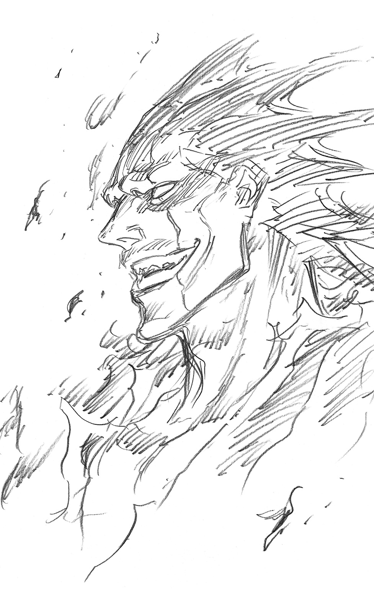
更木剣八の口から放たれた言葉を聞いた瞬間、痣城は『全身』を震わせた。
現在姿を顕現させている、死神の形をした『全身』ではなく――彼が融合しているものの全て――すなわち、瀞霊廷そのものに『悪寒』を走らせたのである。
瀞霊廷に住まう者達の中で、霊圧知覚に長けた者達は周囲の空気の異常を感じ取ったが――それを痣城の感情の変化だと気づく事ができたのは、極々少数だった。
「何故......だ......貴様の霊圧は......確かに消えて......」
声を上ずらせている自分に気づき、痣城はハッと目を見開いた。
――私が感じている......これは......まさか......。
必死にその震えを排除しようとするが、次から次へと湧き上がるその衝動は、痣城の心の根底そのものを揺り動かした。
痣城の中に湧き上がったその感情が、幼い頃、姉と共に虚の前に投げ出されたのと同じもの――『恐怖』だと気づいた瞬間、彼はその結論をひっくり返そうと雄叫びをあげた。
「うああぁああぁあああああああああああああああああぁぁぁぁぁぁあぁああぁぁあ！」
絶叫に呼応し、彼の姿は空気に溶け消え――
入れ替わりに、そこからありとあらゆる物が溢れ出た。
数百、数千に及ぶ武器や、無機質な石壁。それらが彼の感情を表しているかのように不安定に歪み合い、溶け合うように融合していく。
暗い天を衝く程の巨大な怪物となった『それ』は、原素から物質そのものを複製したのか――数百の機銃を身体に生やし、更木に向かって一斉に弾丸を撃ち放った。
――沈め、沈め、沈め、沈め！
心中で叫びつつ、怪物と融合していた痣城は何百、何千、何万という弾を撃ち続ける。
だが、轟音が周囲を支配する中――
更木とは別の不気味な霊圧が自分のどこかに湧き上がり、その地点――瀞霊廷の某所に意識を割いた瞬間、クリアな声が彼の耳に響き渡った。
――――――――「聞こえているかな？ 痣城剣八」
その声の響く場所が、【無間】の中だと気づき、痣城は心中で呻き声をあげた。
――......藍染......惣右介！
【無間】
「周囲の空気から、君の『恐怖』を感じ取ったものでね」
相変わらず全身を封じられたままだが、半日前に痣城によって解放された部分――口と片目を動かしつつ、藍染惣右介は静かに語り始めた。
「私の予想通りなら、君は今頃、更木剣八に怖れを抱き、狂瀾を既倒に廻らせようと躍起になっているところではないのかな？」
返事はないが、藍染は僅かに露出した目や耳から周囲の霊圧の揺らぎを察知し、相手がこちらの声を聞いていると確信する。
驚き、狼狽えているであろう強者の心中を想像し、大逆人は、かすかに口元を緩ませた。
「痣城剣八。君に伝えなかった事が、一つある」
藍染は獄中に封印されながら、痣城の状況について的確な言葉を紡ぎ始める。
「更木剣八は、確かに黒崎一護に敗北した」
現在の痣城の気配だけで、世界の様子が解るとでも言いたげに。
「だが、一つだけだ。黒崎一護が更木剣八よりも上回っていた要素は、たった一つだよ」
そこで藍染は口を閉ざし、一瞬だけ自嘲気味な笑みを浮かべた後、言葉を続ける。
「斬魄刀と肝胆相照らす事により、黒崎一護は一瞬にして尋常ならざる成長を遂げた」
「その度合いが、更木剣八の本能が導き出した計算を上回った。ただ、それだけの事さ」
言葉はそこで終わり、【無間】からは以前と変わらぬ【闇】が感じられるだけとなった。
藍染の言葉を受け、痣城剣八は、自らもまた、その『答え』に辿り着きつつあった。
――まさか......。
――眼帯だけが枷かと思っていたが......。
――更木の本能そのものが、自らの霊圧に枷をかけていたとでもいうのか!?
更木剣八の望みは、戦いだ。
だが、虐殺を望んでいるわけではない。
殺すか殺されるかという、闇夜の崖淵を歩くかのような闘争を好むのだ。
例えば、一定以上の強さを持つ好敵手に出会った場合――
最初の一撃で相手の力を計り、その敵と、ギリギリの殺し合いができるように己の霊圧を解放するのだとしたら？
眼帯の着脱は、その霊圧を微細に調節する方法の一部に過ぎないのだとしたら？
――馬鹿な。
痣城は、考える。
もしも、藍染の言う通り――更木が黒崎一護に負けた原因が、相手の爆発的な成長に対して、力の解放が間に合わなかった為だとしたら？
もしも、虚圏での戦いにおいて、黒崎一護よりも強い敵と戦い、更木の霊圧がそのレベルまで解放されていたのだとしたら？
もしも、最初に更木と相対した時の鬼道重唱が原因で――虚圏で闘っていた時よりも、遥かに高いレベルで更木の霊圧が解放されたのだとしたら？
もしも、シエンという『強敵』との戦いにおいて、その霊圧が更なる高みに引き上げられたのだとしたら？
もしも、現代兵器と合わせた攻撃により、更に、更に、更に――
もしも、もしも、もしも、もしも。
繰り返される思考の中で、既に『もしも』という単語は意味を成さなくなっていた。それらは既に可能性などではなく、結果として目の前に現れた『確定事項』なのだと理解し始める痣城。
最初から、最高火力である一刀火葬の多重詠唱で始末をつけておけば、あるいはそれで終わっていたのかもしれない。
だが、『倒せる最低限の力で倒す』という、無駄を嫌う彼の信条が災いした。
彼は、シエンという例外はあるものの――殆どは自らの手で、この短期間に更木剣八の力を引き上げてしまったのである。
同時に、痣城は理解する。
最新型の暗視装置が、目を護る為にある程度以上の光をシャットアウトするように――
自分の霊圧感知能力が、更木の霊圧を感知する事を本能的に拒否しているのだと。
――だとするならば、奴の......奴の今の霊圧は......
彼の怖れを具現化するかのように――
更木は、先刻まで動きを封じられていた筈の弾幕の中を、まるで霧雨でも払うかのように悠然と歩み寄ってくるではないか。
そして、兇笑と共に放たれる剣の一振りで、痣城の生み出した『武具の融合体』の大部分が破壊され、天を貫くかのような痛みが、痣城の全身を支配した。
――っっ!? がっ......なっ......!?
――......空気化して......避けた筈だ......！
彼の心中の疑問に偶然答える形で、更木はニヤリと笑って呟いた。
「......今のぁ......手応えあったな」
痣城の記憶に蘇るのは、穿界門の手前で更木が呟いていた言葉。
――『まあいいさ。空気をぶった斬るってのも、それはそれで面白そうだ』
――まさか......本当に空気を斬ったとでもいうのか!?
痣城はなりふり構わず、『雨露柘榴』の力を更木へと伸ばす。
刳屋敷にやった時と同じように、更木の身体と直接融合し、内部から身体を破壊する。
あの時とは比べものにならない反動が返ってくるだろう。
だが、痣城は迷いを無駄なものと切り捨て、瞬時に融合を行う事を覚悟する。
そして、更木の口から肺へと向け、『力』を滑りこませようとした瞬間――
――......？ ......っッ!?
力の先端から途轍もない熱量が伝わり、衝撃と共に全身に痛みが突き抜ける。
まるで、赤く輝くまで熱したおろし金で、指先を焼きながら削られているかのようだ。
――力が......搔き消されるッ!?
――この痛み......どこかで......！
痣城の脳裏にフラッシュバックするのは、涅マユリと闘っていた滅却師の顔だった。
――そうか......！ あの滅却師が......散霊手套を解放した時の......！
石田雨竜が散霊手套と呼ばれる手袋の力を解放し、周囲にある霊子で構成された物質を隷属させて涅マユリを撃破した際。その時に、周囲の空気や石壁が崩れ始めた時――あの一帯に融合していた痣城自身が感じた痛みと、ほぼ同質のものだった。
違いがあるとするならば、その性質だろう。
滅却師の力が強制的な支配による霊子分解だとするならば、今の痛みは、更木の放つ圧倒的な霊子の熱量によって、霊子結合が強制的に灼き切られる感覚だ。
恐らく、更木自身は全く意図していないだろう。
だが、彼自身の強過ぎる霊圧に、周囲の霊子そのものが耐えられないのだ。
一刀火葬の炎も、一発でビルすら倒壊させる機銃の弾丸も、全て、剣八の身体に届く直前で灼き溶かされていたのである。
流石に一刀火葬による熱のダメージはあるようだが、弾丸の影響を全く受けていないところを見ると、あるいは器子すらも崩壊させている可能性があった。
唯一無事なのは、更木が自身の霊圧を通わせている死覇装と、彼の持つ斬魄刀。そして、やはり彼自身の力で生み出された霊子の足場だけとなっている。
それと同じ事が、先刻の斬撃でも起こっていたのだ。
更木の剣圧は、既に、空気に含まれた霊子そのものを灼き尽くすレベルに達している。
目の前に突きつけられた事実に、痣城の心に、捨てた筈の感情が次々と蘇り始めた。
――待て......こんな......馬鹿な......。
――何かの間違いだ......そうだろう、雨露柘榴！
彼は心中で叫ぶが、それに答える声はない。
いよいよもって、彼の『恐怖』が『絶望』へと塗り替えられかけたその時に――
更木が、地獄に引きずりこむかのような声を喉の奥から絞り出した。
「スカスカするもんかと思ってたが......空気を斬るってのも、意外と悪かねぇな」
――......まずい。
同時に、彼は顕現させていた物を全て空気の中へと溶けこませ、その姿を完全に更木の視界から消し去った。
「あぁ？ ......おい、やちる。あいつがどの辺にいるか解るか？」
「んーとね、多分、ここらへん全部そうだよ、剣ちゃん！」
まるで、ピクニックで目的地を探しているかのようなノリで、痣城の位置を探ろうとする二人。
結局正確な位置は解りそうにないと判断すると、剣八は小さく溜息を吐く。そして、今までで一番楽しそうな笑みを浮かべて、剣を思い切り振り上げた。
「まあ、しょうがねえ。この辺にあるもん、全部ぶった切るか」
そして、更木は身体を限界まで捻った後――
「避けろよ、やちる！」
「うん！」
勢いよく回転しながら、己の力を一閃させた。
周囲の全てを薙ぎ払うような一撃。
そして実際、やちるを除いた全ての物を、雷光の如き剣圧が吞みこんでいき――
黒腔と現世の間に、再び大きな亀裂が生み出される結果となった。
虚圏
「......驚いたよ。まさか刀剣解放までするとはね」
シエンの声には、賞賛の言葉とは裏腹に、深い憎しみの感情がこめられている。
砂漠と瓦礫に塗れた虚夜宮の跡地。
その中心に立っていたロカに、大きな変化が訪れていた。
彼女の顔の右半分を覆っていた髑髏が完全に消失し、代わりに、細い白糸の束が何重にも頭に巻きつき、包帯のように右目を覆い隠している。
白い蜘蛛の巣は体中に絡みついており、仕立てられたばかりの豪奢なドレスの上から彼女の身体のラインを浮き上がらせる形で締めつけていた。
全体として白の領域が多くなるが、その白色は下地のドレスと見事に調和しており、美しいと呼ぶには十分な姿と言っていいだろう。
更に、彼女の背には、上部に伸びる形で巨大な４本の腕が生えていた。
腕というよりも、それは蜘蛛の脚に近い形状をしている。透き通るような純白に染まる外骨格の先には、鋭い爪が備わっていた。
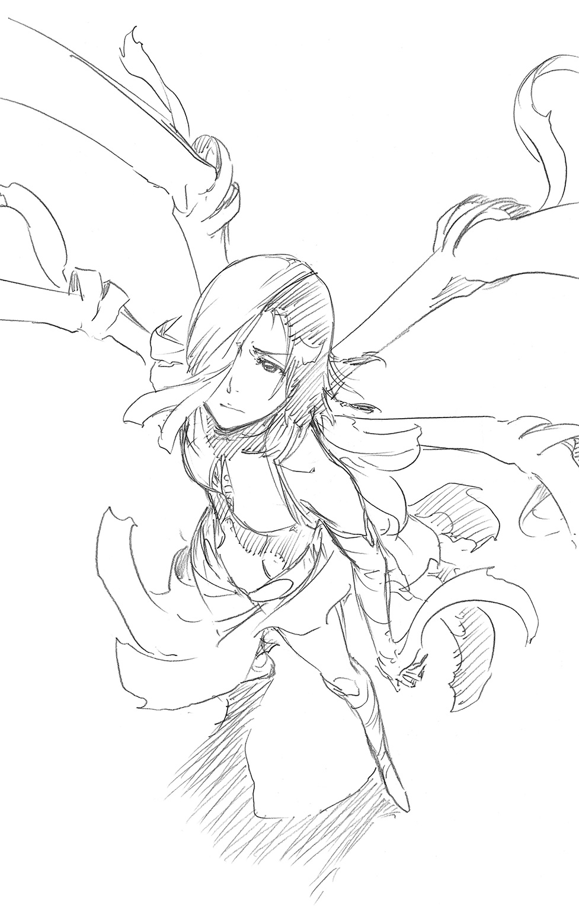
「なるほど、そう言えば、君は元々蜘蛛状の中級大虚だったな」
沈黙を守る彼女に、シエンは更に言葉を続ける。
「それで？ どうやって僕と闘う気だ？ さっき君が真似た技では、僕に対して何もできないというのは解っているだろう？」
シエンは、既に彼女の『能力』を理解していた。
何故なら、それは既に、ザエルアポロの記憶の中に存在していたからだ。
彼女が『反膜の糸』の能力を与えられ、現在の形に改造された理由は、ザエルアポロ・グランツの全てをバックアップする為だ。
最終的に、シエンを生み出したように――ザエルアポロを生み出す為に必要なのは、バックアップした情報から、再びその存在を再現する事である。
未完成とはいえ、ロカにもその力が備わっていたとするならば――仮に彼女が、ザエルアポロ以外の情報をその身に取りこんだ場合、部分的に再現する事は可能なのか？
その答えは、今、シエンの目の前で実演された通りだ。
「ザエルアポロは、この事態を恐れて君に力の使い方を教えなかった筈だが......」
シエンは、自分の中にあるザエルアポロの記憶を辿り――一つの推測に辿り着く。
「それもネリエルの入れ知恵か......それともザエルアポロのバックアップを覗いたか？」
一応、バックアップ装置といえども、ザエルアポロの記憶そのものはロカ自身には読み取る事ができない筈だ。だが、この研究所周辺で『糸』を伸ばしていた所を見ると、周囲の瓦礫や録霊蟲に残されていたデータを読み取った可能性もある。
同時に、彼は考える。
彼女は、本当に戦えるのか？ という点についてだ。
先刻の分身や十刃落ちの技については、元から蓄えていた知識だろう。ザエルアポロ自身が研究を進めていたのかもしれない。
だが、肝心の戦闘能力はどこまで再現できているのか。それが現在重要な点だ。
確実に、あの姿での戦闘らしい戦闘は初めての筈だ。
破面となる前の大蜘蛛形態の時には実験と称して何度も闘わせていたが、今の状態にその経験が応用できるかどうかは怪しいところだ。
ザエルアポロならば、適当な配下の虚をぶつけて様子を見るところだろうが――ここで相対しているのはザエルアポロではなく、シエン・グランツだ。
彼は自分の欲求を満たす事を最優先とし――なんの様子見もなく、殺意をこめた触手をロカへと伸ばす。
伸ばす、というよりも、撃ち放った、という方が相応しい速度。
ボウガンの如き勢いで迫る無数の触手を前に、ロカは、再び『双児響転』を用いて身を躱す。残像が搔き消え、別の場所に姿を現したロカだが――それを読んでいた次の触手が、彼女の胸を貫いた。
が、その姿も再び搔き消える。
次の瞬間、シエンは即座に自分の背後に手を翳し、躊躇無く虚閃を撃ち放った。
と、そこにあったロカの上半身が閃光に消え――残された下半身が煙のように消え去る。
そして、次に現れた彼女の身体を触手が薙ごうとした瞬間、ロカは背中の脚の先端から無数の糸を射出し、その触手を搦め捕った。
――分身できるのは、４体までか。
本来の技の持ち主ならば、５体まで分身できた筈だ。
「......やはり、１００パーセント再現できるわけじゃあないようだね」
クツクツと笑うが、シエンの目に宿る憎悪の炎は全く薄らぐ様子はない。
「しかし......最後の身のこなし......少しはやると見ていいようだ」
そんなシエンの声を聞きながら、ロカは静かに呼吸を整える。
戦い。一騎討ち。命のやり取り。
そんな類のものは、実に２５０年振りだ。
彼女の心に蘇るのは、最後に刻まれた、刳屋敷剣八との戦いの記憶。
何もする事ができぬまま、一方的に力の差を示された。
――「お前、なんにも中身がねえな」
刳屋敷の声と目には、確かに憐れみの感情がこめられていた。
――「俺は、人形を斬る程ヒマじゃねえんだ、出直してこい」
結果として生きながらえた彼女だったが、その後、実際に人形のように扱われる日々が続き――ロカの中で、刳屋敷の言葉は呪いのように繰り返され続ける。
自分は何者なのか。
本当に、ただの人形に過ぎないのか。
人形と呼ばれる事に疑問を持ち、それでも何もできない自分自身を否定する。
鬱屈した日々が何年も何年も続いていたが――
観音寺達との出会いを経た今ならば、あの時の刳屋敷に何か言葉が返せるかもしれない。
――私は人形で構わない。
――いつか誰かに腕を引かれ、『暖かい場所』に行く事を夢見る人形であればいい。
そして今、彼女の夢は、既に叶っている。
ロカはただ、その『暖かい場所』を護る為に――
自分の辿り着いた場所から逃げ出さない為に、目の前の男と闘う道を選んだ。
だが、それは絶望と隣り合わせの道だ。当然ながら、彼女は更木やシエンのように、崖際での戦いを楽しむような性癖は持ち合わせていない。
楽しみなど無いまま、彼女は目の前の男を止める為の策を練り続けた。
結果として彼女が辿り着いた結論は――崖の夜道など比べものにならない程に危険な、溶岩の上に敷き詰められた薄氷の上を歩くような道だった。
一撃。
ロカがシエンを止める為に必要な『それ』を撃ち放てるのは、ただの一度きりだろう。
しかも、その一撃に、自分の身体が耐えられるかどうかすら解らない。
だが、勝算がないわけではなかった。
彼女は決して、死ぬ為にここに来たわけではないのだ。
――あの力の仕組みさえ......コピーできれば......。
よほどその『技』を信頼しているのか、ロカは、その一撃の為に虚圏中に糸を張り巡らせ、少しずつ霊子を吸収し続ける。
――あと......少し。
現世の時間で、２分から３分。
情報のダウンロードと、その技を放つに足る霊圧を溜めるのに、恐らくはそれだけの時間が掛かるだろう。少なくともそれまでの間は、防御に徹する必要がある。
並の相手ならば、双児響転を繰り返して攻撃を避け続ければ、問題なく耐え切れる。
だが、この戦いの敵はシエン・グランツ。並や上などという単語が馬鹿馬鹿しくなるような存在だ。
この絶望的な魔人を相手に、たった一撃だけで勝負を挑もうとしているロカ。
その試みはあまりにも無謀で、あまりにも馬鹿げていたが――
彼女は、その道から逃げ出す事はしなかった。
どのような形であれ、それは、彼女が初めて自分の意志で選んだ道だったのだから。
なんとか時間を引き延ばそうとしたロカは、シエンとの会話を試みる。
「私との接続が切れた時......一体何が......。......!?」
だが、それは自分に隙を生み出しただけだった。
シエンは響転を用いて一瞬で間を詰め、数十の触手をロカに向かって振りかざす。
「甘いよ。時間稼ぎなんて」
呟きと共に、触手による突きが波のように繰り出され、その一本一本から追い打ちの虚閃が連続で撃ち放たれた。
「気づかないとでも思っているのか？ 君が頭を捻った程度の企みに」
砂漠に巨大な砂柱が巻き上げられ、かつてザエルアポロの宮があった地点に、巨大なクレーターが生み出される。
と、シエンの視界の隅で何かが動く。
彼はすかさずそちらに触手を伸ばし、その人影を摑み上げようとしたのだが――
バチリ、と、シエンの触手が更に太い触手によって打ち払われた。
見ると、膨大な量の『糸』を縒り合わせる事で具現化した８本の触手がロカの背後に出現し、４本の蜘蛛脚の先から伸びる糸によって巧みに操られているではないか。
「......『蔦嬢』か！」
ほんの一時期だけ『６』の数字を冠していた少年の刀剣解放能力を見て、シエンはいよいよもって確信する。
ロカは、完全に自分の戦い方を心得ているのだと。
彼女の力は、反膜の糸によってコピーした情報を元に、糸でその『力』を具現化させ、背中に生えた４本の蜘蛛脚で自在に操るというものだ。
知識だけではなく、彼女は相手の『経験』も同時にコピーする。
自転車の乗り方を知識として知っていても、即座に乗りこなす事はできない。だが、彼女の力は、『自転車を乗りこなせるようになった感覚』まで同時に複写し、共有する事ができるのだ。
そして、現在彼女が使っている８本の触手は、かつて別の十刃が使用していたものだ。
ザエルアポロが、情報蒐集の為に、他の十刃に『糸』を接続させていた時の情報を利用しているのだろう。
シエンは更に攻撃を重ねるが、ロカは『蔦嬢』の持ち主さながらの動きで触手を操り、巧みにその攻撃を逸らせていく。
――妙だな。
――『蔦嬢』は、ここまで頑丈ではなかったぞ。
――そもそも、彼女が再現したものは本物よりも性能が落ちる筈だが。
防御に徹しているからという事もあるだろうが、それだけでは今のシエンの攻撃を防ぎ切る理由にはならない。
だが、シエンはその理由をすぐに知る事となる。
撃ち放った王虚の閃光が相手の触手に当たった瞬間、その曲線に沿った形で軌道を修整されたのだ。
――ッ！
――こいつ......触手の周りに『反膜の糸』を張って強化を......！
光に包まれた外側と内側を境に、全てを拒絶する壁となる『反膜』。それを糸状にできるのはロカだけだが、それは使い方によっては『王虚の閃光』すらも防ぐ盾となる。
王虚の閃光が虚圏の空を駆け、それに合わせて空間そのものが拉げていった。恐らく、彼女に直撃すれば一瞬で勝負はつくだろうが――『糸』と『蔦嬢』がある以上、その一撃を喰らわせる事が至難の業と言える。
――何の技を使う為に時間稼ぎをしているのか知らないが......
――本気で......僕に通用すると思ってるのか？
怒りが、彼の心を昂ぶらせる。
その高揚は、本来なら彼から冷静さを奪う事になるのだが――相手が防戦一方である苛立ちと、純粋な憎しみが邪魔をして、いまいちハイになりきれない。
だが、冷静なままでいられるならば、それはそれで重畳だ。
殺し合いそのものは、あとであの死神といくらでも楽しむ事ができるのだから。
目の前の女については、『糸車』を取り出す為に、冷静に殺すに越した事はない。
シエンは自らの触手を更に伸ばし、相手の『蔦嬢』を一本ずつ搦め捕ろうと試みる。
「！」
ロカの顔面に、焦りの色が走る。
根元から絡みつかれ、急速にその動きを鈍らせる『蔦嬢』。
「消え去れ」
シエンは薄く笑いながら、憎悪をこめてそう呟き――
がら空きとなった彼女の上半身めがけ、両手と口から三点同時の『王虚の閃光』を撃ち出した。
だが――次の瞬間、彼女は『蔦嬢』をあっさりと切り捨てる。
そして、自らの蜘蛛脚から伸びる糸を、全て自分自身の身体に接続したではないか。
シエンが眉を顰めるのと同時に、彼女は大きく口を開く。
――まさか。
ロカが何をするつもりなのか理解すると同時に、シエンは残された触手で自らの身体を覆い隠し、完全な防御態勢に移行した。
そして、次の瞬間――
彼の放った技はロカの口へと吸いこまれ、一瞬の間を置いて、そのままこちらに吐き返された。
爆炎が虚圏の空に立ち上り、その場を中心として一際大きなクレーターが生み出される。
『虚閃重奏』。
相手の虚閃を吞みこみ、自分の虚閃を上乗せして打ち返すカウンター技だ。
本来ならネリエルしか使えない技だが、ロカは、糸で己自身の身体を操る事により、彼女の技を再現してみせたのである。
だが――自分のものでもない技で、王虚の閃光を受け止めるのは無茶だったようだ。
ロカは勢いよく血を吐き出し、顔を蒼くしながら砂の上に跪く。
糸で造った擬似的な『蔦嬢』を身体から完全に分離させ、その場でゆっくりと息をする。
呼吸の度に体中が悲鳴をあげ、全身を痛みが蝕んでいく。
しかし、ロカの心はその程度の痛みでは折れなかった。
ザエルアポロの手によって、麻酔無しで自分の身体を解剖された時に比べれば、まだ地獄とは言い難い。
彼女は自分にそう言い聞かせながら、ゆっくりと立ち上がって前方を見る。
自らの王虚の閃光を喰らったシエンの身体は、消滅こそしなかったものの、触手の何本かが千切れ飛び、ロカよりも多くの血を大地に染みこませていた。
だが、その血は妙に透き通っており、砂に落ちると同時に、蒸発するように霊子の塵へと変貌していく。
「貴方は......もしかして、肉体を持っていないのですか？」
彼が自分の内側から生まれ出た者だという事は理解していたが、ザエルアポロの肉体と融合を果たしているものとばかり思っていた。
しかし、彼の様子を見る限り、シエンはロカの紡ぐ霊子の糸や、それによって構築された『蔦嬢』と同じように――『霊子を無理矢理固形化した状態』に過ぎないようだ。
「なんて無茶を......。その身体でそんな戦い方をしたら、消滅しかねません」
「僕の心配をしている場合かい？ ロカ・パラミア」
息を僅かに荒らげながら、シエンは不敵に言い放つ。
「危なかったよ。もしも倍返しされていたら、腕の一つぐらいは千切られていたかもしれない。だが、君は今の王虚の閃光に、自分の虚閃を上乗せすらしなかったらしい」
「............」
「やはり、今の虚閃重奏も完全に防御の為だけに使ったようだね......」
シエンは触手を再生させながら、ロカに問う。
「君が準備している攻撃は、今の『王虚の閃光』よりも上という事か......」
焦燥に満ちた表情で、ロカを強く睨みつける。
「一体何をその『糸』で再現するつもりだ......！ スタークの群狼か？ バラガンの呪いか？ それとも、最大解放状態のヤミーの巨体でもその『糸』で再現するつもりか？」
「............」
「それを超える力など、この虚圏に存在したとすれば藍染様か今の僕だけだ！ だが、僕の力をコピーしたところで、君が１００パーセントの力を引き出せるとは思えない。弱体化した力では相打ちすらできないと、君も解っている筈だ！ そして、藍染様の戦闘データは、虚圏には存在しない！」
そこまで一息で叫んだ後、シエンは静かに目を伏せ――
「......なあんてね」
と、口元に歪んだ笑みを貼りつけ――数十本の触手から、一斉に『王虚の閃光』を撃ち放った。
閃光の一つ一つが空間を歪ませ、互いに引き寄せ合い、絡まりながら虚圏の空気を切り裂いていく。
だが、その矛先は、ロカとは全く反対――シエンの背中の方角だった。
「......ッ！」
口から血を垂らすロカの左目が大きく見開かれ――
次の瞬間、虚夜宮のとある区画が、閃光の中に消え去った。
光が太陽のように輝き、ついで、虚圏中を震わせるような轟音が鳴り響く。
消えたのは、虚夜宮の中でも特に高い場所にある区画――
半分崩壊した、とある塔の『天蓋』そのものだった。
「間に合う、とでも思ったのかな？」
「な......ぜ......」
息を荒らげながら、ロカはその破壊を見つめる事しかできなかった。
彼女の目に映るのは、塵と化していく塔。そして、彼女は、接続先を失った事で落下していく『反膜の糸』の動きを感じ取る。
「知らないとでも......思っていたのかい？ 僕が生まれてからの短い間......僕は自分をザエルアポロだと思いこんでいたんだ」
ロカの浮かべた表情が愉快だとばかりに、シエンは彼女の身体を特に長い翼状の触手で摑みあげた。
「そんな僕が、虚圏に蓄積されていたデータを覗かない筈がないだろう？」
まだ虚閃重奏の反動によるダメージが残っているのか、ロカは特に抵抗する様子も見せない。そんな彼女に顔を近づけながら、シエンは相手に絶望を与えるべく口を開いた。
「......ウルキオラと黒崎一護......彼らの変貌と決着を、僕が知らないとでも思ったか？ あの天蓋周辺や石壁内に住まう録霊蟲が、その情報を全て蓄積していた事も」
「......ッ！」
「そして、そのどちらかの力をコピーすれば、僕を殺せるとでも思ったか？」
触手に力をこめ、ロカの身体を締めつける。
「あぁッ......！」
短い悲鳴と共に、彼女の肋骨にヒビが入る。
「姑息なんだよ！ 地中に糸を隠してあそこまで這わせるなんてね！ ......だけど、狙い所は良かった。君に暴走した黒崎一護の力を再現されていたら、ほんの少しだけ君を殺すのが面倒臭くなっていただろうからね」
そんな事をペラペラと喋り倒した後、シエンはロカにゆっくりと告げる。
僅かに浮かべた微笑みは、彼女ではなく自分自身に向けられていた。
「終わりだよ。ロカ。......最後にこんな事を言うのもなんだが......僕は君が憎くて仕方がない。君の別人格のような形で生み出された僕からすると、ロカ・パラミアという存在はコンプレックスにしかならない」
シエンは、そこで一旦目を逸らし――僅かに憎しみの色を薄めて呟いた。
「だが......生まれた事で、僕はあの死神との殺し合いを、生きる喜びを経験できたのは確かだ。その一点においては感謝しよう。......生んでくれてありがとう、とね」
右手でロカの顎を持ち上げながら、名残惜しそうにゆっくりと睨め回す。
「だけど、憎しみも感謝も、これで全て消える。僕は君の影に過ぎなかったが、これからは、君が僕の一部になるんだ」
そして、彼の纏う無数の触手が蠢いたかと思うと――その先端がそれぞれ口を開き、鋭い牙を覗かせた。
「他人の技を盗んだ姑息な方法といえど、僕と一瞬でも切り結べた事には敬意を表するよ。褒美として......上半身は消し炭にするつもりだったけど、残さずに食べてやるとしよう」
「......ッ！」
ロカの顔に、触手の牙が少しずつ近づき始める。
いよいよその顔が食い千切られようかという刹那――
彼女は、複雑な感情をこめた瞳でシエンを見る。
「貴方はやはり......ザエルアポロ様ではないのですね」
「何を言っている？ たとえザエルアポロだろうと、逆らった君を壊す事に変わりは......」
そう呟きかけたところで、シエンはふと、動きを止めた。
彼女の瞳に含まれる感情の中に、憐れみの色があったからだ。
「......何故、僕をそんな目で見る？」
「ザエルアポロ様なら......この程度の囮に引っかかる筈など......ありませんから」
「な......に......？」
ロカが何を言っているのか解らず、シエンは思わず周囲の様子を探る。
だが、周りには何の変化も見られない。
「そして......あの方は、私に感謝などしません。たとえどのような状況でも」
彼女は一度口を閉ざし、改めてシエンの顔を見つめた後、言葉の続きを口にした。
「私は......もっと貴方の事をちゃんと観るべきだったのかもしれません。そうすれば、別の形で貴方と向き合えたのかもしれない......」
憐れみの中に贖罪の色も混じり始めたところで――
彼女の身体を覆う『糸』が光を放つ。
「なッ......!?」
ロカの体内。血管と神経の全てに張り巡らされた『糸』に、虚圏中から集められた霊子が圧縮され始めた。
次の瞬間、彼女はその膂力だけで、自分を締めつける翼状触手を引き千切る。
「ばか......な」
相手の内側から溢れる霊圧を感じ取って、シエンは大きく飛び退った。
――完全に虚化した黒崎や、二段階目の帰刃を見せたウルキオラよりも上の力だと？
距離をとりながら、彼は寒気を感じていた。
ゾクリ、と、その全身を震わせるのは、恐怖か――あるいは、歪んだ歓びか。
彼は確かに、目の前の女と自分、相方に『死』の臭いを感じ取ったのである。
「まさか、藍染様か!? 崩玉と融合した藍染様のデータが、どこかに存在したと......」
ハッと思い到り、叫ぶシエン。
「もしかして......尸魂界の監獄にまで『糸』を伸ばしたのか!?」
だが、ロカは小さく首を振り――答えに到る言葉を口にした。
「私が......何か月も空座町を彷徨ったのは御存知でしょう？」
空座町。
その単語を聞いて、シエンは答えに辿り着き、全身を強ばらせた。
――今のうちに。
――発動する前に、殺さねば......。
慌てて触手をロカの首筋へと走らせたが――その全てが、悉く千切れ飛ぶ。
「......ッ！」
シエンの驚愕に合わせ、彼女は一つの『答え』を口にした。
「私がダウンロードしたのは......藍染様を止めた力です」
空座町 なんでも屋『うなぎ屋』 事務所内
「だーかーら、うちは鰻屋じゃねえっつってんだろ！ そもそも、弓沢の方で警察とヤクザが大捕物始めたって話じゃねえか！ そんな時に出前なんかさせんな馬鹿野郎！」
ガチャリと電話を切った後、なんでも屋である『うなぎ屋』の店長――鰻屋育美は、大きな溜息を吐きながら窓の外に目を向けた。
町の中に捕物が広がっているのか、通りをパトカーがひっきりなしに走っていく。
「参ったね。あんたも外に出ねえ方がいいな。しょうがねえ、今日はずっと内職やって貰うよ」
店長の言葉に、アルバイトの少年は文句を言うが、店長は頑として聞き入れない。
少年は大きな溜息を吐くと、なんでも屋として依頼された内職作業を続けていった。
アルバイトの少年。
彼は、『それ』の存在に気づかない。
鮮やかなオレンジ色の髪の下――己のうなじの中心辺りに、何本も絡み合った『反膜の糸』が繫げられていたという事に。
そして、自分のとある『データ』を複写されていたという事に――
霊力を全て失った少年は、最後まで気づく事ができなかったのである。
虚圏
「なん......だ......これは......」
シエンの声は、心なしか震えていた。
――死神......？ いや、虚の力......。どっちだ......？
様々な種類の霊圧が入り乱れたその力に、シエンは戸惑いを覚えた。
同時に、彼は感じ取る。
それは、決して軽々しく触れられるような力ではないと。
力の持ち主以外が使用した場合、いかなる副作用が起こるか解らない代物であると。
「やめろ......そんな力を使えば......君もただでは済まなくなるぞ。ロカ・パラミア」
「......承知の上です」
ロカは、その少年と繫がった時点で全て理解していた。
自分には、彼の力を行使する資格などないと。
その力は、少年が数多の出会いと別れを繰り返し、幾度もの死地と絶望を乗り越えて築き上げた力に他ならない。
斬魄刀との間に結んだ『絆』そのものと言ってもよい。
そんな力を、自分のような『何者でもない存在』が、軽々しく使うなどおこがましいにも程がある。莫大な力を制御する事などできず、己の身をも破壊する事になるだろう。
そこまでの確信があったにもかかわらず――ロカは、少年の記憶と経験から、その力を再現しようと試みた。
少年自身は、現在霊力を全て失っている状態なので、簡単な事ではないだろう。
だが、他に――シエンを止めるに足る力が無いのも事実だった。
藍染の力は、『崩玉』が無ければ構築できない。糸だけでは、崩玉やバラガンの『呪い』といった力までは再現できないのだ。
だからこそ、彼女は――自分に降りかかる全ての反動と、浅ましいとの誹りを受ける覚悟で、シエンを前に力を発動させたのである。
自分の手を引いてくれた者に会う為、『暖かい場所』に戻る。
人形として見た、ささやかな夢を叶える為に。
彼女自身の我が儘を叶える為に――
ロカ・パラミアは、自分自身の身体を贄とした。
周囲に巻き上げられた『糸』が黒く染まり、何かの形をロカの前方に編み上げていく。
それは、黒い人型だった。
髪の毛よりも遥かに細い糸の一つ一つに、桁外れの霊子が圧縮され――その糸が何十、何百、何千、何万、何億と寄り集まる事で、絶大なる『力』が虚圏に紡ぎ上げられる。
続いて、影のようにしか見えない黒い人型の手に、やはり漆黒の刃が生じ始めた。
と、ロカの腕から小さな破裂音が響き、身体の一部が鋭く破裂する。
彼女の腕が、その力の流れに耐えられなかったのだ。
それでも、彼女は止まらず『力』を構成し続ける。
首が、脚が、背が、臓腑が。
次々と霊圧凝縮の反動にうち負け、新たな血を噴出させた。
「よせ......」
シエンが何かを呟いたが、もう、ロカの耳には入らない。
彼女は黒い刃が完成したのを見届けると、力強く微笑んだ。
もしも自分がこのまま死んだ時に――その顔のまま死ねるように。
もしも観音寺が自分の死体を見つけた時、少しでも安堵してくれるように。
そして、彼女はその『刃』を振り下ろす。
斬魄刀の名も、その技の名前も――彼女は全て知っていた。
だが、決してその技の名前を口にする事はなかった。
自分は他人の人生を覗き、技を盗んだに過ぎない。
だからこそ、その名だけは、少年から奪ってはならないのだと。
次の瞬間――
力の正体が摑めず、困惑するシエンを巻きこみ――
闇に包まれた虚圏の夜を、一際暗い影が、深く優しく包みこんだ。
――なんだ？
――ここは......どこだ？
気づくと、シエンは暗い場所にいた。
ただ、何の感覚もなく、果てしない暗闇の中に閉じこめられている。
温度を感じる為の皮膚の感覚もなく、視覚も聴覚も全て奪われているかのようだ。
だが、一つだけ、感じるものがった。
死の臭いだ。
記憶の中に焼きつけられる、懐かしくも新鮮な『死』の臭い。
シエンは、その瞬間理解した。
自分を包みこんだ黒い力の正体は解らない。
だが――今の自分は、果てしない『死』に包まれているのだと。
死を身近に感じ、シエンは戸惑いつつも、その素晴らしい空気に酔おうとした。
この一瞬の間だけ――自分の世界には、あれほど望んでいた『死の臭い』が満ちていたのだから。
しかし、何故か、シエンは快感に浸る事ができなかった。
――何かが足りない。
――何だ？ 自分は一体どこに何を置き忘れてきた？
そして、彼は気づく。
自分がまだ、『誓い』を果たしていないのだと。
――そうだ。まだだ。僕はまだ、『誓い』を果たしていない。
――生まれて初めて交わした、あの約束を守っていないんだ。
――早く、早く戻らないと。あの死神の所へ。
――また、あの甘美な殺し合いを......死の匂いに塗れた舞踏を......。
どこかに向かって手を伸ばした所で、彼は、その指先が崩壊していくのを感じとった。
指先だけではない。皮膚の表面から次々と霊子が零れ落ち、舌から赤い肉の色が覗き始める。
――待て、待ってくれ。僕は、『必ずまた殺し合う』と誓ったんだ。
――僕は、僕はまだ、死ぬわけには......
駄々を捏ねる子供のような表情で、声にならない叫びをあげるシエンだが――
そんな言葉に惑わされる事なく、暗闇は滅びの歌を歌い続け――
シエンを包みこむ『死』は、ゆっくりと彼の身体を崩壊させていった。
暗い場所から生まれた狂気を、再び暗い場所へと還す為に。
虚圏
「............」
ロカは、かろうじて生きていた。
あの力を発動させた後、具体的に何が起きたのかは解らない。
ただ、周囲にはもう何も残っていない、という事だけは理解できた。
散在していた筈の瓦礫はもはや一つも残っておらず、辺りには、砂が流れる音だけが響き渡っている。
力を行使した瞬間――ロカは、自分の身体のあちこちが弾け飛ぶのを感じ取った。
実際、今も腕と脚が片方ずつ千切れかけたままなのだが。
死を覚悟し、このまま自分も闇に吞まれて消えるものと思っていたロカだったが――
技を撃ち放った瞬間に、彼女の中に流れてきた『記憶』が、彼女の意識をかろうじて闇の中から引きずりあげた。
オレンジ色の髪の少年の、力の根源の一つ。
様々な人々との出会いと別れの記憶。その一部が彼女の中にも流れこんできたのだ。
その少年の過去を垣間見て、彼女は思う。
――ああ、眩しいなあ。
――こんなに強い人の力を、こんなに優しい人の力を、私は自分の為に利用して......。
――本当に、私は......。
ロカはそのまま目を閉じ、全てを砂の流れに任せようとしたのだが――
ふと、少年の記憶の中に、一際目立つ男が現れた。
――『ボハハハハハー！』
――『逃げるんだボーイ！ ここは私に任せておけ！』
――『子供達は私の活躍を観て胸躍らせ、悪霊に立ち向かう私の姿を観て......勇気のなんたるかを知る......！』
――『そんな彼らの観ている前で......私は敵から逃げるわけにはいかないのだよ』
――『ユーは......今日から私の......一番弟子だ......！』
その男は、少年の記憶の中でも、ロカが観たのと同じ調子で話していた。
彼は、変わらなかった。
藍染を倒し、世界を救う少年の前でも、単なる虚に過ぎない自分の前でも。
ドン・観音寺という男は、変わらずに『ヒーロー』であろうとし続けていたのだ。
彼女は、その記憶を自分に見せてくれた少年に感謝し――
溢れ出る涙を拭いながら、己の全身に『糸』を張り巡らせ、千切れかけた四肢を強制的に繫ぎ合わせた。
そして、『糸』の力を借りてゆっくりと立ち上がると――
彼女は黒腔の扉を開き、背中の蜘蛛脚で己の身体を操りながら、一歩一歩確実に虚圏の闇の中を進み始める。
その先に待っている、彼女にとっての『ヒーロー』の下に帰る為に。
十九章
現世 空座町 廃病院屋上
空に時折『ヒビ』が走り続ける空座町。
その亀裂が生じる様子が見えていたのだが、空を飛べない観音寺にはどうしようもない。自家用セスナを買うべきかどうか真剣に悩み始めつつ、彼は何もできない時間を悶々と過ごし続けていた。
「ううむ......カラクラオーシャンブルーはまだ戻らないようだが、ロカ嬢が心配だ......。私の力でなんとかあの門を開くことはできぬだろうか!? ハッ！ ホッ！ オープン・ユア・アイズ！ ワールド・イズ・シャァァァイニィィィングッッ！」
適当なかけ声と共に、屋上でポーズを取り続ける観音寺。
「むう......空に目や口を開かせるようなものだと思うのだが......。あるいは、世界と一体になる為に禅パワーが必要なのかもしれん......」
冗談でもなんでもなく、本気でそんな事を考えていると――
目の前の空間が割れ、目の前に薄暗い世界が広がった。
「なんと!? 私のＳＡＴＯＲＩが天に通じたのか!? これからはこの技を観音寺流裏奥義・観音開きと......」
そんな事を言いながら中に足を踏み入れようとしたのだが――
一瞬早く、暗闇の中から白と赤の入り交じった影が倒れこんできた。
「!? なッ......」
それが、背中に４本の巨大な蜘蛛脚を生やしたロカだと気づき、観音寺は慌ててその身体を抱えこむ。
「ロカ嬢！ しっかりするのだ！ ロカ嬢！」
「......ぁ......？ 観音寺......さん？」
「おお、無事か！ しっかりするのだ、今、医者に......」
「大丈夫です......いま......自己修復しますから......」
彼女はそう呟くと、よろよろと立ち上がりながら、階段入口横の壁に寄りかかった。
そして、『反膜の糸』を周囲にいくつか張り巡らせ、石や大気、植物に宿る霊子を少しずつ吸収する。
霊子は糸を通じて彼女の全身を巡り、薄く光りながら傷口を癒し始めた。
「おお......」
少しずつ傷が塞がっていく様子を見て、観音寺はその幻想的な光景に息を吞む。
「それにしても、その背中のサイバーアームは一体......？ なにやら服装も替わっているが......うむ、まあ、大丈夫だ！ その姿もしっかりと似合っているぞレディ！ この私が保証しよう！」
彼なりの励ましに、ロカは何か言葉を返そうとしたのだが――軽く咳きこみながら、血を吐いてしまう。
「ロ、ロカ嬢！」
「心配いりません......さっきより、大分楽になってきましたから......」
「ほ、本当に大丈夫なのか、ロカ嬢。私に何かできる事はないかね!?」
露骨にオロオロしながら尋ねる観音寺に、ロカは少し考えこんだ。
そして、数秒後。
ロカは、少し恥ずかしそうに目を伏せながら口を開いた。
「観音寺さん......私......」
彼女は、観音寺の名を呼びながら、彼に対して『笑顔』を浮かべようとする。
お礼と共に、彼に見せたかったのだろう。
自分が、観音寺の手によって救われたという証明を。
――私は、やっと......『自分』を手に入れる事ができたんです。
――貴方のお陰です。観音寺さん。
――観音寺さんは......私を救ってくれたんです。
そう言葉を紡ぎ、彼女は観音寺に笑いかけるつもりだった。
口の筋肉が、笑顔の形を作り出そうと収縮し始める。
だが、その瞬間――
彼女の両腕と４本の『蜘蛛脚』に衝撃が走り、笑顔と言葉が強制的に搔き消された。
「......ッ!? ......ぁ......アアァアッ！」
苦悶の表情と共に、悲鳴があがる。
観音寺は、その瞬間に何が起こったのか、しっかりと目に焼きつけていた。
彼女の両腕とサイバーアームに、観音寺の背後から飛来した無数の刀が突き立てられ、彼女の上半身が壁に縫いつけられたのである。
「なッ......ロカ嬢!?」
大声をあげ、観音寺は刀の飛んできた方向を振り返る。
すると、そこに立っていたのは、うっすらと記憶に残る、白羽織を纏った優男だった。
時は、ほんの僅かに遡る。
痣城剣八。
観音寺はその名すら知らなかったが、彼もまた、ロカの『糸車』に執着する一人だ。
黒腔の中で更木と対峙した彼だが――早い話、彼は更木相手に遁走したのだ。
自分の意思で逃げ出したというよりも、黒腔から叩き出されたという方が正しいだろう。
圧倒的な霊子の奔流に吞みこまれた彼は、あの戦いで多くのものを失った。
数百の義骸を贄として一刀火葬を撃ち出したにもかかわらず、それが、更木の力を上げる結果となり、武装ヘリや数々の現代兵器を含めた装備の大半を喪失したのである。
そして、彼は更木の剣圧によって生じた『ヒビ』から外に叩き出され――空座町の空を彷徨うハメとなった。
――まだ......足りないのか。
――私は、まだ、捨て足りなかったというのか......
彼の心を支配したのは、圧倒的な劣等感と、自分自身への苛立ちだ。
強き死神。それだけを追い求め、ありとあらゆるものを捨ててきた。
いつしか、強さへの妄執さえも無駄な感情だと割り切り、痣城の『成長』は、本末転倒なルーチンワークへと変化する。
そして――痣城剣八の心を構成していた多くのものと引き替えに、彼は最強の死神である『剣八』の称号を手に入れたのだ。
だが、先刻、その全てが覆された。
更木の圧倒的な『力』を前に、痣城が積み上げてきた物の全てが水泡に帰しかけたのだ。
――まだだ......。
――私は......まだ、負けてはいない。
瀞霊廷に戻るか、それとも『糸』の力を追い続けるか。
雨露柘榴に唆される事なく、彼は自らにその選択肢を突きつける。
――だが......戻ったところで......更木に如何にして勝つ？
雨露柘榴の力で何かしようにも、近づいた時点でこちらの霊子が灼き切れてしまう。
流石に更木も瀞霊廷内で常時あの状態というわけにはいかないだろうが、技術開発局が彼に何かを対策すると同時に、雨露柘榴への対処も成されてしまう可能性がある。
――あの『糸』の女が、せめて空座町にいれば......。
無駄な希望だと思いつつ、彼はもはや、幸運に縋りつく他なかった。
黒腔内に逃げこんだ女が、狙われていると知りつつ現世に戻るわけもない。
あるいは、既にあのシエンという虚に喰われたかもしれない。
痣城は、焦燥感に追われつつも、町の中心部、椿台と馬芝の中間辺りの空域に移動し、霊圧知覚を広げていった。
様々な霊絡が町の中に渦巻いている。
十一番隊はなんとかして空のヒビから中に入ろうと試みているようで、子供型破面達はデタラメに町の中を飛び回っている。五十人分ほどしか見受けられないのは、断界や虚圏に移動しているからだろう。
――やはり......戻ってはいないか。
――？ ......何......？
諦めかけたところで、彼は気づく。
椿台にある廃ビルの屋上あたりに、霊圧の乱れが生まれつつあることを。
そちらに意識を向けた痣城が観たものは――
何故か屋上で孤立しているオープンカーと、その側で何か妙なポーズを取っている派手な格好の男。
そして――その側に開きかけている、黒腔への入口だった。
中から現れた女の姿を観て、痣城は、何かあったのだと確信する。
更に、『糸』の力が問題なく発動しているのを観て、痣城は感謝した。
彼は信仰する神を持たない。だが、それでも痣城は、天命に感謝を捧げ、三秒後には『もう十分だ』と感謝の念を排除した。
彼は残った武器のいくつかを顕現させ、何の容赦もなく投げ放つ。
ゆっくりと空間ごと支配してから攻撃に移れば安全だったかもしれないが、更木がいつ断界の壁を断ち割り、こちらに気づくか解らない。
人間が邪魔で一撃で脳天や心臓を貫く事はできなかったが、壁に縫いつける事には成功した。人間も、この状況を見れば悲鳴をあげて逃げ出す事だろう。
あとは慎重に彼女の『糸車』との融合を果たせばよい。
そう考えていた痣城だったが――
人間の男は、逃げようとしなかった。
それどころか、彼女を庇うように、こちらに身体を向けて立ち塞がる。
――......。
痣城は、そんな男を観て、再び自分の中に『苛立ち』が沸き起こるのを感じ取った。
――......くそ......またこの感覚か。
――どうも私は、あの男を生理的に受け付けないらしいな。
無駄な装飾を身体に纏っているからだろう。その程度に考えつつも――痣城は、その男への苛立ちを排除するついでに、男そのものを屋上から追い出そうと試みた。
殺す必要はない。人間は大事な虚圏侵攻の尖兵なのだから。
己にそう言い聞かせつつも、彼を見れば見るほど苛立ちが募り――痣城は、手元に何本かの短剣を具現化させた。
そして、一つの戦いが幕を開ける。
片や、最強の死神、『剣八』の称号を持つ男――痣城剣八。
片や、自称カリスマ霊媒師――ドン・観音寺。
普通に考えれば、一方的な虐殺にしかならないこの状況。
だが、痣城には、明確なハンデが一つ存在した。
更木が現世に戻り、自分を察知すれば――その時点で、『詰み』となる。
魔人の如き力を得た十一番隊長が戻るまで、あと１分か、それとも２分程か。
自分が殺されても、ロカ・パラミアを殺されても、観音寺は敗北となる。
だが、更木が来るまでの短時間を凌ぎ切れば、観音寺の勝利。
この変則的な戦いの決着をもって――この日に起こった空座町の戦いは幕を閉じる。
護り切れるか、奪われるか。
討ち払えるか、死ぬか。
貫き通せるか、屈するか。
英雄に課せられた試練は――今、まさに一つの結末を迎えようとしていた。
「ユーは......あの交差点にいた......」
眼帯の死神やシエンという男と比べると些か地味で、空気のような印象だったが――確かに、あの交差点にいた霊体の一つだ。
しかし、今はあの時の面影は殆ど無い。
顔面を蒼白にし、全身を激しく上下させながら荒い呼吸を続けている。
出血こそしていないものの、今すぐに死んでもおかしくないと思える程に消耗していた。
そして、彼は猟師に追い詰められた手負いの獣のように、強い敵意を剝き出しにしてこちらを睨みつけている。
「まさか......ユーが、ユーがこれをやったのか！ 彼女に......こんな真似を......何故だ！」
観音寺は怒りをこめて叫ぶが、答えの代わりに飛んできたのは、小刀程度の短剣だった。
「なッ......ウオオオオオッ!?」
その小さな刃は観音寺の肩に突き立ち、激痛が観音寺の全身を支配する。
地面を転がりたい衝動に駆られるが、観音寺は寸前で踏みとどまった。
後ろには、ロカがいる。
自分がこの場で倒れれば、次はこの刃が彼女に突き立つ事になるのではないか？
何より、ここで倒れるのはヒーローらしくない。
背後に自分が護るべきファンがいる。そして、そのファンは今、激しく傷ついている。
そんな想いと、彼がこれまで積み上げてきたヒーロー像の幻想が入り交じり、無理矢理その場に踏みとどまらせた。
「観音寺さん......！」
自分よりも遥かに深い傷を負っているロカが、自分の事を心配している。
「大丈夫だ......ロカ嬢。君は自分の傷を治す事に専念したまえ！ まったく、ファンに心配をかけるようではヒーロー失格だな」
精一杯の虚勢に見えたが、観音寺はどこまでも本気だ。
彼は何も考えず短剣を肩から抜き放ち、血が噴き出す痛みに耐えながら言葉を続けた。
「あのスキンヘッドのヤクザ・スピリッツ達の仲間かね。彼らの方が、まだ紳士的に見えたが......最近のヤクザは一見好青年というのは本当のようだな、ボーイ」
脂汗を搔きながら呟き、ステッキを構える観音寺。
だが、そんな彼に対し、白羽織の男は呼吸を荒らげながら、必要最小限の言葉を呟いた。
「そこを......どけ」
「断る！ 断固としてＮＯだ！」
高らかに宣言した瞬間、二本目の短剣が飛んできた。
ステッキで払いのけようとするが、見事に失敗し、短剣が観音寺の太股を切り裂いた。
「グヌッ......。き、君は一体何者なのだ！ 何故、こんな事を......」
「何故、こんな事を......？ それは、こちらの台詞だ。人間よ」
「.........？」
「どうして、君は虚などに手を貸している？ そんな女を庇おうとする？」
痣城の問いに、観音寺はあっさりと答える。
「愚問だ、ボーイ。それは......私がヒーローだからに決まっているだろう！」
「......ヒーロー？」
「横文字に暗いのならば、英雄と言い換えてもいい！ 私の使命は、涙する者に手を差し伸べ、子供達に勇気というものを示してみせる事だ！ ......そして、彼女は私が救うと決めた。ただそれだけの単純な話だ、若人よ」
「......英雄......だと？ 貴様がか？」
手に三本目の短剣を掲げながら、痣城は自分を責めていた。
――馬鹿な。こんな問答に何の意味がある。
――すぐに排除するべきだ。
だが、痣城の胸に湧き上がる苛立ちは、どうしても排除できないものになりつつあった。
眼前の男の心を折らねば、この苛立ちを永遠に捨て去る事はできない。
体中の臓腑がそう叫び、痣城は、理由も解らぬまま目の前の男を『敵』として認識した。
まずは、彼の口から漏れる戯れ言を封じなければならない。
それを示す為に、彼は三本目の短剣を投げ放った。
「ノグオォォッ！」
三本目の短剣が左肩に刺さる。
先刻とほぼ同じ場所に刺さった刃は、相乗効果による激痛を観音寺の脊髄に走らせた。
「見得を切れる状況ではない筈だが？ それとも、自分と私の実力差も解らない程に君の目は節穴なのか？」
観音寺は膝をつきかけるが、それでも、右腕でステッキをついてロカを護るように立ち続ける。
「観音寺さん！ 止めて......もう止めて下さい！」
ロカはなんとか剣を抜こうとするが、弱り切った自分の力では、糸で剣を引き抜く事もできない状態だ。
だが、観音寺は震えながら背後を振り返り――尚も笑う。
「心配する事はない。ユーは私を気遣い、囮として一人あの場に残ってくれただろう。......だから、今度は私の番だ」
優しい微笑み。何度も何度もロカに見せた、自分の歓びではなく、他人を安心させる為の笑顔だった。
そして、観音寺はその笑顔のまま、白羽織の襲撃者に向かって言い放つ。
「逃げ道を探す事にしか使えぬ眼球を嵌めるぐらいなら、私の目は節穴で結構だ！ 私が君より弱いという事は、彼女を見捨ててもよいという理由にはならんだろう！」
それが常識であるかのように言う観音寺に、白羽織の男は強い口調で言い返す。
「力が無ければ、所詮は無駄死にだ！ 正義だろうと悪だろうと関係ない！ 弱き者は、結局何も成せぬまま無駄な犠牲となるだけだ！」
「しかし若人よ！ 多くの者は、最初は誰しも弱いのだ！ だからこそ！ そこで自分の弱さに抗う事を誰かが示さねばならん！ たとえ今は弱き存在だろうと、そこから立ち上がる勇気を抱く事はできるのだと！」
「勇気だと......？ 貴様が無駄死にを見せつけるだけだ！」
更に剣を具現化させ、空中から一方的に攻撃しようとする痣城。
そんな男を相手に、観音寺は妙なポーズを取り始めた。
「ならば見せよう！ 我が観音寺流最終奥義を！ フォォォォォオオオオオ......」
彼は手に己の霊力を集中させ、手の平に何かを生み出そうと試みる。
だが――
「......破道の一――『衝』」
敵の手の平から放たれた謎の衝撃波が、技を繰り出す前の観音寺を吹き飛ばした。
そのまま屋上の貯水タンクに叩きつけられ、空の廃タンクが音を立てて陥没する。
「がはッ......」
衝撃で刺さっていた刃が全て抜け落ち、血を垂らしながら前のめりに倒れる観音寺。
「貴様では、最も序列の低い破道すら防げぬ。奥義など、発動する暇すら与えられない。......これが現実だ。そこで、自分の無力さを嚙みしめていろ」
「......さて、次はお前の番だ」
立ち上がる事もままならない観音寺を見据えたまま、痣城はゆっくりと『雨露柘榴』の力を前方に伸ばし始める。
女虚の『糸車』と融合すれば、反動で今度こそ意識を失う可能性はある。
だが、『糸』の力さえ手に入れれば、瀞霊廷から安定した脱出を図ることができる。
痣城は呼吸を整えつつ、女虚に着実に『融合』の力を伸ばしていった。
その力が届くまであと数メートル。
勝利は確実だと思ったその瞬間――
「悪い人、みーつけた！」
と、場の空気を粉々に打ち砕く、無邪気な声が木霊した。
次の瞬間――痣城とロカの間に、小さな白影が浮き上がった。
――ッ!?
痣城の脳裏に、先刻脳震盪を起こした瞬間の記憶が蘇る。
雨露柘榴の力を伸ばす手を一度止め、全神経を周囲の確認に費やした。
すると――一人、また一人と子供型破面が姿を現し、廃病院の屋上が、あっという間に百人前後の破面に囲まれる結果となった。
「馬鹿な......」
何故、このタイミングで？
疑問に思う痣城の目の前で、更に信じられない光景が繰り広げられた。
子供型破面達の何人かが、倒れた観音寺を助け起こし、ロカの身体から刃を抜いているではないか。
「いたいた」 「あれが悪い人？」 「あ、あいつ！ 僕を刺した奴だ！」
「オナカスイタ」 「悪 い奴 やっつ ける」 「面白そう！」
「ゴールドさん......大丈夫......ですか？」 「Ｑｒｒｒｒｒｒｒｒｒｒｒｒｒｒ......」
「この死神、遊んでくれる人だよ！」 「やったあ！」 「じゃあ、丁度良いわね」
――なんだ？
――これは、なんだ？
理解できない事態に、痣城は目を見開いた。
この子供型虚達とは何度か遭遇しているが、このように、行きずりの人間を助けるような者達ではなかった筈だ。
「虚どもが......何故人間に力を貸す？」
独り言にも近い痣城の呟きに対し――
子供達の一人が、ニッコリと笑いながら答えを返す。
「だって僕達、ヒーローごっこやってるんだもん」
「ヒーロー......ごっこ......？」
ますます混乱する痣城に、少年は楽しそうに笑いかけた。
「僕達ね、からくらぼうえいたいの一員なんだよっ！」
20分前
「これは......」
観音寺が『ジャンヌダルク』の後部座席を見ると、そこには、『ピカロ』の一人が力無く蹲っていた。お下げ髪の少女で、髪留め型に変化した仮面の欠片をつけている。
「いかん......！ 大丈夫かね、ガール！」
慌てて抱え上げた観音寺は、その少女から霊圧が殆ど感じられない事に気がついた。
「一体何故......他の子供達は回復したというのに......む？」
そこで、彼はあるものを見つける。
少女の首に巻きついた、黒い紐状の物体だ。
それを摘み上げた瞬間、観音寺の背から手にかけて凄まじい寒気が走る。
手にした物体を見ると――それは、眼帯だった。
しかし、目を覆う部分には無数の小さな口が開いており、そこから観音寺の霊力を勢いよく吸収し始めていた。
「ぬおおおあおあああ!? アウチ！ アウチ！」
指に嚙みついてきた眼帯を振り払い、助手席へと投げ捨てる。
「ふう......一体なんだったのだ、今のは......。む!? そうか！ 今のモンスターが、ガールのパワーをキャトルミューティレーションしていたのだな！」
そう思って、改めて少女の方に顔を向け――
観音寺は、自分の前に一人の少年が立っている事に気がついた。
ヘッドホン型の仮面の名残を身につけた少年は、目を開きかけていた少女を抱えている。
少年は少女と観音寺を見比べ、無邪気な目で単純な問いを投げかける。
「おじさんが、この子をシエンから助けてくれたの？」
「む......!? いや、その子を助けたのは私だけではない。ロカ嬢とメガネボーイと......ふむ、そう、空座防衛隊の手で悪の手から救い出したのだ！」
「からくらぼうえいたい？ なあに、それ？」
「よくぞ聞いてくれた！ 空座防衛隊とは、グレイトフルにしてマーヴェラス、そしてパーフェクトなヒーローチームの名前なのだよ！ リーダーは無論この私、カラクラゴールド――――」
そんな解説を、いい大人が本気になって少年に語り続ける数分間。
だが、少年の受けはよかったようで、途中で快気した少女と共に、目を輝かせながらその『武勇伝』に聞き入っていた。もっとも、少女の方は少年ほどには興味を示していなかったのだが。
しかし、一旦話が途切れた瞬間、少年は何かを思い出したように息を吞んだ。
「む？ どうしたのかねボーイ」
「うん......ええと、あの......僕、鈍感おじさんの事を探してたんだけどさ」
「だから私は鈍感では......いや、まあその話は後にしよう。続けたまえ」
「僕達みんな......罰ゲームで、やっぱり鈍感とか音痴にされちゃうの？」
少年の言葉に、観音寺は暫しポカンとしていたが――『競争』の事を思い出し、合点がいったと手を打った。
「フハハハハハ！ そんな事を気にしていたのかボーイ！」
「だって、黙って逃げちゃおうって言ったら、女の子達が『卑怯者』とか言うんだもん」
ぷくりと頰を膨らませる少年の頭を、観音寺は優しく撫でる。
「そうか......だが、最終的にきちんと負けを認めに来たのだ。ユーは卑怯者ではない、立派なヒーローの一人だとも！」
「本当に!? ヒーローってカッコイイ!?」
「もちろんだとも！ エクセレント＆エレガントだ！ このドン・観音寺が保証しよう！ ......そうだ、ユー達の罰ゲームを思いついたぞ！」
その言葉に、少年は一瞬不安げな表情を浮かべたのだが――次に待っていたのは、彼にとって予想外の『罰ゲーム』だった。
「ユー達には罰として、空座防衛隊に入隊して貰うとしよう！ コードネームはカラクラホワイトだ！ 私達と共に、この町の平和を守る......それが、ユー達の罰ゲームだ！」
現在
あの時、ピカロの少年少女は、その言葉を聞いて『みんなにも教えてくるね！』と言って何処かに飛んでいってしまった。
『ロカ嬢を潰して遊ぶなどとやんちゃな事を言っていた子供達だが、これで正しい道に導く事ができる』などと、観音寺は深く考えず、一人で頷いていたのだが――
観音寺がピカロに告げた言葉が、思わぬ形で彼自身の救いとなった。
『人徳』も力だとするならば――それは、確かに観音寺の力の一部と言えるだろう。
彼は戦闘能力こそ無いが、子供達の心を摑む事に関しては、確かに『ヒーロー』と呼ぶに相応しい資質があるのかもしれない。
ピカロ達に助け起こされながら、観音寺は問いかけた。
「ボーイズ＆ガールズ......君達は......私を助けに来てくれたのか？」
「えッ？ だって、そういう遊びなんでしょ？」
「悪い奴をやっつける遊び！」「あれ、鈍感おじさんを虐めてたから、悪い人だよね？」
「ここ、現世だけど......虚閃とか撃っていい？」「虚閃、撃っても怒られない？」
無邪気に笑う子供達を前に、観音寺は何と声をかけるべきか迷っていたのだが――
視界の奥で、子供達が空中に現れた黒い亀裂から現れるのを目撃し、問いかけた。
「すまん。その『セロ』というスピリチュアルワードは解らんのだが......ユー達は、空中に扉を開けられるのかね？」
「黒腔のことー？」「できるよ！」
口を揃える子供達を前に、彼は更にいくつか尋ね――
数秒ほど考えこんだ後、彼は強い決意をこめて笑い声をあげた。
「ボハハハハハーッ！」
突然決め台詞ともいえる哄笑を口にした観音寺に、子供達が慌てて追従する。
「えッ!? えーと、ボハハハハー？」「ボハー！」「ボハハハハー！」
観音寺はマントを翻しながら、周囲にいた数人の子供達に言い放った。
「カラクラゴールドとして、ホワイトであるユー達に指令を下す！ 準備はよいかね！」
一方、痣城は焦っていた。
子供型破面達は自分に攻撃を仕掛けてくるが、これは空気と同化して躱していれば問題はない。
痣城はそう考え、自らは何本かの剣を宙に浮かせ、彼らに斬りかからせている。
宙を踊る剣を面白がって、それぞれの剣に群がる子供型破面。
彼らについて、警戒すべき点は二つ。
一つは、彼らの『菓菓楽土』と呼ばれる吸収技。
もう一つは、彼らがここに集合している事で、空座町の中で特異点になってしまっている事だ。これでは、更木が黒腔から脱出した場合、すぐにでも目をつけられてしまう。
――一旦、霧散して離脱すべきか？
――いや、多少無茶をしてでも、あの女との『融合』を実行すべきだろう。
そう思っていたところ――彼の耳に、妙な音が響いてきた。
見ると、それは、屋上の隅に置かれていた一台の車だ。
運転席に座るのは、満身創痍のドン・観音寺。
先ほどの破道だけでも相当なダメージを受けている筈だが、先ほどまでと何も変わらぬ表情だ。
その顔を見た瞬間、痣城の心が再び揺らぐ。
苛立ちどころではない。心の中に湧き上がるのは、もはや明確な憎しみだ。
――何故だ......。
――何故、まだ立ち上がる？
疑問を憎しみに、憎しみを殺意に変換しつつ、痣城は思う。
――無駄な犠牲は避けたかったが......もう説得はすまい。
――貴様が子供達に勇気を見せつけるというのなら......
――私は、私自身に見せつけるとしよう。
――無駄な夢を見た者が、如何なる末路を辿るのかをな。
そして、観音寺が車を痣城に向けて発進させる。
屋上の端にいる痣城に突っこめば、そのまま柵を突き破って自分も落ちてしまうだろう。
――玉砕覚悟か。......無駄な事を。
空気化する事で素通りさせ、そのまま観音寺を落下させるという事も考えたが、痣城は、自らの手で観音寺を始末したくて仕方なかった。
――本当に......何故私は、あの男にここまで苛立っているのか。
この半日で数々の混乱を経験し、自分の心すら解らなくなりつつある。
それも、もうすぐ終わるだろう。
――どのみち、虚と手を組む人間など、虚も同然だ。始末を躊躇う理由はない。
痣城はそう思いながら、鬼道の詠唱を開始した。
自らが最も得意とする破道――双蓮蒼火堕の詠唱を。
観音寺の車が屋上の半分ほどの距離まで迫り、痣城は詠唱を終えた鬼道を撃ち放とうと手を構えるが――
突如として、眼前の空間が歪むのを感じ取った。
――ッ!?
痣城は、その歪みを知っていた。
虚達が黒腔を開いた時、その裏側から見える風景が、この歪みだ。
そして、歪みが元に戻った瞬間――目の前から観音寺の車が消えている事に気づく。
――馬鹿な......。
――逃げたのか？
だが、屋上の反対側には、まだ上手く立てずにいるロカの姿がある。恐らくは子供型破面に黒腔への扉を開けさせたのだろう。
――......そうか。あの女虚を見捨てて......逃げたのか。
そう認識した途端、彼の中で、観音寺への苛立ちが驚くほど綺麗に消え失せる。
――ああ、そうだ！ それでいい！ それが弱者の正しい姿だ！
――私は貴様を卑怯だと責めたりはすまい！ お前は、何も間違っていない！
笑みすら浮かべたくなるような高揚感を抱き、痣城は女虚に目を向けた。
人間に見捨てられた虚が、本性を現すのではないかと期待したのだ。
だが――彼女の目には、絶望の色も怒りの色も浮かんでいない。
ただ、驚きの目でどこかを見つめている。
その視線の先は、こちらの斜め上に向けられており――
痣城は、そちらをゆっくりと振り返った。
まず視界に入ったのは、自分の立っている場所の右上部に開いている黒腔。
次に――その暗い闇の中から吐き出される、一台のオープンカー。
そして、最後に見えたものは――
「ＹＥＡＨＨＨＨＨＨＨＨＨＨＨＨＨＨＨＨＨＨＨＨＨＨ！」
ハイテンションな叫びと共に、運転席に立ち上がりながらこちらに向かって降ってくる、一人の男の姿だった。
彼の名は、ドン・観音寺。
ただ一人を救う為に、
夜より深き闇を越え、
天を駆け抜け、
魔王にさえ立ち向かう。
痣城は、両手に破道の力を蓄えたまま、叫ぶ。
「馬鹿がッ！」
不意打ちのつもりだったのだろう。
黒腔を通って、子供型破面に現世への扉を再び開かせる。
扉の座標を自分よりも上にすればそのまま車を激突させる事ができると考えたのかもしれない。
だが、空気と同化すれば簡単に避ける事ができる。
自分を素通りして屋上に着地したところを、そのまま破道で焼き払ってくれよう。
そう考えた痣城は、自らの身体を空気と融合させようとしたのだが――
運転席に立ち上がっていた観音寺が、そのまま車から痣城に向けて飛び降りた。
「キルキルアウナン！ アウマクキルナン！」
テレビで彼が必ず使う『浄霊リリック』を叫びながら、観音寺はステッキを振りかざす。
肩と太股の激痛に耐えつつ、観音寺は自らの愛車すら囮にして、痣城剣八に対して直接対決を挑んだのだ。
無謀としか思えない突撃に、ロカは息を吞み、ピカロ達は目を輝かせる。
観音寺はマントを翻しながら痣城へと迫り、彼の顔面めがけてステッキの先端を思い切り突きこんだ。
――無知とは哀れだな。人間よ。
痣城は、そんな捨て身の一撃を鼻で笑い、そのまま空気と融合していく。
ステッキが素通りした瞬間、自分が英雄だなどと嘯くドン・観音寺は、一体どんな顔をするだろう。
痣城は、接触するまでの一瞬の間に観音寺の顔を凝視し――
――......？
不意にある人物を思い出し、心を激しく動揺させた。
――まさか......。
――お前のような奴が......貴様程度の奴が......何故......
同時に、彼が感じていた観音寺への苛立ちの理由も理解する。
――何故......姉さんと同じ目をしているんだ？
勝ち目の無い敵に立ち向かうその姿は、まさしく、処刑場での姉の姿を彷彿とさせた。
ドン・観音寺と名乗った男は、女虚の為に命をかけて自分に戦いを挑んでいる。
あの日、姉が自分の為に虚に戦いを挑んだのと同じように。
そして、次の瞬間――全く想定していなかった衝撃が痣城の全身を駆け抜けた。
――ッ!?
観音寺の攻撃は、なんの意味も成さず、そのまま擦り抜ける筈だった。
しかし、ステッキが空気と融合した痣城と重なった瞬間、殴られるよりも遥かに強い衝撃が襲いかかったのである。
――なッ......なんッ......だ......？
魂魄そのものに激痛が走る中、彼は自分にダメージを与えたものの正体に気がついた。
観音寺の握っていたステッキの先端に、紐状の何かが括りつけられている。
それが、更木剣八の眼帯であると確認した瞬間――痣城の心を、絶望の帳が覆う。
――何故......こいつが......更木の眼帯を......ッ！
運命の悪戯というよりも、それは、観音寺がピカロ達を救おうとした事によって得られた褒章と言った方がよかったかもしれない。
観音寺からすれば、それをステッキに巻きつけたのは、次の奥義に繫げる為の牽制のようなものだったのだが――痣城にとっては、その牽制の手段こそ致命傷となりえる代物だったのだ。
だが、観音寺はそんな事など知る暇もなく、本命である必殺技の名前を叫ぶ。
「観音寺流最終奥義！ 観音寺弾ッッ！」
その叫びを聞きながら、痣城は、朦朧とする意識の中で思う。
何故、観音寺が、姉と同じ目をしていたのかと。
彼は、何故、あの日の自分と同じ目をしていないのかと。
虚という巨大な力を前にして、護りたい者を前にしても、何もできない弱者だった自分。
――ああ、そうか。
――私は、この男に苛立っていたわけではない。
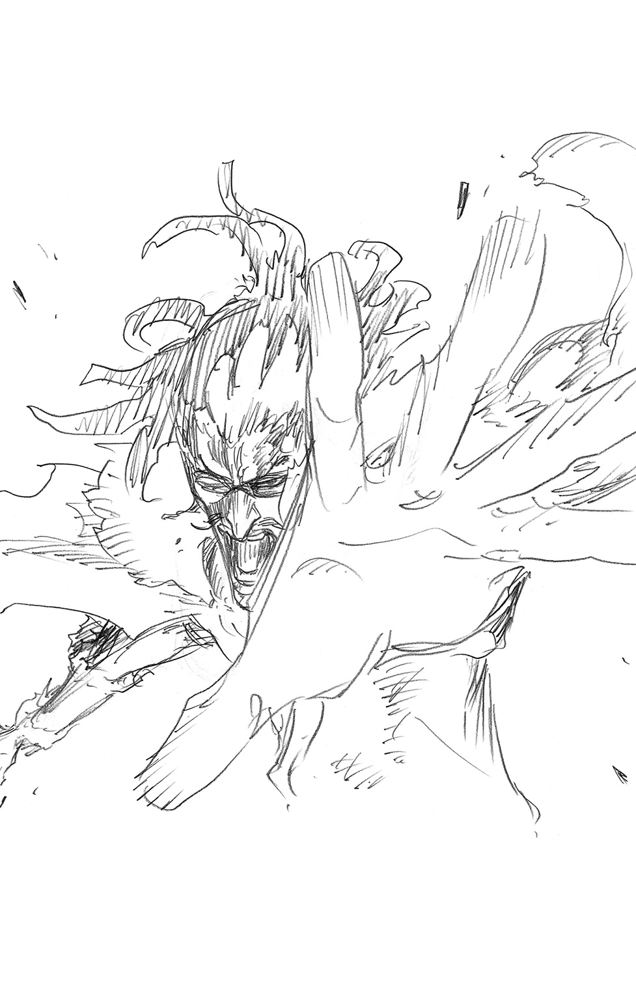
――姉さんのように......この男のように立ち上がれなかった......
――あの時、怯えて剣を握れなかった自分自身が......苛立たしかっただけか。
世界の全てがスローに感じる中、自己分析が終わると同時に――
ダメージによって完全に空気と同化する事ができなかった痣城の身体――融合の力の代償として、並以下の頑健さしか持ち合わせぬ身体に、観音寺の最終奥義が叩きこまれた。
観音寺が手の平を突き出すと同時に、コンクリートを破砕する程度の爆発が起こる。
腹部にその手の平を当てられていた痣城は、そのまま屋上から吹き飛ばされた。
そして、ステッキの攻撃の時点で制御を失いつつあった鬼道のエネルギーが暴走し――
椿台の廃病院が、蒼い爆発によって染め上げられた。
「やった......のか？」
観音寺弾の反動で自らも柵に叩きつけられ、立つ事もままならなくなっている観音寺。
蒼い爆発による熱波が収まったのを確認し、彼は自分の手の平を見つめ始めた。
「まさか、私の観音寺弾にあれほどの威力が......？ ？？？」
鬼道の暴走などとはつゆ知らず、自分の奥義が最後の爆発を引き起こしたと勘違いして混乱するドン・観音寺。
そんな彼を包みこんだのは――最後の戦いを見ていたピカロ達の歓声と、フラフラと近づいて来たロカの涙声だった。
「観音寺さん......！ よかった......本当に、無事でよかったです......！」
ドン・観音寺は更に数秒呆けていたが――やがて、自分が本当に勝利した事を確信し、膝を震わせつつも立ち上がると、ロカやピカロ達に向けて力強く叫んだ。
「ＹＥＡＨＨＨＨＨＨＨＨＨ！ ミッション・コンプリィィィィイィイッ！」
観音寺と別れた石田は、つい先刻まで、ピカロ達を追いかけて町中を飛び回っていた。
結局、最終的には黒腔の中に逃げられ見失ってしまったところで浦原商店の前を通りかかり、周辺住民に記換神機を使用しているテッサイ達を見つけたのだ。
そこで浦原の不在を知らされると共に、十一番隊が現世に来ている理由を聞いた石田。
彼は、亀裂に入る方法を探そうと町中に散っている死神達の気配を探りつつ、次の一手についてテッサイに相談しようとしていた。そこで、椿台の方にピカロ達が集結する気配を感じ取ったのである。
廃病院に向かう最中、遠目に鬼道らしき爆発も見えた。
焦りを覚えつつ、廃病院の屋上に辿り着いた石田が見たものは――
モデルのようなポーズで叫ぶ霊媒師が、破面に強く抱きしめられ、百人を超える子供型破面達に賞賛を浴びているという、滅却師としての常識を覆されるような光景だった。
「......一体、何があったっていうんですか!?」
必死に理性を保とうとしつつ、観音寺に問いかける石田。
「おお、聞いてくれたまえ、コバルトブルー！ 今、私は、最強の敵たるバッドスピリッツを、カラクラホワイト達との連携によって見事に打ち斃したのだ！」
「......はい？」
眉を顰める石田は、改めて聞き直そうとしたのだが――
そんな彼の前に、カランと音を立てて何かが落ちる。
「これは......」
拾い上げると、それは、自分が痣城に奪われた滅却師十字だった。
「ひとまず、それは君に返しておこう。滅却師」
突然響いたその言葉に、観音寺とロカ、石田の三人は一斉に固まった。
声のした方向に目を向けると――そこには、身体のあちこちから血を流し、冷めた表情でこちらを見つめる白羽織の男の姿があった。
「ぬおおおお!? 迷い出たのか!? 成仏したまえ！」
錯乱しながら叫ぶ観音寺を見て、白羽織の男は感情を消した声で言葉を紡ぐ。
「君が私に一矢報いたのは、単に、偶然が重なったに過ぎない」
呼吸は荒いものの、言葉は外観と比べて整然としており、ある種の修行僧のようだった。
負け惜しみのようにも聞こえる言葉を吐き出した後、彼は僅かに目を伏せ、続ける。
「だが、偶然だろうと......君が立ち上がらなければ、打ち放てなかった一矢だ」
淡々と言葉を紡ぐ男だが、こちらを攻撃してくるような様子は見られない。
「このまま逃げ続ければ、私の敗北は、ほんの数分長らえるだろう、その女虚の力を奪う機会もあったかもしれない」
彼の表情には悔しさも怒りも感じられず、観音寺達は首を傾げながら男の話を聞き続けていた。
「その機会を捨て、このような無駄話を君達にするのは......私から君達に捧げる事ができる、最大限の敬意だ」
「ユーは......何を言っているのだ？」
観音寺が言葉の真意を問いかけるが、彼はただ、自分の言葉だけを吐き出した。
「ドン・観音寺。君には感謝しよう。私の過去を、拾い直させてくれた事に」
何の事か解らず、観音寺がさらに尋ねようとした瞬間――
『それ』は、空から現れた。
遥か上空の亀裂から現れ出でし『それ』は、痣城の姿を確認すると、何の躊躇いもなく、風に身体を滑らせていく。
観音寺達が、『それ』の接近に気づいた時には既に遅く――
『それ』――更木剣八は、すでに刀を振り上げていた。
そして、眼下の痣城めがけて、一片の躊躇いもなく振り下ろす。
痣城は、冷めた表情でそれを見上げ、避ける事すらせず、全身でその一撃を受け止めた。
仮に空気と同化していたとしても、その空気ごと灼き払われる一撃。
その剣圧は、離れた場所にいた観音寺や石田、破面達にも襲いかかり――
この日をもって、椿台の観光スポットである廃病院は、『廃病院跡地』として皆の心に刻みこまれる結果となった。
半刻後 断界
「............」
痣城が立ったまま目を醒ますと、そこは、穿界門の通路の中だった。
目の前に立つのは、霊圧を抑えぬままの更木剣八。
「なるほど。ドンピシャの位置に出て来やがったな。涅の野郎も、たまには役に立つじゃねえか」
更に周囲を見渡すと、副隊長の草鹿やちるや、席官の一角、弓親をはじめとする十一番隊士の面々の姿が見える。
二百名を超える彼らは、円となって更木と痣城を取り囲んでおり、彼らが何のつもりなのかは寝起きの痣城にも一目で理解できた。
「よう、目は醒めてるか？」
更木の言葉に、痣城は淡々と答える。
「私は......どのぐらい意識を失っていた？」
「半刻ってとこだ。俺も今来たとこだがな」
そうか、と頷き、痣城は理解する。
自分の目的は、完全にその芽を摘まれたのだと。
だが、不思議と、思っていた程の悔しさも後悔も感じられない。
あるいは、そうした感情を排除し続けてきた影響かもしれないが。
「それで、私をどうするつもりだ？」
痣城が尋ねると、更木はとんでもない事を口にした。
「あぁ？ 決まってんだろ。さっきの続きといこうじゃねえか」
「......もう、勝負はついたものと思っていたが？ それとも、規律に従って私を殺すまでやるつもりかな？」
「馬鹿野郎。規律だのなんだのはどうでもいいんだよ」
十一番隊の隊長は、斬魄刀で己の肩をトントンと叩きながら痣城に言い放つ。
「ただ、手前の方が、まだ満足してねえんじゃねえかと思ってな」
「......私が？ なにを馬鹿な」
痣城は、更木が戯れ言を言っているのだと思った。
しかし、そうした冗談や皮肉を言うような死神ではない事を思い出し、言葉を紡ぐ。
「私は、取れる手段は全て取った。しかし君は、私のあらゆる策をその霊圧のみで跳ね返した。私は手順を間違えた。それだけの事だ」
己の過去を顧みつつ、痣城はどこか寂しげに言葉を紡ぐ。
「この先私は、それこそ空気のようなものだ。瀞霊廷で時果つるまで過ごす事しかできないただの空気に過ぎない。そんな私が、君を楽しませる事などできると思うのか？」
自虐的に語る痣城。
周囲の死神達は、最初に断界で出会った時との違いに戸惑い、別人なのではと疑う者までいたのだが――
「最初に面ぁ合わせた時から、ずっと解せねえんだがよ」
更木は、そんな男に対して言葉を続ける。
「手前......なんだって、自分が弱ぇと思ってんだ？」
「......ッ！」
その言葉に、痣城は僅かに表情を変化させた。
「手前のやり方はよぉ。何から何まで、自分が弱ぇと思ってる野郎の戦い方だぜ」
「実際、私は君よりも弱かった。それだけの話――」
「違うな」
言葉を途中で遮り、更木がピシャリと言い放つ。
「手前のやり口は、弱く見られねぇようにする為のもんだ。弱ぇ犬が一際でけぇ声で吼えるみたいによ」
その言葉に、痣城は何も反論できなかった。
彼は、あの処刑場の夜から、自分が『強い』と心底思えた事などない。
常に不安だった。姉の言葉を裏切り、弱い自分を認めてしまう事が。
更木の言う通り、自分は弱さを隠そうと吼えたてる犬に過ぎない。もっとも、吼える相手もまた、自分自身に過ぎないのだが。
――見透かされていたのか。
――このような胡乱な男にまで筒抜けでは、なるほど、私の底も知れたというものだ。
心中でそう呟く痣城に、更木は不思議そうに問いかけた。
「なんだって、そんな無駄な真似してんだ」
「.........？」
「手前は十分に強ぇだろうによ。せっかくの力を、吼えるのに使うのなんざ勿体ねえっつってんだよ」
「私が......強いだと？」
「ああ、俺が保証してやる。手前は強ぇ」
力強く言い切った後、いつも通りの兇笑を浮かべて言葉を続ける。
「だから、とっとと本気だせよ、なぁ？」
沈黙。
更木の言葉は、単純極まりないものだった。だからこそ、痣城は、その言葉を理解するのに少し時間を要してしまった。
彼の望む戦いに、何の意味があるのかと。
その沈黙の間に、彼は、とある男の最期の言葉を思い出す。
――「お前は......俺みたいになるなよ。お前に挑む野郎が現れたら......ちゃんと......『剣八』としての全力で相手してやれ」
死に際の刳屋敷剣八は、そんな事を痣城に向かって呟いた。
お前の命は無駄にはしない。そう答えた痣城に、刳屋敷は首を振る。
――「俺の命なんざ、後腐れなく無駄遣いしちまえよ。だけどよ......『剣八』の名前を無駄にする事は......俺が......許さねぇ」
――「いつか......必ず来るぜ。俺達よりも......『剣八』らしい『剣八』がお前の前に立つ......俺やお前が囚われてるような細かいもんを全部無視してよ......何にも縛られねえで......本当に、純粋に戦いだけを追っかける......馬鹿野郎がよ......」
――「だからよ......もしも手前が負ける時は、手前の持ってる『剣八』を、全部そいつに見せてやれ。それが......『剣八』の名前を受け継いだ奴の......義務だ」
最後に彼は、「俺は、できなかったけどな」と言って笑い――部下や京楽達に一言告げた後、その笑顔のまま事切れた。
刳屋敷の最期を明確に思い出し、痣城は静かに周囲を見渡した。
この上まだ「殺し合いの続きだ」などという男に対し、疑問を持っている顔はない。
誰も彼もが、隊長と志を同じくしている顔だった。
その顔が――半日前、初めてここで会った時と同じであるにもかかわらず、違った意味を持って見える。
――あの人間に対して負けを受け入れた直後に、また闘えとはな。
――これが、『剣八』の名の呪いか。
そして、再度一角や弓親、その他の隊員達の顔を見て、素直に思う。
――羨ましいな。
――これが......十一番隊か。
――『剣八』の呪いと引き替えに、与えられるものか。
――ならば、私は確かに、いままで『剣八』ではなかったのだろう。
かつて、東仙要が更木を評して「この男は魔物だ。暴力を喰らい血を啜る。我々とは違う存在だ。此処にいさせてはいけない」と言っていた。
だが、それは一つ間違っていると痣城は思う。魔物ではなく、彼はどうしようもなく『剣八』なのだ。暴力を喰らい、血を啜り、普通の死神とは違う存在。そんな風にしか生きられないからこそ、彼は『剣八』という場所に辿り着いたのだろう。
痣城は自嘲気味な苦笑を浮かべた後、更木に答える。
「いいだろう......その果たし合い、受けて立つ」
「私も......貴様の果てが観たくなった」
呼吸を整え、覚悟を決め、痣城は一つの名前を口にした。
「雨露柘榴」
すると、痣城の背後から聞き慣れた声が木霊する。
「キハハハハッ！ 呼んだかい？ どうしたの？ やっぱり一人じゃ寂しかった？」
「全て、お前の予想通りと言うわけか？」
小声で尋ねる痣城に、雨露柘榴は首を振る。
「キヒヒヒッ！ なわけないじゃん！ あの歌舞伎役者とピエロを融合させたようなオッサンに負けたのは予想外だっての！ でも、結果オーライ！ あのオッサンには感謝して接吻とかたっぷりしてあげたい気分だよ！ で、なになに、わざわざ死神的にひとまわり成長したのを私に見せつける為に呼んだわけじゃないんでしょ？ キハハハ！」
相変わらずハイテンションな彼女に、痣城は必要最低限の事を口にした。
「......始解に戻れ」
「......。キハッ......。キハハハハハハハ！ キヒヒハハハハハハハ！ あんた、それ、どういう事か解って言ってる？ あんたがいままで融合してきた尸魂界全部から、あんたの魂を切り放すって事だよ？ また再融合するのに、一年以上かかるって事だよ？ いや、技術開発局の連中になんかされて、それすら許して貰えないかもね！ キハハハ！」
「くどいぞ。さっさと戻れ」
力強く言い切る痣城に――雨露柘榴は、今までにない穏やかな笑みを浮かべて呟いた。
「......死ぬなよ、剣の字」
次の瞬間、雨露柘榴の卍解状態が解除され――
如何なる仕組みか、瀞霊廷内の気温が全体で平均三度上昇した。
そして、痣城の手に『雨露柘榴』の始解が現れる。
浅打と何一つ変わらぬ、通常の日本刀と同じ、全く無駄の無い形をしていた。
だが、その刀が異常だというのは、その場にいた誰もが即座に理解する。
瀞霊廷の全てと融合していた霊子が、そのまっさらな刃の中に圧縮されているのだ。
融合という最強の盾を失う代わりに手に入れた、最強の矛。
双殛を遥かに超える密度の霊圧の塊を構え、痣城は、微笑みながら呟いた。
「十一番隊隊長......痣城剣八だ」
それに対し、更木は何の文句もつけず、堂々と自分の名前を口にする。
「十一番隊隊長、更木剣八だ」
刹那――二人の霊圧が交錯する。
互いの空気を感じ取ったのか、初撃から渾身の一撃を繰り出す二人の魔人。
痣城による、自分の全てを上乗せした乾坤一擲の斬り上げに対し――更木もまた、剣道の型とは程遠かったが、自然と両手で刀を振り下ろす。
そして、次の瞬間、二つの剣が刃を重ね合わせ――
この日、断界の霊子の流れそのものが大幅に変動する結果となった。
二十章
尸魂界 瀞霊廷
「お疲れ様でした！ 更木隊ちょ......う......？」
穿界門の前。
帰還した更木剣八と十一番隊を出迎えた者達は、悉く目眩と吐き気に襲われる。
どう見ても致命傷にしか見えない怪我を負い、血みどろとなりながら平然と歩いている更木剣八。だが、吐き気を催したのはその怪我を見たせいではない。
更木剣八の垂れ流す霊圧の濃さに当てられたのだ。
震えながら蹲る一般隊士達を見て、一角が溜息混じりに呟いた。
「もっと霊圧抑えた方がいいっすよ、隊長」
「ちッ......面倒臭ぇな......これ以上の抑え方なんざ知るか」
寧ろ、全力で霊圧を放出していたならば、黒腔内の痣城と同じく、逆に霊圧を感じなくなるのだろうが――今は戦いも終わり、中途半端に霊圧を垂れ流している状態である。その為、周囲の者にとっては、重い圧力で臓腑の底を鷲摑みにされているようなものだった。
更木の他の十一番隊の面々も、それぞれ大怪我を負っている者が多い。
席官クラスは『ピカロ』や痣城の義骸と戦闘したせいもあるが、平隊士の多くは、最後の更木と痣城の一騎討ちの衝撃波に巻きこまれた為だ。
結果として、勝負は一撃で終わりを告げた。
断界そのものを両断するかのような勢いの剣圧同士がぶつかり合い――
その衝撃によって、断界内に拘突や拘流をも吹き飛ばすような大嵐が巻き起こったのだ。
技術開発局のフォローによってなんとか全員戻ってこられたものの、それがなければ十一番隊の全滅すらありえただろう。
そして、その嵐が収まった時、その中心に十一番隊の一部の面子が見たものは――身体を袈裟懸けに抉り斬られた更木が、満面の笑みを浮かべながら呟く姿だった。
「......逃がしちまったか」
見ると、痣城剣八の姿はどこにも無く、残るのは、彼が更木の身体につけた大きな傷と――更木の手の中に残る、痣城を斬った感触だけだった。
「だが......まあ、楽しかったぜ」
獲物が消えたにもかかわらず、上機嫌の剣八。
それを見て、十一番隊の面子は思った。
恐らく、痣城剣八は逃げたのではなく――隊長の一撃で消滅してしまったに違いないと。
そんな噂が囁かれるのを背後で聞きながら、綾瀬川弓親は、痣城が生きていると確信していた。
何故なら――彼の腰には、いつの間にか痣城に盗まれた斬魄刀『藤孔雀』が戻されていたからだ。
――更木隊長に斬られてるってのに、わざわざ刀を返しにくるとはね。
――......まあいいさ。この借りは、いつか僕の手で返すとしよう。
瀞霊廷 大前田家
無駄に豪奢な作りをした、尸魂界有数の金満家である大前田家の大邸宅。
庭の花に水をやっていた大前田希代は、ふと、自分の横から鉄錆の臭いがする事に気がついた。
そちらに目をやると――そこには、体中を血にまみれさせた男が立っていた。
悲鳴をあげかけた所で、希代は、それが半日前に出会った男――痣城剣八だと気づく。
「貴方は......」
「......君に一つ、伝えておく事がある」
「えッ......？」
「君の家族を無駄メシ喰らいと称した事は、撤回しよう。すまなかった」
それだけ言って、痣城は立ち去ろうとしたのだが――
「待って下さい！」
真剣なその声に何事かと立ち止まると――
痣城は、自分の身体を光が包みこむのを感じ取った。
四番隊が頻繁に使用する、治癒を目的とした鬼道だ。
「何をしている？」
「酷い怪我です！ このままでは命の危険も......」
「......私が何者かは、もう知っているんだろう？」
【無間】から脱獄してきた反乱の徒を、何故この少女はわざわざ治療するというのだ。
訝しむ痣城に、希代は真剣な顔つきで答えた。
「そんなのは関係ありません！ ただ......放っておけないだけです。それに貴方は、凄く強い人だと聞きました。でも、貴方は、お兄様やお父様に剣を向けずに、戦う事を避けて下さいました」
「.........？」
「貴方が本当に悪い人なら、私やお兄様を斬っていた筈です。そうすれば、脱走した事も解らないままになったでしょうから」
――最初から、脱獄が発覚しても問題はなかった。
――そもそも、発覚を恐れるならば、お前の前に顔など出さない。
そうした指摘を口に出すべきかどうか迷っている痣城に、希代は治療を続けながらもういちどペコリと頭を下げた。
「本当に......ありがとうございます」
何も疑わず、目の中に優しい光を湛える希代。
――お前達を殺さなかったから、私が善人だとでも言うつもりか？
痣城は、希代のことを大前田家の中では異質な存在だと思っていたが、ここまでお人好しでは更に将来が心配になる。
――やめてくれ。
――私はただ、無駄な争いを避けようとしただけだ。
あまりにも無垢なその少女を見て、彼は姉を思い出し――なるほど、雨露柘榴の皮肉はまさしくその通りだったのだと理解した。
「もう大丈夫だ......君の気遣い、感謝しよう」
痣城はそれだけ言って、己の身体を空気の中に溶けこませようとした。
最後に一つだけ、彼の誓いを少女の耳に届けながら。
「もしも......君の一族がこの先、謂われなき誹りを受ける事があれば、君達の......少なくとも、君が誠実であった事は私が証明しよう」
「え......あの、待って下さい！」
しかし、その姿はすぐに薄れ、風と共に消えてしまった。
そして、大前田家の門の側――
艶やかな羽織と笠を身につけた男が、横を通り過ぎる風に語りかけた。
「罪人が誠実さを証明したところで、印象を悪くするだけだと思うよ？」
すると、痣城は姿を顕現させ、言葉を返す。
「照れ隠しのようなものだ。気にするな」
「......君が照れる？ 一番最初に君が無駄だって言いそうな感情じゃないか」
京楽春水は、罪人を前にしてただ言葉だけを投げかける。
「融合、解除したんだねえ。瀞霊廷の空気が少し変わったよ」
瀞霊廷との融合は解除されたが、彼の卍解そのものが失われたわけではない。
しかし、今は空気の一部と融合しながら移動するのがせいぜいであり、霊圧感知能力の高い者ならばその行方を追う事は可能だろう。
「......それで、これからどうするつもりだい？」
笠の位置を直しつつ、京楽は痣城に問いかけた。
のらりくらりとした空気を出してはいるが、その分だけ、痣城の答え次第で瞬時に微笑みを殺気に変える事ができるだろう。
痣城はそれを理解しつつ、淡々と答えを返した。
「罪人は、牢獄に戻るだけだ。総隊長にもそう伝えてくれ」
そして、彼は再び姿を消しながら、一言だけ付け加える。
「......流魂街にある刳屋敷の墓にいく事があれば、酒でも供えておいてくれ」
風に流されていくように姿を消した痣城。
すると、京楽は、いつの間にか自分の懐に金子袋が入っている事に気づく。
中を覗くと、どうやら『酒代』と思しき金子が入れられていた。
それを確認した京楽は、痣城の霊圧をそれ以上追う事はせず――
笠をあげ、空を見ながら独り言を呟いた。
「彼......どうやら『剣八』の名前から解放されたみたいだよ、刳屋敷」
瀞霊廷 地下監獄最下層 【無間】
「やあ」
果てない暗闇の中に、藍染惣右介の声が響く。
「戻るなら、そろそろだと思っていたよ」
と、周囲に行燈の明かりが灯り、【無間】の闇が限定的に払われた。
「......戻るなら、か......私が死ぬ事でも期待していたか？」
全てを見透かすような言葉に、痣城は皮肉を返した。
「まさか。正直な話、君が更木剣八に勝つ可能性も一割はあると見ていたよ。君が最初から始解を撃ち放っていればの話だが」
「......山本総隊長も、更木の本質を知っていたのか？」
「言った筈だ。君は全てを見透かせるくせに、表面しか見ていないと。更木剣八の本質は、隊長格の大半は気づいている筈だよ」
藍染の声には嘲りの色も憐れみの色もなく、自分の推測の正否を確認しているかのようだった。
痣城は、これ以上話す事は無いとばかりにその場を離れようとしたが――
一つだけ思い出し、藍染に告げる。
「君の推測には無かったであろう結果を一つ言おう。藍染」
「ほう？」
「私は今日、更木以外に......人間の男にも敗北した」
「......興味深いね」
目を細める藍染に、痣城は言葉を続けた。
「ろくな力も無いくせに、死神と虚の闘いに巻きこまれながら、それでも......よりによって虚の女を護りながら戦い続けた、道化のような男さ」
「............」
「だが......おかげで、理解できたよ。有意義な敗北というものをな」
痣城は、そこで男の名を思い出そうとしたのだが――
藍染が、答えを先に口にした。
「もしかすると......その男の名は、観音寺というのではないかな？」
「......知っているのか？」
もしや、藍染は本当にこの状態のままで外の全てを見透かしているのではないか。そんな疑念を抱く痣城。
「ああ。私も一度......空座町でその男を見た事がある。崩玉と融合したこの私に、力の差を理解した上で......尚も挑みかかってきたよ。行きずりの子供達を助ける、ただそれだけの為にね」
その言葉を聞いて、痣城は小さく溜息を吐き出した。
「......なるほどな。崩玉と融合した君に立ち向かう男だ。私程度を恐れる筈もなし、か」
――そのような男を過去の自分と比べようとした時点で、私は負けていたという事か。
今度こそ話す事が無くなったと、気配を遠ざけていく痣城。
だが、藍染はそんな彼の背に不敵な言葉を投げかけた。
「時折あのような者が現れるからこそ、この世は面白い。価値があると言ってもいい」
「......何が言いたい？」
「だからこそ、それに相応しき者が世を導くべきだとは思わないか？ 決して、あのようなものではなく」
一瞬立ち止まった痣城は、表情を変えぬまま振り返り、淡々と言った。
「......市丸ギンや東仙要のように、私を霊王を討つ道具として釣りこむつもりか？」
「どう受け取るかは、君の自由だ。単なる道具として終わるかどうかも含めてね」
「......結論は、次に会う時に持ち越させてもらうとしよう」
痣城は小さく息を吐いた後、再び歩き出しながら言葉を紡ぐ。
「次に私が君の前に現れる時は、今の私とは別人かもしれないからな」
その言葉からどこまで痣城の真意を読み取ったのかは解らないが、藍染は薄い笑みを浮かべ、最後まで泰然自若を貫いた。
「その時は、君が良き隣人か、あるいは良き敵である事を期待しているよ。痣城双也」
そして――【無間】内部は、再び圧倒的な闇に支配された。
今しがたの会話など、やはり全てが幻だったと言わんばかりに。
本来自分が囚われている独房に戻った後――
痣城は、一本の注射器を取り出した。
技術開発局から拝借してきた、『超人薬』と呼ばれる代物だ。
原液で使用すれば、一秒が百年にも感じられるという触れこみの薬品だが――彼は、躊躇う事なくその注射器を自らの首筋に打ち込んだ。
注射器の中身が何倍かに希釈されたものか、あるいは原液なのかは解らない。
だが、彼は少しでも長く――孤独に浸っていたかった。
今後、脱獄の防止や、あるいは四十六室の命で様々な人間が自分に関わってくるだろう。
そうしたものに心を乱される前に、彼は、長い永い『孤独』に身を浸したかったのだ。
全ての感覚が失われる暗闇の中では、時間の流れの長短など解らないと思ったが――
自分の指を動かそうとしてみて、意識だけが完全に独立した事を確認した。
この状態で、何百年、下手をすれば千年以上の時を体感するわけだが――
彼は、その独立した意識の中で、一つの名を呼びかけた。
――雨露柘榴。
「キヒヒヒヒヒ！ 呼んだ？ なんか凄いことになってるねー、ゆっくりじゃん。超ゆっくり！ でも、私を呼んだのはナイスだよ！ 私なら、この時間の流れに合わせられるもんね！ っていうか大丈夫？ これから何百年もずーっと私と二人っきりだよ？ ウザイとか思ってない？ 何が目的？ 監禁？ 軟禁？ 私の身体が目当てなの？ キヒッ！」
相変わらず無駄口の多い雨露柘榴の言葉に、痣城は内面世界の身体で小さく呟いた。
「お前に預けた色々なものを、返して貰おうと思ってな」
「......キハハハハハ！ そんな簡単に返すと思ってる？」
意地の悪い笑みを浮かべる雨露柘榴に、痣城は告げた。
「ああ......難しいだろうな。だから、何年かかろうと、少しずつ返して貰うとするさ」
「......どうしたの、殊勝じゃん。何か悪い物でも食った？ 虚とかさ！ キハハハハ！」
冗談めかして話を逸らせようとする雨露柘榴に、痣城は深く頭を下げる。
「今思うと、お前は私を止めようとしてくれていたんだな」
「......アレレレ、何の話かなあ？ 私、頭悪いから解らないよ？ キヒッ！ キハハ！」
「私はまだ......お前の解号すら知らないのにな」
悔しそうに答え、痣城はゆっくりと語り続けた。
「お前の無駄話は、本当は無駄などではなかったのだろう。思い返せば、お前は常に私を正しい道に導こうとしていたのかもしれない」
「キヒッ！ 買いかぶりだよ！ 正しい道なんてないよ！ 寄り道や回り道こそ人生だっての！ それにね。無駄話って言うけど、私があんたが捨てたもんを拾い集めて出来てるって事を忘れんなよ？ 私の無駄口が最近増えたのってさ、あんたがそれを望んでたからかもよ？」
「......どういう事だ？」
痣城の問いに、雨露柘榴が答える。
「黒崎一護のせいで、最近の尸魂界が変わってくのを見てさ、あんたも気ままな会話ができるようになった死神達に憧れちゃったんじゃないのー？って話だよ！ キハハハ！ 無駄話ができるなんて、幸せな証拠だからね！ あんたが無意識のうちに幸せに憧れたりしちゃったから、私がその望みを叶えてやろうって頑張ったのに酷いよね！ キヒッ」
どこまでが真実なのか解らない事を口にしつつ、雨露柘榴は内面世界を自由に飛び回り、痣城の身体に絡みつきながら囁き笑う。
「あんたは私、私はあんた。あんたが生き物と融合できないのだって、私のせいっていうより、あんたが孤独を望んだからさ！ キヒヒハハハ！」
「今さらな忠告だが、今だからこそ心に刺さる事を言ってくれるな」
痣城は、そんな雨露柘榴に小さく笑い返した。
「私は、全て取り戻すぞ。初めてお前と会った頃から捨ててきた、全てのものをだ。だが......すまない。お前にとっては、果てしなく無駄な時間を歩ませる事になるだろう」
「キハッ......キハハハハ！ 何なに？ そんな事を気にしてたの？ 気にすんなって！ 言ったろ？ 私は無駄が大好きだってさ！ それでそれで？ その後はどうすんの？」
「改めて......お前の力を手に入れる。今度は、お前の気まぐれなどではない。明確な私の意志でだ。お前の力を呼び出す為の解号から......いや、お前の名の意味を知る事から、一つずつな」
強い決意のこめられた痣城の言葉に雨露柘榴は嬉しそうに微笑み――
目隠しとなっていた黒い革帯を外し、口調に見合わぬ穏やかな瞳で痣城の顔を見つめながら呟いた。
「いいよ。それができた時は、私が双也に接吻してあげる」
「いや、それは断る」
痣城は顔色を変えぬまま、僅かに瞳を横に逸らし――
早速、無駄な一言を口にした。
「なんでお前は......顔だけ無駄に姉さんにそっくりなんだ......」
こうして、痣城双也は、【無間】の闇の中から一歩も動かぬまま、長い長い旅に出た。
自分の内側に捨てたものを、全て拾い直す旅に。
捨てた時の、何倍も、何十倍もの時間がかかろうと。
いずれ本当の強さを手に入れ、改めて姉との約束を果たす為に。
彼自身の孤独から始まった痣城双也の反乱は、誰にも真意を知られる事なく、再び彼自身の孤独へと収束したのである。
ただひとつ、『剣八』の名前だけを、確かに世界の中に引き継がせて。
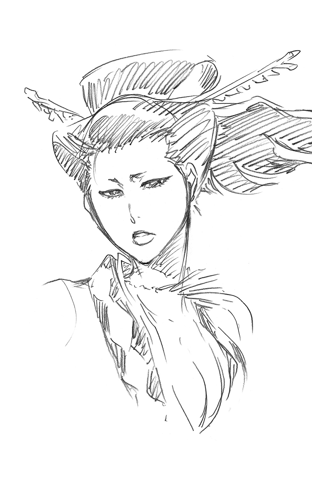
尸魂界 各所
「あぁ？ 髑髏面の女だぁ？」
更木剣八は、隠密機動の死神にそう問われ、眉を顰めながら言葉を返す。
「おお......そういや、すっかり忘れてたな。妙な野郎が連れ回してたと思ったが......まあ、知ったこっちゃねえ」
「ああ、隊長が言ってた妙な野郎ってのは、ドン・観音寺って野郎だぜ。黒崎一護の師匠だとか抜かしてやがったが......どうも胡散臭ぇ」
ドン・観音寺。
斑目一角の言葉で、その名はハッキリと瀞霊廷の中に広まった。
「ドン・観音寺!? 知ってる知ってる！ 俺、こないだ死んでこっちに来たんだけどさ、すげえっすよ！ テレビに出てた超有名人！」
「十一番隊と立ち合うなんて、やっぱり凄い人だったんだねえ」
「僕、浮遊霊だったんだけど、あの人に説得されて成仏する事にしたんです......」
噂が広まるにつれ、そんな声が流魂街の間でも広まり始め――死神達の間でも、『あの黒崎一護の師匠らしい』と、その名前は一つのトレンドであるかのように広まり始めた。
一方その頃、当の観音寺はどうしていたのかというと――
いつもと変わらず、現世で子供達の歓声に包まれていた。
翌日 夜 空座町 スカリビル跡地
「ボハハハハハーッ！」
「「「「「ボハハハハハーッ！」」」」」
観音寺のポーズに合わせて、観客達が沸き返る。
１日遅れで収録される事になった、『ぶらり霊場 突撃の旅』。
空座町スペシャルの第二夜である今日は、今までにないほどの大観衆が集まっていた。
町の人間だけではなく、近隣の町や、果ては地方からの見物人も押し寄せている。
何故、今日に限ってこの大観衆なのか。
それには一つの理由があった。
ドン・観音寺。
彼は今、東京を救った英雄として祭り上げられていたのだ。
昨日一日の間に起きた騒動は、人々の心にも強く刻みこまれた。
銃撃戦が起きたのみならず、バイクに乗った謎の覆面集団がグレネードランチャーを振り回し、果ては国籍不明のヘリが空座町上空で機銃乱射する姿までテレビカメラに収められていたのである。
更には病院の廃墟で謎の爆発と倒壊が起こったとあれば、マスコミも放ってはおけない事態となり、事件に大きく関わった人物としてドン・観音寺の名が挙げられたのだが――
尸魂界の技術開発局が、人々の意識を根本からすり替えたのである。
広範囲用の記換神機を多数利用し、人々の記憶をランダムなものではなく、統一されたものとしてすり替えたのだ。
「国際テロリストが空座町に潜んでいて、昨日一日の間に数々の犯行を繰り返した。犯人グループは現在も逃走中」と。
その大筋に合わせて、人々の記憶はより自然にピースが繫がるように改変されていき――結果として、『ドン・観音寺が収録準備中、廃病院にあったテロリストのアジトを偶然発見。蓄えられていた武器を全て破壊、人質を救出した』という事になっていた。
観音寺はわけが解らず、否定したのだが――
国民はそれを「照れているに違いない」ないしは「真の英雄は陰ながら世界を救うものなんだろう」と判断し、そのまま彼をヒーローとして賞賛した。
もっとも、人類の意識そのものを変革させようとしていた痣城を、一時的に足止めしたという意味では――確かに彼は世界を救ったのかもしれないが。
しかし、歓声に包まれながらも――観音寺の目には一つの憂いが混じっていた。
――ロカ嬢。
――君とカラクラホワイト達は、無事に故郷に帰れたのだろうか。
１日前
観音寺が目を醒ますと、そこは浦原商店の中だった。
どうやら、廃病院の倒壊に巻きこまれ、半日ほど意識を失っていたようだ。
石田雨竜は無事だったようで、同じように治療を受けていたが――
ロカ・パラミアの姿も、ピカロ達の姿も、どこにも存在していなかった。
その事について問う観音寺に、石田が眼鏡の位置を直しながら呟いた。
「彼女やあの子供達が人を喰らわずに済むのは、虚圏という霊子の豊富な場所に住んでいるからです。長くこちらに留まれば、人を喰らう本能に負ける可能性もある」
淡々と事実を紡いだ後、推測を交えて説明を続ける石田。
「貴方に迷惑をかけないよう、長く現世に留まる事を避けたのでしょう。そうでなくとも、現世を彷徨いていたら尸魂界の死神に目をつけられますしね」
観音寺は、少年が言葉を濁している事を、なんとなく理解していた。
彼自身もまた、ロカ達の安否については確認できていないのだろうと。
ビルが圧倒的な熱量に包まれて倒壊しそうになった際――激しい光に子供達が巻きこまれていき、観音寺自身もそれに吞みこまれそうになった瞬間、自分の身体を、『糸』が包みこんだような記憶があったからだ。
更に言うならば――観音寺の傷口は、浦原商店の店員達も驚く速さで治りつつあった。話によると、切断されていた血管や神経まで、何らかの力で繫ぎ止められていたらしい。
その話を聞いて、観音寺はすぐにロカの『糸』による縫合だと思い到った。
最後まで彼女の『糸』によって護られ、こうして生きながらえている。
観音寺は、自分がまたも彼女に救われたという事を確信した。
しかし、彼女の無事を確認することはできない。
感謝の言葉を伝える事もできず、なにより、彼女自身が救われたのかどうかも解らぬままという状況がもどかしくて仕方なかった。
だが、英雄がその歩みを止める事はない。
「では、さらばだカラクラブルーハワイよ！ また会う日まで勇気と正義を忘れることなかれ！ とうっ！」
治療もそこそこに別れを告げると、妙なかけ声と共に、浦原商店の裏庭に置かれていた『ジャンヌダルク』に飛び乗る観音寺。
病院の爆発などに巻きこまれ、殆ど原型を留めていないオープンカーだったが――観音寺がキーを回すと、異音を混ぜながらも、そのエンジンがキッチリとトルク音を響かせた。
「危機に陥った時、人生に迷った時、遠慮なく私の名を呼ぶのだぞ！ ハイヤーッ！」
カウボーイのように叫んで去っていく観音寺を見て、全ての悩みもツッコミも忘れて呟く滅却師。
「何が凄いって......あの車を作ったメーカーが凄いな......」
再度眼鏡の位置を直しつつ、少年は半日だけ行動を共にした、奇怪な霊媒師の振る舞いを思い返す。そして、僅かな敬意と共に薄い笑みを浮かべながら呟いた。
「なるほど。......確かにあの人は、黒崎の奴の師匠なのかもな」
こうして、観音寺は怪我だらけの身体に鞭打ち、笑顔のままステージへと向かう。
全国の視聴者に、新たな希望と勇気をもたらす為に。
現在 仮設ステージ
――ロカ嬢よ。......私はユーに何度も救われたが......。
――私は、ロカ嬢を救う事ができたのだろうか？
――そして、カラクラホワイトよ......。君達もせめて無事であってくれ......。
まだ未練があるのか、観音寺はロケバスの中に大量のアイスクリームとドライアイスを積み込み、クーラーボックスの上に『ロカ嬢＆カラクラホワイトへ』と書きこんでいた。『こんどはみんなでアイスを食べたい』というロカの言葉に従い、いつ彼女や子供達が来てもいいようにと考えて。
もしかしたら、それは単なる願掛けや気休めに過ぎないのかもしれないが。
だが、モヤモヤした気持ちを抱えていようと、テレビの前の子供達や観衆の前には関係の無いことである。
観音寺はできる限りの声を張りあげ、視聴者と観衆を楽しませようと努力した。
「ミサオちゃん、今日、元気ないねー」
プロデューサーの言葉に、スタッフが答える。
「そっすか？ いつも通りだと思いますけど」
「んー、なんかポーズに切れが......昨日のアレで怪我したみたいだけど、大丈夫かな。なんか、アイスを大量に積みこんだりとか、妙なことしてるし......」
そんな事を言いながら、プロデューサーはロケバスの中に入っていき――「あれ？ これ、誰か......」と小さく声を上げた。
「どうしました？」
スタッフが、そう尋ねかけた瞬間――
激しい音が、ステージの周辺に鳴り響き、観衆の悲鳴が巻き起こる。
観衆とテレビカメラに映るのは、見えない何かに吹き飛ばされ、ステージの壁にめりこむ観音寺の姿だった。
「ぐ......ぬぅ......」
壁に打ちつけられ、全身を鈍い痛みに支配された観音寺。
彼が目を上げると――そこには、奇妙な霊の姿があった。
身体の半分以上が崩壊しかけている、無数の触手を纏った青年の霊だ。
だが、観音寺は光の粒子となって崩れかけつつあるその顔を見て、昨日、ロカがシエンと呼んでいた霊だと思い出す。
観客の悲鳴と動揺した司会者の声が聞こえる中、シエンは、観音寺を見て病的な笑みを浮かべて呟いた。
「......まさか、こんな目立つ真似をしているとはね......」
「ユーは......ま、まさか、ロカ嬢に何かしたのではあるまいな!?」
よろよろと立ち上がりながら叫ぶ観音寺に、シエンは忌々しげに言葉を返す。
「はッ......！ 逆だよ。彼女に何かされたのさ」
シエンはあの瞬間、自分の死は免れないと思った。だが、奇跡的にロカの身体の方に先に限界が生じ――力がゆるまった瞬間に黒腔で虚圏から脱出したのである。
「笑い話にもならない。今の僕じゃ、あの女に何もできやしない。あの滅却師にも、恐らく返り討ちにあうだろうね」
「なるほど......つまり、私ならば楽に力を奪えると思ったわけか......」
「悪いけど、僕もまだ消えるわけにはいかないんだ......。君を喰った後は、この会場の連中を全て頂くとしよう。少しは身体を構成する足しになるだろうからね」
「そんな事を......この私が許すと思うかね！」
「逆に聞こう。君に、何ができる？」
嘲りの言葉を紡ぐシエンに、観音寺は高らかに笑い、彼独特の構えを取った。
「フハハハ！ 舐めるなよバッド・スピリッツ！ ユーは私の全てを知っているわけではあるまい！ 喰らうがいい＆後悔するがいい！ 観音寺流究極奥義！ 二連観音寺弾！」
激しい構えと共に、二発のエネルギー弾が観音寺の手の平から生み出され、シエンの顔面へと突き進んでいく。
だが――
崩壊しかけていた触手にパシリと払いのけられ、仮設ステージの天井ライトを支える柱へと直撃した。
爆発音が響き、支柱がグニャリとへし曲がる。
悲鳴を上げながら逃げ惑う観客。
だが、ライトの柱が倒れる方向――ステージの真ん中にいるのは、幸い観音寺とシエンだけだ。
観音寺は観客を護るため、せめて相討ちにならんと、シエンに向かって走り出す。
「ぷ、プロデューサー！ ヤバイっすよ！」
「......カメラは回しといて！ 残りは早くお客さんの誘導！」
プロデューサーはそんな事を叫び、自らも事態の処理に走り出す。
彼の頭からは、既に直前に見たロケバス内の異常など消え失せていた。
観音寺が積ませたアイスを入れたクーラーボックス。それが何者かに開けられて空っぽになっているという、ほんの些細な異常に過ぎなかったのだから。
観音寺の身体に、研ぎ澄まされたシエンの触手が届こうかというその瞬間――
「みーつけた」
と、無邪気な言葉が、観音寺とシエンの鼓膜を打ち鳴らし、観音寺に向かっていた触手は、見えない風の刃によってバラバラに切り刻まれた。
驚く観音寺の頭に、コン、と、何かが落ちる。
それは――観音寺が用意していた、限定品アイスクリームの空箱だった。
「おいしかった」 「美味しかったよ！」 「オイシ カッタ」
「あの......ごちそうさまでした......」 「おかわりしていい!?」
「アイ ス クリ イ ム」 「ごちそーさまッ！」 「Ａｉｃｃｃｃｃｅｅｅ」
「ありがとね、鈍感音痴さん！」 「ちがうよ、カラクラゴールドだよう！」
「あ、そっか」 「アハハハハハッ！」
「ユー達は......カラクラホワイトではないか......ッ！ 無事だったのかね！」
驚く観音寺を讃えるように、無数の子供達の声が響き渡り――
姿を現したピカロ達は、一斉にシエンを取り囲んだ。
「なッ......ピカロ......貴様ら......！」
驚愕に目を見開くシエンの前で――
彼らは、一斉に己の力を解放した。
そして――シエンだけが存在する空間を、激しい風が包みこむ。
半日前 虚圏 虚夜宮
ピカロ達が目を醒ますと、そこは虚夜宮のとある一角だった。
そこが、かつて自分達が根城にしていた『３ケタの巣』の大広間である事に気づき、子供達が懐かしさに辺りを見回すと――そこに、いくつかの人影を見つけた。
「ったく、このバカガキども。世話焼かせやがって」
「まったくだ。お前と同レベルの脳味噌だよ、アパッチ」
「ンだとローズ手前コラァ！」
喧嘩を始めた二人の女性破面、アパッチとローズを余所に、もう一人の女性破面であるスンスンがピカロ達に言葉をかける。
「随分と、現世でヤンチャをなさったようですわね」
口元に袖を当てながら、ピカロ達の背後に目を向ける。
「ハリベル様のお心遣いに感謝なさい、坊や達」
彼女の視線に合わせて、ピカロ達が背後を振り返ると――
大広間の入口に、口元を服の一部で隠した十刃が立っていた。
「あれー、ハリベルお姉ちゃんだ」
「どうしたの？」「遊んでくれるの!?」「やったー！」
「なにして遊ぶ？」「殺して遊ぶの!?」「殺されて遊ぶの？」
「それより、もっかい現世にいこうよ！」「私は尸魂界がいい！」
と、物騒な事を言いながら目を輝かせ、キャッキャとはしゃぎ回る子供達。
そんなピカロ達を見て、『３』の数字を冠する十刃、ティア・ハリベルは一つ大きな溜息を吐き――
「......少しは、頭を冷やせ」
と、ピカロ達の中心に巨大な水の竜巻を生み出し、その中に子供達を閉じこめた。
彼女としては、むやみに現世や尸魂界を刺激せぬよう、元は彼らの上に立っていた存在として、それなりの示しをつけたつもりなのだが――
「わー！ 水遊びだ！」「冷たいね！」「痛いね！」「アハハハゴゴボボボボボ......」
水の竜巻に吞まれ、溺れながらも笑い続ける子供達。
ハリベルは、そんな彼らを見て、
「......これも、我々が受け入れるべき虚の本質というわけか......」
と呟き、再度大きな溜息を吐いてから背後を振り返った。
そして、大広間と通路の境に立つ一人の破面を見つめ、穏やかに語りかける。
「昨日のお前の闘争を見かけてな、悪いが、その後も監視させて貰った」
そして、その破面が成した事などには何も触れぬまま、更に一つの事を問いかけた。
「この子供達の面倒......お前が見られるか？」
現在 空座町
「な......グアッ......ガアアアアッ！」
呻きに近い悲鳴をあげながら、数十体のピカロ達に切り刻まれていくシエン。
その光景は、霊感の無い者達やテレビカメラから見れば、まるで観音寺の手によって激しい旋風が巻き起こっているようにしか見えなかった。
止むことのない風の刃に切り刻まれ、シエンの身体は身動きすら取れぬまま、急速に崩壊が進行していく。
――そんな......。
――ここまで......なのか。
死ぬ事は怖くない。
彼の心に残る無念は、ただ一つ。
短い生命の中で得た、世界との繫がり。
すなわち、強き死神との約束を果たせぬまま、消え去る事だ。
――すまない、死神......。
――どうやら、誓いは......果たせそうにない......。
尸魂界 一番隊舎前
「やれやれ、何故この私が蛮人の為に時間を割かねばならんというのか。世の無常を呪うばかりだヨ」
山本への報告に来た更木に対し、涅マユリが小さな装飾具を投げつける。
「なんだこりゃ、新しい眼帯か」
以前とは違って、紐を用いずとも装着できるタイプのようだ。
「霊圧を喰らう量は、前の十倍に設定してある。私としては、千倍ぐらいにして貴様をミイラにしてやってもよかったんだがネ」
「そうか。俺としちゃ、別に無くても構わねぇんだがな」
「貴様の糞喧しい霊圧を頭に響かせながら研究する者の身にもなりたまえヨ。......ん？ 貴様、今、無くてもよいと言ったのかネ？」
「ああ？ なんか問題あるか？」
「ハンデがないと勝負にならないからと、霊圧抑制具を求めたのは君の方だと記憶しているがネ」
そこまで言って、マユリは、剣八が頭に鈴をつけていない事に気づく。
「おぉ。別にハンデなんざやらなくても、楽しく遊べる連中がまだまだいるってのが解ったからな。まあ、滅多に会えるもんじゃねえから、とりあえず眼帯はしとくか」
そう言って更木が眼帯を装着すると、周囲に垂れ流されていた霊圧が劇的に下降する。
もっとも、それでも以前の剣八よりは格段に高い状態が続いているのだが。
「つーか、手加減以前に、なんだか知らねえが俺も力加減がよく解んなくなっちまってよ。まあ、何人か叩っ斬りゃ慣れるだろうがな」
他人事のように呟く更木に、マユリはまだ見ぬ何者かに憐れみをこめて呟いた。
「次に君と殺し合う事になる敵には同情するヨ。口上を述べる暇すら無さそうだからネ」
マユリが更に皮肉を続けようとした次の瞬間、彼の伝令神機が鳴り響き、阿近から『体長二七〇尺まで巨大化させた縫いぐるみ型改造魂魄が、十二番隊の女性宿舎に突進した』という報告がなされる。
露骨に顔を顰めて帰って行くマユリの背を見送った後――
二人の会話を更木の肩で聞いていたやちるが、ぴょこりと頭を出しながら声を掛ける。
「剣ちゃん、さっきの話って、ザッシーの事？」
ザッシーというのは、どうやら痣城の事らしい。
すると更木は、少し考えた後に言葉を返す。
「あん？ あぁ......確かにあいつも楽しかったがな......。ほら、先にいたろうがよ。喧嘩の約束だけして、どっかいっちまった野郎がよ」
「ああ、シェーちゃんだね！」
「おぅ、そいつだそいつ」
少しだけ上機嫌になり、口の端を歪めながら隊舎内に入っていく剣八。
「あいつが来るのが明日なのか明後日なのか、十年か百年先なのかは解らねえが......今から楽しみで仕方ねえ」
「新しいお友達ができてよかったね、剣ちゃん！」
そして、彼らもまた自分達の日常へと戻っていく。
血煙と剣戟の音が似合う、鋸草の棚引く戦いの螺旋へと。
空座町
もはや、殆どの意識が削がれたシエンの中に――
何か、細い霊子の塊が染みこんできた。
風の刃にも切れる事のない『反膜の糸』。
それが、シエンの魂に繫がろうとしている。
シエンはそれを拒絶しようとしたが――ふと、気づく。
今は、この糸だけが、自分を死の淵から引き上げる細い糸なのだと。
何故、『あの女』が、自分にこんな糸を差し伸べるのかは解らない。
だが、それでもやはり、シエンはその糸をつかむ事を躊躇した。
魂と霊子が削られ、限界まで来た時――彼の魂魄から、様々なものが削られ始める。
ザエルアポロの禍々しい欲望が、イールフォルトの衝動が、次々と彼の記憶から、魂から削ぎ落とされていく。
ただ一つの約束が芯となって残った瞬間――そこでようやく、シエンの魂は、その金色の糸を受け入れた。
金色の糸は彼の魂魄を包みこみ、風の刃から護りながら情報の海へと融合させる。
彼はもう、ザエルアポロの記憶にも、イールフォルトの記憶にも囚われる事はない。
シエン・グランツという『個』が抱いた一つの誓い。ただそれだけを胸に抱き――シエン・グランツの魂魄の欠片は、金色の糸に包まれ、胎児のように眠りについた。
皮肉な事に――彼は、ザエルアポロの『受胎告知』とは全く別の形で、生と死の循環に辿り着いたのである。
これは、まったくの余談であるが――
しばらく後の事。
『見えざる帝国』と呼ばれる勢力が、虚圏を掌握しつつあった頃――
大虚の森と呼ばれる虚圏の地下で、大虚の大群と『遊ぶ』ピカロ達と、それを遠くから見守り続ける破面の姿が目撃される事となる。
そして、そのすぐ側で――アシドと名乗る赤毛の強者と戦い続ける、薄紅色の髪に金のメッシュが入った子供型破面の姿があったという。
『強くなるんだ。......約束があるからね』
ピカロ達と行動を共にする少年は、そんな事をよく口にしていたというが――
それはまた、別の話。
シエンの姿が風の中に搔き消えたのを確認すると、観音寺は、慌てて周囲を見渡した。
ピカロ達一人一人の身体に、薄い金色の糸が繫がっているような気がしたからだ。
そして更に、子供達がこんな事を叫んでいるのを耳にしたせいもある。
「あのね、お姉ちゃんが、ちょっとだけ現世で遊んでもいいってさ！」
「からくらぼうえいたいごっこだね！」「ねー！」
観音寺は、『彼女』がいるのではないかと、必死にその姿を探し――
不意に、背後から何かが触れるのを感じ取った。
振り返ると、そこには細い霊子の『糸』が漂っている。
その糸は自然と観音寺の指に絡まり、英雄の心に、聞き覚えのある声を響かせた。
『――spirits are always with you――』
その声を聞いた瞬間――
ドン・観音寺の心が、確かに何かから解放される。
今夜の件は尸魂界でも観測され、ドン・観音寺は『破面を手懐け、黒崎一護の師匠と名乗る謎の男』としてマークされる事になる。
更に、『友好的な破面』の存在を知り、死神達の戦意が削がれる事を恐れた四十六室の手によって、彼に関わる文献は検閲対象となるのだが――今の観音寺はそんな事を知る由もない。また、マークされると知った所で、彼の取る行動が変わる事はなかっただろう。
心を震わせながら振り返ると、もう、ピカロ達の姿も消えていた。
風も治まり、観客達の動揺も徐々にしずまっていく。
『こ、これは......!? 観音寺氏は無事なようですが......一体何があったというのでしょうかぁー!?』
メガネをかけたソフトモヒカンの司会者の言葉に、観音寺はゆっくりと観客を見渡した。
彼らは皆、観音寺に答えを、安心を求めている顔だ。
そして、観音寺は彼らに答える為、そして、自分自身にも向けて叫ぶ。
目に涙を滲ませながら、カメラに向かって高らかに高らかに。
「ＹＥＡＨＨＨＨＨＨＨＨＨＨＨ！ ミッション！ コンプリィィィイイイイィィッ！」
観音寺がそう叫んだ瞬間――戸惑っていた観衆の顔に笑みが浮かび、天を割らんかという勢いの大喝采が響き渡った。
ロカ・パラミア。
彼女と明確に再会したわけではない。
顔を見たわけでもない。
だが、あの『糸』からは、言葉と共に、確かに伝わってきたのだ。
幸せそうな笑顔を浮かべる、ロカ・パラミアの心が。
観音寺には、それで十分だった。
自分が、彼女に対して何かを成せたのだという事を確信し――
英雄は、その言葉を空座町の空に、そしてテレビの前にいる全ての者達の為に響かせた。
「スピリッツ！ ア――――ッ！
オールウェイッ!! ウイズ!! ィイユウ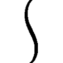!!」
数週間後 空座町 黒崎邸
『スピリッツ！ ア――ッ！
オールウェイッ!! ウイズ!! ィイユウ!!』
『それでは諸君、また来週！』
数週間前に近所で収録されたという『ぶら霊』のテレビ放送。
どうやらショッキングなシーンが多かったという事もあり、深夜へと回されたらしい。
「............」
その放送を見ていた黒崎遊子は、盛り上がる展開だったのにもかかわらず、心ここにあらずといった表情だ。
そんな彼女を見て、溜息を吐きながら黒崎夏梨が声を掛けた。
「遊子......もう寝なよ」
「夏梨ちゃんだって！」
「あたしはホラ、やることあるから......」
「やることって何!?」
遊子は妙にピリピリしているようで、その後もいくつかのやりとりを経て、夏梨と言い争いになりかけたのだが――
その直前で、玄関の扉が開く音が鳴り響き、聞き慣れた声が木霊する。
「ただいまァ」
「一兄!!」「お兄ちゃん!!」
二人揃って階段の方に走りこむと、二階の自室へと上りかけていた少年が足を止め、ゆっくりと妹達の方を振り返る。
「なんだよ。まだ起きてたのか、二人とも」
これは、狭間の物語。
尸魂界と虚圏の狭間。東京の片隅の小さな町で繰り広げられた――狭間の英雄の物語だ。
「早く寝ろよ。明日遅刻すんぞ」
オレンジ色の髪の少年の言葉をもって、物語は再び彼の手に流転する。
「......なんだよ？ 返事はどうした？」
「「うん!!」」
二人の妹の声が家の中に響き、テレビからはもう、観音寺の声は聞こえない。
邪道は正道へと回帰し、時は、本来の物語を紡ぎ始める。
ドン・観音寺とは別の狭間で闘う、一人の少年の物語を。
『spirits are always with you』
その言葉を証明する事ができる、死と生の狭間を歩む者達の物語を――
完
POSTSCRIPT
KUBO TITE
あとがき
Spirits Are Forever With You.
まずはこの、作品への愛に満ちた小説を読めた事に、読者として感謝します。
成田さんのお名前も作品も、一護役の声優である森田さんを通じて知ってはいましたが、作品をきちんと読んだ事はありませんでした。
それは単に僕が「小説を読むのが恐ろしく遅い」という一点のみが理由だったのですが、今回小説の執筆にあたっての打ち合わせを重ね、仕上がった作品を読んで、改めてその傑出した才気と深い洞察に驚かされました。
そしてＢＬＥＡＣＨという作品に対する深い愛情と知識にも。
色々と驚かされた事はあったのですが、ここでは作者である僕自身が１番驚かされたシーンについて書かせて頂きたいと思います。
それは、本作の終盤、剣八の力の上昇に関する一連のシーンです。
普段、僕がＢＬＥＡＣＨの中で伏線を張るに当たって、レベルを幾つかに分けて描写しています。
・読んだ全ての人に伏線の先の結果を当てておいて欲しいもの。
・４分の１、或いは10人に１人くらいには気付いて欲しいもの。
・１０００人、或いは１００００人に１人ぐらいの人が気付いてくれて「もしかしてこれに気付いたの俺だけじゃね!?」と思って欲しいもの。
・そして、長い期間をかけ、伏線をバラバラに配置して、ＢＬＥＡＣＨを全て読み込み、更にそこに自分で推論を加えなければ結論に辿り着けない、つまり
「誰も気付かないようにして、後々本編で回答を描こう」
と思っているもの。
剣八の力に関する描写は、この最後のレベルのものでした。
このシーンを読んだ時は、全身に鳥肌が立ちました。
まさかここまでＢＬＥＡＣＨを深く読み解いてくれる人が居るとは！ と。
そして、まさか自分が描くつもりであったシーンを、他の人に描かれてしまうとは！ と。
信じられない思いで、何度かそのシーンを読み返しました。
本来なら、原作で描く予定のものは「ここは原作で描くので外して頂きたい」と言うべきなのでしょうが、僕はこの事実が本当に嬉しく、そのまま描写を残すようお願いしました。
作者冥利に尽きるとは、正にこの事。
この作品への愛に満ちた小説を読めた事に、作者として感謝します。
２０１２０５０８ 久保帯人
POSTSCRIPT
NARITA RYOHGO
あとがき
「ドン・観音寺を主役として執筆したいのですが、ＯＫでしょうか？」
それが、集英社さんに対して、私が最初に投げかけた言葉だったと記憶しています。
というわけで、初めましての方が殆どだと思います。普段は電撃文庫で『バッカーノ！』や『デュラララ!!』『ヴぁんぷ！』などを書かせて頂いている成田良悟と申します。
この度、『ＢＬＥＡＣＨ』連載10周年記念の一環として小説を書かせて頂くこととなり、初めて集英社さんで仕事をさせて頂いた形となります。
実は、久保さんとはこの企画以前から、Ｔｗｉｔｔｅｒというウェブサービス上で何度か言葉を交わさせて頂いておりました。きっかけは、藍染の前にドン・観音寺が立ち塞がった回をジャンプを読んで、私が興奮して「今週の『ＢＬＥＡＣＨ』についにあのキャラが！」みたいな事を呟いた時、久保さんからメッセージを頂きまして......そして、久保さんが私の作品を御存知だったと知り、非常に驚いた記憶があります。
一護の声を演じる森田成一さんには、拙作『バッカーノ！』のアニメで主要キャラクターの声を務めて頂いているのですが、その森田さんが『バッカーノ！』の話を久保さんになさっていたと聞き、自分の仕事が人との縁を結んだ事に感動したりしていました。
しかし、そのＴｗｉｔｔｅｒでの会話があったから今回のお話を頂いたわけではなく、最初に私に声をかけて下さったＪブックス担当の六郷氏が、高校時代から私の小説の読者であり、集英社の編集者となった現在、こうした企画を立てて下さったとの事なのです。
『ＢＬＥＡＣＨ』の読者だった私が小説家となり、私の小説の読者だった高校生が集英社の編集者となり、結果として私が『ＢＬＥＡＣＨ』をノベライズして一つの本を作る。
皆さんに手にとって頂いた本は、そんな不思議な縁が造り出した一冊です。そして、そんな本の主役は、私が『ＢＬＥＡＣＨ』の中でも特に好きなキャラクターであり、Ｔｗｉｔｔｅｒでの会話の切っ掛けとなった存在でもある英雄が相応しいと思ったのです。何故私が観音寺のファンなのかは、ここで私の口から語るよりも、今回の作品の中から少しでも感じ取って頂ければ幸いです。
そして、冒頭の言葉に戻ります。
観音寺が主役の話は久保さんや編集部から認めて頂けるのか否か。
ドキドキしつつ、「駄目だったら本匠千鶴を主役にして夜一さんや砕蜂をメインにしたキャッキャウフフな桃色話を提案するしかないな......」と考えていると、久保さんと編集部からの「観音寺主役、ＯＫです」という快諾を頂く事ができました。
あれよあれよと話は進み、実際に久保さんとお会いした時にも、私は挨拶もそこそこに無茶ばかり言っていたように思います。
「ヤミーに頭を潰された女性破面を出していいですか？」
「大前田希代を出してもいいですか」
「無間の中にいる藍染を登場させてもいいですか？」
そんな無茶な要求を全て受け入れて下さった上、『ＢＬＥＡＣＨ』世界の様々な裏設定などを教えて下さった久保さんの懐の広さには、感謝してもしつくせません。
中でも、一番の無茶は――「十一代続く剣八の系譜の中で、七代目と八代目の枠を私に任せては頂けないでしょうか」という要求だったかもしれません。
話を頂いてから『ＢＬＥＡＣＨ』の単行本を一気読みする中で、やはり『剣八』が纏う『最強の死神』という設定、並びに、その称号を更に食う程に強烈な個性を持つ更木には、少年漫画好きの私の心が改めて強く揺さぶられました。そして、戦闘能力が低くとも英雄であり続ける観音寺と、その『剣八』の称号を背負う猛者を対峙させてみたくなったのです。
そう、この本に描いた物語のアイディアは、全て『ＢＬＥＡＣＨ』の漫画本編、あるいはカラブリといった番外編や、映画やアニメ、松原真琴さんの小説などのスピンオフの中から生み出されたものなのです。この本を楽しんで頂けたのならば、それはやはり『ＢＬＥＡＣＨ』の世界そのものが素晴らしかったからに他ならないと思います。
久保さんの生み出した壮大な物語の川の流れに乗る形で、拙い出来かもしれませんが、私の書いたこの小説という船に乗って、読者の皆さんに『ＢＬＥＡＣＨ』という大河の新たな景色をお見せする事ができたならば幸いです。
もしも次のクルージングの機会があれば、また皆さんと御一緒できれば嬉しいです。
そして、この本を作るに当たって、非常に多くの方々にお世話になりました。
設定やキャラの口調などに関して多くのアドバイスを下さり、本書のサブタイトルやピカロの技名、ロカの名字など、様々な部分を考案して頂き、尚かつ素晴らしいイラストを描いて下さった久保帯人さん。何より、多くの無茶を受け入れて下さり、『ＢＬＥＡＣＨ』を自由に書かせて頂いた事、本当にありがとうございました！
担当である六郷さんをはじめ、『ＢＬＥＡＣＨ』本編の歴代担当編集である浅田さん、服部さん、小野寺さんには、多くの感想を頂き、励みとなる御言葉を頂きました。デザイナーさんや校閲さんも含め、初めてのやりとりであたふたしている私を支えて下さった集英社の皆さんにも感謝です。
最後に、『ＢＬＥＡＣＨ』のファンの方々、以前から拙作を読んで下さっていた方々、あるいはその両方である方も含め――この本を手にとって頂いた皆様に、最大級の感謝を。
本当にありがとうございました！
Spirits Are Forever With You――『ＢＬＥＡＣＨ』という作品に満ちる数多のキャラクター達の魂が、いつまでも皆さんと共にある事をお祈り申し上げます。
２０１２年 ５月 成田良悟
■初出
BLEACH Spirits Are Forever With You 書き下ろし
久保帯人 KUBO TITE
１９７７年６月26日・広島生まれ。
１９９６年にデビューし、２００１年より週刊少年ジャンプ誌上にて「BLEACH」連載を開始。世界で好評を博している。
成田良悟 NARITA RYOHGO
２００２年、「バッカーノ！」にて電撃ゲーム小説大賞・金賞を受賞しデビュー。代表作に「デュラララ!!」「ヴぁんぷ！」「越佐大橋シリーズ」などがある。
ジャンプジェイブックスDIGITAL
［BLEACH］ Spirits Are Forever With You
著者 久保帯人◉成田良悟
© 2016 T.KUBO / R.NARITA
２０１６年12月31日発行
この電子書籍は、ジャンプジェイブックス「［BLEACH］ Spirits Are Forever With You」
２０１２年６月30日発行の第３刷を底本としています。
装丁 石野竜生＋湯澤勇太［Freiheit］
発行者 鈴木晴彦
発行所 株式会社 集英社
〒１０１－８０５０
東京都千代田区一ツ橋２丁目５番10号
０３－３２３０－６０８０（読者係）
制作所 株式会社ＩＣＥ
本作品の全部また一部を無断で複製、転載、改竄、インターネット上に掲載すること、および有償無償に関わらず、本データを第三者に譲渡することを禁じます。なお個人利用の目的であっても、コピーガードを解除しての複製は、法律で禁じられています。